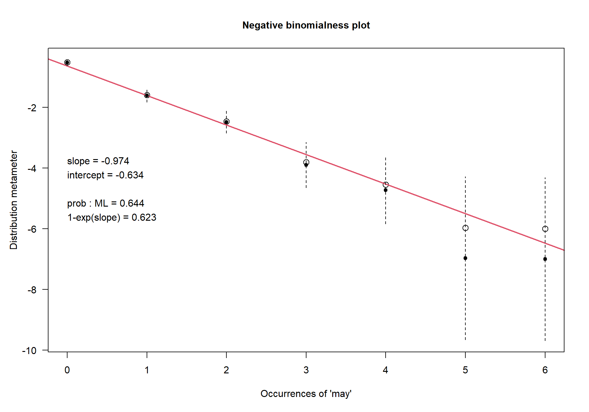
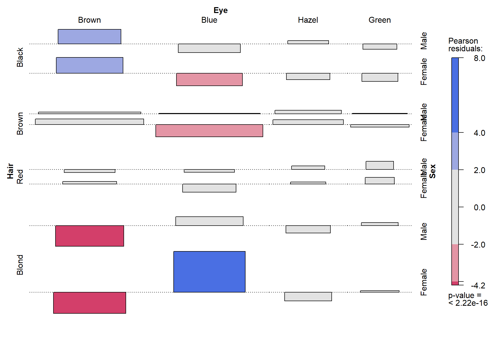
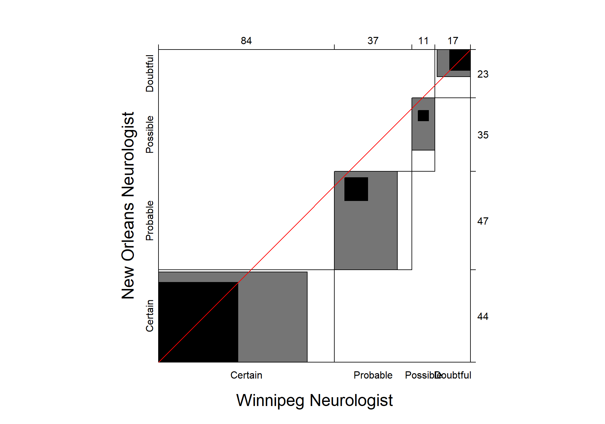
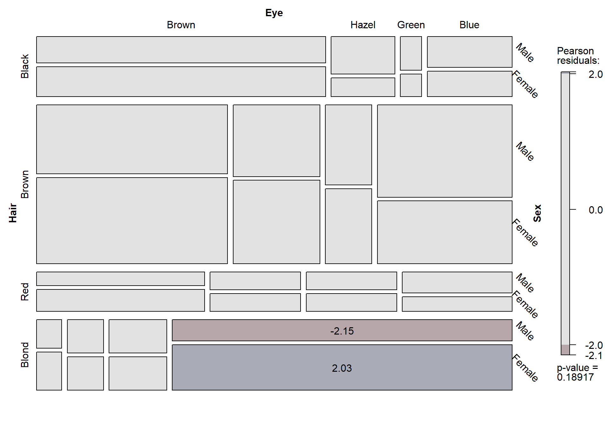
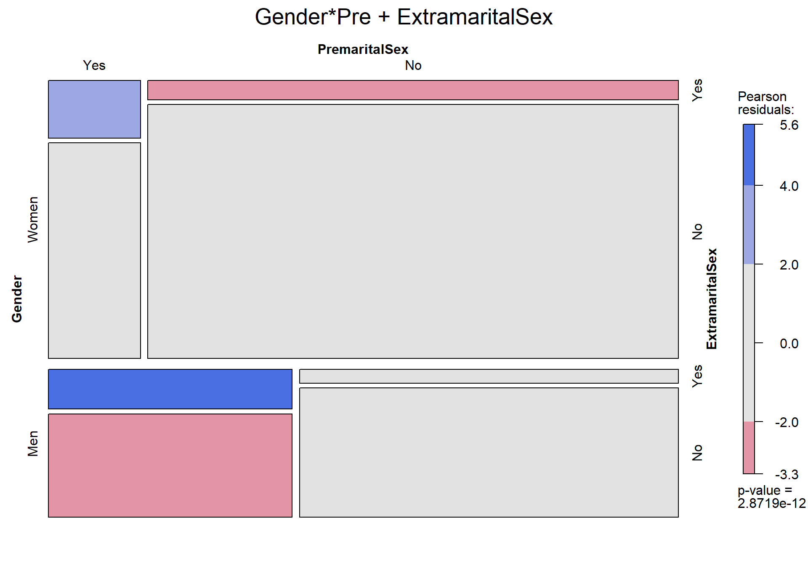
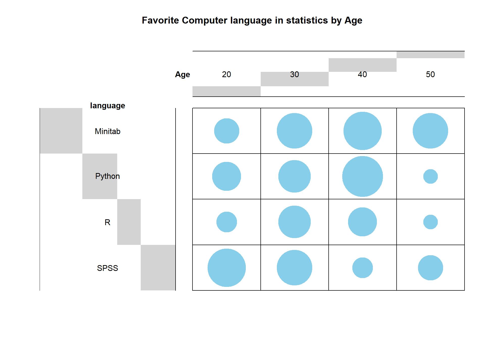
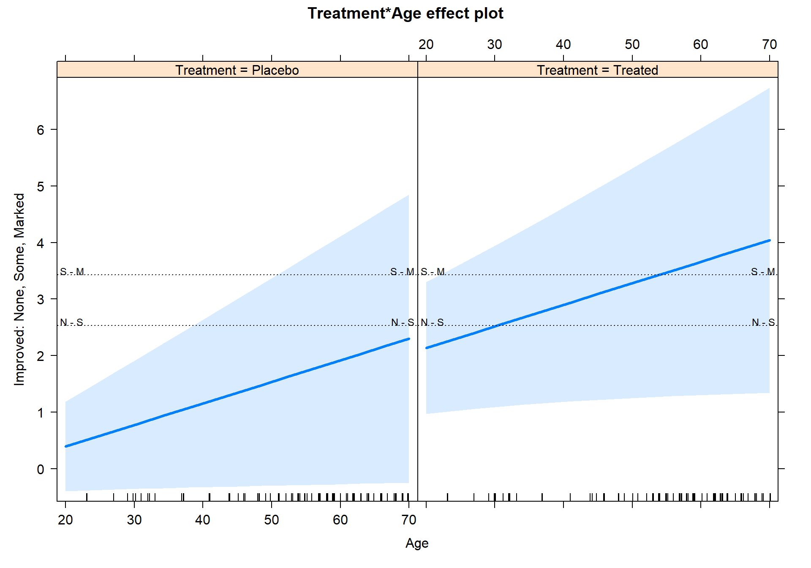
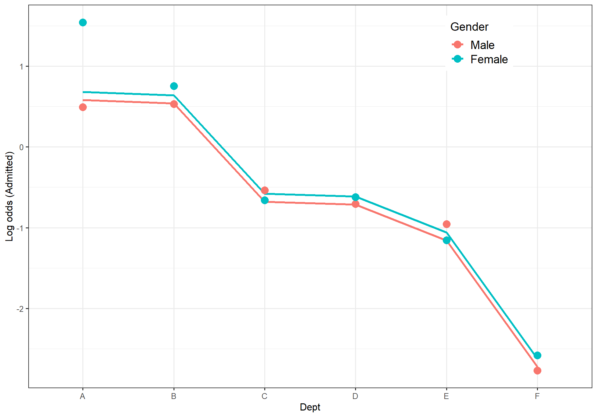

통계방법론2 실습코드 정리
202140191 엄태훈
2021-12-10(Fri)
본 Markdwon은 가천대학교 일반대학원 응용통계학과 고승곤 교수님의
2021년 통계방법론2 수업내용 및 실습코드를 정리한 것이다.
통계적인 다양한 개념 및 관련된 예제, 함수설명과 사용법 등의 실습코드가
포함돼있다.
함수설명의 경우, R에서 그 함수를 실행시키고자할 때 필요한 최소의
옵션만을 설명했으며, 함수에 관해 더 자세한 설명을 보고싶은경우
?함수명을 활용한다.
함수와 관련된 패키지가 설치가 돼있지 않다면, 패키지 설치 후 확인하거나
??함수명을 통해 확인하면된다.
설명하고자 하는 내용과 본 Markdown의 목차는 다음과 같다.
| 챕터 | 제목 |
|---|---|
| Chapter1 | Introduction |
| Chapter2 | Working with Categorical Data |
| Chapter3 | Fitting and Graphing Discrete Distributions |
| Chapter4 | Two-Way Contingency Tables |
| Chapter5 | Mosaic Display for n-Way Tables |
| Chapter7 | Logistic Regression Models |
| Chapter8 | Models for Polytomous Responses |
| Chapter9 | Loglinear and Logit Models for Contingency Tables |
Chap1 Introduction
일반적으로 데이터 분석을 진행한다는 것은, 데이터 수집부터 결과
도출까지의 모든 과정을 일컫는다.
이렇게 얻어진 결과들을 정리하여 우리는 다수의 사람들 앞에서 데이터를
통해 얻어진 결론이 무엇인지 설명하는 것이 필요하다.
그렇다면, 이때 가장 중요하게 여겨지는 요소가 무엇일까? 데이터의 분포, 모델의 성능, 분석기법 등을 생각해볼 수 있을 것이다. 하지만, 우리는 여기서 다수의 사람들이 통계를 전공한 사람들이 아닐수도 있다는 사실을 알아야한다. 복잡하고 어려운 분석기법과 모델의 성능에 대해서 아무리 설명을해도 그들에게는 크게 와닿지 않을 수도 있다. 따라서, 이러한 경우 가장 중요하게 여겨지는 요소가 바로 시각화(Visualization)이다.
우리가 전달하고자 하는 내용과 데이터들은 수많은 숫자 혹은 글로 구성돼있기 때문에 비전공자들이 해석하기에는 상당히 어려움이 따를수도 있다.
시각화는 이렇게 데이터 또는 분석결과를 조금 더 쉽게 이해하고 한 눈에 볼 수 있도록 시각적인 요소를 나타내는 방법을 말한다. 이때, 통계에서 데이터 분석을 진행하기 전에 시각화를 통해 데이터를 살펴보는 방법을 탐색적 자료분석(Exploratory Data Analysis)라고 한다.
특히, 데이터와 결론이 복잡해질수록 이러한 시각화 능력이 굉장히 중요시되기 때문에, 상황에 맞는 다양한 시각화 기법을 익히는 것은 데이터 분석가에게 있어서 매우 중요하게 여겨지는 능력 중 하나라고 할 수 있다.
통계에서 변수는 값을 숫자로 나타낼 수 있는 양적변수(Quantitative variable)와 변수의 값을 특정 범주에 포함시키는 질적변수(Quantitative variable)으로 나눠진다. 질적변수는 범주형 변수라고하기도 한다.
1.1 What is categorical data?
범주형 변수(Categorical data)는 순서가 지정(순서형 변수)되거나 순서가 지정되지 않은 범주(명목형 변수)의 이산 집합으로 나눌 수 있다.
범주형 변수의 예시는 다음과 같이 생각할 수 있다.
EX)
- Gender: “Male”, “Female”
- Marital status: “Never married”, “Married”, “Separated”, “Divorced”,
“Widowed”
- Fielding position(baseball): “Pitcher”, “Catcher”, “1st base”, “2nd base”, …“Left field”
범주형 데이터(Categorical data)는 우리가 많이 접해본 양적인 데이터와는 다른 변수의 값을 가지고 있으므로, 이에 따른 적합한 통계분석 및 시각화 방법을 익히는 것이 필요하다.
library(vcd)## 필요한 패키지를 로딩중입니다: griddata("Arthritis")
head(Arthritis,5)## ID Treatment Sex Age Improved
## 1 57 Treated Male 27 Some
## 2 46 Treated Male 29 None
## 3 77 Treated Male 30 None
## 4 17 Treated Male 32 Marked
## 5 36 Treated Male 46 Markedvcd패키지는 시각화 기법, 데이터셋의 요약 및 추론절차를
간편하게 할 수 있는 패키지로, 특히 범주형 데이터를 다룰때 유용하게
사용할 수 있다.
Arthritis데이터는 vcd패키지에 있는
데이터로, 류마티스 관절염의 새로운 치료법에 대한 데이터이다. 84개의
관측값과 5개의 변수로 이루어진 데이터이다.
- ID: 환자의 ID (Norminal variable)
- Treatment: 치료 약의 요인 (Factor variable - Placebo, Treated)
- Sex: 성별 (Factor variable - Female, Male)
- Age: 나이 (Discrete variable)
- Improved: (Ordered Factor variable - None, Some, Marked)
vcd패키지에서 Arthritis 데이터를 로드한 후,
head함수를 이용하여 데이터를 살펴본다.
library(dplyr)##
## 다음의 패키지를 부착합니다: 'dplyr'## The following objects are masked from 'package:stats':
##
## filter, lag## The following objects are masked from 'package:base':
##
## intersect, setdiff, setequal, unionArthritis %>%
group_by(Treatment,Sex,Improved) %>%
summarise(Freq=n())## `summarise()` has grouped output by 'Treatment', 'Sex'. You can override using
## the `.groups` argument.## # A tibble: 11 × 4
## # Groups: Treatment, Sex [4]
## Treatment Sex Improved Freq
## <fct> <fct> <ord> <int>
## 1 Placebo Female None 19
## 2 Placebo Female Some 7
## 3 Placebo Female Marked 6
## 4 Placebo Male None 10
## 5 Placebo Male Marked 1
## 6 Treated Female None 6
## 7 Treated Female Some 5
## 8 Treated Female Marked 16
## 9 Treated Male None 7
## 10 Treated Male Some 2
## 11 Treated Male Marked 5dplyr패키지는 R에서 데이터 프레임에 대한 전처리 과정을
빠르고 유용하게 진행하고자 할때, 사용하는 패키지이다.
dplyr패키지를 불러오면 파이프라인이라고
불리는 %>%를 사용할 수 있고, 이를 통해 데이터 처리를
훨씬 간편하게 할 수 있으며, 코드 또한 깔끔한 형태로 만들 수 있다.
group_by함수는 묶고자 하는 그룹들의 변수를 지정하여
그룹별로 데이터를 묶어준다.
- group_by(data)
- data: 묶고자하는 데이터의 변수
summarise함수는 새로운 데이터를 생성할 수 있는데, 특히
group_by함수를 통해 그룹별로 묶어진 데이터들의 요약값을
살펴보는데 유용하게 사용할 수 있다.
- summarise(create = function(columns))
- create: 만들고자하는 변수의 이름
- function: 요약값을 구할 수 있는 함수
- columns: 요약값을 보고자 하는 변수
위의 코드는 Treatment, Sex, Improved을 그룹으로 묶고 그에 따른 데이터의 빈도수를 구하는 코드이다.
Treatment = Placebo, Sex = Female, Improved = None인
환자의 빈도는 19로 가장 많다.
Treatment = Placebo, Sex = Male, Improved = Marked인
환자의 빈도는 1로 가장 적다.
Arthritis %>%
group_by(Treatment,Improved) %>%
summarise(Freq=n())## `summarise()` has grouped output by 'Treatment'. You can override using the
## `.groups` argument.## # A tibble: 6 × 3
## # Groups: Treatment [2]
## Treatment Improved Freq
## <fct> <ord> <int>
## 1 Placebo None 29
## 2 Placebo Some 7
## 3 Placebo Marked 7
## 4 Treated None 13
## 5 Treated Some 7
## 6 Treated Marked 21Treatment, Improved를 그룹으로 묶고 그에 따른
데이터의 빈도수를 살펴본다.
Treatment = Placebo, Improved = None 환자의 빈도는 29로
가장 많다.
Treatment = Placebo, Improved = Some, Treatment
= Placebo, Improved = Marked, Treatment = Treated,
Improved = Some인 환자의 빈도는 7로 가장 적다.
Arthritis %>%
group_by(Sex) %>%
summarise(Average_Age_by_Sex = mean(Age))## # A tibble: 2 × 2
## Sex Average_Age_by_Sex
## <fct> <dbl>
## 1 Female 53.5
## 2 Male 53summarise함수의 mean함수를 활용하여 성별에
따른 환자들의 평균 나이도 살펴볼 수 있다.
1.2 Strategies for categorical data analysis
data("HairEyeColor")
HairEyeColor## , , Sex = Male
##
## Eye
## Hair Brown Blue Hazel Green
## Black 32 11 10 3
## Brown 53 50 25 15
## Red 10 10 7 7
## Blond 3 30 5 8
##
## , , Sex = Female
##
## Eye
## Hair Brown Blue Hazel Green
## Black 36 9 5 2
## Brown 66 34 29 14
## Red 16 7 7 7
## Blond 4 64 5 8HairEyeColor데이터는 592명의 통계학과 학생들의 눈과 머리
색깔에 대한 분포를 나타낸 분할표이다.
성별, 눈의 색깔, 머리의 색깔 총 3개의 변수로 구성돼 있다.
- Sex: 성별 (Factor variable - Male, Female)
- Hair Color: 머리의 색깔 (Factor variable - Black, Brown, Red, Blond)
- Eye Color: 눈의 색깔 (Facotr variable - Brown, Blue, Hazel, Green)
mosaic(HairEyeColor,shade=TRUE)vcd패키지의 mosaic함수를 통해
mosaic plot을 그려보았다.
mosaic plot에 대한 내용은 뒤에 챕터에서 더 자세히 살펴보기
때문에 그때 다시 한 번 알아보도록 한다.
Hair_eye_data <- HairEyeColor[,,"Female"] + HairEyeColor[,,"Male"]
chisq.test(Hair_eye_data)##
## Pearson's Chi-squared test
##
## data: Hair_eye_data
## X-squared = 138.29, df = 9, p-value < 2.2e-16HairEyeColor의 남성의 빈도와 여성의 빈도를 합쳐
Hair_eye_data에 저장한다.
chisq.test함수는 분할표에 대한 적합도 검정을 피어슨
카이제곱 통계량과 유의확률을 통해 확인할 수 있게 해주는 함수이다.
- chisq.test(x)
x: 분할표 데이터
H0 : 두 변수는 독립이다.
H1 : 두 변수는 독립이 아니다.
chisq.test 함수를 이용하여 독립성 검정을 진행한 결과,
카이제곱 통계량의 값이 매우 크고 P-value는 유의수준 0.05보다 작은 값을
가지므로 귀무가설 H0를 기각한다.
따라서, 두 변수(Eye, Hair)은 서로 연관성이 있으며
독립이 아니라고 할 수 있다.
assocstats(Hair_eye_data)## X^2 df P(> X^2)
## Likelihood Ratio 146.44 9 0
## Pearson 138.29 9 0
##
## Phi-Coefficient : NA
## Contingency Coeff.: 0.435
## Cramer's V : 0.279assocstats함수는 vcd패키지에 있으며,
분할표에 대한 피어슨 카이제곱 검정, 우도비 검정, Cramer’s V 등
chisq.test를 사용하는 것 보다 조금 더 많은 정보를 출력할 수
있다.
- assocstats(data)
- data: 연관성 분석을 진행할 분할표 데이터
Cramer’s V는 이산 범주형의 관련성을 나타내는
척도이며, 아무런 관련성 없을때는 0, 최대의 관련성이 있을때는 1을
가진다.
Contigency coeff(분할계수) 또한 이산 범주형의 관련성을
나타내며, 1에 가까울수록 관련성이 크다고 할 수 있다.
1.3 Model building approaches
- 로지스틱 회귀분석(Logistic Regression)은 선형
회귀와 같이 독립 변수와 종속 변수간의 함수 관계를 규명하여 종속 변수를
예측하는 모델이다.
- 하지만, 선형회귀와 다른 점은 로지스틱 회귀분석의 종속변수는
범주형이다.
- 따라서 선형회귀 같은 경우 독립변수를 통해 종속변수를 예측한다고 하며, 로지스틱 회귀의 경우 독립변수를 통해 결과를 0또는 1로 분류한다고 한다.
로지스틱 회귀분석은 Chapter7에서 다루게 되므로, 뒤에서 더 자세히 알아보도록한다.
1.4 Graphical methods for categorical data
library(MASS)##
## 다음의 패키지를 부착합니다: 'MASS'## The following object is masked from 'package:dplyr':
##
## selectdata(iris)
parcoord(iris[,c(1:4)],
col = iris$Species,
var.label = TRUE)
legend(1.4,1, legend = c("Setosa","Versicolor","Virginica"),
lty=c(1,1,1),
col=c(1:3),
cex=0.7)MASS패키지의 parcoord함수를 이용하여
평행좌표 그림을 나타내었다. MASS패키지는 데이터를 시각화할
수 있는 다양한 함수 및 음이항 분포의 glm을 적합시킬 수 있는
glm.nb, 로그선형모델의 loglm 등 다양한 통계적
분석 함수 또한 같이 제공하는 패키지이다.
- parcoord(x,col,var.lable)
- x: 데이터
- col: 선을 구분할 변수
- var.label: 축 변수들의 최대값, 최소값 출력 여부
평행좌표 그래프는 데이터의 각 행에 대한 값을 선 하나로 나타낸 그림으로, 다변량의 자료를 파악하기에 좋은 방법이다.
iris데이터는 유명한 꽃데이터로, 50송이의 꽃에 대한 꽃잎의 길이와 너비, 꽃받침의 길이와 너비, 꽃의 종으로 구성돼있다.
- Sepal.Length: 꽃받침의 길이 (Continuous variable)
- Sepal.Width: 꽃받침의 너비 (Continuous variable)
- Petal.Length: 꽃잎의 길이 (Continuous variable)
- Petal.Width: 꽃잎의 너비 (Continuous variable)
- Species 꽃의 종 (Factor variable - Setosa, versicolor, virginica)
iris데이터의 평행좌표 그래프를 살펴본 결과,
Petal.Length, Petal.Width 변수는 Setosa일
때, 대부분 작은 값을 가지고 Virginica일 때 대부분 큰 값을
가지는 것을 확인할 수 있다.
Appendix: Chapter1
Regression vs Correlation
회귀분석(Regression)은 인과관계를 맺고 있는 변수
간에 함수관계를 규명하여 통계적인 분석을 실행하는 방법을 말한다.
상관분석과 달리 두 변수만이 아닌 둘 이상의 변수들의 관계를 파악할 수
있다.
상관분석(Correlation)은 두 변수간에 어떠한 선형적인
관계를 갖고있으며, 얼마나 밀접한 관계를 맺고 있는지 확인하는
방법이다.
상관분석을 한 후에 도출된 상관계수는 -1부터 1의 값을 가지며, -1에
가까울수록 강한 음의 상관관계, 0에 가까우면 서로 관계가 없고 1에
가까울수록 양의 상관관계를 갖고 있다고 한다.
회귀분석과 상관분석의 가장 큰 차이점 중 하나는 구체적인 함수관계라고
할 수 있다.
상관분석은 단순히 두 변수가 갖고있는 선형적 관계를 통해 함께 움직이는
정도만을 확인할 수 있다.
하지만, 회귀분석은 상관분석과 달리 두 변수간의 함수관계를 규명함으로써
한 변수(독립변수)의 변화에 따라 한 변수(종속변수)에 얼마만큼의 영향을
미칠 수 있는지 확인할 수 있다.
Summary of Chapter1
- 통계에서 데이터 분석을 진행함에 있어, 일반적으로 양적 변수와 질적
변수를 고려할 수 있다. 질적 변수(범주형 변수)를 다루는
것은 양적 변수보다는 약간의 어려움이 따르기 때문에 질적
변수를 다룰 수 있는 능력을 키우는 것은 중요하다.
- 범주형 변수는 변수들의 수준의 순서를 고려하지 않는
명목형 변수와 변수들의 수준의 순서를 고려하는
순서형 변수로 나눌 수 있다.
- 데이터 분석가의 분석 결과를 보고서의 형태로 정리할 때에는 데이터, 분석비법, 모델등을 정리하는 것도 중요하지만 보고받는 사람이 쉽게 이해할 수 있게 적절한 시각화를 통해 나타내는 것도 매우 중요한 요소이다.
Chap2 Working with Categorical Data
범주형 변수를 다루기 위해서는 양적 변수를 다루는 기술 이상의 능력이
필요하다.
양적 변수의 경우 숫자로 표현돼있기에 이상치, 데이터의
분포를 제외하고는 특별한 전처리 과정이 필요하지 않다.
하지만, 범주형 변수의 경우 문자로 표현되는 데이터도 많기 때문에 이에 대한 전처리 과정 및 데이터의 수준(level)의 순서를 고려해야 될수도 있으며 특히, R에서는 범주형 변수의 저장 형태가 table의 형태로 이뤄지는 경우가 많기 때문에 이 부분 또한 고려해야 하는 요소이다.
Chapter2에서는 범주형 변수 데이터들의 주요 특성에 대해서 알아본다.
2.1 Working with R data: vectors, matrics, arrays, and dataframes
2.1.1 Vectors
- R에서 벡터(Vector)는 숫자, 문자, 또는 논리 같은 값을 가지는 것을
말하며, 종종 일부 분석에서 변수에 해당되기도 한다.
- 가장 단순한 데이터 구조이며, 동일한 요소의 1차원 집합이다.
c()함수를 이용하여 인수를 결합한 벡터를 만들 수 있다.
c(17, 20, 15, 40)## [1] 17 20 15 40c("female", "male", "female", "male")## [1] "female" "male" "female" "male"c(TRUE, TRUE, FALSE, FALSE)## [1] TRUE TRUE FALSE FALSER의 기본 내장함수 c를 이용하여 동일한 요소를 가지고 있는
1차원 벡터를 만들 수 있다.
count <- c(17, 20, 15, 40)
count## [1] 17 20 15 40만들어진 벡터를 <- 혹은 =을 통해 특정
객체에 저장할 수도 있다.
(sex <- c("female", "male", "female", "male"))## [1] "female" "male" "female" "male"(passed <- c(TRUE, TRUE, FALSE, FALSE))## [1] TRUE TRUE FALSE FALSE객체 저장 후 바로 저장된 값을 출력하고 싶다면, 맨 앞과 맨 뒤에 괄호()를 입력하면 된다.
seq(10, 100, by = 10)## [1] 10 20 30 40 50 60 70 80 90 100seq(0, 1, length.out = 11)## [1] 0.0 0.1 0.2 0.3 0.4 0.5 0.6 0.7 0.8 0.9 1.0seq(10,100,length.out = 10)## [1] 10 20 30 40 50 60 70 80 90 100seq함수는 분석자가 정한 특정 범위와 간격을 기준으로 양적
데이터를 생성해주는 함수이다. -
seq(from, to, by | length.out)
- from: 분석자가 원하는 범위의 초기값
- to: 분석자가 원하는 범위의 마지막값
- by: 초기값부터 마지막값까지의 간격
- length.out: 초기값부터 마지막값까지 몇 개를 출력하고자 하는지에 대한 옵션. 즉, 간격이 (from - to) / (length.out-1)이 된다.
by와 length.out은 혼합해서 사용할 수
없으며, 둘 중 하나의 옵션만을 사용해야 한다.
(number <- rep(c(1,2,3,4,5),times = 2))## [1] 1 2 3 4 5 1 2 3 4 5(sex <- rep(c("female","male"),times=2))## [1] "female" "male" "female" "male"(sex <- rep(c("female","male"), length.out = 4))## [1] "female" "male" "female" "male"(passed <- rep(c(TRUE, FALSE), each = 2))## [1] TRUE TRUE FALSE FALSErep함수는 입력한 값들을 원하는 만큼 반복한 데이터를
만들어주는 함수이다. -
rep(data,times | length.out | each)
- data: 반복하고자 하는 데이터 (숫자는 물론 문자형도 가능하다.)
- times: 반복횟수
- length.out: 총 갯수 (지정한 만큼의 숫자까지 반복한다.)
- each: 각 데이터의 반복횟수 (times처럼 pair 형식으로 반복하는 것이 아니라 각각의 입력값들을 each만큼 반복한 후 다음 입력값을 반복해준다.)
2.1.2 Matrics
- 행렬(Matrics)은 열 또는 행의 벡터로 구성된 전통적인
표와 같은 직사각형 배열이다.
- 일반적으로 선형대수학, 공분산행렬, 다변량 정규분포 등의 계산식을 활용하고자 할때 많이 쓰인다.
(matA <- matrix(1:8, nrow=2, ncol = 4))## [,1] [,2] [,3] [,4]
## [1,] 1 3 5 7
## [2,] 2 4 6 8(matB <- matrix(1:8, nrow = 2, ncol = 4, byrow=TRUE))## [,1] [,2] [,3] [,4]
## [1,] 1 2 3 4
## [2,] 5 6 7 8(matC <- matrix(1:4, nrow = 2, ncol = 4))## [,1] [,2] [,3] [,4]
## [1,] 1 3 1 3
## [2,] 2 4 2 4R 에서는 matrix함수를 이용하여 행렬을 만들 수
있다.
- matrix(data,nrow,col,byrow) * data: 입력 값 * nrow: 행의
개수 * ncol: 열의 개수 * byrow: 입력값을 행을 우선으로 채울이 열로
채울지 결정. (default는 False이며,
TRUE로 지정하게 되면 입력값을 행을 우선으로
채운다.)
dim(matA)## [1] 2 4str(matA)## int [1:2, 1:4] 1 2 3 4 5 6 7 8dim은 만들어진 행렬 또는 데이터 프레임의 차원을 볼 수
있다. (2 4)가 의미하는 것은 2x4 즉, (2행 4열)을 의미한다.
- dim(data)
- data: 행렬 또는 데이터 프레임
str은 만들어진 행렬 또는 데이터프레임의 데이터 타입,
크기, 입력값들을 볼 수 있다.
- str(data)
- data: 행렬 또는 데이터 프레임
dimnames(matA) <- list(c("M","F"), LETTERS[1:4])
matA## A B C D
## M 1 3 5 7
## F 2 4 6 8str(matA)## int [1:2, 1:4] 1 2 3 4 5 6 7 8
## - attr(*, "dimnames")=List of 2
## ..$ : chr [1:2] "M" "F"
## ..$ : chr [1:4] "A" "B" "C" "D"dimnames(matA) <- list(sex = c("M","F"), group = LETTERS[1:4])
matA## group
## sex A B C D
## M 1 3 5 7
## F 2 4 6 8str(matA)## int [1:2, 1:4] 1 2 3 4 5 6 7 8
## - attr(*, "dimnames")=List of 2
## ..$ sex : chr [1:2] "M" "F"
## ..$ group: chr [1:4] "A" "B" "C" "D"dimnames를 이용하여 행렬의 행의 이름, 열의 이름을
지정해줄수도 있다.
-
dimnames(data) <- list(create_row = (row), create_col = (columns)
- data: 행렬이 저장된 객체명
- create_row: 분석자가 지정하고자 하는 행의 이름
- row: 지정한 행 이름의 수준
- create_col: 분석자가 지정하고자 하는 열의 이름
- col: 지정한 열 이름의 수준
rbind(matA, c(10,20))## A B C D
## M 1 3 5 7
## F 2 4 6 8
## 10 20 10 20cbind(matA, c(10,20))## A B C D
## M 1 3 5 7 10
## F 2 4 6 8 20rbind함수는 가지고 있는 행렬 또는 데이터 프레임의 행을
기준으로 데이터를 추가해준다.
cbind함수는 반대로 열을 기준으로 데이터를
추가해준다.
특히, 두 함수 모두 추가하고자 하는 데이터가 행 또는 열보다 작은 경우,
R이 자동적으로 데이터를 반복하여 추가해주는 것을 알 수 있다.
- rbind | cbind (data, append)
- data: 행렬 또는 데이터 프레임이 저장된 객체
- append: 추가하고자 하는 데이터
t(matA)## sex
## group M F
## A 1 2
## B 3 4
## C 5 6
## D 7 8t함수는 행렬의 전치(transpose)를 만들어주는
역할을 한다.
t(data)data: 행렬이 저장된 객체
2 * matA / 100## group
## sex A B C D
## M 0.02 0.06 0.10 0.14
## F 0.04 0.08 0.12 0.16만들어진 행렬 객체에 수식을 입력하여 전체 행렬에 대한 연산을 진행할수도 있다.
2.1.3 Arrays
- 배열(Arrays)은 행,열,계층으로 구성된 3원 테이블로
표현될 수 있도록 추가 차원을 추가한다.
- 중요한 것은 벡터, 행렬, 배열의 값이 모두 동일한 형태를 가지고 있어야
한다.
- 고차원 배열은 전통적인 데이터분석에서 빈번하게 쓰이진 않지만, 3개 이상의 변수의 빈도표가 테이블 변수에 대해 하나의 차원의 배열로 표현될 수 있는 범주형 데이터에 유용하다.
dims <- c(2, 4, 2)
(arrayA <- array(1:16, dim = dims))## , , 1
##
## [,1] [,2] [,3] [,4]
## [1,] 1 3 5 7
## [2,] 2 4 6 8
##
## , , 2
##
## [,1] [,2] [,3] [,4]
## [1,] 9 11 13 15
## [2,] 10 12 14 16str(arrayA)## int [1:2, 1:4, 1:2] 1 2 3 4 5 6 7 8 9 10 ...array는 R에서 배열을 만들어주는 함수이다.
- array(data,dim)
- data: 배열을 통해 표현하고자 하는 데이터
- dim: 사용자가 지정하고자 하는 차원의 크기(행,열,계층)
앞에서 설명했듯이, 행렬과 다르게 배열은 계층이라는
구조를 추가적으로 가진다.
str을 통해서 배열이 갖고 있는 정보와 크기를 확인할 수
있는데 위 배열(array)의 경우, 2rows, 4columns, 2layers(계층)을 가지는
배열(array)이다.
(arrayB <- array(1:16, dim = c(2,8)))## [,1] [,2] [,3] [,4] [,5] [,6] [,7] [,8]
## [1,] 1 3 5 7 9 11 13 15
## [2,] 2 4 6 8 10 12 14 16str(arrayB)## int [1:2, 1:8] 1 2 3 4 5 6 7 8 9 10 ...array함수에서 dim옵션을 사용할때, 레이어를
별도로 지정해주지 않으면 mxn의 크기를 갖는 행렬과 같게 표현될 수
있다.
str을 통해 차원이 2rows, 8columns을 갖는 것을 확인할 수
있다.
dimnames(arrayA) <- list(sex = c("M", "F"),
group = letters[1:4],
time = c("Pre", "Post"))
arrayA## , , time = Pre
##
## group
## sex a b c d
## M 1 3 5 7
## F 2 4 6 8
##
## , , time = Post
##
## group
## sex a b c d
## M 9 11 13 15
## F 10 12 14 16str(arrayA)## int [1:2, 1:4, 1:2] 1 2 3 4 5 6 7 8 9 10 ...
## - attr(*, "dimnames")=List of 3
## ..$ sex : chr [1:2] "M" "F"
## ..$ group: chr [1:4] "a" "b" "c" "d"
## ..$ time : chr [1:2] "Pre" "Post"배열(array) 또한 행렬과 같이 dimnames함수를 이용하여
행,열,계층마다 이름을 만들고 그에 따른 수준을 지정하는것이 가능한 것을
확인할 수 있다.
2.1.4 Data frames
- 데이터프레임(Dataframe)은 R에서 가장 일반적으로
사용되는 데이터 형식이다.
- 특히, 데이터를 분석하고자 할 때, 굉장히 유용하게 사용할 수
있다.
- 다른 통계 환경의 전통적인 데이터 세트처럼 직사각형 테이블이며 행과
열로 구성되지만 다른 유형의 변수를 추가할 수 있다.
- 데이터 프레임은 기본적으로 각각 데이터 프레임의 열을 나타내는 동일한 크기의 벡터 리스트이다.
set.seed(12345)
n <- 100
A <- factor(sample(c("a1","a2"),n, replace = TRUE))
B <- factor(sample(c("b1","b2"),n, replace = TRUE))
sex <- factor(sample(c("M","F"),n, replace = TRUE))
age <- round(rnorm(n, mean = 30, sd = 5))
mydata <- data.frame(A, B, sex, age)
head(mydata,5)## A B sex age
## 1 a2 b1 F 22
## 2 a1 b1 M 33
## 3 a2 b1 F 31
## 4 a2 b2 M 26
## 5 a2 b1 M 29R에서 데이터프레임은 data.frame이라는 함수를 통해 생성할
수 있다. 단, 데이터프레임으로 만들 때 모든 변수들의 크기는 반드시 같아야
한다.
- data.frame(data)
- data: 데이터프레임으로 바꾸어줄 변수들(하나 혹은 다중도 가능)
다양한 유형의 변수들을 mydata라는 객체에 데이터 프레임 형태로 한번에 저장할 수 있다.
str(mydata)## 'data.frame': 100 obs. of 4 variables:
## $ A : Factor w/ 2 levels "a1","a2": 2 1 2 2 2 2 2 1 1 2 ...
## $ B : Factor w/ 2 levels "b1","b2": 1 1 1 2 1 1 1 1 2 1 ...
## $ sex: Factor w/ 2 levels "F","M": 1 2 1 2 2 2 2 1 2 2 ...
## $ age: num 22 33 31 26 29 29 38 28 30 27 ...str함수를 통해 데이터 프레임의 각 변수에 대한 데이터
타입과 전반적인 데이터 프레임의 크기를 확인할 수 있다.
위 데이터의 경우 100개의 관측값과 4개의 변수를 가지는 데이터 프레임인
것을 알 수 있다.
mydata[1,2]## [1] b1
## Levels: b1 b2데이터프레임에서 저장한 객체명과 []을
활용하면 원하는 값을 쉽게 인덱싱 할 수 있다.
위의 코드는 mydata에서 1행 2열에 위치한 값을 출력해달라는 의미이다.
mydata[,1]## [1] a2 a1 a2 a2 a2 a2 a2 a1 a1 a2 a2 a2 a2 a1 a2 a1 a2 a2 a1 a2 a2 a1 a2 a2 a1
## [26] a2 a2 a2 a2 a2 a1 a1 a2 a1 a2 a2 a2 a1 a2 a2 a2 a2 a2 a2 a1 a2 a1 a2 a1 a2
## [51] a2 a1 a2 a1 a1 a1 a1 a1 a1 a1 a1 a2 a2 a1 a1 a1 a1 a1 a1 a2 a2 a1 a1 a2 a1
## [76] a2 a2 a2 a1 a1 a2 a1 a1 a2 a1 a1 a1 a2 a1 a1 a1 a1 a2 a1 a2 a2 a2 a1 a2 a2
## Levels: a1 a2mydata[,1]은 mydata의 1열에 있는 모든 값을 출력하라는
의미다. 즉 mydata에서 1열은 A라는 변수이므로 A변수의 데이터가 모두
출력되는 것을 확인할 수 있다.
mydata[1,]## A B sex age
## 1 a2 b1 F 22mydata[1,]는 mydata의 1행에 있는 모든 값을 출력하라는
의미로, 변수 A,B,sex,age의 각 첫번째 값이 출력된 것을 확인할 수
있다.
이는 첫번째 관측치의 모든 데이터를 의미한다.
mydata$sex## [1] F M F M M M M F M M M M M M M M M F F M M M F F F M F M M M F M F F F F F
## [38] M M M F F F M F M M M F F M F F M F M M F F F F F M F M M M M M F M M M M
## [75] F M F F F M M F M F F F F F M M F M M M F F F F M F
## Levels: F M또한, R에서 데이터 프레임 객체명$변수를 하게 되면 지정한
변수의 값만 확인할 수 있다.
Example 2.1: Arthritis treatment
write.table(Arthritis, file = "Arthritis.csv", quote = FALSE, sep = ",")
path <- "Arthritis.csv"
Arthritis <- read.table(path, header = TRUE, sep = ",")read.table을 이용하여 table format으로 돼있는 데이터를
읽어올 수 있다. - read.table(file, header, sep)
- file: 읽어오고자 하는 파일의 위치
- header: 데이터의 첫 번째 행을 포함시킬지 유무
- sep: 데이터를 어떠한 형식에 따라 분리할 것인지
head(Arthritis)## ID Treatment Sex Age Improved
## 1 57 Treated Male 27 Some
## 2 46 Treated Male 29 None
## 3 77 Treated Male 30 None
## 4 17 Treated Male 32 Marked
## 5 36 Treated Male 46 Marked
## 6 23 Treated Male 58 Markedstr(Arthritis)## 'data.frame': 84 obs. of 5 variables:
## $ ID : int 57 46 77 17 36 23 75 39 33 55 ...
## $ Treatment: chr "Treated" "Treated" "Treated" "Treated" ...
## $ Sex : chr "Male" "Male" "Male" "Male" ...
## $ Age : int 27 29 30 32 46 58 59 59 63 63 ...
## $ Improved : chr "Some" "None" "None" "Marked" ...Arthritis$Improved <- as.factor(Arthritis$Improved)
levels(Arthritis$Improved)## [1] "Marked" "None" "Some"R에서 factor데이터는 범주형 데이터를 일컫는다.
levels(수준)를 통해 facotr데이터가 갖고
있는 범주형 데이터의 수준을 확인할 수 있다.
Arthritis의 Imrpoved변수의 경우,
(약의 효과가) 뚜렷함, 없음, 약간의 순서대로 수준을
갖고있는 것을 확인할 수 있다.
Arthritis$Improved <- ordered(Arthritis$Improved,
levels = c("None","Some","Marked"))
levels(Arthritis$Improved)## [1] "None" "Some" "Marked"factor데이터의 순서를 의미있게 지정해주고 싶다면,
ordered함수를 이용하여 범주형 데이터의 순서를 지정해줄 수
있다.
- ordered(data, levels)
- data: 수준의 순서를 바꾸고자 하는 데이터
- levles: 수준의 순서를 재지정하고 싶은대로 수준을 재지정한다.
위의 코드는 약의 효과에 대한 수준의 순서를 없음, 약간, 뚜렷함의 순서로 수준의 순서를 재지정하는 코드이다.
2.2 Forms of categorical data: case form, frequency form, and table form
2.2.1 Case form
범주형 데이터는 단순히 데이터 프레임으로, 하나 이상의 이산형 분류변수
또는 반응변수가 있으며, 편리하게 요인 또는 순서요인으로 표현된다.
Case form은 데이터를 케이스 형태로 표현한 것을
말한다.
예를 들어, 각 환자에 대한 고유 ID, 그 환자의 정보, 약 효과 등 사례를
중심으로 나타낸 데이터는 Case form데이터 라고 할 수
있다.
Example 2.2: Arthritis treatment
data("Arthritis", package = "vcd")
head(Arthritis,5)## ID Treatment Sex Age Improved
## 1 57 Treated Male 27 Some
## 2 46 Treated Male 29 None
## 3 77 Treated Male 30 None
## 4 17 Treated Male 32 Marked
## 5 36 Treated Male 46 MarkedArthritis데이터의 경우 각 환자의 ID, 치료 방법, 성별,
나이, 결과 등 실험에 대한 사례가 나와있다.
따라서, 데이터를 케이스의 형태로 표현했기 때문에 Case
form에 속한다고 할 수 있다.
2.2.2 Frequency form
빈도 형식(Frequency form)은 하나 이상의 이산 요인 변수와 해당 셀의 기본 관측치 수를 나타내는 빈도 변수를 포함하는 형태이다.
Example 2.3: General social survey
tmp <- expand.grid(sex = c("female","male"),
party = c("dem", "indep","rep"))
tmp## sex party
## 1 female dem
## 2 male dem
## 3 female indep
## 4 male indep
## 5 female rep
## 6 male repexpand.grid는 제공되는 범주형 변수의 모든 조합을
사용하여 데이터를 만들 수 있는 함수이다.
- expand.grid(data)
- data: 조합하고자 하는 범주형 변수
위의 코드의 경우, 2개의 범주형 변수가 각각 2,3개의 수준을 가지므로 총 6개의 범주형 조합이 만들어지는 것을 확인할 수 있다.
GSS <- data.frame(tmp, count = c(279, 165, 73, 47, 227, 191))
GSS## sex party count
## 1 female dem 279
## 2 male dem 165
## 3 female indep 73
## 4 male indep 47
## 5 female rep 227
## 6 male rep 191expand.grid를 통해 만들어진 모든 범주형 조합에 빈도를
추가한 후, data.frame함수를 통해 데이터 프레임의 형태로
만들어주었다.
names(GSS)## [1] "sex" "party" "count"str(GSS)## 'data.frame': 6 obs. of 3 variables:
## $ sex : Factor w/ 2 levels "female","male": 1 2 1 2 1 2
## $ party: Factor w/ 3 levels "dem","indep",..: 1 1 2 2 3 3
## $ count: num 279 165 73 47 227 191이처럼 변수들과 그에 대한 기본 관측치를 갖고 있는 형식을 빈도 형식이라고 한다.
sum(GSS$count)## [1] 982빈도 형태를 가지는 데이터의 경우, sum을 통해 전체 빈도를
계산할 수 있다.
apply(GSS,2,function(x) max(x))## sex party count
## "male" "rep" "279"apply함수의 경우 데이터프레임에 함수을 적용함에 있어
상당히 유용하게 적용할 수 있게 해주는 함수이다.
- apply(data,margin,fun)
- data: 분석자가 분석을 하고자하는 데이터
- margin: 행을 기준으로 할 것인지 열을 기준으로 할 것인지(1 = 행, 2 = 열)
- fun: margin을 통해 나눠진 데이터에 적용할 함수(일반적으로 function(x) 원하는 함수(x)의 형태로 사용한다. 여기서, x = 나눠진 데이터)
apply함수를 통해 데이터의 가장 높은 빈도는 279이며,
이때의 변수는 sex == male, party == rep인 것을 쉽게
확인할 수 있다.
2.2.3 Table form
테이블 형태(Table form)의 데이터는 매트릭스, 배열
혹은 테이블 객체로 표현된다.
표의 차원은 테이블의 길이, 표의 크기는 속성들의 길이를 나타낸다.
Example 2.4: Hair color and eye color
data("HairEyeColor", package = "datasets")
HairEyeColor## , , Sex = Male
##
## Eye
## Hair Brown Blue Hazel Green
## Black 32 11 10 3
## Brown 53 50 25 15
## Red 10 10 7 7
## Blond 3 30 5 8
##
## , , Sex = Female
##
## Eye
## Hair Brown Blue Hazel Green
## Black 36 9 5 2
## Brown 66 34 29 14
## Red 16 7 7 7
## Blond 4 64 5 8HairEyeColor는 위와 같이 테이블 객체로 표현되기 때문에 Table form에 속하는 것을 확인할 수 있다.
dim(HairEyeColor)## [1] 4 4 2dimnames(HairEyeColor)## $Hair
## [1] "Black" "Brown" "Red" "Blond"
##
## $Eye
## [1] "Brown" "Blue" "Hazel" "Green"
##
## $Sex
## [1] "Male" "Female"sum(HairEyeColor)## [1] 592dim함수를 통해 데이터의 크기를 본 결과, 각 속성들은 4행
4열의 길이를 가지고 2개의 테이블을 가지고 있는 데이터임을 확인할 수
있다.
또한, dimnames함수를 통해 속성들의 요인을 확인할 수 있으며,
sum을 통해 셀의 전체 빈도의 합을 구할 수 있다.
Example 2.5: Job satisfaction
JobSat <- matrix(c(1,2,1,0,
3,3,6,1,
10,10,14,9,
6,7,12,11),
nrow = 4, ncol = 4)
str(JobSat)## num [1:4, 1:4] 1 2 1 0 3 3 6 1 10 10 ...dimnames(JobSat) <-
list(income = c("< 15k", "15-25k", "25-40k", "> 40k"),
satisfaction = c("VeryD", "LittleD", "ModerateS", "VeryS"))
JobSat <- as.table(JobSat)
JobSat## satisfaction
## income VeryD LittleD ModerateS VeryS
## < 15k 1 3 10 6
## 15-25k 2 3 10 7
## 25-40k 1 6 14 12
## > 40k 0 1 9 11str(JobSat)## 'table' num [1:4, 1:4] 1 2 1 0 3 3 6 1 10 10 ...
## - attr(*, "dimnames")=List of 2
## ..$ income : chr [1:4] "< 15k" "15-25k" "25-40k" "> 40k"
## ..$ satisfaction: chr [1:4] "VeryD" "LittleD" "ModerateS" "VeryS"as.table의 경우 원하는 데이터를 테이블의 형태로 바꿔주는
함수이다.
- as.table(data)
- data: table의 형태로 바꾸고자 하는 데이터
as.table을 통해 매트릭스의 형태인 데이터를 테이블의
형태로 쉽게 바꿀 수 있는 것을 확인할 수 있다.
2.3 Ordered factors and reordered tables
dimnames(JobSat)$income <- c(7.5, 20, 32.5, 60)
dimnames(JobSat)$satisfaction <- 1:4
JobSat## satisfaction
## income 1 2 3 4
## 7.5 1 3 10 6
## 20 2 3 10 7
## 32.5 1 6 14 12
## 60 0 1 9 11만들어진 데이터의 범주형 변수의 수준을 $를 통해 재지정할
수 있다.
dimnames(JobSat)$income <-
paste(1:4, dimnames(JobSat)$income, sep = ":")
dimnames(JobSat)$satisfaction <-
paste(1:4, dimnames(JobSat)$satisfaction, sep = ":")
JobSat## satisfaction
## income 1:1 2:2 3:3 4:4
## 1:7.5 1 3 10 6
## 2:20 2 3 10 7
## 3:32.5 1 6 14 12
## 4:60 0 1 9 11범주형 변수의 순서를 확인하기 위해 기존에 존재하던 범주형 변수 이름 앞에 순서를 부여하여 순서를 쉽게 확인할 수도 있다.
data("HairEyeColor", package = "datasets")
HEC <- HairEyeColor[, c(1, 3, 4, 2),]
str(HEC)## 'table' num [1:4, 1:4, 1:2] 32 53 10 3 10 25 7 5 3 15 ...
## - attr(*, "dimnames")=List of 3
## ..$ Hair: chr [1:4] "Black" "Brown" "Red" "Blond"
## ..$ Eye : chr [1:4] "Brown" "Hazel" "Green" "Blue"
## ..$ Sex : chr [1:2] "Male" "Female"HEC## , , Sex = Male
##
## Eye
## Hair Brown Hazel Green Blue
## Black 32 10 3 11
## Brown 53 25 15 50
## Red 10 7 7 10
## Blond 3 5 8 30
##
## , , Sex = Female
##
## Eye
## Hair Brown Hazel Green Blue
## Black 36 5 2 9
## Brown 66 29 14 34
## Red 16 7 7 7
## Blond 4 5 8 64기존에 존재하던 범주형 변수의 순서를 다르게 하고 싶다면
[]을 통해 인덱싱을 활용하여 바꿀수도 있다.
Eye변수의 수준의 순서를 Brown,Blue,Hazel,Green에서
인덱싱을 통해 Brown,Hazel,Green,Blue로 바꿔주었다.
str(UCBAdmissions)## 'table' num [1:2, 1:2, 1:6] 512 313 89 19 353 207 17 8 120 205 ...
## - attr(*, "dimnames")=List of 3
## ..$ Admit : chr [1:2] "Admitted" "Rejected"
## ..$ Gender: chr [1:2] "Male" "Female"
## ..$ Dept : chr [1:6] "A" "B" "C" "D" ...UCBAdmissions 데이터는 UC Berkeley의 학생 입학 정보를 나타내고 있는 데이터이다.
str함수를 이용하여 UCBAdmissions 데이터의
정보를 파악하였다. 3개의 변수를 갖고있는 테이블 형식의 변수임을 확인할
수 있다.
- Admit: 입학 승인 여부 (Factor variable - Admitted, Rejected)
- Gender: 성별 (Factor variable - Male, Female)
- Dept: 지원 부서 (Factor variable - A,B,C,D,E,F)
UCB <- aperm(UCBAdmissions, c(2,1,3))
dimnames(UCB)$Admit <- c("YES", "NO")
names(dimnames(UCB)) <- c("Sex", "Admitted", "Department")
str(UCB)## 'table' num [1:2, 1:2, 1:6] 512 89 313 19 353 17 207 8 120 202 ...
## - attr(*, "dimnames")=List of 3
## ..$ Sex : chr [1:2] "Male" "Female"
## ..$ Admitted : chr [1:2] "YES" "NO"
## ..$ Department: chr [1:6] "A" "B" "C" "D" ...UCB## , , Department = A
##
## Admitted
## Sex YES NO
## Male 512 313
## Female 89 19
##
## , , Department = B
##
## Admitted
## Sex YES NO
## Male 353 207
## Female 17 8
##
## , , Department = C
##
## Admitted
## Sex YES NO
## Male 120 205
## Female 202 391
##
## , , Department = D
##
## Admitted
## Sex YES NO
## Male 138 279
## Female 131 244
##
## , , Department = E
##
## Admitted
## Sex YES NO
## Male 53 138
## Female 94 299
##
## , , Department = F
##
## Admitted
## Sex YES NO
## Male 22 351
## Female 24 317aperm함수는 차원을 재배열해주는 함수이다.
- aperm(data, order)
- data: 차원을 재배열하고자 하는 데이터
- order: 차원을 재배열하고자 하는 순서
테이블에 aperm함수를 지정해주게 되면 테이블을 구성하는
셀 변수의 위치를 바꿀 수 있다.
dimnames, names를 통해 셀을 구성하는 변수의 범주 이름도
변경이 가능하다.
위의 코드를 통해 성별이 행, 합격여부가 열의 위치로 올수 있게 재지정하였고 합격여부의 수준의 이름을 Yes,No로 바꿨으며, 성별과 부서의 이름을 각각 Gender, Department로 변환해주었다.
2.4 Generating tables with table() and xtabs()
set.seed(1234)
n <- 100
A <- factor(sample(c("a1","a2"), n, replace = TRUE))
B <- factor(sample(c("b1","b2"), n, replace = TRUE))
sex<- factor(sample(c("M","F"), n, replace = TRUE))
age <- round(rnorm(n, mean = 30, sd = 5))
mydata <- data.frame(A, B, sex, age)
head(mydata,5)## A B sex age
## 1 a2 b2 F 28
## 2 a2 b1 M 30
## 3 a2 b1 F 38
## 4 a2 b1 M 26
## 5 a1 b1 M 31앞서 만든 mydata를 난수고정을 변경하여 다시 한 번
만들어주었다.
2.4.1 table()
table(mydata$A, mydata$B)##
## b1 b2
## a1 23 19
## a2 25 33데이터 프레임 객체에 table함수를 지정하게 되면 지정한
변수간의 빈도로 테이블을 구성해준다.
- table(data1,data2...)
- data1,data2…:
table로 구성하고자 하는 원하는 데이터를 넣어준다.
(mytab <- table(mydata[,1:2]))## B
## A b1 b2
## a1 23 19
## a2 25 33$가 아닌 인덱싱을 통해서도 table함수를
적용할 수 있으며, 인덱싱을 이용하여 적용하면 범주형 변수의 이름까지
출력되는 것을 확인할 수 있다.
margin.table(mytab)## [1] 100margin.table(mytab, 1)## A
## a1 a2
## 42 58margin.table(mytab, 2)## B
## b1 b2
## 48 52margin.table함수를 이용하면 테이블 내에서의 합을 쉽게
구할 수 있다.
- margin.table(data,margin)
- data: 테이블 내에 합을 구할 데이터
- margin: 연산의 기준 (1 = 행, 2 = 열, NULL = 전체)
addmargins(mytab)## B
## A b1 b2 Sum
## a1 23 19 42
## a2 25 33 58
## Sum 48 52 100addmargins함수를 이용하면 셀의 행, 열에 따른 합 뿐만
아니라 테이블 전체 합을 한번에 확인할 수 있다.
- addmargins(data)
- data: 함수를 적용할 데이터
prop.table(mytab)## B
## A b1 b2
## a1 0.23 0.19
## a2 0.25 0.33prop.table(mytab,1)## B
## A b1 b2
## a1 0.5476190 0.4523810
## a2 0.4310345 0.5689655prop.table(mytab,2)## B
## A b1 b2
## a1 0.4791667 0.3653846
## a2 0.5208333 0.6346154prop.table함수를 이용하면 테이블 내에서의 비율을 구할 수
있다.
- prop.table(data,margin)
- data: 테이블 내에 비율을 구할 데이터
- margin: 연산의 기준 (1 = 행, 2 = 열, NULL = 전체)
mytab <- table(mydata[,c("A","B","sex")])
mytab## , , sex = F
##
## B
## A b1 b2
## a1 10 10
## a2 9 16
##
## , , sex = M
##
## B
## A b1 b2
## a1 13 9
## a2 16 17ftable(mytab)## sex F M
## A B
## a1 b1 10 13
## b2 10 9
## a2 b1 9 16
## b2 16 173차원의 테이블을 table함수를 이용해서 살펴보면 한 눈에
보기가 쉽지 않다.
이때, ftable함수를 이용하면 table함수를 이용한
것 보다 3차원의 테이블을 한 눈에 쉽게 살펴볼 수 있다.
- ftable(data)
- data: 다차원의 분할표를 쉽게 보고자하는 데이터
2.4.2 xtabs()
mytable <- xtabs(~ A + B + sex, data = mydata)
ftable(mytable)## sex F M
## A B
## a1 b1 10 13
## b2 10 9
## a2 b1 9 16
## b2 16 17xtabs함수는 데이터에 저장된 변수를
Formula를 사용하여 테이블을 구성할 수 있게 만들어주는
함수이다.
- xtabs(formula, data)
- formula: 분석가가 원하고자 하는 테이블의 형태로 구성할 수 있게 해주는 식
- data: formula를 적용할 데이터
위의 코드의 경우, ~ A + B + sex의 형태의 Formula이기 때문에 A가 행,
B가 열, Sex가 계층을 이루는 table을 구성해준다.
summary(mytable)## Call: xtabs(formula = ~A + B + sex, data = mydata)
## Number of cases in table: 100
## Number of factors: 3
## Test for independence of all factors:
## Chisq = 2.6519, df = 4, p-value = 0.6177만들어진 테이블 데이터에 summary()를 하게되면,
table의 총 빈도, factor의 수, Chisq-test까지 진행해준
결과를 보여준다.
모든 factor에 대한 독립성 검정결과, 유의확률이 0.6177로 유의수준
0.05보다 크므로 귀무가설을 기각하지 못한다.
따라서, 모든 요인들은 서로 독립인 것을 확인할 수 있다.
(GSStab <- xtabs(count ~ sex + party, data = GSS))## party
## sex dem indep rep
## female 279 73 227
## male 165 47 191summary(GSStab)## Call: xtabs(formula = count ~ sex + party, data = GSS)
## Number of cases in table: 982
## Number of factors: 2
## Test for independence of all factors:
## Chisq = 6.675, df = 2, p-value = 0.03553빈도 ~ 변수 + 변수형태의 Formula로 지정하여 table을
구성할수도 있다.
위의 코드의 경우, count ~ sex + party의 형태이므로, count에
따른 행(sex), 열(party)의 테이블이 구성된다.
chisq-test결과, 유의확률이 0.03553으로 유의수준
0.05보다 작으므로 party와 sex 변수는 서로 연관성이 있으며 독립이 아닌
것을 알 수 있다.
2.5 Printing tables with structable() and ftable()
2.5.1 Text output
ftable(UCB)## Department A B C D E F
## Sex Admitted
## Male YES 512 353 120 138 53 22
## NO 313 207 205 279 138 351
## Female YES 89 17 202 131 94 24
## NO 19 8 391 244 299 317UCBAdmissions 데이터의 경우 차원이 꽤 크게 구성
돼있는 데이터이다.
이때, ftable을 적용하면 여러 차원에 있는 데이터를 한번에
쉽게 살펴볼 수 있다.
ftable(Admitted + Sex ~ Department, data = UCB)## Admitted YES NO
## Sex Male Female Male Female
## Department
## A 512 89 313 19
## B 353 17 207 8
## C 120 202 205 391
## D 138 131 279 244
## E 53 94 138 299
## F 22 24 351 317ftable또한 Formula를 이용하여 테이블을 연구자 본인이
원하는대로 구성할 수 있다.
Admitted + Sex ~ Department는 합격유무와 성별 변수를 부서에
따라서 테이블을 구성하라는 Formula이다.
library(vcd)
structable(HairEyeColor)## Eye Brown Blue Hazel Green
## Hair Sex
## Black Male 32 11 10 3
## Female 36 9 5 2
## Brown Male 53 50 25 15
## Female 66 34 29 14
## Red Male 10 10 7 7
## Female 16 7 7 7
## Blond Male 3 30 5 8
## Female 4 64 5 8structable또한 R에서 제공하는 다차원의 분할표를 한
테이블안에 생성할 수 있게 만들어주는 함수이다.
- structable(formula, data)
- formula: 분석가가 원하고자 하는 테이블의 형태로 구성할 수 있게 해주는 식
- data: 테이블로 변환할 데이터 (formula가 없을 경우 기존 변수의 순서대로 테이블을 구성)
structable(Hair + Sex ~ Eye, HairEyeColor)## Hair Black Brown Red Blond
## Sex Male Female Male Female Male Female Male Female
## Eye
## Brown 32 36 53 66 10 16 3 4
## Blue 11 9 50 34 10 7 30 64
## Hazel 10 5 25 29 7 7 5 5
## Green 3 2 15 14 7 7 8 8위의 코드는 Formula를 이용한 것으로, 머리색깔과 성별을 눈의 색깔에 따라 테이블을 구성하라는 의미이다.
2.6 Subsetting data
2.6.1 Subsetting tables
HairEyeColor[,,"Female"]## Eye
## Hair Brown Blue Hazel Green
## Black 36 9 5 2
## Brown 66 34 29 14
## Red 16 7 7 7
## Blond 4 64 5 8다차원의 분할표로 구성된 테이블에서
[,,"차원의 변수 중 원하는 범주]로 지정하게 되면 차원을
구성하는 변수 중 원하는 범주만의 데이터를 볼 수 있다.
위의 코드는 HairEyeColor에서 Female의
Hair,Eye를 출력해달라는 코드이다.
HairEyeColor[c("Black","Brown"), c("Hazel", "Green"),]## , , Sex = Male
##
## Eye
## Hair Hazel Green
## Black 10 3
## Brown 25 15
##
## , , Sex = Female
##
## Eye
## Hair Hazel Green
## Black 5 2
## Brown 29 14또는 위와같이 원하는 셀의 속성 중 원하는 범주형 변수만의 데이터만을
살펴볼수도 있다.
위의 코드는 Hair는 Black, Brown, Eye는
Hazel, Green만을 출력하게 만드는 인덱싱이다.
apply(HairEyeColor, 3, sum)## Male Female
## 279 313apply함수를 이용하여 테이블을 구성하는 차원 변수에 따른
sum을 구하였다.
앞에서 설명한 apply의 경우 margin이 1 또는 2만을 가졌지만,
테이블의 경우 특이하게 margin = 3까지 지정할 수 있다.
margin = 3은 계층에 따라서 함수를 적용하라는 의미이다. 즉,
HairEyeColor에서는 계층이 성별이므로 성별에 따른 합이
출력되는 것을 확인할 수 있다.
2.6.2 Subsetting structables
hec <- structable(Eye ~ Sex + Hair, data = HairEyeColor)
hec## Eye Brown Blue Hazel Green
## Sex Hair
## Male Black 32 11 10 3
## Brown 53 50 25 15
## Red 10 10 7 7
## Blond 3 30 5 8
## Female Black 36 9 5 2
## Brown 66 34 29 14
## Red 16 7 7 7
## Blond 4 64 5 8hec이라는 객체안에
HairEyeColor변수에 structable을
적용한(눈에 따른 성별과 머리의 빈도) 하나의 분할표로 이루어진 데이터를
저장하였다.
hec["Male",]## Eye Brown Blue Hazel Green
## Sex Hair
## Male Black 32 11 10 3
## Brown 53 50 25 15
## Red 10 10 7 7
## Blond 3 30 5 8위의 코드는 []을 사용하여 남성의 Eye와 Hair만을 출력할
수 있게 인덱싱을 적용한 코드이다.
hec[["Male",]]## Eye Brown Blue Hazel Green
## Hair
## Black 32 11 10 3
## Brown 53 50 25 15
## Red 10 10 7 7
## Blond 3 30 5 8[[]]을 적용하여 인덱싱을 적욯하면 3차원인 성별에 대한
계층은 출력되지 않는 것을 확인할 수 있다.
hec[[c("Male", "Brown"),]]## Eye Brown Blue Hazel Green
##
## 53 50 25 15[[]]와 c()를 결합시켜 남성 중 갈색 머리를 가진 사람들의
눈색깔만 출력할 수 있게 인덱싱을 적용한 결과이다.
2.6.3 Subsetting data frames
rows <- Arthritis$Sex == "Female" & Arthritis$Age > 68
cols <- c("Treatment", "Improved")
Arthritis[rows, cols]## Treatment Improved
## 39 Treated None
## 40 Treated Some
## 41 Treated Some
## 84 Placebo Marked데이터를 탐색함에 있어 특정한 조건을 만족하는 데이터를 탐색하고 싶은
경우가 있다.
이러한 경우, 특정 조건을 저장한 후, 인덱싱을 통해 지정한 조건을 만족하는
데이터만을 추출하여 확인할 수 있다.
위의 코드는 성별은 여성이며, 나이는 68세 이상인 환자의 치료방법과
치료결과를 출력하라는 코드이다.
전체 데이터 중, 4명의 환자만이 위의 조건을 만족하는 것을 확인할 수
있다.
subset(Arthritis, Sex == "Female" & Age > 68,
select = c(Treatment, Improved))## Treatment Improved
## 39 Treated None
## 40 Treated Some
## 41 Treated Some
## 84 Placebo Marked또는 R에서 제공하는 subset함수를 이용하여 보다 쉽게
데이터 필터링을 진행할 수 있다.
subset함수는 분석가가 지정한 조건에 따라 필터링을 진행한
후, 원하는 변수들만을 출력해줄 수 있게 만들어주는 함수이다.
- subset(data, subset, select)
- data: 조건을 적용하고자 하는 데이터
- subset: 적용하고자 하는 조건
- select: 조건을 적용한 데이터 중, 출력하고자 하는 변수
subset(Arthritis, Sex == "Female" & Age > 68, select = -c(Age, ID))## Treatment Sex Improved
## 39 Treated Female None
## 40 Treated Female Some
## 41 Treated Female Some
## 84 Placebo Female Markedselect옵션에서 -select(제외할 변수)으로
지정해 주게 되면 설정한 변수는 제외한 변수들만을 이용하여 결과를
보여준다.
iris <- dplyr::mutate(iris,mean_Length = (Sepal.Length + Petal.Length) / 2)
head(iris,5)## Sepal.Length Sepal.Width Petal.Length Petal.Width Species mean_Length
## 1 5.1 3.5 1.4 0.2 setosa 3.25
## 2 4.9 3.0 1.4 0.2 setosa 3.15
## 3 4.7 3.2 1.3 0.2 setosa 3.00
## 4 4.6 3.1 1.5 0.2 setosa 3.05
## 5 5.0 3.6 1.4 0.2 setosa 3.20mutate함수는 dplr패키지에 포함된 함수로
데이터 프레임 형태의 데이터를 사용함에 있어 새로운 데이터 변수를
만들고자 할 때, 유용하게 사용할 수 있는 함수이다.
- mutate(data,new_variable = formula)
- data:
mutate함수를 활용하고자하는 데이터 - new_variable: 새로운 변수의 이름
- formula: 만들고자 하는 새로운 변수를 구할 수 있는 식
mutate를 이용하여 꽃잎과 꽃받침 길이의 평균에 대한
정보를 갖고있는 mean_Length변수를 만들었다.
iris <- dplyr::mutate(iris,mean_width = (Sepal.Width + Petal.Width) / 2,
sum_flower = (Sepal.Length + Petal.Length + Sepal.Width + Petal.Width))
head(iris,5)## Sepal.Length Sepal.Width Petal.Length Petal.Width Species mean_Length
## 1 5.1 3.5 1.4 0.2 setosa 3.25
## 2 4.9 3.0 1.4 0.2 setosa 3.15
## 3 4.7 3.2 1.3 0.2 setosa 3.00
## 4 4.6 3.1 1.5 0.2 setosa 3.05
## 5 5.0 3.6 1.4 0.2 setosa 3.20
## mean_width sum_flower
## 1 1.85 10.2
## 2 1.60 9.5
## 3 1.70 9.4
## 4 1.65 9.4
## 5 1.90 10.2한 개의 변수가 아닌 여러개의 변수를 추가하고 싶다면 ,를
이용해서 만들고자 하는 변수 이름을 지정한 후 새로운 변수에 대한 식을
계속 정의하면 여러 개의 식을 한 번에 추가할 수 있다.
2.7 Collapsing tables
2.7.1 Collapsing over table factors: aggregate(), margin.table(), and apply()
data("DaytonSurvey", package = "vcdExtra")
str(DaytonSurvey)## 'data.frame': 32 obs. of 6 variables:
## $ cigarette: Factor w/ 2 levels "Yes","No": 1 2 1 2 1 2 1 2 1 2 ...
## $ alcohol : Factor w/ 2 levels "Yes","No": 1 1 2 2 1 1 2 2 1 1 ...
## $ marijuana: Factor w/ 2 levels "Yes","No": 1 1 1 1 2 2 2 2 1 1 ...
## $ sex : Factor w/ 2 levels "female","male": 1 1 1 1 1 1 1 1 2 2 ...
## $ race : Factor w/ 2 levels "white","other": 1 1 1 1 1 1 1 1 1 1 ...
## $ Freq : num 405 13 1 1 268 218 17 117 453 28 ...head(DaytonSurvey)## cigarette alcohol marijuana sex race Freq
## 1 Yes Yes Yes female white 405
## 2 No Yes Yes female white 13
## 3 Yes No Yes female white 1
## 4 No No Yes female white 1
## 5 Yes Yes No female white 268
## 6 No Yes No female white 218DaytonSurvey는 미국 오하이오 데이톤 고등학교에서
학생들을 대상으로 설문조사를 한 결과를 보여주는 데이터이다.
32개의 관측값과 6개의 변수로 구성돼있다.
- cigarette: 담배 유무 (Factor Variable - Yes, No)
- alcohol: 술 유무 (Factor Variable - Yes, No)
- marijuana: 마리화나 유무 (Factor Variable - Yes, No)
- sex: 성별 (Factor Variable - female, male)
- race: 인종 (Factor Variable - white, other)
- Freq: 빈도 (Discrete variable)
Dayton_ACM_df <- aggregate(Freq ~ cigarette + alcohol + marijuana, data = DaytonSurvey, FUN = sum)
Dayton_ACM_df## cigarette alcohol marijuana Freq
## 1 Yes Yes Yes 911
## 2 No Yes Yes 44
## 3 Yes No Yes 3
## 4 No No Yes 2
## 5 Yes Yes No 538
## 6 No Yes No 456
## 7 Yes No No 43
## 8 No No No 279aggregate함수는 apply함수와 유사하게 지정한
조건에 따른 변수들의 함수 적용결과를 도출할 수 있다.
- aggregate(Formula, data, FUN)
- Formula: 분석가가 원하고자 하는 조건
- data: 조건을 적용할 데이터
- FUN: 조건에 따라 나눠진 데이터에 적용할 함수
위의 코드에서는 cigarette + alcohol + marijuana에
따른 Freq의 합을 구하는 코드이다.
3개의 범주형 변수의 수준이 2개 이므로 총 2^3 = 8개의 결과가 나오는 것을
확인할 수 있다.
Example 2.7: Dayton survey
Dayton_tab <- xtabs(Freq ~ cigarette + alcohol + marijuana + sex + race,
data = DaytonSurvey)
structable(cigarette + alcohol + marijuana ~ sex + race,
data = Dayton_tab)## cigarette Yes No
## alcohol Yes No Yes No
## marijuana Yes No Yes No Yes No Yes No
## sex race
## female white 405 268 1 17 13 218 1 117
## other 23 23 0 1 2 19 0 12
## male white 453 228 1 17 28 201 1 133
## other 30 19 1 8 1 18 0 17데이터 프레임으로 저장된 DaytonSurvey를
xtabs함수를 이용하여 테이블로 바꿔주었다.
또한, strutable 함수를 이용하여 변환된 다차원의 테이블을
하나의 테이블로 쉽게 탐색할 수 있다.
(Dayton_ACM_tab <- apply(Dayton_tab, MARGIN = 1:3, FUN = sum))## , , marijuana = Yes
##
## alcohol
## cigarette Yes No
## Yes 911 3
## No 44 2
##
## , , marijuana = No
##
## alcohol
## cigarette Yes No
## Yes 538 43
## No 456 279apply함수를 이용하여 테이블의 빈도 합을 구하였다.
margin = 1:3으로 지정하게 되면 제일 첫 번째 차원인
marijuana 여부에 따른 테이블의 행과 셀의 합을
정리해준다.
(apply(Dayton_tab, MARGIN = 1:4, FUN = sum))## , , marijuana = Yes, sex = female
##
## alcohol
## cigarette Yes No
## Yes 428 1
## No 15 1
##
## , , marijuana = No, sex = female
##
## alcohol
## cigarette Yes No
## Yes 291 18
## No 237 129
##
## , , marijuana = Yes, sex = male
##
## alcohol
## cigarette Yes No
## Yes 483 2
## No 29 1
##
## , , marijuana = No, sex = male
##
## alcohol
## cigarette Yes No
## Yes 247 25
## No 219 150margin = 1:4으로 지정하게 되면 첫 번째 차원인
marijuana, 두 번째 차원인 sex까지
고려한 후, 행과 셀의 합을 정리해준다.
Dayton_ACM_tab <- margin.table(Dayton_tab, 1:3)
structable(cigarette + alcohol ~ marijuana, data = Dayton_ACM_tab)## cigarette Yes No
## alcohol Yes No Yes No
## marijuana
## Yes 911 3 44 2
## No 538 43 456 279또는, margin.table함수를 이용하여 apply를
적용한 결과와 같은 결과를 얻을 수도 있다.
library(plyr)## ------------------------------------------------------------------------------## You have loaded plyr after dplyr - this is likely to cause problems.
## If you need functions from both plyr and dplyr, please load plyr first, then dplyr:
## library(plyr); library(dplyr)## ------------------------------------------------------------------------------##
## 다음의 패키지를 부착합니다: 'plyr'## The following objects are masked from 'package:dplyr':
##
## arrange, count, desc, failwith, id, mutate, rename, summarise,
## summarizeplyr패키지는 다양한 형태의 데이터를 분석가가 다루기 조금
더 쉽게 만들어주는 함수들을 갖고 있는 패키지이다. 흔히 우리가 알고 있는
dplyr패키지와 유사하다고 생각하면 된다.
조금 다른점은, 함수를 적용한 결과에 대해서 테이블, 리스트등의 형태로
변환하여 결과를 출력하고 싶은경우 유용하게 사용할 수 있다는 점이다.
Dayton_ACM_df <- ddply(DaytonSurvey, .(cigarette, alcohol, marijuana),summarise, Freq = sum(Freq))
Dayton_ACM_df## cigarette alcohol marijuana Freq
## 1 Yes Yes Yes 911
## 2 Yes Yes No 538
## 3 Yes No Yes 3
## 4 Yes No No 43
## 5 No Yes Yes 44
## 6 No Yes No 456
## 7 No No Yes 2
## 8 No No No 279ddply는 데이터에서 연구자가 원하는 변수를 선택한 후
원하는 연산(sum.mean 등)을 진행한 후 데이터 프레임 형태로 결과를 주는
함수이다.
-
ddply(data, .variables, summarise, create = fun(create))
- data: 분석가가 사용하는 데이터
- variable: 분석에 사용하고자 하는 변수
- summarise: 지정한 변수들만을 사용할 수 있게 만들어주는 함수
- create: 만들고자하는 새로운 변수명
- fun: 지정하고 나눠진 변수들에 대해서 적용할 함수
2.7.2 Collapsing table levels: collapse.table()
Example 2.8: Collapsing categories
set.seed(12345)
sex <- c("Male", "Female")
age <- c("10-19","20-29","30-39","40-49","50-59","60-69")
education <- c("low","mid","high")
dat <- expand.grid(sex = sex, age = age, education = education)
counts <- rpois(36, 100)
dat <- cbind(dat, counts)
head(dat,5)## sex age education counts
## 1 Male 10-19 low 105
## 2 Female 10-19 low 107
## 3 Male 20-29 low 98
## 4 Female 20-29 low 95
## 5 Male 30-39 low 123str(dat)## 'data.frame': 36 obs. of 4 variables:
## $ sex : Factor w/ 2 levels "Male","Female": 1 2 1 2 1 2 1 2 1 2 ...
## $ age : Factor w/ 6 levels "10-19","20-29",..: 1 1 2 2 3 3 4 4 5 5 ...
## $ education: Factor w/ 3 levels "low","mid","high": 1 1 1 1 1 1 1 1 1 1 ...
## $ counts : int 105 107 98 95 123 105 97 116 95 103 ...expand.grid함수를 활용하여 성별, 연령대, 교육수준,
빈도에 대한 데이터를 생성하였다.
- sex: 성별 (Facotr variable - Male, Female)
- age: 연령대 (Facotr variable - 10-19, 20-29, 30-39, 40-49, 50-59, 60-69)
- education: 교육 수준 (Facotr variable - low, mid, high)
- counts: 빈도 (Discrete variable)
tab1 <- xtabs(counts ~ sex + age + education, data = dat)
structable(tab1)## age 10-19 20-29 30-39 40-49 50-59 60-69
## sex education
## Male low 105 98 123 97 95 105
## mid 74 113 114 82 95 85
## high 121 116 104 103 89 100
## Female low 107 95 105 116 103 92
## mid 96 88 93 118 99 108
## high 120 102 96 103 127 84xtabs의 formula를 이용하여 성별,나이대,교육수준을 빈도에
따른 테이블의 형태로 재구성하였다.
library(vcdExtra)## 필요한 패키지를 로딩중입니다: gnm##
## 다음의 패키지를 부착합니다: 'vcdExtra'## The following objects are masked _by_ '.GlobalEnv':
##
## GSS, JobSat## The following object is masked from 'package:plyr':
##
## summarise## The following object is masked from 'package:dplyr':
##
## summarisetab2 <- collapse.table(tab1,
age = c("10-29","10-29","30-49","30-49","50-69","50-69"),
education = c("<high", "<high", "high"))
structable(tab2)## age 10-29 30-49 50-69
## sex education
## Male <high 390 416 380
## high 237 207 189
## Female <high 386 432 402
## high 222 199 211vcdExtra패키지는 기존에 있던 범주형 데이터에 대한
시각화, 데이터 전처리의 함수와 더불어 추가적으로 범주형 데이터를
사용함에 있어 더욱 편리하고 유용한 함수들을 제공하기 위해 만들어진
패키지이다.
collapse.table함수를 통해 같은 수준을 가지는 데이터들을
합쳐 테이블을 구성할 수 있다.
- collapse.table(data, levels)
- data: 구성을 바꾸고자 하는 테이블
- levels: 특정 범주 변수의 재구성할 수준
위 코드의 경우 age, education변수에서 같은 범주형 levels(수준) 가지는 값들이 자동으로 하나의 데이터로 합쳐져 테이블이 구성된 것을 확인할 수 있다.
2.8 Converting among frequency tables and data frames
2.8.1 Table form to frequency form
Example 2.9: General social survey
as.data.frame(GSStab)## sex party Freq
## 1 female dem 279
## 2 male dem 165
## 3 female indep 73
## 4 male indep 47
## 5 female rep 227
## 6 male rep 191as.data.frame은 데이터의 형태를 데이터 프레임으로
바꿔주는 함수이다.
- as.data.frame(data)
- data: 데이터의 프레임 형태로 바꿔줄 데이터
GSStab의 경우 원래는 테이블의 형태를 갖지만,
as.data.frame적용 후 데이터 프레임 형태로 바뀐것을 확인할
수 있다.
Example 2.10: Death by horse kick
str(as.data.frame(HorseKicks))## 'data.frame': 5 obs. of 2 variables:
## $ nDeaths: Factor w/ 5 levels "0","1","2","3",..: 1 2 3 4 5
## $ Freq : int 109 65 22 3 1HorseKicks데이터는 과거 프로이센군의 10개 군단이 20년
동안 말의 발차기에 의해 얼마나 죽었는지를 나타내는 데이터이다.
str을 통해 데이터를 살펴본 결과,
HorseKicks데이터는 5개의 관측값과 2개의 변수로 이뤄진 것을
확인할 수 있다.
- nDeaths: 죽은 사람의 수 (Factor variable - 0,1,2,3,4)
- Freq: 빈도 (Discrete variable)
horse.df <- data.frame(nDeaths = as.numeric(names(HorseKicks)),
Freq = as.vector(HorseKicks))
str(horse.df)## 'data.frame': 5 obs. of 2 variables:
## $ nDeaths: num 0 1 2 3 4
## $ Freq : int 109 65 22 3 1horse.df## nDeaths Freq
## 1 0 109
## 2 1 65
## 3 2 22
## 4 3 3
## 5 4 1as.data.frame을 이용하지 않고 data.frame을
통해서 데이터의 형태를 데이터 프레임으로 변경할 수 있다.
유의할 점은 data.frame의 경우 데이터 프레임에 들어갈 각
변수를 칼럼이름 = 원하는 변수 형태로 지정을 해줘야
한다.
2.8.2 Case form to table form
Example 2.11: Arthritis treatment
Art.tab <- table(Arthritis[,c("Treatment", "Sex", "Improved")])
str(Art.tab)## 'table' int [1:2, 1:2, 1:3] 19 6 10 7 7 5 0 2 6 16 ...
## - attr(*, "dimnames")=List of 3
## ..$ Treatment: chr [1:2] "Placebo" "Treated"
## ..$ Sex : chr [1:2] "Female" "Male"
## ..$ Improved : chr [1:3] "None" "Some" "Marked"ftable(Art.tab)## Improved None Some Marked
## Treatment Sex
## Placebo Female 19 7 6
## Male 10 0 1
## Treated Female 6 5 16
## Male 7 2 5case form으로 돼있는 Arthritis데이터를
table함수를 이용하여 빈도수가 있는 테이블의 형태로
바꿔주었다.
이는 case form을 table form으로 바꾼
예시라고 할 수 있다.
2.8.3 Table form to case form
Example 2.12: Arthritis treatment
Art.df <- expand.dft(Art.tab)
str(Art.df)## 'data.frame': 84 obs. of 3 variables:
## $ Treatment: chr "Placebo" "Placebo" "Placebo" "Placebo" ...
## $ Sex : chr "Female" "Female" "Female" "Female" ...
## $ Improved : chr "None" "None" "None" "None" ...head(Art.df)## Treatment Sex Improved
## 1 Placebo Female None
## 2 Placebo Female None
## 3 Placebo Female None
## 4 Placebo Female None
## 5 Placebo Female None
## 6 Placebo Female Noneexpand.dft 함수를 통해 table 형태로
변환된 데이터를 다시 case form의 형태로 바꿀 수
있다.
- expand.dft(x)
- x: case form으로 바꾸고자 하는 table의 형태로 저장된 데이터
2.8.4 publising tables to LATEX or HTML
data("HorseKicks", package = "vcd")
library(xtable)
xtable(HorseKicks)## % latex table generated in R 4.2.1 by xtable 1.8-4 package
## % Thu Sep 29 20:49:26 2022
## \begin{table}[ht]
## \centering
## \begin{tabular}{rr}
## \hline
## & nDeaths \\
## \hline
## 0 & 109 \\
## 1 & 65 \\
## 2 & 22 \\
## 3 & 3 \\
## 4 & 1 \\
## \hline
## \end{tabular}
## \end{table}tab <- as.data.frame(HorseKicks)
colnames(tab) <- c("nDeaths", "Freq")
print(xtable(tab), include.rownames = FALSE, include.colnames = TRUE)## % latex table generated in R 4.2.1 by xtable 1.8-4 package
## % Thu Sep 29 20:49:27 2022
## \begin{table}[ht]
## \centering
## \begin{tabular}{lr}
## \hline
## nDeaths & Freq \\
## \hline
## 0 & 109 \\
## 1 & 65 \\
## 2 & 22 \\
## 3 & 3 \\
## 4 & 1 \\
## \hline
## \end{tabular}
## \end{table}R에서 분석을 진행한 후에, HTML 형식의 웹 페이지에 일부 테이블을
삽입하려고하면 오류가 발생하기 쉽다.
이때, R의 xtable을 이용하면 쉽게 해결할 수 있다.
특히, Latex 문서에 삽입을 하려고 할 때, 상당히 유용하게
사용할 수 있다.
horsetab <- t(as.data.frame(addmargins(HorseKicks)))
rownames(horsetab) <- c("Number of deaths", "Frequency")
horsetab <- xtable(horsetab, digits = 0, label = "tab:xtable5",
caption = "von Bortkiewicz's data on deaths by horse kikcs",
align = paste0("1|", paste(rep("r", ncol(horsetab) + 1), collpase = ""))
)
print(horsetab, include.colnames = FALSE, caption.placement = "top")## % latex table generated in R 4.2.1 by xtable 1.8-4 package
## % Thu Sep 29 20:49:27 2022
## \begin{table}[ht]
## \centering
## \caption{von Bortkiewicz's data on deaths by horse kikcs}
## \label{tab:xtable5}
## \begin{tabular}{1|r 1|r 1|r 1|r 1|r 1|r 1|r }
## \hline
## \hline
## Number of deaths & 0 & 1 & 2 & 3 & 4 & Sum \\
## Frequency & 109 & 65 & 22 & 3 & 1 & 200 \\
## \hline
## \end{tabular}
## \end{table}print(horsetab, include.colnames = FALSE, caption.placement = "top",type="html")## <!-- html table generated in R 4.2.1 by xtable 1.8-4 package -->
## <!-- Thu Sep 29 20:49:27 2022 -->
## <table border=1>
## <caption align="top"> von Bortkiewicz's data on deaths by horse kikcs </caption>
## <tr> <td align="1|r "> Number of deaths </td> <td align="1|r "> 0 </td> <td align="1|r "> 1 </td> <td align="1|r "> 2 </td> <td align="1|r "> 3 </td> <td align="1|r "> 4 </td> <td align="1|r "> Sum </td> </tr>
## <tr> <td align="1|r "> Frequency </td> <td align="1|r "> 109 </td> <td align="1|r "> 65 </td> <td align="1|r "> 22 </td> <td align="1|r "> 3 </td> <td align="1|r "> 1 </td> <td align="1|r "> 200 </td> </tr>
## </table>xtable의 다양한 옵션을 통해 테이블을 사용자가 원하는
대로 구성할 수 있다.
또한, print를 한 후, type = html을 하게 되면
html형태로 출력하는 것을 확인할 수 있다.
2.9 A complex example: TV viewing data
2.9.1 Creating dataframes and arrays
tv_data <- read.table("C:/Program Files/R/R-4.2.1/library/vcdExtra/extdata/tv.dat")
str(tv_data)## 'data.frame': 825 obs. of 5 variables:
## $ V1: int 1 2 3 4 5 1 2 3 4 5 ...
## $ V2: int 1 1 1 1 1 2 2 2 2 2 ...
## $ V3: int 1 1 1 1 1 1 1 1 1 1 ...
## $ V4: int 1 1 1 1 1 1 1 1 1 1 ...
## $ V5: int 6 18 6 2 11 6 29 25 17 29 ...head(tv_data,5)## V1 V2 V3 V4 V5
## 1 1 1 1 1 6
## 2 2 1 1 1 18
## 3 3 1 1 1 6
## 4 4 1 1 1 2
## 5 5 1 1 1 11read.table함수를 이용하여 경로에 저장 돼있는
tv.dat함수를 불러온 후 tv_data에
저장한 후, 데이터를 탐색하였다.
TV_df <- tv_data
colnames(TV_df) <- c("Day", "Time", "Network", "State", "Freq")
TV_df <- within (TV_df, {
Day <- factor(Day, labels = c("Mon","Tue","Wed","Thu","Fri"))
Time <- factor(Time)
Network <- factor(Network)
State <- factor(State)
})
head(TV_df,5)## Day Time Network State Freq
## 1 Mon 1 1 1 6
## 2 Tue 1 1 1 18
## 3 Wed 1 1 1 6
## 4 Thu 1 1 1 2
## 5 Fri 1 1 1 11불러온 데이터에 대하여 변수 이름을 지정해주고 각 변수가 가지고 있는
데이터들을 as.factor함수를 이용하여 범주형 변수로
바꿔주었다.
TV <- xtabs(V5 ~., data = tv_data)
dimnames(TV) <-
list(c("Mon", "Tue", "Wed", "Thu", "Fri"),
c("8:00", "8:15", "8:30", "8:45", "9:00", "9:15",
"9:30", "9:45", "10:00", "10:15", "10:30"),
c("ABC", "CBS", "NBC", "Fox", "Other"),
c("Off", "Switch", "Persist"))일반적으로, xtabs함수를 이용하며, V5를 빈도 변수로
사용하여 교차 테이블을 쉽게 만들 수 있다.
TV <- array(tv_data[,5], dim = c(5, 11, 5, 3))
dimnames(TV) <-
list(c("Mon", "Tue", "Wed", "Thu", "Fri"),
c("8:00", "8:15", "8:30", "8:45", "9:00", "9:15",
"9:30", "9:45", "10:00", "10:15", "10:30"),
c("ABC", "CBS", "NBC", "Fox", "Other"),
c("Off", "Switch", "Persist"))
names(dimnames(TV)) <- c("Day", "Time", "Network", "State")인덱싱을 이용하여 V5(빈도 데이터)에 대한 4차원 배열로
변경하였다.
V1,V2(Time, Day) 변수가 행과 열을 구성하며, Network,
State변수를 기준으로 차원을 나눠준다.
2.9.2 Subsetting and collapsing
TV <- TV[,,1:3,] # 네트워크 변수 중에서 ABC, CBS, NBC만을 사용한다.
TV <- TV[,,,3] # state = Persist인 경우만 사용한다.
structable(TV)## Time 8:00 8:15 8:30 8:45 9:00 9:15 9:30 9:45 10:00 10:15 10:30
## Day Network
## Mon ABC 146 151 156 83 325 350 386 340 352 280 278
## CBS 337 293 304 233 311 251 241 164 252 265 272
## NBC 263 219 236 140 226 235 239 246 279 263 283
## Tue ABC 244 181 231 205 385 283 345 192 329 351 364
## CBS 173 180 184 109 218 235 256 250 274 263 261
## NBC 315 254 280 241 370 214 195 111 188 190 210
## Wed ABC 233 161 194 156 339 264 279 140 237 228 203
## CBS 158 126 207 59 98 103 122 86 109 105 110
## NBC 134 146 166 66 194 230 264 143 274 289 306
## Thu ABC 174 183 197 181 187 198 211 86 110 122 117
## CBS 196 185 195 104 106 116 116 47 102 84 84
## NBC 515 463 472 477 590 473 446 349 649 705 747
## Fri ABC 294 281 305 239 278 246 245 138 246 232 233
## CBS 130 144 154 81 129 153 136 126 138 136 152
## NBC 195 220 248 160 172 164 169 85 183 198 204테이블을 구성하는 행과 열 (n-way)가 커질수록 데이터 탐색 및
분석하기가 상당히 불편하다.
따라서, 가능하면 적절한 인덱싱을 통해 차원(n-way)를
줄이는 것이 좋다.
TV2 <- collapse.table(TV,
Time = c(rep("8:00-8:59", 4),
rep("9:00-9:59", 4),
rep("10:00-10:44",3)))
structable(Day ~ Time + Network, TV2)## Day Mon Tue Wed Thu Fri
## Time Network
## 8:00-8:59 ABC 536 861 744 735 1119
## CBS 1167 646 550 680 509
## NBC 858 1090 512 1927 823
## 9:00-9:59 ABC 1401 1205 1022 682 907
## CBS 967 959 409 385 544
## NBC 946 890 831 1858 590
## 10:00-10:44 ABC 910 1044 668 349 711
## CBS 789 798 324 270 426
## NBC 825 588 869 2101 585마지막으로, 우리는 특정 목적을 위해 많은 수준을 가지고 있는 요인
변수의 수준을 줄이고 싶을수도 있다.
여기서는 collapse.table함수를 이용하여 time에 대한 수준을
줄임으로써 테이블을 축소시켰다.
2.9.1 Creating dataframes and arrays
tv_data <- read.table("C:/Program Files/R/R-4.2.1/library/vcdExtra/extdata/tv.dat")
str(tv_data)## 'data.frame': 825 obs. of 5 variables:
## $ V1: int 1 2 3 4 5 1 2 3 4 5 ...
## $ V2: int 1 1 1 1 1 2 2 2 2 2 ...
## $ V3: int 1 1 1 1 1 1 1 1 1 1 ...
## $ V4: int 1 1 1 1 1 1 1 1 1 1 ...
## $ V5: int 6 18 6 2 11 6 29 25 17 29 ...head(tv_data,5)## V1 V2 V3 V4 V5
## 1 1 1 1 1 6
## 2 2 1 1 1 18
## 3 3 1 1 1 6
## 4 4 1 1 1 2
## 5 5 1 1 1 11read.table함수를 이용하여 경로에 저장 돼있는
tv.dat함수를 불러온 후 tv_data에
저장한 후, 데이터를 탐색하였다.
TV_df <- tv_data
colnames(TV_df) <- c("Day", "Time", "Network", "State", "Freq")
TV_df <- within (TV_df, {
Day <- factor(Day, labels = c("Mon","Tue","Wed","Thu","Fri"))
Time <- factor(Time)
Network <- factor(Network)
State <- factor(State)
})
head(TV_df,5)## Day Time Network State Freq
## 1 Mon 1 1 1 6
## 2 Tue 1 1 1 18
## 3 Wed 1 1 1 6
## 4 Thu 1 1 1 2
## 5 Fri 1 1 1 11불러온 데이터에 대하여 변수 이름을 지정해주고 각 변수가 가지고 있는
데이터들을 as.factor함수를 이용하여 범주형 변수로
바꿔주었다.
TV <- xtabs(V5 ~., data = tv_data)
dimnames(TV) <-
list(c("Mon", "Tue", "Wed", "Thu", "Fri"),
c("8:00", "8:15", "8:30", "8:45", "9:00", "9:15",
"9:30", "9:45", "10:00", "10:15", "10:30"),
c("ABC", "CBS", "NBC", "Fox", "Other"),
c("Off", "Switch", "Persist"))일반적으로, xtabs함수를 이용하며, V5를 빈도 변수로
사용하여 교차 테이블을 쉽게 만들 수 있다.
TV <- array(tv_data[,5], dim = c(5, 11, 5, 3))
dimnames(TV) <-
list(c("Mon", "Tue", "Wed", "Thu", "Fri"),
c("8:00", "8:15", "8:30", "8:45", "9:00", "9:15",
"9:30", "9:45", "10:00", "10:15", "10:30"),
c("ABC", "CBS", "NBC", "Fox", "Other"),
c("Off", "Switch", "Persist"))
names(dimnames(TV)) <- c("Day", "Time", "Network", "State")인덱싱을 이용하여 V5(빈도 데이터)에 대한 4차원 배열로
변경하였다.
V1,V2(Time, Day)변수가 행과 열을 구성하며,
Network, State변수를 기준으로 차원을 나눠준다.
2.9.2 Subsetting and collapsing
TV <- TV[,,1:3,] # 네트워크 변수 중에서 ABC, CBS, NBC만을 사용한다.
TV <- TV[,,,3] # state = Persist인 경우만 사용한다.
structable(TV)## Time 8:00 8:15 8:30 8:45 9:00 9:15 9:30 9:45 10:00 10:15 10:30
## Day Network
## Mon ABC 146 151 156 83 325 350 386 340 352 280 278
## CBS 337 293 304 233 311 251 241 164 252 265 272
## NBC 263 219 236 140 226 235 239 246 279 263 283
## Tue ABC 244 181 231 205 385 283 345 192 329 351 364
## CBS 173 180 184 109 218 235 256 250 274 263 261
## NBC 315 254 280 241 370 214 195 111 188 190 210
## Wed ABC 233 161 194 156 339 264 279 140 237 228 203
## CBS 158 126 207 59 98 103 122 86 109 105 110
## NBC 134 146 166 66 194 230 264 143 274 289 306
## Thu ABC 174 183 197 181 187 198 211 86 110 122 117
## CBS 196 185 195 104 106 116 116 47 102 84 84
## NBC 515 463 472 477 590 473 446 349 649 705 747
## Fri ABC 294 281 305 239 278 246 245 138 246 232 233
## CBS 130 144 154 81 129 153 136 126 138 136 152
## NBC 195 220 248 160 172 164 169 85 183 198 204테이블을 구성하는 행과 열 (n-way)가 커질수록 데이터 탐색 및
분석하기가 상당히 불편하다.
따라서, 가능하면 적절한 인덱싱을 통해 차원(n-way)를 줄이는 것이
좋다.
TV2 <- collapse.table(TV,
Time = c(rep("8:00-8:59", 4),
rep("9:00-9:59", 4),
rep("10:00-10:44",3)))
structable(Day ~ Time + Network, TV2)## Day Mon Tue Wed Thu Fri
## Time Network
## 8:00-8:59 ABC 536 861 744 735 1119
## CBS 1167 646 550 680 509
## NBC 858 1090 512 1927 823
## 9:00-9:59 ABC 1401 1205 1022 682 907
## CBS 967 959 409 385 544
## NBC 946 890 831 1858 590
## 10:00-10:44 ABC 910 1044 668 349 711
## CBS 789 798 324 270 426
## NBC 825 588 869 2101 585마지막으로, 우리는 특정 목적을 위해 많은 수준을 가지고 있는 요인
변수의 수준을 줄이고 싶을수도 있다.
여기서는 collapse.table함수를 이용하여 time에 대한 수준을
줄임으로써 테이블을 축소시켰다.
Summary of Chapter2
- 범주형 변수의 수준(levels)을 고려하는 경우,
분석가가 원하는 순서대로 수준의 순서가 이뤄졌는지 확인하는 것이
중요하며, 그렇지 않은 경우, 재코딩을 통해 순서를 재지정해야한다.
- R에서는 벡터, 행렬, 데이터프레임, 테이블과 같이 분석하고자 하는 데이터들을 다양한 형태로 저장할 수 있다.
- 우리가 범주형 변수를 이용하여 데이터 분석을 진행할때,
테이블, 데이터프레임과 같은 형태를 가장 흔하게
사용한다.
- 범주형 변수의 경우에는 각 관측치의 고유 특성을 가지는 Case
form, 관측치의 특성을 범주형 변수를 통해 빈도료 표현하는
Frequency form, 테이블의 형태로 나타내는 table
form이 있다.
- 앞에서 살펴본 3개의 form, 테이블과 데이터프레임의 형태를 자유자재로
전환할 수 있는 능력을 키우는 것은 매우 중요하다.
- 다차원의 분할표를 한 눈에 살펴보고 싶다면,
structable(), ftabe()과 같은 함수를 이용할 수 있다.
- 갖고있는 데이터의 형태가 데이터프레임 일때,
apply()함수를 사용하면 적용하고자 하는 함수를 행이나 열에따라 편리하게 사용할 수 있다.
Chap3 Fitting and Graphing Discrete Distributions
이산형 데이터는 종종 다양한 이론적인 포아송,음이항,기하 등의
확률분포를 따른다.
우리가 데이터를 가지고 분석하는데에 있어 데이터가 어떠한 확률분포를
따르는지를 알아내고 가정하는 것은 매우 중요하다. 확률분포를 따르지
않으면 기본적인 통계가정을 만족하지 않으므로 분석을 진행함에 있어 상당한
어려움이 따를 수 있다. 따라서, 데이터에 대한 확률분포를 가정하고
이해하는 것 또한 분석에 있어 중요한 요소 중 하나라고 할 수 있다.
시각화는 모델의 진단, 적합도 확인, 추정된 모수에 대한 관측치를 살펴보는데에 사용된다.
이산형 빈도 분포는 사고 사망자, 어떤 특성을 가진 혈액 세포와 같은 사건의 발생 횟수를 포함한다.
Chapter3에서는 이항 분포, 포아송 분포, 음이항 분포, 기하분포 등 특정 확률 분포를 살펴보며, 주어진 분포의 데이터를 적합시키는 방법과 그에 대한 시각화, 모델 진단 같은 방법론에 대해서도 알아본다.
3.1 Introduction to discrete distributions
이산형 데이터 분석은 하나 이상의 사건 유형에 대한 표 작성 연구와 관련이 있으며, 동전 던지기, 성별, 수술 후 환자의 생존 등과 같은 결과 범주를 예시로 생각할 수 있다.
더 많은 사건에는 더 많은 범주가 나올 수 있으며, 순서를 지정할수도 있다.
Chapter3에서 우리는 숫자 변수로 이루어진 one-way 빈도표에 집중한다.
3.1.1 Binomial data
이항(Binomial) 데이터는 “성공” 사건의 수에 대한 이산
분포로 발생되며, 각각은 일정한 성공 확률 p로 구성된다.
일반적으로 총 시행횟수 n, 성공 확률 p라는 2개의 모수를
가지고 있으며, 베르누이 분포의 일반화 분포로 이해할 수 있다.
EX)
- 동전 던지기
- 불량품 선별
Example 3.1: Arbuthnot data
data("Arbuthnot", package = "HistData")
head(Arbuthnot,5)## Year Males Females Plague Mortality Ratio Total
## 1 1629 5218 4683 0 8771 1.114243 9.901
## 2 1630 4858 4457 1317 10554 1.089971 9.315
## 3 1631 4422 4102 274 8562 1.078011 8.524
## 4 1632 4994 4590 8 9535 1.088017 9.584
## 5 1633 5158 4839 0 8393 1.065923 9.997Arbuthnot데이터는 1629년부터 1710년까지 남성과 여성의
생존비율을 나타낸 데이터로, HistData패키지에 포함된
데이터이다.
- Year: 출생년도 (Discrete variable)
- Males: 남성 수 (Discrete variable)
- Females: 여성 수 (Discrete variable)
- plague: 역병으로인한 사망자 수 (Discrete variable)
- Morality: 총 사망자 수 (Discrete variable)
- Ratio: 남성/여성의 비율 (Continuous variable)
- Total: 런던에서의 총 세례식 횟수 (Continuous variable)
with(Arbuthnot, {
prob = Males / (Males + Females)
plot(x = Year, y = prob, type = "b",
ylim = c(0.5, 0.54), ylab = "Pr (Male)")
abline(h = 0.5, col = "red", lwd = 2)
abline(h = mean(prob), col = "blue")
lines(loess.smooth(Year, prob), col = "blue", lwd = 2)
text(x = 1640, y = 0.5, expression(H[0]: "Pr (Male) = 0.5"),
pos = 3, col = "red")
})Arbuthnot 데이터를 이용하여 출생년도에 따른 남성의
출생비율을 시각화해보았다.
with함수는 데이터에 대해서 여러가지의 작업들을 한 번의
코드 안에서 진행하고 깔끔한 코드 정리를 하고싶을 때 사용한다.
- with(data,task)
- data: 함수를 적용할 데이터
- task: 데이터를 이용하여 진행할 작업들(여러 개의 작업을 진행할 수 있다.)
H0: 남성의 출생 비율은 0.5이다. H1: 남성의 출생 비율은 0.5가 아니다.
위와같은 귀무가설과 대립가설을 이용하여 가설검정을 진행해 보았을 때, 실제 남성의 출생 비율은 0.517로 우리가 가정한 귀무가설과 큰 차이가 없는 것을 확인할 수 있다.
Example 3.2: Families in Saxony
data("Saxony", package = "vcd")Saxony데이터는 Saxony주의 남자 아이들의 숫자에 대한
데이터로 vcd패키지안에 포함되어 있다.
- nMales: 남성 아이들의 수 (Factor variable - 0 ~ 12)
barplot(Saxony, xlab = "Number of males",
ylab = "Number of families", col = "lightblue",
cex.lab = 1.5)Saxony데이터의 one-way 빈도표를 한 눈에 살펴보기 위해
barplot으로 시각화를 진행해 보았다.
남자 아이들의 숫자가 6명일 빈도가 가장 많고 그 다음으로는 5명,7명인 것을
확인할 수 있다.
또한, 데이터의 분포 형태가 종모양(bell shape)을 가지는
것을 확인할 수 있다.
Example 3.3: Weldon’s dice
data("WeldonDice", package = "vcd")weldonDice데이터는 12개의 주사위를 던졌을 때, 5 또는 6이
나왔을 빈도에 대한 데이터로, vcd패키지안에 포함 돼
있다.
- n56: 주사위가 5 또는 6이 나온 수 (Factor variable - 0 ~ 10)
dimnames(WeldonDice)$n56[11] <- "10+"
barplot(WeldonDice, xlab = "Number of 5s and 6s",
ylab = "Frequency", col ="lightblue", cex.lab = 1.5)WeldonDice데이터에서 11번,12번의 빈도가 0므로 10의
수준을 10+로 바꾸어 10,11,12의 경우가 포함되도록 한다.
WeldonDice 데이터의 one-way 빈도표를 barplot으로
나타낸 결과, 4번일 빈도가 가장 많고 그 다음으로 3번,5번인 것을 확인할 수
있다.
WeldonDice 데이터 또한 어느 정도 종모양(bell shape)의
형태를 띄는 것을 확인할 수 있었다.
3.1.2 Poisson data
포아송 데이터(Poisson data)는 고정된 시간 또는 공간
사이에서 사건 k의 수를 관찰하고 이러한 빈도를 표현하는데 사용된다.
특히, 포아송 분포는 평균과 분산이 같기 때문에
과대산포가 발생할 수 있으므로, 포아송 분포 사용시
과대산포를 반드시 유의해야 한다.
EX)
- k시간 동안 콜센터로 걸려오는 전화의 건수
- 책 1페이지당 오탈자가 발생하는 건수
- k주 동안 고속도로에서 교통사고가 발생하는 건수
Example 3.4: Death by horse kick
data("HorseKicks", package = "vcd")
barplot(HorseKicks, xlab = "Number of deaths",
ylab = "Frequency", col = "lightblue",
cex.lab = 1.5)HorseKicks데이터를 barplot을 통해
시각화를 진행한 결과 분포는 위와 같다.
말에게 1명도 사망하지 않는 경우의 빈도가 제일 많고 그 다음으로
1명,2명,3명,4명 순서대로 빈도가 작아지는 것을 확인할 수 있다.
Example3.5 : Federalist Papers
data("Federalist", package = "vcd")Federalist데이터는 ‘연방주의자 논문’의 저자를 식별하기
위해 특정 키워드(여기서는 ’may’)의 사용을 조사하기 위한 데이터로
vcd패키지 안에 포함돼 있다.
- nMay:
may라는 키워드의 발생 횟수 (Factor variable - 0 ~ 6)
barplot(Federalist,
xlab = "Occurrences of 'may'",
ylab = "Number of blocks of text",
col = "lightgreen", cex.lab = 1.5)Federalist데이터를 barplot을 통해
시각화를 진행한 결과 분포는 위와 같다.
may라는 키워드를 한 번도 사용하지 않은 경우가 가장 많았고
그 다음으로 1번,2번,3번,4번의 순서대로 빈도가 작아지는 것을 확인할 수
있다.
Example 3.6: London cycling deaths
data("CyclingDeaths", package = "vcdExtra")CyclingDeaths은 2005년부터 2012년까지 런던 사이클링
선수들의 사망빈도를 나타낸 시계열 데이터로 vcdExtra패키지
안에 포함돼 있다.
- date: 연도 (time)
- deaths: 사망자 수 (Discrete Variable)
CyclingDeaths.tab <- table(CyclingDeaths$deaths)
CyclingDeaths.tab##
## 0 1 2 3
## 114 75 14 5barplot(CyclingDeaths.tab,
xlab = "Number of deaths", ylab = "Number of fortnighs", col = "pink", cex.lab = 1.5)table함수를 통해 one-way 표로 정리한 후,
barplot을 통해 사망자 수의 분포를 살펴보았다.
앞선 Horsekicks, Federalist의 결과와 거의 유사한 형태이며,
사망자 수가 없을 빈도가 가장 많고 1명,2명,3명 순서대로 빈도가 작아지는
것을 확인할 수 있다.
3.1.3 Type-token distributions
Example 3.7: Butterfly species in Malaya
data("Butterfly", package = "vcd")Butterfly는 501개의 나비 종에 대한 각각의 토큰을 나타낸
데이터로, vcd패키지 안에 포함돼 있다.
- nTokens: 나비종의 토큰 수 (Factor variable - 1 ~ 24)
barplot(Butterfly, xlab = "Number of individuals",
ylab = "Number of species", cex.lab = 1.5)Butterfly데이터의 분포를 살펴보기 위해
barplot을 활용하여 시각화를 진행한 결과, 토큰의 수가
커질수록 빈도가 점점 작아지는 것을 확인할 수 있다.
3.2 Characteristics of discrete distributions
3.2.1 The binomial distribution
k <- 0:12
pk <- dbinom(k, 12, 1/3)
b <- barplot(pk, names.arg = k,
xlab = "Number of successes",
ylab = "Probability")
lines(x = b, y = pk, col ="red")R에서 이항분포의 총 시행횟수, 성공확률을 알 때, 발생확률을 계산하고
싶다면 dbinom함수를 통해 간단하게 계산할 수 있다.
- dbinom(x,size,prob)
- x: 성공횟수
- size: 시행횟수
- prob: 성공확률
3.2.1.1 calculation and visualization
Example 3.8: Weldon’s dice
Weldon_df <- as.data.frame(WeldonDice)
k <- 0:12
pk <- dbinom(k, 12, 1/3)
pk <- c(pk[1:10], sum(pk[11:13]))
Exp <- round(26306 * pk, 5)
Diff <- Weldon_df$Freq - Exp
Chisq <- Diff^2 / Exp
data.frame(Weldon_df, Prob = round(pk,5),
Exp, Diff, Chisq)## n56 Freq Prob Exp Diff Chisq
## 1 0 185 0.00771 202.74946 -17.74946 1.5538553
## 2 1 1149 0.04624 1216.49676 -67.49676 3.7450265
## 3 2 3265 0.12717 3345.36610 -80.36610 1.9306437
## 4 3 5475 0.21195 5575.61016 -100.61016 1.8154792
## 5 4 6114 0.23845 6272.56143 -158.56143 4.0082074
## 6 5 5194 0.19076 5018.04915 175.95085 6.1694696
## 7 6 3067 0.11127 2927.19533 139.80467 6.6771580
## 8 7 1331 0.04769 1254.51229 76.48771 4.6634615
## 9 8 403 0.01490 392.03509 10.96491 0.3066798
## 10 9 105 0.00331 87.11891 17.88109 3.6700801
## 11 10+ 18 0.00054 14.30532 3.69468 0.9542366WeldonDice의 데이터에 대해서 이항분포를 가정하고 기댓값,
실제값과 기댓값의 차이, chisq값을 계산하였다.
기댓값의 경우 0~4까지 음수의 값을 가지지만 5이상부터는 양수의 값을
가지는 것을 확인할 수 있다. 즉, 관측빈도가 기대빈도보다 높게 나온 것을
알 수 있다.
p <- c(1/6, 1/3, 1/2, 2/3)
k <- 0:12
(Prob <- outer(k, p, function(k,p) dbinom(k,12,p)))## [,1] [,2] [,3] [,4]
## [1,] 1.121567e-01 7.707347e-03 0.0002441406 1.881676e-06
## [2,] 2.691760e-01 4.624408e-02 0.0029296875 4.516023e-05
## [3,] 2.960936e-01 1.271712e-01 0.0161132813 4.967626e-04
## [4,] 1.973957e-01 2.119520e-01 0.0537109375 3.311751e-03
## [5,] 8.882807e-02 2.384460e-01 0.1208496094 1.490288e-02
## [6,] 2.842498e-02 1.907568e-01 0.1933593750 4.768921e-02
## [7,] 6.632496e-03 1.112748e-01 0.2255859375 1.112748e-01
## [8,] 1.136999e-03 4.768921e-02 0.1933593750 1.907568e-01
## [9,] 1.421249e-04 1.490288e-02 0.1208496094 2.384460e-01
## [10,] 1.263333e-05 3.311751e-03 0.0537109375 2.119520e-01
## [11,] 7.579995e-07 4.967626e-04 0.0161132813 1.271712e-01
## [12,] 2.756362e-08 4.516023e-05 0.0029296875 4.624408e-02
## [13,] 4.593937e-10 1.881676e-06 0.0002441406 7.707347e-03str(Prob)## num [1:13, 1:4] 0.1122 0.2692 0.2961 0.1974 0.0888 ...outer함수는 계산할 함수와 데이터가 여러개 있을 때, 조금
더 편리하게 계산할 수 있도록 돕는 함수이다.
- outer(x,y,fun)
- x: 계산할 벡터 또는 행렬
- y: 계산할 벡터 또는 행렬
- fun: 계산에 사용할 함수
성공확률 변화에 따른 이항분포의 확률계산 값을 Prob변수에
저장하였다.
성공확률(p)의 값을 4개로 넣어줬기 때문에 str함수를 사용했을
때 13x4형태로 값이 구성되있는 것을 알 수 있다.
matplot(k, Prob)성공확률의 변화에 따른 이항분포의 변화를 matplot을 통해
시각화를 하였다.
matplot은 matrix의 열을 그래프 위에 표시하도록 도와주는
함수이다.
- matplot(x,y)
- x: 그래프의 x축에 표시할 데이터
- y: 그래프의 y축에 표시할 데이터
matplot에 추가적인 옵션을 지정하지 않으면 위와 같이 해당
값의 열 번호가 출력된다.
col <- palette()[2:5]
matplot(k, Prob,
type = "o", pch = 15: 17, col = col, lty = 1,
xlab = "Number of Successes", ylab = "Probability")
legend("topright", legend = c("1/6","1/3","1/2","2/3"),
pch = 15:17, lty = 1, col = col,
title = "Pr(Success")여러가지 옵션을 추가하여 변화의 추이를 조금 더 쉽게 살펴볼 수 있도록 하였다.
성공확률이 커짐에 따라, 가장 큰 확률값을 가지는 성공횟수가 점차 큰쪽으로 변하는 것을 확인할 수 있다.
3.2.2 The Poisson distribution
Example 3.9: UK soccer scores
data("UKSoccer", package = "vcd")UKSoccer데이터는 1995/1996 영국 프로축구 리그의 스코어를
홈과 어웨이에 따라서 구분한 데이터로, vcd패키지 안에 포함돼
있다.
- Home: 홈에서의 득점 (Factor variable - 0,1,2,3,4)
- Away: 원정에서의 득점 (Factor variable - 0,1,2,3,4)
soccer.df <- as.data.frame(UKSoccer, stringsAsFactors = FALSE)
soccer.df <- within(soccer.df, {
Home <- as.numeric(Home)
Away <- as.numeric(Away)
Total <- Home + Away
})
str(soccer.df)## 'data.frame': 25 obs. of 4 variables:
## $ Home : num 0 1 2 3 4 0 1 2 3 4 ...
## $ Away : num 0 0 0 0 0 1 1 1 1 1 ...
## $ Freq : num 27 59 28 19 7 29 53 32 14 8 ...
## $ Total: num 0 1 2 3 4 1 2 3 4 5 ...테이블로 구성된 데이터를 데이터 프레임의 형태로 바꾸고 홈득점과
원정득점을 합친 Total변수를 추가해 주었다.
library(vcdExtra)
soccer.df <- expand.dft(soccer.df)
head(soccer.df)## Home Away Total
## 1 0 0 0
## 2 0 0 0
## 3 0 0 0
## 4 0 0 0
## 5 0 0 0
## 6 0 0 0expand.dft함수를 이용하여 빈도변수를 제외하고 빈도의 수
만큼 변수들의 관측값이 만들어지도록 하였다.
즉, Home = 2, Away = 0, Total = 2, Freq = 28 이라면 Freq 변수는 제외하고 데이터의 행에 Home = 2, Away = 0, Total = 2라는 관측값이 28개 만들어지도록 하는 것이다.
apply(soccer.df,2, function(x) c(mean =mean(x), var = var(x)))## Home Away Total
## mean 1.486842 1.063158 2.550000
## var 1.316449 1.172782 2.617546apply함수를 통해 Home, Away에 따른 스코어의 평균,
분산값을 쉽게 구하는것을 확인할 수 있다.
홈의 경우 평균 1.48득점, 원정의 경우 평균 1.06득점이 발생하는 것을 확인할 수 있다.
Example 3.10: London cycling deaths
with(CyclingDeaths, c(mean = mean(deaths),
var = var(deaths),
ratio = mean(deaths) / var(deaths)))## mean var ratio
## 0.5673077 0.5268488 1.0767942런던 사이클리스트의 사망자 수가 포아송분포를 따르는지
확인해본다.
평균 값으로 보아 경주당 평균 0.57명 또는 한 달에 1명 이상 사망한 것을 알
수 있다.
mean.deaths <- mean(CyclingDeaths$deaths)
ppois(5, mean.deaths, lower.tail = FALSE)## [1] 2.854305e-05ppois함수는 포아송분포의 범위확률을 계산할 수 있도록
도와주는 함수 중 하나이다.
- ppois(q,lambda,lower.tail)
- q: 분석가가 계산하고자 하는 발생횟수 범위의 기준
- labmda: 포아송 분포의 단위시간당 평균 발생 횟수
- lower.tail: 확률 계산 방법 (TRUE = P(X<x), FALSE = P(X>x))
ppois를 통해 5명 이상의 사망한 확률을 계산하였다.
계산결과, 확률이 매우 작은 것으로 보아 5명 이상의 사망발생 확률은 매우
작다는 것을 확인할 수 있다.
3.2.2.1 Calculation and visualization
Example 3.11: Plotting styles for discrete distributions
KL <- expand.grid(k = 0:20, lambda = c(1,4,10))
pois_df <- data.frame(KL, prob = dpois(KL$k, KL$lambda))
pois_df$lambda <- factor(pois_df$lambda)
str(pois_df)## 'data.frame': 63 obs. of 3 variables:
## $ k : int 0 1 2 3 4 5 6 7 8 9 ...
## $ lambda: Factor w/ 3 levels "1","4","10": 1 1 1 1 1 1 1 1 1 1 ...
## $ prob : num 0.3679 0.3679 0.1839 0.0613 0.0153 ...head(pois_df)## k lambda prob
## 1 0 1 0.367879441
## 2 1 1 0.367879441
## 3 2 1 0.183939721
## 4 3 1 0.061313240
## 5 4 1 0.015328310
## 6 5 1 0.003065662exapnd.grid함수를 통해 주어진
k,lambda에 대한 모든 가능한 조합을 구성하고 그에대한
포아송 확률을 갖고있는 pois_df데이터를 생성하였다.
dpois는 포아송분포의 특정 발생횟수에 대한 확률을
계산하고자 할때 사용하는 함수이다.
- dpois(x,lambda)
- x: 분석가가 계산하고자하는 발생횟수
- lambda: 포아송 분포의 단위시간당 평균 발생 횟수
library(lattice)##
## 다음의 패키지를 부착합니다: 'lattice'## The following object is masked from 'package:gnm':
##
## barleyxyplot(prob ~ k | lambda, data = pois_df,
type = c("h","p"), pch = 16, lwd = 4, cex = 1.25, layout = c(3,1),
xlab = list("Number of events (k)", cex = 1.25),
ylab = list("Probability", cex = 1.25))lattice패키지는 다변량 데이터의 시각화를 돕기위해
설계되었으며, 특정 데이터에 대해서 그룹을 나눠 시각화를 진행하고자 할때
유용하게 사용할 수 있는 패키지이다.
생성된 데이터 pois_df를 xyplot을 이용하여 시각화를
하였다.
xyplot은 plot을 그림에 있어 특정 그룹을 통해 layout을 나눌
수 있게 도와주는 시각화 함수이며, 이를 통해 lambda에 따른 포아송 분포를
더 쉽게 비교 할 수 있다. - xyplot(formula,data)
- formula: 그래프에 변수를 표현하는 방법 (y ~ x | group)은 y변수를
y축, x변수를 x축으로하고 group에 따라 layout을 나눠달라는
의미이다.
- data: 시각화에 사용할 데이터
lambda가 커짐에 따라 포아송 분포의 형태가 정규분포와 같은 종모양(bell-shape)의 형태를 가지는 것을 확인할 수 있다.
mycol <- palette() [2:4]
plt <- xyplot(prob ~ k, data = pois_df, groups = lambda,
type = "b", pch = 15 : 17, lwd = 2, cex = 1.25, col = mycol,
xlab = list("Number of events (k)", cex = 1.25),
ylab = list("Probability", cex = 1.25),
ylim = c(0, 0.4))
library(directlabels)
direct.label(plt,list("top.points", cex = 1.5, dl.trans(y = y + 0.1)))directlabels패키지는 lattice, ggplot2를
활용하여 시각화를 진행하였을 때, 레이블을 직접 그림에 자동적으로 배치할
수 있도록 도와주는 함수들이 구성돼있는 패키지이다.
direct.label함수를 이용하여 패널을 나누지 않고 하나의
grid안에 모든 포아송 분포를 겹쳐서 나타낼수도 있다.
- direct.label(graph, option)
- graph: plot이 저장돼있는 객체
- option: 추가적으로 지정할 옵션 (위의 코드의경우, 레이블의 위치, 포인터 크기, 축의 범위를 조정하였다.)
library(ggplot2)
gplt <- ggplot(pois_df,
aes(x = k, y = prob, colour = lambda, shape = lambda)) +
geom_line(size = 1) + geom_point(size = 3)+
xlab("Number of events (k)")+
ylab("Probability")
gplt + theme(legend.position = c(0.8, 0.8)) +
theme(axis.text = element_text(size = 12),
axis.title = element_text(size = 14, face = "bold"))ggplot2패키지의 ggplot을 이용하여 그리는
방법도 고려해볼 수 있다.
ggplot2 | ggplot은 R의 가장 강력한 그래픽 기는 중
하나로, 현대 R을 사용하는 대부분의 데이터 사이언티스트들이 시각화를 위해
사용하는 패키지이다. 시각화를 위한 다양한 함수 및 세부적인 조정을 위한
다양한 옵션을 제공한다.
- ggplot(data, aes(x,y,colour)) + option
- data: 시각화에 쓰일 데이터
- aes: 축 설정
- x: x축에 쓰일 데이터
- y: y축에 쓰일 데이터
- colour: 그래프에서의 그룹지정
- option: 추가적인 옵션(+를 이용하여 세부적인 옵션을 여러개 추가 가능)
3.2.3 The negative binomial distribution
음이항 분포(Negative binomial distribution)은 대기
시간 분포의 한 유형이지만 포아송 분포의 일반화로서 과대산포(분산 >
평균)가 가능하다.
음이항 분포는 어떤 사건의 일정한 확률 p로 관찰되며,
성공적인 사건을 관찰하는데 얼마나 많은 실패가 필요한지 궁금할 때
사용된다.
EX)
- 동전을 10번 던질 때, 5번째 시행에서 3번째 앞면이 나올 확률 (성공확률 = p)
- 100개의 불량품 검사를 할 때, 50번째 시행에서 5번째 불량품이 나올 확률 (불량품이 나올 확률 = p)
3.2.3.1 Calculation and visualization
k <- 2
n <- 2:4
p <- 0.2
dbinom(k,n,p)## [1] 0.0400 0.0960 0.1536(mu <- n * (1-p) / p)## [1] 8 12 16dnbinom(k,n,mu = mu)## [1] 0.07680 0.03072 0.01024dnbinom(k,n,p)## [1] 0.07680 0.03072 0.01024dnbinom함수는 음이항분포의 확률값을 계산하는데
사용된다.
- dnbinom(k,n,p,mu)
- k: 실패횟수
- n: 성공횟수
- p: 성공확률
- mu: 음이항분포의 평균
dnbinom을 사용할때, 음이항분포의 평균을 사용해서
계산하거나 성공확률을 사용해서 계산하거나 같은 확률값이 출력되는 것을
확인할 수 있다.
XN <- expand.grid(k = 0:20, n = c(2,4,6), p = c(0.2,0.3,0.4))
nbin_df <- data.frame(XN, prob = dnbinom(XN$k, XN$n, XN$p))
nbin_df$n <- factor(nbin_df$n)
nbin_df$p <- factor(nbin_df$p)
str(nbin_df)## 'data.frame': 189 obs. of 4 variables:
## $ k : int 0 1 2 3 4 5 6 7 8 9 ...
## $ n : Factor w/ 3 levels "2","4","6": 1 1 1 1 1 1 1 1 1 1 ...
## $ p : Factor w/ 3 levels "0.2","0.3","0.4": 1 1 1 1 1 1 1 1 1 1 ...
## $ prob: num 0.04 0.064 0.0768 0.0819 0.0819 ...head(nbin_df,5)## k n p prob
## 1 0 2 0.2 0.04000
## 2 1 2 0.2 0.06400
## 3 2 2 0.2 0.07680
## 4 3 2 0.2 0.08192
## 5 4 2 0.2 0.08192만들어진 k,n,p에 대하여 expand.grid를 통해 모든 가능한
조합을 생성하고 각각의 확률값을 구한 후, 데이터 프레임 형태로
nbin_df객체에 저장하였다.
xyplot(prob ~ k | n + p, data = nbin_df,
xlab = list("Number of failures (k)", cex = 1.25),
ylab = list("Probability", cex = 1.25),
type = c("h", "p"), pch = 16, lwd = 2,
strip = strip.custom(strip.names = TRUE))k,n,p 변화에 따른 음이항 분포의 변화를 xyplot을 통해
시각화 하였다.
n과 p가 작은경우, 확률값의 분포는 크게 차이가 없어보이고 n과 p가
커질수록 음이항분포의 분포가 정규분포의
종모양(bell-shape)와 비슷해지는 것을 확인할 수
있다.
n <- c(2,4,6)
p <- c(0.2,0.3,0.4)
NP <- outer(n,p, function(n, p) n * (1-p) / p)
dimnames(NP) <- list(n = n, p = p)
NP## p
## n 0.2 0.3 0.4
## 2 8 4.666667 3
## 4 16 9.333333 6
## 6 24 14.000000 9각각의 조합에 대한 음이항 분포의 평균을 table로 나타내었다.
3.2.4 The geometric distribution
기하분포(geometric distribution)의 경우, 음이항 분포의 특수한 형태로, 첫번째로 성공할 사건 이전까지의 실패의 사건을 살펴본다.
EX)
- 동전을 던질때, 3번째 시행에서 앞면이 나올 확률
- 주사위를 던질때, 6번째 시행에서 5가 나올 확률
3.3 Fitting discrete distributions
Example 3.12: Death by horsekick
tab <- as.data.frame(HorseKicks, stringsAsFactors = FALSE)
colnames(tab) <- c("nDeaths", "Freq")
str(tab)## 'data.frame': 5 obs. of 2 variables:
## $ nDeaths: chr "0" "1" "2" "3" ...
## $ Freq : int 109 65 22 3 1(lambda <- weighted.mean(as.numeric(tab$nDeaths), w = tab$Freq))## [1] 0.61HorseKicks데이터를 통해 모수가 \(\lambda\) = 평균 사망자 수를 갖는 포아송
분포를 예상한다.
weighted.mean은 빈도를 가중치로 하는 가중평균을 계산할
수 있게 도와주는 함수이다.
- weihted.mean(data,w)
- data: 가중평균을 계산할 데이터
- w: 가중평균을 계산할 때 사용할 가중치
빈도를 가중치로 하여, 가중평균을 계산한 결과, (예상한) 평균 사망자 수 \(\lambda\) = 0.61이 계산된다.
phat <- dpois(0 : 4, lambda = lambda)
exp <- sum(tab$Freq) * phat
chisq <- (tab$Freq - exp)^2 / exp
GOF <- data.frame(tab, phat, exp, chisq)
GOF## nDeaths Freq phat exp chisq
## 1 0 109 0.543350869 108.6701738 0.00100106
## 2 1 65 0.331444030 66.2888060 0.02505734
## 3 2 22 0.101090429 20.2180858 0.15704840
## 4 3 3 0.020555054 4.1110108 0.30025340
## 5 4 1 0.003134646 0.6269291 0.22200573계산된 \(\lambda\)를 통해 우리는
데이터의 예상 사망자 수를 계산할수 있다.
실제 관측된 사망자수와 예측된 사망자 수는 큰 차이가 없는 것처럼
보인다.
(sum(chisq))## [1] 0.7053659(pchisq(sum(chisq), df = nrow(tab) - 2, lower.tail = FALSE))## [1] 0.8719411적합도 검정의 귀무가설과 대립가설은 다음과 같다.
- H0: 주어진 데이터가 (우리가 가정한)분포를 따른다.
- H1: 주어진 데이터가 (우리가 가정한)분포를 따르지 않는다.
적합도 검정을 진행한 결과, 유의확률이 0.8719411로 유의수준 0.05보다 큰 것을 확인할 수 있다. 따라서, 귀무가설을 기각하므로 주어진 데이터는 포아송 분포를 따르는 데이터라고 할 수 있다.
3.3.1 R tools for discrete distributions
Example 3.13: Families in Saxony
library(vcd)
data("Saxony", package = "vcd")
Sax_fit <- goodfit(Saxony, type = "binomial")## Warning in goodfit(Saxony, type = "binomial"): size was not given, taken as
## maximum countunlist(Sax_fit$par)## prob size
## 0.519215 12.000000R에서는 goodfit함수를 통해 분포에 대한 적합도 검정을
간단하게 진행할 수 있다.
- goodfit(data, type )
- data: 적합도 검정을 진행할 데이터
- type: 가정하는 분포(“binomial”, “poisson” 등)
unlist는 list로 구성된 데이터에 대해서 list의 형태를
지우고 싶을때 사용하는 함수이다.
- unlist(data)
- data: list의 형태를 지우고 싶은 데이터
Saxony데이터를 이항분포로 가정했을 때, 주어진 데이터의
성공확률 (가족들 중 남성이 있을 확률)은 0.519로 추정된다.
names(Sax_fit)## [1] "observed" "count" "fitted" "type" "method" "df" "par"Sax_fit##
## Observed and fitted values for binomial distribution
## with parameters estimated by `ML'
##
## count observed fitted pearson residual
## 0 3 0.9328394 2.1402809
## 1 24 12.0888374 3.4257991
## 2 104 71.8031709 3.7996298
## 3 286 258.4751335 1.7120476
## 4 670 628.0550119 1.6737139
## 5 1033 1085.2107008 -1.5849023
## 6 1343 1367.2793552 -0.6566116
## 7 1112 1265.6303069 -4.3184059
## 8 829 854.2466464 -0.8637977
## 9 478 410.0125627 3.3576088
## 10 181 132.8357027 4.1789562
## 11 45 26.0824586 3.7041659
## 12 7 2.3472734 3.0368664goodfit결과를 저장한 객체는 관측빈도의 수준(level),
관측값, 가정분포로 계산했을 때의 관측값, 관측값과 가정분포를 통해 계산한
관측값의 피어슨 잔차 등의 속성을 포함하고 있는 것을 확인할 수 있다.
summary(Sax_fit)##
## Goodness-of-fit test for binomial distribution
##
## X^2 df P(> X^2)
## Likelihood Ratio 97.0065 11 6.978187e-16summary를 통해 지정한 분포에 대한 적합도 결과를 쉽게 살펴볼 수 있다.
적합도 검정은 ML방법에 의해 계산된 것을 확인할 수 있다.
유의확률 p는 유의수준 0.05보다 작으므로 귀무가설을 기각한다.
따라서, 주어진 데이터는 이항분포를 따르지 않는
데이터라고 할 수 있다.
Example 3.14: Weldon’s dice
data("WeldonDice", package = "vcd")
dice_fit <- goodfit(WeldonDice, type = "binomial",
par = list(size = 12))
unlist(dice_fit$par)## prob size
## 0.337686 12.000000WeldonDice데이터를 이항분포로 가정했을 때, 추정된 phat(5
또는 6이 나올 확률) = 0.3377임을 확인할 수 있다.
print(dice_fit)##
## Observed and fitted values for binomial distribution
## with parameters estimated by `ML'
##
## count observed fitted pearson residual
## 0 185 1.874228e+02 -0.17697245
## 1 1149 1.146708e+03 0.06769647
## 2 3265 3.215618e+03 0.87084224
## 3 5475 5.465025e+03 0.13492827
## 4 6114 6.269367e+03 -1.96222214
## 5 5194 5.114377e+03 1.11337726
## 6 3067 3.042206e+03 0.44953168
## 7 1331 1.329508e+03 0.04093252
## 8 403 4.236623e+02 -1.00385068
## 9 105 9.600334e+01 0.91820167
## 10 18 1.468441e+01 0.86523073
## 11 0 1.361266e+00 -1.16673301
## 12 0 5.783767e-02 -0.24049463summary(dice_fit)##
## Goodness-of-fit test for binomial distribution
##
## X^2 df P(> X^2)
## Likelihood Ratio 11.50623 9 0.2425973적합도 검정 결과, 유의확률 p는 유의수준 0.05보다 크므로 귀무가설을
기각할 수 없다.
따라서, 주어진 데이터에 대해서 이항분포를 따른다고 가정하는 것은
적합함을 알 수 있다.
Example 3.15: Death by horsekick
data("HorseKicks", package = "vcd")
HK_fit <- goodfit(HorseKicks, type = "poisson")
HK_fit$par## $lambda
## [1] 0.61HorseKicks데이터를 포아송 분포로 가정했을 때, 추정된
\(\lambda\)값(평균 사망 횟수)은
0.61임을 알 수 있다.
HK_fit##
## Observed and fitted values for poisson distribution
## with parameters estimated by `ML'
##
## count observed fitted pearson residual
## 0 109 108.6701738 0.03163952
## 1 65 66.2888060 -0.15829510
## 2 22 20.2180858 0.39629333
## 3 3 4.1110108 -0.54795383
## 4 1 0.6269291 0.34142169summary(HK_fit)##
## Goodness-of-fit test for poisson distribution
##
## X^2 df P(> X^2)
## Likelihood Ratio 0.8682214 3 0.8330891적합도 검정 결과, 유의확률 p는 유의수준 0.05보다 크므로 귀무가설을
기각할 수 없다.
따라서, 주어진 데이터에 대해서 포아송 분포를 따른다고 가정하는
것은 적합함을 알 수 있다.
Example 3.16: Federalist Papers
data("Federalist", package = "vcd")
Fed_fit0 <- goodfit(Federalist, type = "poisson")
unlist(Fed_fit0$par)## lambda
## 0.6564885Federalist데이터를 포아송 분포로 가정했을 때, 추정된
\(\lambda\)값(may의 평균 발생 횟수)은
0.6564885이다.
Fed_fit0##
## Observed and fitted values for poisson distribution
## with parameters estimated by `ML'
##
## count observed fitted pearson residual
## 0 156 135.89138870 1.72498813
## 1 63 89.21114067 -2.77508554
## 2 29 29.28304617 -0.05230572
## 3 8 6.40799484 0.62890261
## 4 4 1.05169381 2.87493431
## 5 1 0.13808499 2.31948309
## 6 1 0.01510854 7.62061255summary(Fed_fit0)##
## Goodness-of-fit test for poisson distribution
##
## X^2 df P(> X^2)
## Likelihood Ratio 25.24312 5 0.0001250511적합도 검정 결과, 유의확률 p는 유의수준 0.05보다 작으므로 귀무가설을
기각한다.
따라서, 주어진 데이터에 대해서 포아송 분포를 따른다고 가정하는
것은 적합하지 않음을 알 수 있다.
Fed_fit1 <- goodfit(Federalist, type = "nbinomial")
unlist(Fed_fit1$par)## size prob
## 1.1863297 0.6437582summary(Fed_fit1)##
## Goodness-of-fit test for nbinomial distribution
##
## X^2 df P(> X^2)
## Likelihood Ratio 1.964028 4 0.7423751Federalist데이터를 음이항 분포로 가정한 후, 적합도
검정을 다시 진행해 보았다.
유의확률 p는 유의수준 0.05보다 크므로 귀무가설을 기각하지
못한다.
따라서, 주어진 데이터에 대해서 음이항 분포를 따른다고 가정하는
것은 적합함을 알 수 있다.
3.3.2 Plots of observed and fitted frequencies
관측빈도와 적합빈도의 그림은 적합된 이론적 분포의 형태와 데이터와 이론 사이의 편차의 패턴을 모두 보여주는데 도움이 된다.
plot(Fed_fit0, scale = "raw", type = "standing")plot(Fed_fit0, type = "standing")첫번째 그래프의 경우, 실제 데이터에 대한 분포이며, 두번쨰 그래프의
경우 더 작은 빈도를 더 잘보이게 하기위해 Tukey가 제안한
rootogram 그래프이다.
두번째 그래프의 경우, y축은 기존 빈도에 root를 씌운
값임을 확인할 수 있다.
회색으로 그려진 막대는 실제 데이터의 관측값, 빨간색으로 표시된 점은 특정 분포를 가정했을 때의 관측값(기대값)임을 확인할 수 있다.
plot(Fed_fit0, type = "hanging", shade = TRUE)plot(Fed_fit0, type = "deviation", shade = TRUE)두 그래프 모두 루토그램을 사용한 그래프이다.
첫번째 그래프의 경우, 막대를 이동하여 위쪽이 예상 빈도에 맞도록 한다.
두번째 그래프의 경우, 관측 빈도와 적합 빈도간의 차이를 강조한다.
또한, 두 그래프 모두 shade = TRUE옵션을 추가하여 피어슨
잔차에 대한 정보 및 적합도 검정같은 추가적인 정보를 얻을 수 있게
하였다.
plot(Fed_fit0, main = "Poisson", shade = TRUE, legend = FALSE)plot(Fed_fit1, main = "Negative binomial", shade = TRUE, legend = FALSE)첫번째 그래프의 경우, 데이터에 적합하지 않은
포아송분포를 가정하여 사용했으므로, 관측 빈도와 적합 빈도
사이의 이탈이 많다.
이에 반해, 음이항분포를 가정한 두번쨰 그래프는 이탈된
부분이 없는것을 볼 수 있다. 따라서, 주어진
Federalist데이터는 음이항분포로 가정하는 것이
적합함을 그래프를 통해서도 쉽게 살펴볼 수 있다.
data("Butterfly", package = "vcd")
But_fit1 <- goodfit(Butterfly, type = "poisson")
But_fit2 <- goodfit(Butterfly, type = "nbinomial")
plot(But_fit1, main = "Poisson", shade = TRUE, legend = FALSE)plot(But_fit2, main = "Negative binomial", shade = TRUE, legend = FALSE)첫번째 포아송 가정의 그래프의 경우, 과대, 과소 평가하는 부분이 대부분인 것을 볼 수 있고 두번째 그래프 또한 어느정도 존재하는 것을 알 수 있다.
summary(But_fit1)##
## Goodness-of-fit test for poisson distribution
##
## X^2 df P(> X^2)
## Likelihood Ratio 1656.023 22 0summary(But_fit2)##
## Goodness-of-fit test for nbinomial distribution
##
## X^2 df P(> X^2)
## Likelihood Ratio 239.4982 21 5.229179e-39또한, 적합도 검정의 유의확률 모두 유의수준 0.05보다 작은 것을 확인할
수 있다.
이를통해, Butterfly 데이터는 포아송, 음이항 모두
적절한 분포 가정이 아닌것을 확인할 수 있다.
3.4 Diagnosing discrete distributions: Ord plots
이상적으로 이산 분포를 위해 선택된 일반적인 형식은 데이터 생성을 위한
그럴듯한 메커니즘의 실직적인 지식에 의해 지시되어야 한다.
그러나 이러한 지식이 부족한 경우, 특정 데이터셋의 적합한 분포를 알기
쉽지 않다.
이러한 경우, 한 가지 간단한 대안으로 Ord를 고려해볼 수 있다.
Ord plot은 vcd패키지에 포함된 함수로,
데이터가 이산형 분포 중 어떠한 분포를 따르는지에 대한 진단을 해주고
분포를 가정한 뒤, 가정한 분포를 통해 얻어진 추정직선을 제시한다.
- Ord_plot(data)
- data: Ord를 통해 분포를 진단할 데이터
(ord <- Ord_plot(Butterfly,
main = "Butterfly species collected in Malaya",
gp = gpar(cex = 1), pch = 16))## Intercept Slope
## -0.7089609 1.0608209ord## Intercept Slope
## -0.7089609 1.0608209검은색 석은 발생횟수 빈도에 대한 일반적인 최소 제곱 회귀적합을 나타내며, 빨간색 선은 가중치를 적용한 최소 제곱 적합을 나타낸다.
위의 그래프의 경우, 두 선의 절편과 기울기는 상당히 가까운 것처럼
보인다.
Ord_plot을 통해 Butterfly데이터에 대한 이산
분포 진단 결과, \(\theta\) = 1.061의
값을 가지는 로그 시리즈 분포로 진단한 것을 알 수 있다.
3.4.0.1 Ord plot examples
Example 3.17: Death by horse kick
data("HorseKicks", pacakge = "vcd")## Warning in data("HorseKicks", pacakge = "vcd"): 데이터셋 'vcd'을 찾을 수 없습니
## 다nk <- as.vector(HorseKicks)
k <- as.numeric(names(HorseKicks))
nk1 <- c(NA, nk[-length(nk)])
y <- k * nk / nk1
weight <- sqrt(pmax(nk, 1) - 1)
(ord_df <- data.frame(k, nk, nk1, y, weight))## k nk nk1 y weight
## 1 0 109 NA NA 10.392305
## 2 1 65 109 0.5963303 8.000000
## 3 2 22 65 0.6769231 4.582576
## 4 3 3 22 0.4090909 1.414214
## 5 4 1 3 1.3333333 0.000000Ord_plot진단을 위한 필요한 값들을 생성하고 객체 Ord_df에
넣어준다.
coef(lm(y ~ k, weights = weight, data = ord_df))## (Intercept) k
## 0.65601572 -0.03414076가중치를 적용한 최소 제곱 회귀선의 결과를 통한 회귀 계수는 위와 같으며, 이 경우 식은 y = -0.034k + 0.656 이다.
Ord_plot(HorseKicks,
main = "Death by horse kicks",
gp = gpar(cex = 1),
pch = 16)HorseKicks데이터의 Ord_plot을 통한 이산
분포 진단결과, \(\lambda\) = 0.656을
가지는 포아송 분포로 진단한 것을 확인할 수 있다.
Example 3.18: Federalist Papers
Ord_plot(Federalist, main = "Instances of 'may' in Federalist Papers",
gp = gpar(cex = 1),
pch = 16)Federalist데이터의 Ord_plot을 통한 이산
분포 진단결과, \(p\) = 0.576을 가지는
음이항 분포로 진단한 것을 확인할 수 있다.
Example 3.19: Women in queues
data("WomenQueue", package = "vcd")
WomenQueue## nWomen
## 0 1 2 3 4 5 6 7 8 9 10
## 1 3 4 23 25 19 18 5 1 1 0WomenQueue데이터는 vcd패키지에 포함된
데이터로, 런던 지하철역의 100개의 대기열 중, 길이가 10인 대기열에서의
여성의 대기 숫자를 나타낸다.
- nWomen: 여성의 수(Factor Variable - 1 ~ 10)
Ord_plot(WomenQueue, main = "Women in queues of length 10",
gp = gpar(cex = 1), pch = 16)WomenQueue데이터의 Ord_plot을 통한 이산
분포 진단결과, \(p\) = 0.529을 가지는
이항 분포로 진단한 것을 확인할 수 있다.
3.5 Poissonness plots and generalized distribution plots
포아송 분포는 one-way표가 포아송 분포를 얼마나 잘따르는지 볼 수 있는
robust plot이다.
데이터가 포아송에서 벗어날 때, 점들은 곡선이 된다.
3.5.1 The distplot() function
포아송 그림은 vcd패키지의 distplot을 통해
그릴 수 있다(type = poisson적용).
distplot은 포아송 그림 뿐만 아니라 다른 분포에 대해서도
Ord_plot과 비슷하게 이산분포에 대한 진단을 해주고 적합된
점에 대한 신뢰구간을 제공한다.
- distplot(data,type)
- data: distplot 함수를 적용할 데이터
- type: 분석가가 진단하고자 하는 이산 분포(“poisson”, “binomial”, “nbinomial”등)
Example 3.20: Death by horse kick
data("HorseKicks", package = "vcd")
dp <- distplot(HorseKicks, type = "poisson",
xlab = "Number of deaths",
main = "Poissonness plot: HorseKicks data")그래프에서 열린 원은 계산된 관측값을 보여준다.
검은색으로 채워져있는 작은 점은 신뢰구간의 중심을
나타내며, 점선은 신뢰구간의 범위를 나타낸다.
포아송 분포를 가정할 때, 추정되는 모수 \(\lambda\) = 0.61인 것을 확인할 수 있다.
print(dp, digits = 4)## Counts Freq Metameter CI.center CI.width CI.lower CI.upper
## 1 0 109 -0.607 -0.6131 0.1305 -0.7436 -0.4827
## 2 1 65 -1.124 -1.1343 0.2069 -1.3412 -0.9274
## 3 2 22 -1.514 -1.5451 0.4169 -1.9620 -1.1281
## 4 3 3 -2.408 -2.6607 1.3176 -3.9783 -1.3431
## 5 4 1 -2.120 -3.1203 2.6887 -5.8089 -0.4316displot을 저장한 객체의 정보를 살펴보면, 추정값,
신뢰구간의 중심 값, 신뢰밴드의 너비, 신뢰구간의 하한과 신뢰구간의 상한
값을 알 수 있다.
distplot(HorseKicks, type = "poisson", lambda = 0.61,
xlab = "Number of deaths",
main = "Leveled Poissonness plot")앞서 distplot을 통해 추정된 \(\lambda\) = 0.61을 적용하고 다시 한 번
포아송 그림을 그린 결과는 위와 같다.
첫 번째 그림과 달리, 기울기가 양수로 바뀌고 추정선이 약간 완만해진 것을
확인할 수 있다.
두 그림 모두 적합된 선이 신뢰구간 내에 있는 것으로 보아, 포아송 분포로 가정한 후 데이터를 적합하는 것은 올바른 분포 가정임을 알 수 있다.
3.5.2 Plots for other distributions
Example 3.21: Families in Saxony
plot(goodfit(Saxony, type = "binomial", par = list (size = 12)),
shade = TRUE, legend = FALSE,
xlab = "Number of males")Saxony데이터에 이항분포를 가정한 후,
goodfit plot을 그린 결과, 과대,과소 추정된 부분이
보이는 것을 확인할 수 있으며, 이를 통해 Saxony데이터는
이항분포로 가정하는 것이 적합하지 않은 것임을 알 수
있다.
distplot(Saxony, type = "binomial", size = 12,
xlab = "Number of males")displot을 사용하여 이항분포를 가정한
후, 이산분포를 진단해 보았다.
추정된 \(p\) = 0.519이지만, 적합된 선이
대부분의 점에서 신뢰구간을 벗어나는 것을 확인할 수 있다.
따라서, Saxony데이터가 이항분포로 가정하기에
적절하지 않음을 다시 한 번 살펴볼 수 있다.
Example 3.22: Federalist Papers
distplot(Federalist, type = "poisson", xlab = "Occurrences of 'may'")Federalist데이터를 포아송 분포로
가정하고, displot을 통해 이산분포 진단을 해본 결과, 추정된
모수 값 \(\lambda\) = 0.656이다.
하지만, 적합된 선이 몇몇의 점에서 신뢰구간을 벗어나는 것을 확인할 수
있다.
따라서, Federalist데이터를 포아송 분포로 가정하는
것은 적절하지 않은 것을 알 수 있다.
distplot(Federalist, type = "nbinomial", xlab = "Occurrences of 'may'")
Federalist데이터를 음이항 분포로
가정하고, distplot을 통해 이산분포 진단을 해본 결과, 추정된
모수 \(p\) = 0.644이며, 적합된 선이
하나의 점에서 약간의 신뢰구간을 벗어나지만 나머지 점들은 모두 신뢰구간
안에 속하는 것을 살펴볼 수 있다.
따라서, Federalist데이터는 포아송 분포가 아닌
음이항 분포로 가정하는 것이 적합한 것임을 알 수
있다.
3.6 Fitting discrete distributions as generalized linear models
Example 3.23: Families in Saxony
data("Saxony", package = "vcd")
Males <- as.numeric(names(Saxony))
Families <- as.vector(Saxony)
Sax.df <- data.frame(Males, Families)Saxony데이터를 glm함수에 적합시키기 위해
데이터 프레임의 형태로 전환하였다.
glm함수는 일반화된 선형 모델을 적합하기 위해 사용되는
함수이며, 여러가지 옵션을 활용하여 다양한 일반화된 선형 모델을 적합시킬
수 있다.
- glm(formula, family(link),data)
- formula: 적합시키고자 하는 변수들의 형태
- family: 적합시키고자 하는 분포
- link: 분포에 적용할 link function
- data: glm 함수를 적용할 데이터
Sax.bin <- glm(Families ~ Males, offset = lchoose(12,0:12),
family = "poisson", data =Sax.df)
LRstats(Sax.bin)## Likelihood summary table:
## AIC BIC LR Chisq Df Pr(>Chisq)
## Sax.bin 191.07 192.21 97.007 11 6.978e-16 ***
## ---
## Signif. codes: 0 '***' 0.001 '**' 0.01 '*' 0.05 '.' 0.1 ' ' 1offset옵션을 활용하여 Sax.df데이터가 갖고
있는 빈도의 사전 정보를 모델이 활용할 수 있게 만들어 주었다.
LRstats는 vcdExtra패키지에 포함된 함수로,
glm또는 loglm모델의 적합도에 대한 간략한
정보만을 활용하고자 할 때 사용하거나 두 모델간의 적합도 비교를 할 때
사용되기도 한다.
- LRstats(object)
- object: 적합도를 살펴볼 모델 (2개 이상이 들어가는 경우, 모델 간 비교를 진행한다.)
LRstats를 통해 모델의 적합도 검정을 진행한 결과,
유의확률이 유의수준 0.05보다 매우 작다.
모델의 적합도 검정을 진행하는 경우, 귀무가설과 대립가설은 아래와
같다.
H0: 주어진 모델은 적합하다. H1: 주어진 모델은 적합하지 않다.
따라서, 귀무가설을 기각하게 되므로, Saxony데이터를
포아송 분포로 가정한 후 glm을 통해 모델에 적합하는 것은
적절하지 않은 것임을 확인할 수 있다.
coef(Sax.bin)## (Intercept) Males
## -0.06952221 0.07689805추정된 선은 y = -0.0695 + 0.076 Males이다.
Sax.df$YlogitY <-
Males * log(ifelse(Males ==0,1,Males)) +
(12 - Males) * log(ifelse(12-Males == 0, 1, 12-Males))
Sax.dbin <- glm(Families ~ Males + YlogitY, offset = lchoose(12,0:12),
family = poisson, data = Sax.df)
coef(Sax.dbin)## (Intercept) Males YlogitY
## -3.09691848 0.06597732 0.14020530기존에 있던 데이터에 로그를 사용하여 하나의 모수를 더 추가한 후, 이중
이항분포의 형태로 만들어 준 후, glm에 다시 한 번 적합시켜
보았다.
추정된 선은
y = -3.096 + 0.066 Males + 0.140 YlogitY이다.
LRstats(Sax.bin, Sax.dbin)## Likelihood summary table:
## AIC BIC LR Chisq Df Pr(>Chisq)
## Sax.bin 191.07 192.21 97.007 11 6.978e-16 ***
## Sax.dbin 109.13 110.83 13.061 10 0.2203
## ---
## Signif. codes: 0 '***' 0.001 '**' 0.01 '*' 0.05 '.' 0.1 ' ' 1LRstats를 사용하여 포아송 분포를 가정하고 적합시킨
모델과 이중 이항분포 모델을 비교한 결과이다.
이중 이항 분포 모델을 적합시킨 모델의 유의확률은 유의수준 0.05보다 큰
값을 가지는 것을 확인할 수 있다.
따라서, 귀무가설을 기각하지 못하므로 주어진 모델(이중
이항분포)은 적합한 모델임을 알 수 있다.
results <- data.frame(Sax.df,
fit.bin = fitted(Sax.bin),
res.bin = rstandard(Sax.bin),
fit.dbin = fitted(Sax.dbin),
res.dbin = rstandard(Sax.dbin))
print(results, digits = 2)## Males Families YlogitY fit.bin res.bin fit.dbin res.dbin
## 1 0 3 30 0.93 1.70 3.0 0.026
## 2 1 24 26 12.09 3.05 23.4 0.136
## 3 2 104 24 71.80 3.71 104.3 -0.036
## 4 3 286 23 258.48 1.87 307.8 -1.492
## 5 4 670 22 628.06 1.94 652.9 0.778
## 6 5 1033 22 1085.21 -1.87 1038.5 -0.202
## 7 6 1343 22 1367.28 -0.75 1264.2 2.635
## 8 7 1112 22 1265.63 -5.09 1185.0 -2.550
## 9 8 829 22 854.25 -1.03 850.1 -0.846
## 10 9 478 23 410.01 3.75 457.2 1.144
## 11 10 181 24 132.84 4.23 176.8 0.371
## 12 11 45 26 26.08 3.42 45.2 -0.039
## 13 12 7 30 2.35 2.45 6.5 0.192포아송 분포로 적합시킨 모델과 이중 이항분포를 적합시킨 모델의 잔차와
추정값을 확인해 보았다.
위에 결과에서 볼 수 있듯이, 이중 이항분포를 적합시킨 모델의 추정값이
실제 관찰값과 가깝고 이를 통해 잔차가 더 작은 것을 알 수 있다.
with(results, vcd::rootogram(Families, fit.dbin, Males,
xlab = "Number of males"))
rootogram을 통해서도 이중 이항분포를 가정했을 때,
과대,과소 추정된 부분이 보이지 않으므로 이중 이항분포를 가정하는
것은 적절한 이산 분포 가정임을 확인할 수 있다.
3.6.1 covariates, overdispersion, and excess zeros
data("PhdPubs", package = "vcdExtra")
head(PhdPubs)## articles female married kid5 phdprestige mentor
## 1 0 0 1 0 3 7
## 2 0 1 0 0 2 6
## 3 0 1 0 0 4 6
## 4 0 0 1 1 1 3
## 5 0 1 0 0 4 26
## 6 0 1 1 2 4 2PhdPubs는 vcd패키지에 포함된 데이터로,
박사학위 연구의 마지막 3년 동안 915명의 박사 후보자들의 출판물 수에 대한
데이터를 제공한다.
- articles: 출판물 수 (Discrete variable)
- female: 성별 (Factor variable - 0 = Male, 1 = Female)
- married: 결혼여부 (Factor variable - = 0 married, 1 = unmarried)
- Kid5: 5살 이하의 어린 자녀의 수 (Discrete variable)
- phdprestige: 박사학위의 명성 수치 (Discrete variable)
- mentor: 3년간 멘토에 의한 출판물 수 (Discrete variable)
table(PhdPubs$articles)##
## 0 1 2 3 4 5 6 7 8 9 10 11 12 16 19
## 275 246 178 84 67 27 17 12 1 2 1 1 2 1 1출판물 수는 0개부터 19개까지 있으며, 출판물을 하나도 내지 못한 박사들이 275명으로 가장 많다.
library(vcd)
plot(goodfit(PhdPubs$articles), xlab = "Number of Articles",
main = "Poisson")plot(goodfit(PhdPubs$articles, type = "nbinomial"),
xlab = "Number of Articles",
main = "Negative binomial")summary(goodfit(PhdPubs$articles), type = "nbinomial")##
## Goodness-of-fit test for poisson distribution
##
## X^2 df P(> X^2)
## Likelihood Ratio 296.3715 13 1.381259e-55summary(goodfit(PhdPubs$articles), type = "poisson")##
## Goodness-of-fit test for poisson distribution
##
## X^2 df P(> X^2)
## Likelihood Ratio 296.3715 13 1.381259e-55PhdPubs데이터를 포아송분포를 가정한 후,
rootogram그림을 살펴봤을 때, 약간의 과소적합되는 부분이
있는 것으로 보아 적절한 분포가정이 아님을 알 수 있다.
음이항 분포를 가정했을때의 그림은 포아송 분포를 가정했을 때보다 조금
나아 보이지만 여전히 적합한 분포라고 하기는 어렵다.
PhdPubs데이터에 포아송, 음이항 분포를 가정하는 것이
적절한 가정인지에 대해서 적합도 검정을 이용하여 다시 한 번 확인해
보았다. 적합도 검정 결과, 음이항, 포아송을 가정했을 때의 유의확률이
유의수준 0.05보다 작다.
따라서, 귀무가설을 기각하므로 두 분포 모두 PhdPubs데이터에
적합한 분포 가정이 아닌 것을 확인할 수 있다.
Sumamry of Chapter3
- 이산형 데이터를 다룸에 있어서 다양한 이산분포를 이해하고 데이터에
적합한 후, 적합시킨 분포가 데이터에 적합한지에 대한 판단을 하는 것은
중요한 과정이다.
- 이항분포는 성공에 대한 이산분포로 구성되며, 총
시행횟수와 성공확률 p가 주어졌을 때 각 성공시행에 대한 확률을 추정할 수
있다.
- 포아송분포는 평균 단위시간당 발생 횟수를 알 때,
특정 단위시간에 대한 발생 확률을 추정하고자 할 때 사용한다.
- 음이항분포는 분석자가 정한 성공횟수까지 얼마만큼의
실패가 필요하며, 그에 대한 확률을 추정하고자 할 때 사용한다.
- 기하분포는 첫 성공까지 이전까지에 대한 실패확률을
추정할 때 사용한다.
- 이산분포가 적합한지에 대해 진단을 하는 방법은 적합도
검정이라는 방법을 사용한다. 이는 특정 분포를 가정 했을 때,
데이터가 가정한 분포를 따르는 것이 적합한지에 대한 검정이며, R에서는
goodfit()함수를 통해 쉽게 확인할 수 있다.
- 이산분포 적합가정은 시각화를 통해서도 살펴볼 수 있는데, R에서는
rootogram,distplot,Ord_plot을 사용하여 진단을 할 수 있다.
Chap4 Two-Way Contigency Tables
우리는 앞선 챕터까지 대부분 일차원의 빈도표를 이용하여 분석을
진행하였다.
하지만, 실생활에서 일차원 빈도표처럼 간단한 빈도표를 보는 경우보다 이원
혹은 그 이상의 다차원 분할표를 보는 경우가 많다.
다차원은 일차원에 비해 변수가 많으므로, 분석을 진행함에 있어 더 까다롭기
때문에 조금은 다른 분석방법과 데이터 처리 과정을 연습하는 것이
필요하다.
이원 빈도표 분석(two-way frequency tables)은 두 변수
간의 연관성에 대해 알아보는 분석이다.
다양한 시각화 기법들은 연관성의 패턴을 시각화 하는데 도움이 되며, 몇몇
지역을 셀의 빈도를 나타내기 위해 사용하기도 한다.
이러한 방법들 중 오즈비 또는 일반적인 연관 패턴에 더 집중하여 알아보도록 한다.
4.1 Introduction
대부분의 통계 분석 방법은 변수 간의 관계를 이해하는 것과 관련이 있으며, 범주형 변수는 이러한 관계를 종종 분할표에 의해 연구되기도 한다.
Thomas Carlyle은 숫자표로 전달된 메시지를 이해하는
것은 어렵다고 말했다.
수많은 정보가 내포된 숫자표를 바로 이해하는 것보다는 데이터의 일부분만을
먼저 살펴본다던지, EDA를 활용하는 등 전반적인 데이터의
구조를 보는 것이 좋다.
Chapter4에서는 두 범주형 변수 간의 연관성을 이해하기 위한 그래픽
방법들에 대해 알아본다.
- 몇몇의 예시에서는 세 번째 변수를 이용하여 두 주요 변수 간의 관계를
파악하기도 한다.
- 두 변수 사이에 연관성이 존재하는지 시험하기 위한 몇몇의 수치 및
통계적 방법과 연관성의 강도의 측정에 대해서 알아본다.
- 변수 간의 연관 패턴을 설명하는 데 도움이 되는 그래픽 방법이 가장
중요하다.
- fourfold, association plot, agreement plot, trilinear plot에 대해서 알아본다.
Example 4.2: Hair color and eye color
(hec <- margin.table(HairEyeColor,2:1))## Hair
## Eye Black Brown Red Blond
## Brown 68 119 26 7
## Blue 20 84 17 94
## Hazel 15 54 14 10
## Green 5 29 14 16barplot(hec, beside = TRUE, legend = TRUE)HairEyeColr데이터를 barplot을 통해 머리색과
눈색 사이의 관계를 시각화 하였다.
빈도표를 통해 데이터를 탐색하는 것보다는 barplot을 통해
시각화하여 살펴본 결과가 더 한 눈에 들어오는 것을 알 수 있다.
전체적으로 머리색, 눈색이 둘 다 Brown인 학생의 빈도가
높아 보인다.
plot에서 beside옵션은 데이터의 그룹에 대한
분포를 표현하고자 할 때, 한 막대안에 넣을지 아니면 그룹에 따라 막대를
표현할지를 결정해주는 옵션이다.
barplot(hec, beside = FALSE, legend = TRUE)beside를 FALSE로 지정할 경우, 앞선 결과와
달리 한 막대안에 모든 정보가 들어가는 것을 확인할 수 있다.
library(vcd)
tile(hec)tile 함수는 분할표가 갖고있는 데이터의 빈도를 매트릭스
형태로 시각화를 진행하여 변수간 관계를 조금 더 파악하기 쉽게 시각화
해주는 함수로, vcd패키지안에 포함돼있다.
- tile(data)
- data: tile을 통해 빈도를 시각화하고자 하는 데이터
Example 4.3: Mental impairment and parents’SES
data("Mental",package = "vcdExtra")
head(Mental)## ses mental Freq
## 1 1 Well 64
## 2 1 Mild 94
## 3 1 Moderate 58
## 4 1 Impaired 46
## 5 2 Well 57
## 6 2 Mild 94Mental데이터는 6x4의 분할표 형태로, 1660명의 젊은 뉴욕
거주자의 정신건강 상태를 부모의 사회 경제적 상태에 따른 빈도를 나타낸
데이터로, vcdExtra패키지 안에 포함돼있다.
- ses: 부모의 사회 경제적상태 (Factor variable - 1<2<3<4<5<6)
- mental: 정신건강 상태 (Factor variable - Well<Mild<Moderate<Impaired)
- freq: 빈도 (Discrete variable)
mental <- xtabs(Freq ~ ses +mental, data = Mental)
spineplot(mental)spineplot은 누적된 막대 그림의 일반화로 볼 수 있으며,
위의 코드에서는 ses와 mental에 따른 빈도를 시각화하기
위해 사용하였다.
- spineplot(data)
- data: 누적된 막대 그림을 그리고자 하는 데이터 (일반적으로 교차표의 형태)
spineplot을 통해 Mental데이터의 누적
barchart를 확인할 수 있으며, 각 막대의 너비는 SES변수의
백분율에 비례한다.
위의 그림을 통해 사회적 지위가 변함에 따라 mental ==
Well인 상태는 점점 감소하며, mental ==
Impaired인 상태는 점점 증가하는 것을 확인할 수 있다.
4.2 Tests of association for two-way tables
4.2.1 Notation and terminology
각 관측값이 일부 모집단에서 랜덤하게 추출되어 두 범주형 변수 A와 B로 나눠지는 경우, 이 변수들의 joint distribution을 참조하고 i번째 행, j번째 행으로 분류될 확률을 나타낸다.
marginal distribution은 joint distribution의 행과 열의 합으로 정의된다.
Berkeley <- margin.table(UCBAdmissions,2:1)
library(gmodels)
CrossTable(Berkeley, prop.chisq = FALSE, prop.c = FALSE,
format = "SPSS")##
## Cell Contents
## |-------------------------|
## | Count |
## | Row Percent |
## | Total Percent |
## |-------------------------|
##
## Total Observations in Table: 4526
##
## | Admit
## Gender | Admitted | Rejected | Row Total |
## -------------|-----------|-----------|-----------|
## Male | 1198 | 1493 | 2691 |
## | 44.519% | 55.481% | 59.456% |
## | 26.469% | 32.987% | |
## -------------|-----------|-----------|-----------|
## Female | 557 | 1278 | 1835 |
## | 30.354% | 69.646% | 40.544% |
## | 12.307% | 28.237% | |
## -------------|-----------|-----------|-----------|
## Column Total | 1755 | 2771 | 4526 |
## -------------|-----------|-----------|-----------|
##
## gmodels패키지는 모델 적합 혹은 모델 적합 전 데이터를
살펴보기 위해 필요한 다양한 함수를 제공하는 패키지이다.
Crosstable은 SAS Proc 형태의 유사한 출력을 가진 교차
테이블 함수로 각 열과 행, Row & column, Total에 대한 Frequency와
proportion을 구할 수 있다. -
Crosstable(data,prop.chisq,prop.c,format)
- data: 교차 테이블 함수를 적용할 데이터
- prop.chisq: 교차표에 카이제곱 검점 통계량 출력여부 (TRUE = 출력, FALSE = 출력 X)
- prop.c: 교차표에 열의 속성 추가여부 (TRUE = 출력, FALSE = 출력 X)
- format: 출력형식의 포맷 (“SPSS”, “SAS”)
Crosstable을 Berkeley데이터에 적용한 결과,
남성의 경우 여성에 비해 합격비율이 2배 정도 높은 것을 쉽게 확인할 수
있다.
4.2.2 2 by 2 tables: Odds and odds ratios
연관성 측도는 변수 간의 연관 정도를 나타내는 데
사용된다.
특히 odds ratio는 2x2 표에서 특히 유용하며, 후에
설명되는 몇몇의 그래픽과 모델에서의 기본적인 매개변수이다.
이항 변수에서, 성공확률을 \(\pi\)라고 할 때, 성공의 odds는 다음과 같이 정의 된다.
\[ odds = { \pi \over (1-\pi)} \]
따라서, odds가 1이라는 것은 \(\pi\)가 0.5이거나 성공과 실패 확률이 같다.
예를들어, \(\pi\) = 0.75일 때, odds는 3(0.75 / 0.25)이므로 성공 확률은 실패의 3배라는 것을 알 수 있다.
성공의 오즈는 1을 중심으로 곱셈적으로 변하며, 로그를 취하면 log odds 또는 logit으로 불리는 측정값을 얻을 수 있다.
\[ logit(\pi) = log(odds) = log { \pi \over (1-\pi)} \]
P <- c(0.05, 0.1, 0.25, 0.5, 0.75, 0.9, 0.95)
odds <- P / (1-P)
logodds <- log(odds)
data.frame(P, odds, logodds)## P odds logodds
## 1 0.05 0.05263158 -2.944439
## 2 0.10 0.11111111 -2.197225
## 3 0.25 0.33333333 -1.098612
## 4 0.50 1.00000000 0.000000
## 5 0.75 3.00000000 1.098612
## 6 0.90 9.00000000 2.197225
## 7 0.95 19.00000000 2.944439여러 성공확률들을 가정하고 각 확률을 이용해 odds와
logodds를 구해보았다.
성공확률이 높아질수록 오즈와 로그오즈 모두 점점 증가하는 형태를
보인다.
두 그룹에 대한 이항반응은 그룹 변수를 행으로 사용하여 2x2 테이블로
제공한다.
\(\pi\), \(\pi2\)를 각각 그룹1과 그룹2의 성공확률
이라고하자.
두 그룹에 대한 오즈의 비율 즉 odds ratio는 다음과 같이
정의된다.
\[ odds ratio = \theta = {odds1 \over odds2} = {\pi1/(1-\pi1) \over \pi2/(1-\pi2) } \]
odds와 마찬가지로 odds ratio 또한 항상 0과 무한대의 범위 사이에
존재한다.
\(\theta\) = 1인 경우 성공과 실패의
분포는 두 그룹 모두에서 동일하며 반응변수는 그룹과 독립적이다.
\(\theta\) > 1인 경우, 그룹 1의 성공
확률이 더 높고 \(\theta\) < 1인
경우, 그룹 2의 성공 확률이 더 높다고 해석할 수 있다.
Example 4.5: Berkeley admissions
library(vcd)
data("UCBAdmissions")
UCB <- margin.table(UCBAdmissions,1:2)
(LOR <- loddsratio(UCB))## log odds ratios for Admit and Gender
##
## [1] 0.6103524vcd패키지의 loddsratio함수를 이용하여
(로그)오즈비를 간단하게 구할 수 있다.
- loodsratio(data,log)
- data: (로그)오즈비를 구할 데이터 (단, 데이터는 2차원의 분할표의 형태로 구성되어야 한다.)
- log: 로그오즈비 적용 여부 (TRUE = 로그오즈비, FALSE = 오즈비)
(OR <- loddsratio(UCB,log=FALSE))## odds ratios for Admit and Gender
##
## [1] 1.84108log = FALSE를 지정함으로써 로그오즈비가 아닌
오즈비를 구한 것을 확인할 수 있다.
위의 결과의 경우, 남성이 여성에 비해 합격할 오즈가 약 1.84배 정도 높은
것을 알 수 있다.
summary(LOR)##
## z test of coefficients:
##
## Estimate Std. Error z value Pr(>|z|)
## Admitted:Rejected/Male:Female 0.610352 0.063893 9.5527 < 2.2e-16 ***
## ---
## Signif. codes: 0 '***' 0.001 '**' 0.01 '*' 0.05 '.' 0.1 ' ' 1summary함수를 통해 단순히 오즈비의 결과뿐만 아니라
표준오차, 유의확률 등의 추가적인 정보를 얻을 수 있다.
유의확률이 유의수준 0.05보다 작으므로 주어진 변수를 이용해 오즈비를
구하는 것은 유의한 분석임을 알 수 있다.
confint(OR)## 2.5 % 97.5 %
## Admitted:Rejected/Male:Female 1.624377 2.086693confint(LOR)## 2.5 % 97.5 %
## Admitted:Rejected/Male:Female 0.4851243 0.7355805confint함수를 이용하여 오즈비 혹은 로그오즈비의 95%
신뢰구간의 추정값 또한 구할 수 있다.
fisher.test(UCB)##
## Fisher's Exact Test for Count Data
##
## data: UCB
## p-value < 2.2e-16
## alternative hypothesis: true odds ratio is not equal to 1
## 95 percent confidence interval:
## 1.621356 2.091246
## sample estimates:
## odds ratio
## 1.840856fisher.test를 통해 오즈비에 대한 가설검정을 진행할수도
있다.
- H0: 오즈비는 1이다.
- H1: 오즈비는 1이 아니다.
주어진 결과의 유의확률이 유의수준 0.05보다 작으므로 귀무가설을
기각한다.
따라서, 주어진 데이터의 오즈비는 1이 아닌 것을 확인할 수 있다.
4.2.3 Larger tables: Overall analysis
two-way table에서는 assocstats함수를 이용하여 전반적인
연관성 테스트를 진행할 수 있다.
만약, 데이터셋이 2개의 요인보다 많은 경우 표 생성시 포함되지 않은 다른 요인은 무시된다.
하지만, 제외된 요인이 사용된 요인과 상호작용이 존재할수도 있으므로 확인하는 작업이 필요하다.
Example 4.6: Arthritis treatment
data("Arthritis",package = "vcd")
Art <- xtabs(~Treatment + Improved, data = Arthritis)
Art## Improved
## Treatment None Some Marked
## Placebo 29 7 7
## Treated 13 7 21Arthritis데이터의 Improved,
Treatment변수를 이용하여 교차표를 생성하였다.
round(100 * prop.table(Art, margin = 1), 2)## Improved
## Treatment None Some Marked
## Placebo 67.44 16.28 16.28
## Treated 31.71 17.07 51.22prop.table함수를 이용하여 행을 기준으로 확률표를
생성하였다.
assocstats(Art)## X^2 df P(> X^2)
## Likelihood Ratio 13.530 2 0.0011536
## Pearson 13.055 2 0.0014626
##
## Phi-Coefficient : NA
## Contingency Coeff.: 0.367
## Cramer's V : 0.394vcd패키지의 assocstats함수를 이용하여
연관성 분석을 진행한다.
Cramer’s V, Contigency coeff는 각각 0.367, 0.394로 변수간 어느정도의 연관성이 있음을 파악할 수 있다.
또한, LR방법, 피어슨검정 방법의 유의확률이 유의수준 0.05보다 모두
작으므로 귀무가설을 기각한다.
따라서, Improved, Treatment 변수는 독립이 아니므로 서로
연관이 있다고 볼 수 있다.
4.2.4 Tests for ordinal variables
행 변수와 열 변수 중 하나 또는 둘 다 순서형인 경우 일반적인 카이제곱
검정을 사용하게 되면 다른 결과가 출력될수도 있는데, 이는 카이제곱 검정은
변수가 순서형 변수여도 명목형 변수로 가정하기 때문이다.
따라서, 일반 연관성에 대한 검정보다 더 민감한 검정을 사용할 수 있다.
변수의 순서적 특성을 고려하는 경우 vcdExtra패키지의
CMHtest를 고려해볼 수 있다.
CMHtest는 분할표에 순서형 요인이 있는 경우의 연관성에 대한
검정을 진행할 때 사용한다. 이 검정은 기본적으로 순서형 요인에 숫자
점수를 할당하여 검정을 진행하게 된다. 또는 층을 사용하여 각 변수 수준에
대해 검정을 계산하고 층을 제어하는 전체 검정을 제공하기도 한다.
- CMHtest(data)
- data: 순서형 요인이 포함된 분할표
Example 4.7: Mental impairment and parents’SES
data("Mental",package = "vcdExtra")
mental <- xtabs(Freq ~ ses + mental, data = Mental)
assocstats(mental)## X^2 df P(> X^2)
## Likelihood Ratio 47.418 15 3.1554e-05
## Pearson 45.985 15 5.3458e-05
##
## Phi-Coefficient : NA
## Contingency Coeff.: 0.164
## Cramer's V : 0.096두 요인을 명목형 변수로 가정하고 assocstats함수를 통해
독립성 검정을 진행한 결과, 유의확률이 유의수준 0.05보다 작으므로
귀무가설을 기각한다.
따라서, 두 요인은 서로 독립이 아니며 연관성이 있는 변수임을 알 수
있다.
library("vcdExtra")
CMHtest(mental)## Cochran-Mantel-Haenszel Statistics for ses by mental
##
## AltHypothesis Chisq Df Prob
## cor Nonzero correlation 37.156 1 1.0907e-09
## rmeans Row mean scores differ 40.297 5 1.3012e-07
## cmeans Col mean scores differ 40.666 3 7.6971e-09
## general General association 45.958 15 5.4003e-05Nonzero correlation: 행 변수와 열변수가 모두 순서형일 경우, 두 변수에 점수를 할당하고 상관계수를 계산하여 Spearman의 순위 상관계수를 얻을 수 있다. 이 검정은 행 평균 점수가 행에 걸쳐 선형적으로 변화하는 패턴에 가장 민감하다.
Row mean scores differ: 만일 열 변수가 순서형인 경우 열 변수에 점수를 할당하면 각 행에 대한 평균이 생성된다. 행 변수와 열 변수의 연관성은 표의 행에 대해 평균이 다른지 여부를 검정하는 것으로 나타낼 수 있다. 이는 Kruskal-Wallis 비모수 검정과 유사하다.
Col mean scores differ: Row mean scores differ과 유사하며 행 변수에 점수를 할당하는 것만 차이가 있다.
General association: 행 변수와 열 변수가 모두 순서형이 아닌 경우 유일한 대립 가설은 행 변수와 열 변수 사이에 연관성이 있다는 것이다. CMH 검정 통계량은 카이-제곱 및 우도비 카이-제곱과 유사하다.
mental데이터는 두 요인 모두 순서형 데이터이므로
Nonzero correlation을 통해 결과해석을 해야한다.
자유도가 1, 카이제곱 검정통계량의 값은 37.1558, 유의확률은 0.05보다 매우
작은 값을 가지는 것을 확인할 수 있다. 이때, 유의확률은 명목형을 가정하고
독립성 검정을 진행한 유의확률보다 매우 작으므로 더 유의한 결과가 나오는
것을 알 수 있다.
따라서, 두 요인을 순서형으로 고려하여 독립성 검정을 진행했을 때에도 두
변수는 서로 독립이아니며, 서로 연관성이 있는 것을 확인할 수 있다.
4.2.5 Sample CMH profiles
4.2.5.1 General association
row1 <- c(0,15,25,15,0)
row2 <- c(5,20,5,20,5)
row3 <- c(20,5,5,5,20)
cmhdemo1 <- rbind(row1,row2,row3)
rownames(cmhdemo1) <- c("a1","a2","a3")
colnames(cmhdemo1) <- c("b1","b2","b3","b4","b5")
cmhdemo1## b1 b2 b3 b4 b5
## a1 0 15 25 15 0
## a2 5 20 5 20 5
## a3 20 5 5 5 20CMHtest(cmhdemo1)## Cochran-Mantel-Haenszel Statistics
##
## AltHypothesis Chisq Df Prob
## cor Nonzero correlation 0.000 1 1.0000e+00
## rmeans Row mean scores differ 0.000 2 1.0000e+00
## cmeans Col mean scores differ 72.203 4 7.7767e-15
## general General association 91.797 8 2.0062e-16임의로 생성한 cmhdemo1에 대해서 CMHtest를
한 결과는 위와같다.
이때, Non-zero correlation, row mean scores
differ모두 카이제곱 값이 정확히 0인 것을 볼 수 있는데, 이는 행
평균이 모두 같기 때문이다.
row_1 <- c(2,5,8,8,8)
row_2 <- c(2,8,8,8,5)
row_3 <- c(5,8,8,8,2)
row_4 <- c(8,8,8,5,2)
cmhdemo2 <- rbind(row_1,row_2,row_3,row_4)
rownames(cmhdemo2) <- c("a1","a2","a3","a4")
colnames(cmhdemo2) <- c("b1","b2","b3","b4","b5")
cmhdemo2## b1 b2 b3 b4 b5
## a1 2 5 8 8 8
## a2 2 8 8 8 5
## a3 5 8 8 8 2
## a4 8 8 8 5 2CMHtest(cmhdemo2)## Cochran-Mantel-Haenszel Statistics
##
## AltHypothesis Chisq Df Prob
## cor Nonzero correlation 10.639 1 0.0011071
## rmeans Row mean scores differ 10.676 3 0.0136127
## cmeans Col mean scores differ 11.401 4 0.0224082
## general General association 13.400 12 0.3406368다시 한 번 임의로 생성한 cmhdemo2에 대해서
CMHtest를 진행해 보았다.
cmhdemo2 분할표는 약하고 유의하지 않은 일반 연관성이
포함되어 있지만 행과 열의 평균은 모두 유의하다.
General association 결과에서는 유의확률이 유의수준
0.05보다 크므로 연관성이 존재하지 않는다는 결론으로 이어지지만, 순서형
요인을 고려한 검정(Nonzero correlation)에서는
유의확률이 유의수준 0.05보다 작으므로 연관성이 존재한다는 결론으로
이어진다.
이를 통해 변수간의 독립성 검정이 요인 수준의 순서 특성에 따라 달라진다고 생각 될 때는 순서형 요인에대한 보다 집중적인 검정을 진행하며, 순서형 요인의 수준을 숫자 점수값으로 재코딩 하는 것도 하나의 방법이 될 수 있다.
sieve(cmhdemo1,shade = TRUE, main = "General association")sieve(cmhdemo2,shade = TRUE, main = "Linear association")sieve함수는 이원 분할표의 관찰빈도와 기대빈도를 서로
비교할 수 있게 하는 sieve diagram을 시각화 할 수 있도록
도와주는 함수로, vcd패키지에 포함돼있다.
- sieve(data,labeling,shade)
- data: sieve diagram을 그리고자 하는 데이터 (이원 분할표의 형태여야 한다.)
- labeling: 교차표위에 출력하고자 하는 값
- shade: 양의 잔차와 음의 잔차를 음영으로 구분할지에 대한 여부 (TRUE = 구분, FALSE = 구분 X)
cmhdemo1을 이용하여 sieve diagram을
시각화한 결과, 음영의 색깔을 통해 a1과 B의 수준들은 대부분 연관이
없거나(잔차 = 거의 0) 음의 잔차를 가지는 것을 볼 수 있고 a3의 경우,
b2,b3,b4에 대해서 양의 잔차를 가지는 것을 확인할 수 있다.
cmhdemo2를 이용하여 sieve diagram을
시각화한 결과, b3와 A는 서로 연관이 없다는 것을 제외하고는 특별한 패턴이
보이지 않는다.
sieve diagram을 통해 시각적으로 연관성을 살펴볼수도 있다.
4.3 Stratified analysis
4.3.1 Computing strata-wise statistics
Stratified analysis(계층화 분석)은 하나 이상의 배경
변수의 효과를 제어하여 분석하는 방법을 말한다.
이는 분산 분석 설계에 블럭화 변수를 사용하는 것과 유사하다.
Example 4.8: Arthritis treatment
Art2 <- xtabs(~Treatment + Improved + Sex, data = Arthritis)
Art2## , , Sex = Female
##
## Improved
## Treatment None Some Marked
## Placebo 19 7 6
## Treated 6 5 16
##
## , , Sex = Male
##
## Improved
## Treatment None Some Marked
## Placebo 10 0 1
## Treated 7 2 5계층화 분석을 Arthritis데이터에
적용하기 위해 xtabs함수를 사용하여 Improved,
Treatment변수에 대한 분할표를 성별에 따라 나눠주었다.
assocstats(Art2)## $`Sex:Female`
## X^2 df P(> X^2)
## Likelihood Ratio 11.731 2 0.0028362
## Pearson 11.296 2 0.0035242
##
## Phi-Coefficient : NA
## Contingency Coeff.: 0.401
## Cramer's V : 0.438
##
## $`Sex:Male`
## X^2 df P(> X^2)
## Likelihood Ratio 5.8549 2 0.053532
## Pearson 4.9067 2 0.086003
##
## Phi-Coefficient : NA
## Contingency Coeff.: 0.405
## Cramer's V : 0.443Contingency Coeff,Cramer’s V는 남성, 여성 그룹에서
약 0.4의 값을 가지며, 어느정도 연관성이 있는 것 처럼 보인다.
하지만, 여성의 유의확률은 유의수준 0.05보다 작아 변수간
연관이 있다라는 결론을 얻을 수 있는 반면, 남성의 유의확률은
유의수준 0.05보다 크므로 변수간 연관이 없다라는 결론을 얻을 수
있다.
CMHtest(Art2)## $`Sex:Female`
## Cochran-Mantel-Haenszel Statistics for Treatment by Improved
## in stratum Sex:Female
##
## AltHypothesis Chisq Df Prob
## cor Nonzero correlation 10.935 1 0.00094361
## rmeans Row mean scores differ 10.935 1 0.00094361
## cmeans Col mean scores differ 11.105 2 0.00387828
## general General association 11.105 2 0.00387828
##
##
## $`Sex:Male`
## Cochran-Mantel-Haenszel Statistics for Treatment by Improved
## in stratum Sex:Male
##
## AltHypothesis Chisq Df Prob
## cor Nonzero correlation 3.7128 1 0.053997
## rmeans Row mean scores differ 3.7128 1 0.053997
## cmeans Col mean scores differ 4.7105 2 0.094871
## general General association 4.7105 2 0.094871CMHtest를 사용한 결과, 여성의 경우
4가지 방법을 적용했을 때, 모든 유의확률이 유의수준 0.05보다 작아 변수 간
연관성이 있는 것을 확인할 수 있지만, 남성의 경우 4가지
방법을 적용했을 때, 모든 유의확률이 유의수준 0.05보다 크므로 변수간
연관성이 없다. 앞선 결과와 동일한 결과가 나오는 것을 알 수 있다.
apply(Art2, 3, sum)## Female Male
## 59 25이러한 결과는 표본의 영향을 받을수도 있으므로 표본을 확인해본 결과,
여성이 남성보다 두 배 이상 표본이 많은 것을 확인할 수 있었다.
따라서, 남성의 경우 표본을 늘린 후 연관성 검정을 다시 진행해보면 결과가
바뀔수도 있다는 추측을 해볼 수 있다.
4.3.2 Assessing homogeneity of association
계층화 분석에서 주 테이블 변수 간의 연관성이 모든 계층에서 동일한지
확인하는 것은 중요하다.
2 x 2표의 경우 모든 계층에서 승산비가 동일한지 여부를 통해 확인할 수
있다.
- H0: 모든 계층에서 승산비가 동일하다.
- H1: 모든 계층에서 승산비가 동일하지 않다.
woolf_test는 모든 계층에 대한 동질성 검정을 진행하는
함수로, vcd패키지에 포함돼있다.
- woolf_test(table)
- table: 동질성 검정을 진행할 데이터 (계층의 갯수는 상관없지만 2x2의 분할표 형태를 가져야 한다.)
Example 4.9: Berkeley admissions
woolf_test(UCBAdmissions)##
## Woolf-test on Homogeneity of Odds Ratios (no 3-Way assoc.)
##
## data: UCBAdmissions
## X-squared = 17.902, df = 5, p-value = 0.003072UCBAdmissions데이터에 대한 동질성 검정 결과, 유의확률은
유의수준 0.05보다 작으므로 귀무가설을 기각한다.
따라서, 승산비가 계층에 따라 동일하지 않은 것을 확인할 수 있다.
Example 4.10: Arthritis treatment
woolf_test(Art2)##
## Woolf-test on Homogeneity of Odds Ratios (no 3-Way assoc.)
##
## data: Art2
## X-squared = 0.31808, df = 1, p-value = 0.5728Art2데이터에 대한 동질성 검정 결과, 유의확률은 유의수준
0.05보다 크므로 귀무가설을 기각하지 못한다.
따라서, 승산비가 계층에 따라 동일한 것을 확인할 수 있다.
library(MASS)
loglm(~ (Treatment + Improved +Sex)^2, data =Art2)## Call:
## loglm(formula = ~(Treatment + Improved + Sex)^2, data = Art2)
##
## Statistics:
## X^2 df P(> X^2)
## Likelihood Ratio 1.703663 2 0.4266329
## Pearson 1.133571 2 0.5673463세 변수 A,B,C 사이의 연관성의 동질성 가설을 로그선형 모델로 정의할 수
있다. loglm은 Chapter5에서 더 자세히 다루게
되므로 자세한 설명은 뒤에서 하도록 한다.
유의확률이 유의수준 0.05보다 크므로 귀무가설을 기각한다.
따라서, Treatment + Improved + Sex의 2차항을 고려했을
때, 변수들은 서로 독립인 것을 확인할 수 있다.
4.4 Fourfold display for 2 x 2 tables
Fourfold display는 2x2 표의 표시를 위해 만들어진
방사형 다이어그램이다.
각각의 셀의 빈도는 \(\sqrt{n_{ij}}\)에
비례하는 1/4 circle로 표시되며, 면적은 셀의 빈도에 비례한다.
이 그림의 목적은 샘플 odds ratio를 표시하는 것이다. 변수 사이의 연관성이
있다면, 한 방향의 대각선 반대쪽 셀과 크기가 다른 셀 크기가 다른 경향으로
나타나며 색깔 또는 음영을 통해 방향을 표시한다.
R에서 Fourfold함수는 vcd패키지안에
포함돼있다.
- Fourfold(data)
- data: Fourfold 함수를 적용할 데아터 (분할표의 계층은 상관없지만 반드시 2x2형태의 분할표이어야 한다.)
Example 4.11: Berkeley admissions
fourfold(Berkeley, std = "ind.max") # unstandardized위 그림은 표준화 되지않은 fourfold display를 보여준다. 여기서, 각
사분면의 점은 각 모서리에 숫자로 표시된 셀 빈도에 비례한다.
승산비는 어두운 음영 영역의 곱에 비례하며, 밝은 음영 영역의 곱으로
나눈다.
위의 그림을 통해 남성이 합격할 오즈가 여성에 비해 약 2배 정도
높다는 것을 쉽게 확인할 수 있다.
fourfold(Berkeley, margin = 1) # equating gender첫번째 그림을 보면 남성과 여성의 표본 차이가 크기 때문에 면적 차이가
큰 것을 볼 수 있다.
이 문제를 해결하기 위해 위의 그림은 행 백분율에 비례하도록 하여 fourfold
display 그렸다.
앞선 그림과 같이 남성이 합격할 오즈가 여성보다 2배정도 높은 것을 알 수
있다.
불합격할 오즈는 남성과 여성 모두 큰 차이가 없을을 확인할 수 있다.
fourfold(Berkeley)표준화를 통해, 신뢰 고리는 승산비가 1과 다르지 않을 경우 각 상단의
사분면에 대한 신뢰 고리와 그 아래의 신뢰 고리가 겹치는 특성을
갖는다.
일반적으로 가장 유용한 형태인 완전히 표준화된 fourfold
display는 위 그림과 같다.
4.4.1 Confidence rings for oods ratio
summary(loddsratio(Berkeley))##
## z test of coefficients:
##
## Estimate Std. Error z value Pr(>|z|)
## Male:Female/Admitted:Rejected 0.610352 0.063893 9.5527 < 2.2e-16 ***
## ---
## Signif. codes: 0 '***' 0.001 '**' 0.01 '*' 0.05 '.' 0.1 ' ' 1Berkeley데이터의 로그 오즈비를 구한 결과 약 0.6103이
나온 것을 확인할 수 있다.
exp(.6103 + c(-1,1) * qnorm(0.975) * 0.06398)## [1] 1.624015 2.086939로그 오즈비를 구했기 때문에 exp함수를 통해 로그를
제거하고 오즈비에 대한 신뢰구간을 구한다.
Berkeley데아터의 95%오즈비 신뢰구간은 (1.624,2.087)인 것을
확인할 수 있다.
confint(loddsratio(Berkeley, log = FALSE))## 2.5 % 97.5 %
## Male:Female/Admitted:Rejected 1.624377 2.086693직접 계산하지 않고 confint함수를 사용하여 오즈비의
신뢰구간을 간편하게 얻을수도 있다.
4.4.2 Stratified analysis for 2x2xk tables
2x2xk 테이블에서 마지막 차원은 종종 계층에 해당되며, 일반적으로 첫 번째 두 번째 변수 사이의 연관성이 계층 간에 동일한지 확인하는 것은 중요한 문제 중 하나이다.
4.4.2.1 Stratified display
UCB <- aperm(UCBAdmissions, c(2,1,3))
fourfold(UCB, mfrow = c(2,3))UCBAdmissions의 6개의 학과를 고려하여
Fourfold그림을 그려보았다. A학과를 제외하고 나머지 학과들의
Fourfold면적은 거의 동일해 보이므로, 성별에 따른 입학
오즈비는 동일한 것을 알 수 있다.
exp((loddsratio(UCB))$coefficients[1])## A
## 0.349212부서 A는 다른 부서와 달리 남성이 입학할 오즈가 여성에 비해 약
0.34배인 것을 확인할 수 있다.
즉, 여성이 남성에 비해 A부서에 입학할 오즈가 약 2.86배 정도 높은 것을 알
수 있다.
4.4.2.2 Visualization principles for complex data
크고 복잡한 데이터에서 중요한 원칙은 통제된 비교이다.
fourfold는 세그먼트의 각도를 일정하게 유지하고 반지름을
변화 시킨다는 점에서 파이 차트와 다르다.
중요한 결과는 표의 해당 셀이 항상 동일한 위치에 있기 때문에 서로 다른
층에 대한 fourfold를 쉽게 비교할 수 있다.
Example 4.12: Breathlessness and wheeze in coal miners
data("CoalMiners", package = "vcd")
head(CoalMiners)## , , Age = 20-24
##
## Wheeze
## Breathlessness W NoW
## B 9 7
## NoB 95 1841
##
## , , Age = 25-29
##
## Wheeze
## Breathlessness W NoW
## B 23 9
## NoB 105 1654
##
## , , Age = 30-34
##
## Wheeze
## Breathlessness W NoW
## B 54 19
## NoB 177 1863
##
## , , Age = 35-39
##
## Wheeze
## Breathlessness W NoW
## B 121 48
## NoB 257 2357
##
## , , Age = 40-44
##
## Wheeze
## Breathlessness W NoW
## B 169 54
## NoB 273 1778
##
## , , Age = 45-49
##
## Wheeze
## Breathlessness W NoW
## B 269 88
## NoB 324 1712
##
## , , Age = 50-54
##
## Wheeze
## Breathlessness W NoW
## B 404 117
## NoB 245 1324
##
## , , Age = 55-59
##
## Wheeze
## Breathlessness W NoW
## B 406 152
## NoB 225 967
##
## , , Age = 60-64
##
## Wheeze
## Breathlessness W NoW
## B 372 106
## NoB 132 526CoalMiners데이터는 방사선 증거가 없는 20~64세의 흡연자인
석탄 광부들의 두 폐 질환 즉, 호흡과 휘즈 사이의 연관성에 대한 정보를
제공하는 데이터로 vcd패키지안에 포함돼있다.
- Breathlessness: 호흡 (Factor variable - B, NoB)
- wheeze: 휘즈 (Factor variable - W, NoW)
- Age: 나이 (Factor variable - 2024,2529,…,60~64)
CM <- CoalMiners[, , 2:9]
structable(.~Age, data = CM)## Breathlessness B NoB
## Wheeze W NoW W NoW
## Age
## 25-29 23 9 105 1654
## 30-34 54 19 177 1863
## 35-39 121 48 257 2357
## 40-44 169 54 273 1778
## 45-49 269 88 324 1712
## 50-54 404 117 245 1324
## 55-59 406 152 225 967
## 60-64 372 106 132 526인덱싱을 통해 CoalMiners데이터의 필요한 부분만을
불러오고 Structable을 통해 여러개의 계층으로 구성돼있는
분할표를 한 눈에 살펴볼 수 있게 하였다.
fourfold(CM, mfcol = c(2,4))fourfold를 통해 대략적인 오즈비를 살펴본 결과, 거의 모든
변수의 수준에서 유의한 오즈비 차이가 있는 것을 확인할 수 있었다.
loddsratio(CM)## log odds ratios for Breathlessness and Wheeze by Age
##
## 25-29 30-34 35-39 40-44 45-49 50-54 55-59 60-64
## 3.695261 3.398339 3.140658 3.014687 2.782049 2.926395 2.440571 2.637954CoalMiners데이터의 로그 오즈비를 구한 결과는 위와같다.
나이가 증가할수록 로그오즈비가 점차 감소하는 것을 볼 수 있다.
loddsratio(CM,log = FALSE)## odds ratios for Breathlessness and Wheeze by Age
##
## 25-29 30-34 35-39 40-44 45-49 50-54 55-59 60-64
## 40.25608 29.91436 23.11908 20.38272 16.15208 18.66025 11.47959 13.98456나이에 따른 호흡 곤란 한계와 동일한 휘즈에 대한 오즈비를
구해보았다(log = FALSE옵션 지정).
fourfold와 위의 결과를 통해 나이가 증가할수록 호흡 곤란
한계와 휘즈에 대한 오즈비가 점차 낮아지는 것을 알 수 있다.
lor_CM <- loddsratio(CM)
plot(lor_CM, bars = FALSE, baseline = FALSE,
whiskers = .2)
lor_CM_df <- as.data.frame(lor_CM)
age <- seq(25,60,by=5) + 2
lmod <- lm(LOR ~ poly(age,2),weights = 1 / ASE^2,
data = lor_CM_df)
grid.lines(seq_along(age),fitted(lmod),
gp = gpar(col= "red", lwd = 2),
default.units = "native")분석 목적이 승산비가 계층화 요인에 따라 어떻게 변하는지 이해하는
것이라면 승산비를 직접 표시하는 것이 좋다.
나이에 따른 호흡 곤란 한계와 휘즈의 로그오즈비 변화를 그림으로
살펴보았다.
분석 결과를 통해 확인하는 것 보다 로그오즈비의 감소추세를 더 쉽게 파악할
수 있다.
summary(lmod)##
## Call:
## lm(formula = LOR ~ poly(age, 2), data = lor_CM_df, weights = 1/ASE^2)
##
## Weighted Residuals:
## 1 2 3 4 5 6 7 8
## 0.16169 0.01619 -0.24431 0.06266 -0.49715 1.61148 -1.52279 0.58509
##
## Coefficients:
## Estimate Std. Error t value Pr(>|t|)
## (Intercept) 2.99531 0.07826 38.276 2.29e-07 ***
## poly(age, 2)1 -0.99773 0.25127 -3.971 0.0106 *
## poly(age, 2)2 0.17682 0.21712 0.814 0.4525
## ---
## Signif. codes: 0 '***' 0.001 '**' 0.01 '*' 0.05 '.' 0.1 ' ' 1
##
## Residual standard error: 1.058 on 5 degrees of freedom
## Multiple R-squared: 0.7816, Adjusted R-squared: 0.6942
## F-statistic: 8.944 on 2 and 5 DF, p-value: 0.0223로그오즈와 나이에 관련된 선형 모델에 대한 추세가 비선형인지 확인하기
위해 2차 모형을 사용한다.
2차 모형의 유의확률은 0.4525로 유의수준 0.05보다 작으므로 귀무가설을
기각한다.
따라서, 선형 모델의 추세는 비선형이 아닌 선형직선임을 확인할 수
있다.
4.5 Sieve diagrams
two-way table 혹은 더 높은 분할표에서는 합리적인 귀무가설을 하에서
예상되는 빈도와 관찰된 빈도를 비교해서 보여줘야 한다고
제안한다.
이를 위해 분할표를 그래픽으로 표현하는 몇 가지 방법은 행과 열 변수가
독립적일 때, 측정된 기대 빈도 \(m_{ij}\)가 행과 열 합계의 곲(총합으로
나눠진다.)이라는 사실에 기초한다.
\[ m_ij = { n_{i+}n_{+j} \over n_{++}} \]
그런 다음 각 셀은 관찰된 빈도, 예상 빈도 또는 편차를 직사각형으로
나타낼 수 있다.
직사각형의 시각적 속성을 사용하여 연관 패턴을 강조할 수 있다.
4.5.1 Two-way tables
haireye <- margin.table(HairEyeColor, 1:2)
expected = independence_table(haireye)
round(expected,1)## Eye
## Hair Brown Blue Hazel Green
## Black 40.1 39.2 17.0 11.7
## Brown 106.3 103.9 44.9 30.9
## Red 26.4 25.8 11.2 7.7
## Blond 47.2 46.1 20.0 13.7independence_table은 분할표의 각 셀에 대한 기대빈도를
쉽게 구할 수 있게 만들어주는 함수로, vcd패키지안에 포함돼
있다.
- independence_table(table)
- table: 기대빈도를 계산하고자 하는 분할표
sieve(expected,labeling=labeling_values,
gp_text = gpar(fontface = 2),
shade = TRUE,
main = "Expected frequencies")위의 그림은 만약 머리 색과 눈의 색이 독립적인 경우의 빈도를 나타낸다.
즉, 기대빈도를 출력한다고 이해할 수 있다.
관찰된 빈도를 표시하기 위해 셀을 교차 해석하면 아래와 같이 관찰빈도와
기대빈도를 암묵적으로 비교하는 데이터 표시를 할 수 있다.
이 원리를 바탕으로 위와 같은 그림을 sieve diagram이라고
한다.
각 직사각형의 면적은 항상 기대 빈도에 비례하지만 관찰 빈도는 각
직사각형의 정사각형의 수로 표시된다.
Eye = Brown, Hair = Brown일때의 기대빈도가 106.3으로 가장 크고 Eye = Green, Hair = Red일때의 기대빈도가 7.7로 가장 작은 것을 확인할 수 있다.
sieve(haireye,labeling = labeling_values,
gp_text = gpar(fontface = 2),
shade = TRUE,
main = "Observed frequencies")관찰 빈도와 기대 빈도의 차이는 음영 밀도의 변화로 나타난다.
독립성으로부터 양수 및 음수 편차의 패턴은 음수 편차인 경우 빨간색,
양수인 경우 파란색을 사용하여 더 쉽게 확인할 수 있다.
색상과 음영을 통해 위의 그림은 Hair = Blond, Eye =
Blue, Hair = Brown, Eye = Brown인 사람들의
셀은 파란색을 가지므로 관찰빈도가 기대빈도보다 높은 것을 확인할 수
있다.
Hair = Brown, Eye = Blue, Hair = Brown, Eye =
Green인 사람들의 셀은 빨간색을 가지므로 관찰빈도가 기대빈도보다
낮은 것임을 확인할 수 있다.
Example 4.14: Visual acuity
data("VisualAcuity", package = "vcd")VisualAcuity데이터는 30-39세인 남성 3,242명과 여성
7,477명의 좌측 우측 시력을 나타낸 데이터로 vcd패키지 안에
포함돼 있다.
- Freq: 빈도 (Discrete variable)
- right: 우측시력 (Factor variable - 1,2,3,4)
- left: 좌측시력 (Factor variable - 1,2,3,4)
- gender: 성별 (Factor variable - female, male)
VA <- xtabs(Freq ~ right + left + gender, data = VisualAcuity)
dimnames(VA)[1:2] <- list(c("high",2,3,"low"))
names(dimnames(VA))[1:2] <- paste(c("Right","Left"),"eye grade")
structable(aperm(VA))## Left eye grade high 2 3 low
## gender Right eye grade
## male high 821 112 85 35
## 2 116 494 145 27
## 3 72 151 583 87
## low 43 34 106 331
## female high 1520 266 124 66
## 2 234 1512 432 78
## 3 117 362 1772 205
## low 36 82 179 492VisualAcuity데이터를 xtabs함수를 이용하여
성별을 계층으로하며, 빈도에따른 좌측시력,우측시력에 대한 교차표형태로
만들어 주었다.
또한, 시력이 1인경우를 high, 시력이 4인 경우를
low로 재코딩하였고 structable를 사용하여
교차표를 쉽게 탐색할 수 있도록 하였다.
sieve(VA[, , "female"], shade = TRUE)VisualAcuity데이터 중, 성별이 여성인 경우의
sieve diagram을 그려보았다.
대각선셀은 잔차의 색깔이 파란색이므로 양의 잔차에 해당되는데, 이는
여성의 경우 왼쪽눈과 오른쪽눈의 시력이 같은 경향이
많다는 것을 보여주며, 독립성이 강하게 결여된다는 증거이기도
하다.
직사각형의 면적은 빈도에 비례하므로, left = 3, right =
3인 여성들의 면적이 가장 크므로 가장 많은 빈도를 갖고있음을 알
수 있다.
4.5.2 Larger tables: The strucplot framework
sieve(Freq ~ right + left, data = VisualAcuity, shade = TRUE)sieve함수는 다른 시각화 함수들과 같이 formula
method를 통해서 원하는 변수들로 시각화를 진행할 수 있다.
위의 예시는 빈도에 따른 왼쪽 및 오른쪽 눈의 시력을 통해 얻어진 교차표에
대한 sieve diagram이다.
왼쪽 눈의 시력과 오른쪽 눈의 시력이 같은 사람들의 셀이 파란색이므로
관찰빈도가 기대빈도 보다 높음을 확인할 수 있고 이를 통해 한쪽 눈의
시력이 같으면 다른 쪽 눈의 시력이 같은 경향이 있음을 확인할 수 있다.
sieve(Freq ~ right + left | gender, data = VisualAcuity,
shade = TRUE, set_varnames = c(right = "Right eye grade", left = "Left eye grade"))| 표현을 이용하여 원하는 변수를 계층으로 하는
sieve diagram그림을 볼 수도 있다. 위의 그림은 성별에 따라
구분한 sieve diagram이다.
남성과 여성에 상관없이 양쪽눈의 시력이 같은 사람들이 기대빈도 보다 많이
관찰된 것을 확인할 수 있다.
cotabplot(VA, cond = "gender", panel = cotab_sieve,
shade = TRUE)cotabplot은 분할표가 주어졌을 때, 분할표의
conditional plot을 시각화하기 위한 함수로
vcd패키지안에 포함 돼 있다.
- cotabplot(table,cond,panel,shade)
- table: conditional plot을 그리고자 하는 분할표
- cond: 계층변수
- panel: conditional plot의 유형
- shade: 잔차에 따른 음영 표시 여부
위의 그림은 cotabplot을 사용하여 성별에 따른
sieve diagram을 그린 결과이다.
cotabplot은 sieve함수와 달리 계층에 따라
panel을 구분해주기 때문에 분할된 시각화 결과를 보고자 할때, 유용하게
사용할 수 있다.
Example 4.15: Berkeley admissions
sieve(UCBAdmissions, shade = TRUE, condvar = 'Gender')위의 그림은 성별에 의해 조건화된 부서와 부서의 합격여부 관계에 대한
sieve diagram을 보여준다.
전체적으로 여성보다 남성 지원자가 더 많았으며, 남성과 여성에 대해
파랑색(관찰빈도 > 기대빈도) 패턴이 비슷한 것을 알 수 있다.
남성과 여성 모두 A,B부서에 대한 합격 관찰빈도는 기대빈도 보다 높고,
E,F부서에 대한 불합격 관찰빈도가 기대빈도보다 높은 것을 확인할 수
있다.
이를 통해, A,B부서는 전반적으로 합격률이 높지만 E,F부서는 합격률이 낮은
것을 알 수 있다.
sieve(~Dept + Admit + Gender, data = UCBAdmissions,
shade = TRUE, labeling = labeling_values,
gp_text = gpar(fontface = 2),
abbreviate_labs = c(Gender = TRUE))위의 그림은 Dept를 첫 번째 분할 변수로 만 든 후, 성별에
따른 합격여부를 sieve diagram그림으로 나타내었다.
위의 formula는 세 변수를 모두 상호 독립을 가정하는데, 이럴 경우 여성의
A,B부서에 대한 합격요인이 음의 잔차가 되는 것을 확인할 수 있다. 이를
통해, 세 변수에 대해서 상호독립을 가정하는 것은 적절하지 않음을 확인할
수 있다.
labeling 인수는 각 사각형의 셀 빈도를 표현하는데 사용되고,
gp_text는 굵은 글꼴로 만들어주며,
abbreviate_labs는 오버플롯을 피하기 위해 사용한다.
cotabplot(UCBAdmissions, cond = "Gender",
panel = cotab_sieve,
shade = TRUE)cotabplot(UCBAdmissions, cond = "Dept",
panel = cotab_sieve,
shade = TRUE, labeling = labeling_values,
gp_text = gpar(fontface= "bold"))UCBAdmissions의 데이터를 cotabplot을 통해
원하는 계층 변수에 따라 패널을 나누고 그에 따른
sieve diagram을 살펴볼 수 있다.
UCB2 <- aperm(UCBAdmissions, c(3,2,1))
sieve(UCB2, shade = TRUE, expected = ~ Admit * Gender + Dept, split_vertical = c(FALSE, TRUE, TRUE))2차원 이상의 표의 경우, 독립성에 대한 다양한 모델이 있다.
sieve함수의 expected옵션을 이용하여 원하는
형태의 모형을 적합시킬 수 있다.
위의 코드는 ~Admit * Gender + dept모형을 적합시켜 부서가
성별과 합격여부에 대해서 공동적으로 독립이라고 가정한다.
위의 결과 또한 여성의 A,B 부서에대한 합격 빈도가 음의 잔차를 가지므로 기존의 진행했던 분석 결과와 달라지게 된다. 따라서, 부서가 성별과 합격여부에 대해서 공동적으로 독립이 아닌것을 알 수 있다.
4.6 Association plots
sieve diagram에서 사각형은 기대 빈도를 나타내며 독립성의 편차는 색상과 음영 밀도로 표시된다.
association plot은 고차원 분할표에 지정된 독립성
모형으로부터 편차를 나타내는데, sieve diagram과 달리
편차를 사각형에 제시한다. 각 상자의 면적은 (관측 - 기대)빈도에 비례, 즉
잔차에 비례한다.
셀 \(i,j\)에서 \(Personx X^2\)에 대한 signed contribution은
다음과 같다.
\[ r_{ij} ={ n_{ij} - m_{ij} \over \sqrt{(m_{ij})}} \]
R에서 association plot은 assoc를 통해
시각화 할 수 있으며, vcd패키지 안에 포함돼있다.
- assoc(table)
- table: 편차를 살펴볼 분할표 (상황에 따라 Formula도 가능하다. )
assoc(~ Hair + Eye, data = HairEyeColor, shade = TRUE)위의 그림은 머리카락 색상과 눈에 대한 데이터의 연관도를 보여준다.
sieve diagrm과 다르게 직사각형의 면적이 편차에 따라
결정되는 것을 확인할 수 있다.
이 그래프를 구성하는 각 직사각형은 피어슨의 잔차 값에 따라 음영
처리된다.
Hair = Brown, Eye = Brown, Hair = Blond, Eye =
Blue일 때, 면적이 큰 파랑색 사각형으로 양의 잔차를 가지고
Hair = Blond, Eye = Brown일 때, 면적이 큰 음의 잔차
사각형을 갖고 있는 것을 확인할 수 있다.
assoc(HairEyeColor, shade = TRUE)
위의 그림은 기존의 머리색깔과 눈색깔의 연관성에 더해 성별을
계층변수로 추가한 association plot이다.
성별에 관계없이, Hair = Black, Eye = Brown일 때,
공통적으로 양의 잔차를 가지고 Hair = Blond, Eye =
Brown일 때, 공통적으로 음의 잔차를 가지는 것을 확인할 수
있다.
4.7 Observer agreement
행 변수와 열 변수가 서로 다른 관찰자의 동일한 주체 또는 개체 등급을
나타내는 경우 관심은 단순한 연관성 보다 observer
agreement(관찰자의 동의)가 중요하다.
이 경우, 합의의 측정 및 시험은 주관적인 분류 또는 평가 절차의 신뢰성을
평가하는 방법을 제공한다.
예를 들어, 두 명 이상의 심리학자는 (a)정상, (b)경미한 손상,
(c)심각하게 손상된 범주의 규모로 환자를 분류할 수 있다. 이러한 예시에서
알 수 있듯이 등급 범주는 종종 정렬되지만, 항상 정렬되는 것은
아니다.
대부분의 경우, 동일한 범주가 두 평가자에 의해 사용 되므르 분할표는
정사각형이며, 대각 셀의 항목은 평가자가 동일하는 경우이다.
Example 4.16: Sex is fun
data("SexualFun", package = "vcd")
SexualFun## Wife
## Husband Never Fun Fairly Often Very Often Always fun
## Never Fun 7 7 2 3
## Fairly Often 2 8 3 7
## Very Often 1 5 4 9
## Always fun 2 8 9 14SexualFun데이터는 설문지 항목에 대한 부부의 반응을
요약한 것으로 서로의 성관계에 대한 만족도를 제공하는 데이터이며,
vcd패키지 안에 포함돼있다.
- Husband: 남편의 만족도 (Factor variable - Never, Fairly often, very often, Always)
- Wife: 부인의 만족도 (Factor variable - Never, Fairly often, very often, Always)
각 행에서 대각선 항목이 항상 큰 것은 아니지만, 파트너 중 하나가 거의 항상이라고 응답할 때 더 자주 동의하는 경향이 있는 것처럼 보인다.
Example 4.17: Diagnosis of MS patients
MSPatients데이터는 다발성 경화증 환자 진단에 대한
위니펙과 뉴올리언스의 두 명의 신경학자가 평가한 데이터로
vcd패키지 안에 포함돼있다.
- New Orleans Neurologist: 뉴올리언스 신경학자가 평가한 환자의 상태 (Factor variable Certain, Probable, Possible, Doubtful)
- Winnipeg Neurologist: 위니펙 신경학자가 평가한 환자의 상태 (Factor variable - Certain, Probable, Possible, Doubtful)
- patients: 환자의 소속 주 (Factor variable - Winnipeg, New Orleans)
MSPatients[, , "Winnipeg"]## Winnipeg Neurologist
## New Orleans Neurologist Certain Probable Possible Doubtful
## Certain 38 5 0 1
## Probable 33 11 3 0
## Possible 10 14 5 6
## Doubtful 3 7 3 10MSPatients[, , "New Orleans"]## Winnipeg Neurologist
## New Orleans Neurologist Certain Probable Possible Doubtful
## Certain 5 3 0 0
## Probable 3 11 4 0
## Possible 2 13 3 4
## Doubtful 1 2 4 14apply(MSPatients, 3, sum)## Winnipeg New Orleans
## 149 69MSPatients데이터는 4x4x2표로 구성돼 있으며, 환자가
소속된 주를 계층으로 사용했다.
winnipeg의 환자의 수는 149명, New Orleans의 환자의 수는 69명인 것을
확인할 수 있다.
4.7.1 Measuring agreement
동의의 강도를 평가할 때 우리는 일반적으로 연관성의 강도를 측정할 때
보다 더 엄격한 기준을 가지고 있다. 이는 관찰자 등급은 강한 합의 없이
강하게 연관될 수 있기 때문이다. 예를 들어, 한 평가자가 더 엄격한 기준을
사용할 수 있으므로 다른 평가자보다 등급이 낮을 수 있다.
따라서, 여러명의 평가자를 고려할 때에는 특정 평가자의 평가를 통해 기준이
한 쪽으로 쏠리지 않도록 공평한 평가가 이루어지게 하는 것이 중요하다.
4.7.1.4 Computing Kappa
코헨의 Kappa는 두 관찰자의 등급이 독립적일 경우
관측된 합의와 우연히 예상되는 합의를 비교하는 일반적으로 사용되는 합의
척도이다.
\(p_{ij}\)가 무작위로 선택된 피실험자가
i에서 첫 번째 등급으로 평가될 확률일 경우 관찰자와 다른 범주 j에서
관찰된 합은 대각선 엔트리의 합이다. \(P_0 =
\sum_i(p_{ii})\) 등급이 독립적이라면, 합의 확률은 \(P_C = \sum_i(p_i+p+i)\)이다.
코헨의 k는 실제 합치도와 우연 합치도의 차이 \(P_0 - P_C\)를 이 차이가 얻을 수 있는
최대값에 대한 비율이다.
\[ k = {{P_0 - P_c} \over {1 - P_c}} \]
R에서 Kappa는 vcd패키지를 통해 사용할 수
있다.
- Kappa(table)
- table: Kappa 함수를 적용할 교차표
또한, Kappa의 가설검정은 다음과 같이 진행할 수 있다.
- H0: 평가자의 등급은 우연에 기인한다.
- H1: 평가자의 등급은 우연에 기인하지 않는다.
Kappa(SexualFun)## value ASE z Pr(>|z|)
## Unweighted 0.1293 0.06860 1.885 0.059387
## Weighted 0.2374 0.07832 3.031 0.002437SexualFun변수에 Kappa함수를 사용하여 코헨의
Kappa를 구해보았다.
가중치를 주지않는 경우에는 Kappa = 0.1293, 가중치를
주는 경우에는 Kappa = 0.2374로 가중치를 주었을 때, 더
큰 유사성을 보이는 것을 확인하였다.
또한, 가중치를 주지않는 경우의 유의확률은 유의수준 0.05보다 크므로
귀무가설을 기각하지 못한다. 따라서, 평가자의 등급평가는 우연이라고 할 수
있다.
가중치를 주는 경우의 유의확률은 유의수준 0.05보다 작으므로 귀무가설을
기각한다. 따라서, 평가자의 등급은 우연에 기인하지 않는다고 할 수
있다.
confint(Kappa(SexualFun))##
## Kappa lwr upr
## Unweighted -0.005120399 0.2637809
## Weighted 0.083883432 0.3908778summary(Kappa(SexualFun))## value ASE z Pr(>|z|)
## Unweighted 0.1293 0.06860 1.885 0.059387
## Weighted 0.2374 0.07832 3.031 0.002437
##
## Weights:
## [,1] [,2] [,3] [,4]
## [1,] 1.0000000 0.6666667 0.3333333 0.0000000
## [2,] 0.6666667 1.0000000 0.6666667 0.3333333
## [3,] 0.3333333 0.6666667 1.0000000 0.6666667
## [4,] 0.0000000 0.3333333 0.6666667 1.0000000confint함수를 통해 kappa의 신뢰구간을 얻을 수
있다.
가중치를 주지 않을 경우의 Kappa 95% 신뢰구간은
(-0.005,0.263) 이며, 가중치를 주는 경우의 95% 신뢰구간은 (0.084,
0.391)이다.
summary함수를 통해 kappa의 통계량 및 가설검정 뿐만아니라
가중치 정보 또한 확인할 수 있다.
4.7.2 Observer agreement chart
Bangdiwala가 제안한 agreement chart는 분할표에서
합의 강도와 간단한 그래픽 표현과 직관적인 해석을 통해 합의 강도의 대체
척도를 제공한다.
더욱 중요한 것은, 합의가 완벽하지 않을 때 합의 불일치의 패턴을
보여준다.
4.7.2.1 Construction of the baisc plot
k x k 분할표가 주어졌을 때, agreement chart는 n x n
정사각형으로 생성되며, 여기서 \(n =
n_{++}\)는 총 표본 크기이다.
각각의 크기가 \(n_{ii}\)x\(n_{ii}\) 검은색 사각형은 관찰된 합의를
보여준다.
완전한 합의일 경우, 주변 총합에 의해 결정된 k개의 직사각형은 모든
정사각형이며, 음영 정사각형으로 완전히 채워지면서 B=1이다.
R에서 agreement chart는 vcd패키지의
agreementplot을 사용하여 시각화할 수 있다.
- agreementplot(table, weights)
- table: agreement chart를 그릴 교차표
- weights: 가중치 설정 (default는 자동으로 가중치를 만들어주고 weights = 1로 설정하면 가중치가 없는 것이다.)
agreementplot(SexualFun, main = "Unweighted", weights = 1)agreementplot(SexualFun, main = "Weighted")위의 그림은 가중치를 고려하지 않는 경우의
agreementplot이며, 아래 그림의 경우 가중치를 고려하는
경우의 agreementplot이다.
검은색 사각형의 경우, 가중치를 고려하지 않는 경우의 일치도를 보여주며
회색 사각형의 경우 가중치를 고려하는 경우의 일치도를 보여준다.
가중치를 고려한 경우의 면적이 가중치를 고려하지 않은 경우보다 크며,
각 셀의 빈도 사각형을 고려했을 때에도 더 일치하는 것을 보여준다.
따라서, 가중치를 고려한 경우의 평가자간 등급의 합의가 조금 더 일치하는
것을 확인할 수 있다.
4.7.2.2 Partial agreement
B <- agreementplot(SexualFun)unlist(B)[1:2]## Bangdiwala Bangdiwala_Weighted
## 0.1464624 0.4981723일치도 추정값인 B또한 가중치를 적용하지 않았을 때에는
0.146이지만, 가중치를 적용했을 때에는 0.498로 훨씬 더 일치도가 높은 것을
확인할 수 있다.
data("Mammograms", package = "vcdExtra")Mammograms는 두 명의 독자가 평가한 110개의 유방조영술에
대한 데이터로 테이블의 형태이며, vcdExtra패키지 안에
포함돼있다.
- Reader: 평가자인 독자 (Factor variable - Reader1, Reader2)
- Grade: 평가점수 (Factor variable - Absent,Minimal,Moderate,Severe)
B <- agreementplot(Mammograms, main = "Mammogram ratings")
Mammograms 데이터에 대한 agreement plot을
그려보았다. 검은색 사각형과 회색 사각형의 면적을 볼때, 앞서 살펴본
데이터보다 평가자간의 등급 일치도가 높은 것을 알 수 있다.
또한, 두 평가자는 Absent, Severe와 같은 극단적인 범주에
더 자주 동의하는 것처럼 보인다.
unlist(B) [1:2]## Bangdiwala Bangdiwala_Weighted
## 0.4272076 0.8366481일치도값인 B를 확인해본 결과, 가중치를 주지 않을경우에는 0.422이지만
가중치를 적용한 경우에는 0.836으로 매우 높은 값을 가지고 있는 것을
확인할 수 있다.
따라서, Mammograms데이터는 평가자간 일치도가 상당히 높은
데이터임을 알 수 있다.
4.7.3 Observer bias in agreement
순서 척도를 사용하면 인접한 범주 사이의 경계에 대해 더 엄격한
임계값을 사용하기 때문에 한 관찰자가 다른 관찰자보다 더 높거나 낮은
범주로 개체를 일관되게 할당하는 위험이 발생할 수 있다.
관찰자 합도표는 어두운 사각형과 대각선의 관계를 통해
이를 직접 보여준다. 주변 총량이 동일하면 사각형은 대각선을 따라
나간다.
Example 4.19: Diagnosis of MS patients
cotabplot(MSPatients, cond = "Patients",
panel = cotab_agreementplot,
text_gp = gpar(fontsize = 18), xlab_rot = 20)agr1 <- agreementplot(MSPatients[, , "Winnipeg"])
agr2 <- agreementplot(MSPatients[, , "New Orleans"])rbind(Winning = unlist(agr1),
NewOrleans = unlist(agr2))[, 1:2]## Bangdiwala Bangdiwala_Weighted
## Winning 0.2720979 0.7380812
## NewOrleans 0.2853659 0.8223126두 환자 그룹의 경우, 두 중간 범주의 직사각형은 대각선 아래에 있음을
알 수 있다. 이것은 New Orleans 신경학자, Winnipeg
신경학자가 환자들을 더 심각한 진단 범주로 분류하는 경향이
있다는 것을 보여준다.
대각선에서의 이탈은 Winnipeg 환자들에게 더 크게
나타나는 것을 볼 수 있으며, New Orleans 환자에게는 Winnipeg
환자에 비해 더 심각한 범주를 적게 사용하여 대각선 이탈이 더 낮은
것을 확인할 수 있다.
Winnipeg, New Orleans환자 모두 가중치를 적욯하지 않았을 때 보다, 가중치를 적용한 경우의 일치도가 훨씬 높게 나타나는 것을 알 수 있다.
4.8 Trilinear plost
삼선형 그림(Trilinear plot)은 3열 분할표 또는 상대
비율을 표시할 때, 세 변수에 대해 특수화된 방법이다.
예를 들어, 개인은 세 개의 범주 중 하나에 배정되거나, 국회의원 선거에서
세 정당 간의 투표 분열을 볼 수 있다. 즉, 이 표시는 빈도와 비율에 모두
유용하다.
Trilinear plot은 관측치를 각 열의 상대 비율에
해당하는 좌표를 정삼각형 안에 있는 점으로 표시한다.
세 개의 꼭짓점은 세 개의 열 중 하나에 100%가 발생할 때 세 개의 극단을
나타낸다.
정확한 중심에 있는 한 점은 모든 3개의 열에서 1/3의 동일한 비율을
나타낸다. 실제로 각 점은 삼각형의 무게 중심을 나타내며 좌표는 해당
정점에 배치된 가중치를 나타낸다.
library(ggtern)## Registered S3 methods overwritten by 'ggtern':
## method from
## grid.draw.ggplot ggplot2
## plot.ggplot ggplot2
## print.ggplot ggplot2## --
## Remember to cite, run citation(package = 'ggtern') for further info.
## --##
## 다음의 패키지를 부착합니다: 'ggtern'## The following objects are masked from 'package:ggplot2':
##
## aes, annotate, ggplot, ggplot_build, ggplot_gtable, ggplotGrob,
## ggsave, layer_data, theme_bw, theme_classic, theme_dark,
## theme_gray, theme_light, theme_linedraw, theme_minimal, theme_voidggtern패키지는 ggplot2의 기능을 확장하여
ggplot2에서는 사용할 수 없는 몇 가지의 새로운 플랏 형태를
제공하며, 특히, 삼항식 다이어그램을 시각화할 수 있는
기능을 제공한다.
또한, Trilinear plot은 R에서
ggtern패키지에 포함된 ggtern함수를 통해 그릴
수 있다.
- ggtern(data, aes(x,y,z,colour))
- data: Trilinear plot을 시각화함에 있어 사용되는 데이터
- x: x축에 사용되는 변수
- y: y축에 사용되는 변수
- z: z축에 사용되는 변수
- colour: 그룹을 구분하는데 사용되는 변수
DATA <- data.frame(
A = c(40,20,10),
B = c(30,60,10),
C = c(30,20,80),
id = c("1","2","3"))
aesthetic_mapping <- aes(x = C, y = A, z= B, colour = id)
ggtern(data = DATA, mapping = aesthetic_mapping) +
geom_point(size = 4)+
theme_rgbw()위의 그림은 단순성을 위해 필요한 몇몇의 모수를 추가하지 않았다.
각 꼭짓점 레이블이 지정된 변수의 100%에 해당하며 이 변수의 백분율은
중간점까지 선형적으로 감소한다.
그리드 선은 각 축을 따라 백분율을 나타낸다.
빨간색 점은 A data(40,30,30)의 점을 나타내며, 초록색 점은 B data(30,60,10), 파란색 점은 C data(10,10,80)의 좌표를 나타낸다.
Example 4.20: Lifeboats on the Titanic
data("Lifeboats", package = "vcd")
head(Lifeboats)## launch side boat crew men women total cap
## 1 1912-04-15 00:45:00 Port 7 3 4 20 27 65
## 2 1912-04-15 00:55:00 Port 5 5 6 30 41 65
## 3 1912-04-15 01:00:00 Port 3 15 10 25 50 65
## 4 1912-04-15 01:10:00 Port 1 7 3 2 12 40
## 5 1912-04-15 01:20:00 Port 9 8 6 42 56 65
## 6 1912-04-15 01:25:00 Port 11 9 1 60 70 65Lifeboats데이터는 타이나틱호 침몰 전에 진수된 구명보트
20척 중 18척에 대한 데이터로, vcd패키지 안에 포함돼
있다.
- launch: 탈출 시간 (POSIXt)
- side: 봍트의 사이드 (Factor variable - Port, Startboard)
- boat 보트의 고유 번호 (Factor variable - 1 ~ 16, A ~ D)
- crew: 탈출한 남자 승무원의 수 (Discrete variable)
- men: 탈출한 남자 승객의 수 (Discrete variable)
- women: 탈출한 여성 승객 + 탈출한 여자 승무원의 수 ((Discrete variable))
- total: 총 탈출한 승객의 수 (Discrete variable)
- cap: 보트의 수용인원 (Discrete variable)
Lifeboats$id <- ifelse(Lifeboats$men / Lifeboats$total > .1, as.character(Lifeboats$boat), "")
AES <- aes(x = women, y = men, z = crew,
colour = side, shape = side, label = id)
ggtern(data = Lifeboats, mapping = AES) +
geom_text(size=6)+
geom_point(size = 2)+
geom_smooth_tern(method = "lm", alpha = 0.2) +
theme_rgbw()Lifeboats의 id변수의 경우 탈출한 남성
승객의 수 / 총 승객의 탈출 인원 수가 0.1보다 큰 경우
Lifeboats데이터의 boat id를 가지도록 하였고 그
외에는 공백으로 남겨두도록 코딩을 진행하였다.
위의 그림을 보면 point가 좌측 하단 부근에 몰려있는 것을 확인할 수
있으며, 이는 보트를 통해 탈출을함에 있어 여성의 비율이 높은 것을 알 수
있다.
또한, 우현에서 진수된 보트들은 대부분 여성 생존자가 많은 것에 비해,
좌현에서 진수된 보트들은 남성, 남성 승무원, 여성의 비율이 우현에서
진수된 보트보다는 더 높은 것을 확인할 수 있다.
우리는 2개의 side에서 발사된 보트의 구성의 차이를 살펴보기 위해 선형
회귀선을 추가하였다.
보트1은 여성의 20%에 불과한 반면, 보트3은 50%, 보트 7,5,9는 약 75%의
비율을 가지고 있는 것을 확인할 수 있다.
Summary of Chapter4
- 이원 교차표의 경우, 일차 빈도표에 비해 적용될 수 있는 분석기법이
많고 전처리 방법 또한 다양하므로 다양한 분석 기법을 익히는 것이
중요하다.
- 오즈비(Odds ratio)의 경우 사건이 발생할 확률이
발생하지 않을 확률에 비해 몇 배 더 높은가의 의미를 가지고 있으며,
2차원의 분할표에서 많이 사용되는 개념 중 하나이다.
- 특정 변수에 대하여 평가자를 통해 변수를 측정하는 경우, 평가자의
평가가 어느 한 곳으로 치우치치않게 하는 것은 중요하다. 이러한 경우,
Kappa 또는 agreement plot을 통해
평가자의 평가가 적합하게 이뤄젔는지에 대한 검정을 진행할 수 있다.
- sieve diagram은 분할표의 관찰빈도와 독립성을
가정했을 때의 기대빈도를 시각화를 통해 비교하고자 할때, 유용하게 사용할
수 있다.
- association plot은 sieve diagram과
달리, 직사각형의 면적이 편차를 나타내며 관찰빈도를 비교하기 보다는
편차에 대한 비교를 진행할 때 사용하는 방법이다.
- CMHtest는 분할표 변수 중, 순서형 수준이 포함되는
경우에 독립성 검정을 순서형 수준을 고려하여 진행할 수 있도록 도와주는
방법이다.
- 이차원 분할표를 넘어 삼차원, 사차원을 가는 경우 분할표의 변수
뿐만아니라, 분할표를 구분하는 계층 변수에 대한 관심을
가져야 하며, 이러한 계층 변수를 어떻게 처리할지에 대한 고민도 하는 것이
중요하다.
- Fourfold display는 여러개 혹은 단일 계층을 가지는
2x2 분할표에 대해 오즈비를 비교하고자 할 때, 유용하게
사용할 수 있는 방법이다.
- Trilinear plot은 3열 분할표에 대한 상대비율을 시각화를 통해 나타내고자 할 때, 유용하게 사용할 수 있는 방법이다.
Chap5 Mosaic Displays for n-Way Tables
모자이크 그림은 변수 간의 연관 패턴을 시각화 하는데
도움이 많이 된다.
이 기술을 확장하면 부분 연관성, 주변 연관성 등의 구조를 드러낼 수
있다.
또한, 모자이크 그림은 Marimekko chart,
Eikosogram이라고도 불리기도 하며, 특히 범주형 데이터에 대해
시각화하는데 아주 유용하다.
5.1 Introduction
Chpater4에서 fourfold display, tile plot, sieve diagram, agreement charts, trilinaer plot 같은 분할표의 연관 패턴을 시각화하기 위한 기술들을 배웠다.
Chapter5에서는 n-way 빈도표를 시각화하기 위한 mosaic
plot에 대해서 알아본다. 이 방법은 면적이 셀의 빈도에 비례하며,
이런 점에서 sieve diagram과 유사하다.
또한, 3개 이상의 변수를 가지는 고차원 분할표에 대하여 여러 독립성을
가정하여 다양한 모델을 만들어낼 수 있는 로그 선형
모델에 대해서도 살펴본다.
mosaic plot과 관련된 장점은 아래와 같다.
- n-way 빈도표에 대해서 더 일반화할 수 있다.
- 빈도 데이터에 대한 로그선형 모델, 일반화된 선형 모델 및 일반화된
비선형 모델에 밀접하게 연결한다.
- 순서적인 모델을 n-way 테이블의 다양한 주변 총합에 연결시키기 위한
방법을 제공한다.
- 다양한 로그 선형 모델에 적합된 변수들 사이의 관계를 설명하는데 사용될 수 있다.
R에서는 vcd패키지의 mosaic함수를 통해
모자이크 플랏을 그릴 수 있다.
- mosaic(table,suppress,labeling,shade)
- table: 모자이크 플랏을 그릴 분할표
- suppress: 지정한 값의 절대값을 기준으로 셀에 값을 표시한다.
- labeling: 셀의 라벨링 방법
- shade: 잔차에 대한 음영 처리 여부
5.2 Two-way tables
Example 5.1: Hair color and eye color
library(vcd)
data("HairEyeColor", package = "datasets")
haireye <- margin.table(HairEyeColor, 1:2)
mosaic(haireye)성별 계층을 통일하여 눈의 색깔과 머리 색깔의 분할표를 가지는
haireye 데이터를 이용하여 mosaic plot을
그려보았다.
모자이크 플롯의 직사각형 너비는 빈도에 비례하는 것을 볼 수 있으며,
Hair의 경우, Hair == Brown일 경우의
면적이 제일 크므로 갈색 머리를 가진 사람이 가장 많다는 것을 쉽게 알 수
있다.
mosaic(haireye,
labeling = labeling_cells)labelling = labelling_cells옵션을 통해 직사각형의 각
셀이 의미하는 변수들의 조합이 무엇인지 살펴볼 수 있다.
mosaic(haireye,
labeling = labeling_values)labeling = labeling_values옵션을 통해 직사각형위에
빈도를 나타내도록 하였다.
haireye 데이터에서 Eye = Brown, Hair =
Brown인 사람이 119명으로 가장 많으며, Eye = Blue, Hair
= Blond 사람이 94명으로 두 번째로 많은 것을 확인할 수 있다.
mosaic(haireye,
labeling = labeling_residuals)labeling = labeling_residuals옵션을 지정하게 되면 각
셀이가지고 있는 피어슨 잔차의 값을 출력해준다.
이 경우, 잔차가 표시되지 않는 셀이 발생하는데 이러한 문제는
suppress옵션을 통해 해결할 수 있다.
mosaic(haireye,
suppress = 0,
labeling = labeling_residuals)suppress옵션은 위의 mosaic함수 설명에서도
살펴볼 수 있듯이, 분석가가 지정한 절댓값을 기준으로 잔차를
출력해준다.
suppress = 0을 지정하게 되면 절대값 0을 기준으로 잔차를
출력해달라는 의미로 모든 잔차가 출력되는 것을 확인할 수 있다.
(hair <- margin.table(haireye,1))## Hair
## Black Brown Red Blond
## 108 286 71 127margin.talbe함수를 이용하여 Eye의 색깔에 상관없이 Hair
색깔의 빈도를 구해 보았다.
Hair 색깔이 Brown, Blond, Black, Red의 순서로 많은 것을
확인할 수 있다.
expected <- rep(sum(hair) / 4,4)
names(expected) <- names(hair)
expected## Black Brown Red Blond
## 148 148 148 148marginal표의 기대 빈도는 모든 요소들의 빈도를 더한 후 범주의 갯수로 나누기 때문에 동일한 기댓값을 갖게 된다. 여기서는 hair 색깔들의 기대 빈도가 148로 모두 동일한 것을 확인할 수 있다.
(residuals <- (hair - expected) / sqrt(expected))## Hair
## Black Brown Red Blond
## -3.287980 11.343530 -6.329361 -1.726189피어슨 잔차공식(\(r_i = (n_i-m_i)/ \sqrt{(m_i)}\))을 이용하여 잔차를 구한 결과는 위와 같다.
Brown을 제외한 나머지 3개의 컬러는 음의 값을 갖는 것을 알 수
있다.
잔차가 음의 값을 갖는다는 것은 기대빈도가 관찰빈도보다 높다는 의미이고
잔차가 양의 값을 갖는다는 것은 관찰빈도가 기대빈도보다 높다는
의미이다.
즉, Hair = Brown인 경우에는 관찰빈도가 기대빈도보다 높고 나머지 나머지 3개의 컬러의 경우, 기대빈도가 관찰빈도보다 높다는 것을 알 수 있다.
round(addmargins(prop.table(haireye,1),2),3)## Eye
## Hair Brown Blue Hazel Green Sum
## Black 0.630 0.185 0.139 0.046 1.000
## Brown 0.416 0.294 0.189 0.101 1.000
## Red 0.366 0.239 0.197 0.197 1.000
## Blond 0.055 0.740 0.079 0.126 1.000addmargins함수와 prop.table함수를 이용하여
Hair의 색깔에 따른 Eye의 확률표를 구해보았다.
Hair = Black 일 때, Eye = brown,
Hair = Brown 일 때, Eye = brown,
Hair = Red일 때, Eye = Brown,
Hair = Blond일 때, Eye = Blue의 비율이
각각의 Hair에서 가장 높은 것을 확인할 수 있다.
exp <- independence_table(haireye)
resids <- (haireye - exp) / sqrt(exp)
round(resids, 2)## Eye
## Hair Brown Blue Hazel Green
## Black 4.40 -3.07 -0.48 -1.95
## Brown 1.23 -1.95 1.35 -0.35
## Red -0.07 -1.73 0.85 2.28
## Blond -5.85 7.05 -2.23 0.61marginal 표가 아닌 2-way표의 경우 기대빈도를 계산할 때, 조금 다른 식을 이용해서 계산해야 한다.(\(m_{ij} = n_{++} * \pi_{i+} * \pi_{+j}\))
앞선 Chapter에서 살펴본 것처럼 분할표의 기대빈도는
independence_table함수를 이용하여 쉽게 계산할 수
있다.
위의 결과는 independence_table함수를 통해 기대빈도를 구하고
관찰빈도를 이용하여 잔차를 구한 값이다.
mosaic(haireye,shade=TRUE)모자이크 플랏을 통해 잔차진단을 진행할수도 있다.
mosaic함수에서 shade = True를 주게되면 피어슨
잔차에 값의 따라 직사각형의 셀의 색깔을 바꿔준다.
파란색의 경우 양의 잔차를 가지며, 해당셀의 관찰빈도가 기대빈도보다 높고,
빨간색의 경우 음의 잔차를 가지며, 해당셀의 관찰빈도가 기대빈도보다
낮다는 의미이다.
여기서는, Eye = Brown, Hair = Black, Eye = Green, Hair = Red, Eye = Blue, Hair = Blond가 관찰빈도가 기대빈도보다 높아 파란색으로 표시된다.
Eye = Blue, Hair = Black, Eye = Brown, Hair = Blond, Eye = Hazel, Hair = Blond의 경우 관찰빈도가 기대빈도보다 낮으므로 빨간색으로 표시되는 것을 확인할 수 있다.
우측 하단 아래에 있는 P-value는 피어슨 카이제곱 검정통계량을 통해 독립성 검정을 진행한 결과이다.
귀무가설\(H_0\): 주어진 두 변수는
독립이며, 연관성이 없다.
대립가설\(H_1\): 주어진 두 변수는
독립이 아니며, 연관성이 있다.
유의확률이 유의수준 0.05보다 작으므로 귀무가설을 기각한다. 따라서, Hair Color, Eye Color는 서로 독립이 아니며 연관성이 있다고 볼 수 있다.
mosaic(haireye,shade=TRUE,
suppress = 0,
labeling = labeling_residuals)suppress와 labeling옵션을 활용하여 잔차에
따른 음영 처리와 더불어 잔차값을 출력할 수 있다.
(chisq <- sum(resids ^2))## [1] 138.2898(df <- prod(dim(haireye) - 1))## [1] 9pchisq(chisq, df, lower.tail = FALSE)## [1] 2.325287e-25피어슨 잔차값을 이용하여 피어슨 검정통계량을 구한 후, 검정통계량 값을
통해 가설검정을 진행해 보았다.
모자이크 플랏에서 살펴본 결과와 동일하게 유의확률이 유의수준 0.05보다
작아 Hair Color, Eye Color는 서로
독립이 아닌 것을 확인할 수 있다.
chisq.test(haireye)##
## Pearson's Chi-squared test
##
## data: haireye
## X-squared = 138.29, df = 9, p-value < 2.2e-16chisq.test함수를 사용하여 독립성 검정을 진행한 결과,
동일한 결과를 얻을 수 있는 것 또한 확인할 수 있다.
5.2.1 Interpretation and reordering
haireye2 <- as.table(haireye[, c("Brown","Hazel","Green","Blue")])
mosaic(haireye2, shade = TRUE)해석의 용이함을위해 주어진 데이터의 범주를 재구성한 후,
모자이크 플롯을 그릴 수 있다.
haireye데이터에서 눈 색깔의 범주 순서를 어두운색에서 밝은
색으로 정렬한 후 다시 한 번 모자이크 플롯을
그려보았다.
상대적으로 어두운 눈색깔인 Brown, Hazel을 가질 때,
Blond머리를 가지는 사람은 적은 것을 알 수 있다.
이처럼 범주의 수준에 대해서 순서를 재구성하게 되면 상대적으로 해석과
변수들의 패턴을 찾는데있어 편리한 것을 확인할 수 있다.
5.3 The strucplot framework
모자이크 그림은 앞서 4장에서 살펴본 sieve plot, association
plot, 후에 뒤에서 살펴볼 doubledecker plot과
많은 공통점이 있다.
이 방법들의 주요한 공통점은 분할표의 빈도를 tile로써 시각화 한다는데에
있다.
데이터를 단순히 시각화 하는 것도 중요하지만, 시각화된 결과를 보고함에
있어 적절한 색조화 혹은 간격배치를 통해 결과를 쉽게 살펴볼 수 있게 하는
것 또한 중요한 요소이다.
strucplot framework는 이렇게 시각화를 세밀하게
조절하는데 사용될 수 있는 다양한 함수를 제공한다. 이 프레임워크는
그래픽의 측면을 세심하게 컨트롤 할 수 있는 conditional 그림의 클래스를
제공한다.
strucplot은 이처럼 고차원 분할표의 특정 측면을 계층적
방식으로 시각화하며, 기존에 가지는 분할표 시각화 기법과 더불어 더 다양한
조절 옵션을 가지고 있다.
strucplot은 vcd패키지 안에 포함돼있다.
- strucplot(table, core, gp, spacing)
- table: strucplot을 적용할 분할표
- core: 표현하고자하는 시각화 형태(default는 모자이크 플랏)
- spacing: 간격 조정
- gp: 색깔 조정 및 그래프의 시각적 요소 조정
Ex)
- 타일의 라벨링
- 타일 사이의 간격
- 타일의 시각적 요소
- 타일의 내용
strucplot(haireye, gp = gpar(fill = "blue"))strucplot함수를 이용하여 haireye의 모자이크
플롯을 그린 후, gp옵션을 통해 타일의 색깔을 바꿔주었다.
strucplot(haireye,core = struc_assoc,spacing = spacing_increase, gp = gpar(fill ="red"))core함수를 통해 시각화의 형태를
association plot으로 지정한 후, gp옵션을 통해
타일의 색깔을 빨간색으로 바꿔주었다.
strucplot(haireye,core = struc_assoc,shade = TRUE)strucplot또한 잔차에 따른 음영처리 여부인
shade옵션을 제공한다.
5.3.1 Shading schemes
5.3.2.1 Specifying graphical parameters for strucplot displays
fill_colors <- c("brown4","#acba72","green","lightblue")
(fill_colors_mat <- t(matrix(rep(fill_colors,4),ncol=4)))## [,1] [,2] [,3] [,4]
## [1,] "brown4" "#acba72" "green" "lightblue"
## [2,] "brown4" "#acba72" "green" "lightblue"
## [3,] "brown4" "#acba72" "green" "lightblue"
## [4,] "brown4" "#acba72" "green" "lightblue"mosaic(haireye2, gp = gpar(fill = fill_colors_mat, col = 0))기본적인 color가 아닌 특정 color를 정의하여 모자이크 플롯을 구성할 수
있다. 위의 코드에서는 원하는 color를 정의한 후,
gp = gpar(fill) 옵션을 통해 정의한 color를 넣어주었다.
mosaic(haireye2, gp = shading_Marimekko(haireye2))gp=shading_Marimekko(객체)를 통해 미리 정의돼있는 색깔을
불러올 수 있다.
library(colorspace)
toeplitz(1 : 4)## [,1] [,2] [,3] [,4]
## [1,] 1 2 3 4
## [2,] 2 1 2 3
## [3,] 3 2 1 2
## [4,] 4 3 2 1colorspace패키지는 다양한 컬러를 매핑할 수 있도록 수많은
파레트 옵션을 가지고 있는 패키지이다.
toeplitz함수는 대칭행렬을 만들어주는 함수이다.
- toeplitz(x)
- x: 대칭행렬을 만들 숫자들
fill_colors <- rainbow_hcl(8)[ 1 + toeplitz(1 : 4)]
mosaic(haireye2, gp = gpar(fill = fill_colors, col = 0))rainbow_hcl함수는 HCL 색상 팔레트를 제공하는 함수로
colorspace패키지에 포함돼 있다.
- rainbow_hcl(n)
- n: 생성하고자 하는 파레트의 수
시각화를 진행함에 있어 특정 위치를 색깔을 통해 강조하고 싶은 경우가
있을 수 있다.
위의 그림의 경우 toeplitz함수를 이용하여 대각선상에 있는
셀의 색깔을 동일하게 해주며, 나머지 셀 또한 대칭에 따라 동일한 색을
가지는 것을 볼 수 있다.
mosaic(haireye2, gp = shading_diagonal(haireye2))gp = shading_diagonal(객체명)을 통해 대각상의 셀에 대해
동일한 색깔을 할수도 있다.
mosaic(haireye2, highlighting = "Eye",
highlighting_fill = fill_colors)mosaic(haireye2, highlighting = "Hair",
highlighting_fill = fill_colors)한 변수의 수준에 따라 모자이크를 음영처리 할수도 있다.
R에서는 mosaic함수에서 highlighting,
highlighting_fill 옵션을 통해 쉽게 진행할 수 있다. 위의
그림은 highlighting옵션을 Eye로 지정했기
때문에, Eye의 수준을 쉽게 살펴보고자
Hair변수의 수준마다 간격이 띄어져 있는것을 확인할 수
있다.
아래의 그림은 highliting옵션을 Hair로
지정했기때문에, Hair의 수준을 쉽게 살펴보고자
Eye변수의 수준마다 간격이 띄어져 있는것을 확인할 수
있다.
mosaic(Eye ~ Hair, data = haireye2, highlighting_fill = fill_colors)
highlighting옵션을 이용하기 번거롭다면, formula의 형태
(단, 반응변수 ~ 독립변수)로 구성한 후,
highlighting_fill옵션만 이용하여 진행할수도 있다.
5.3.2.2 Residual-based shading
Example 5.2: Interpolation options
mosaic(haireye2, shade = TRUE, gp_args = list(interpolate = 1:4))모자이크 플롯에서 잔차를 표시함에 있어 색의 농도를 고려하는 것도
중요하다.
gp_args = list(interpolate)옵션은 지정한 범위만큼의 잔차를
나눈 후, 나눠진 값에 따라 음영을 조절해준다.
위의 코드에서는 interpolate = 1:4로 지정하였기 때문에 양의
잔차와 음의 잔차의 최대값을 제외하고 절댓값 (1,4)의 범위로 음영을 나눠준
것을 확인할 수 있다.
interp <- function(x) pmin(x / 6, 1)
mosaic(haireye2, shade = TRUE, gp_args = list(interpolate = interp))데이터에 맞는 함수를 만든 후, 분석가가 원하는 간격만큼으로 설정하여 잔차의 음영을 조절할수도 있다.
Example 5.3: Shading functions
mosaic(haireye2, gp = shading_Friendly, legend = legend_fixed)색의 농도 뿐만 아니라 잔차의 범위에 따라 직사각형의 형태를 바꿔주는
것도 가능하다.
위의 예시에서는 gp = shading_Friendly 옵션을 통해 기존의
빨간색, 파란색으로 양의 잔차, 음의 잔차를 구분하고 잔차의 범위에 따라
직사각형의 선을 점선, 실선의 형태로 바꿔주었다.
set.seed(1234)
mosaic(haireye, gp = shading_max)gp = shading_max옵션을 사용하게 되면, 순열기반 검정을
바탕으로 잔차의 유의성을 확인한 후, 유의한 차이가 있다고 판단되는 잔차를
모자이크 플롯에 표시해주게 된다.
Example 5.4: Arthritis treatment
art <- xtabs(~ Treatment + Improved, data = Arthritis, subset = Sex == "Female")
names(dimnames(art))[2] <- "Improvement"Arthritis데이터를 처방된 약과 약의 효과에 대한 빈도를
가지는 분할표 형태로 만들어주었다.
mosaic(art, gp = shading_Friendly, margin = c(right = 1), labeling = labeling_residuals, suppress = 0, digits = 2)Arthritis* 데이터의 모자이크 플롯을 그려보았다.
gp = shading_Friendly를 통해 잔차의 값에 따라 직사각형의
형태를 바꿔주고 labeling = labeling_residuals를 통해 잔차의
값을 직사각형 안에 표시해 주었다. digits옵션은 지정된
소수점까지 표시하여 출력해달라는 옵션이다.
set.seed(1234)
mosaic(art, gp = shading_max, margin = c(right = 1))shading_max옵션을 통해 유의한 잔차만을 나타내게
하였다.
그 결과, Improvement = None, Treatment = Placebo,
Improvement = Marked, Treatment = Treated의 경우
파랑색으로 관찰빈도가 기대빈도보다 높은 것을 알 수 있다.
반대로, Improvement = Marked, Treatment = Placebo,
*Improvement = None, Treatment = Treated**의 경우 빨간색으로 관찰빈도가
기대빈도보다 낮은 것을 알 수 있다.
따라서, 약이 실제 약인 경우, 효과가 나타나지 않는 것 보다 효과가 뚜렷한
경우가 많았고 약이 위약일 경우 효과가 뚜렷한 것보다 나타나지 않는 경우가
더 많았다.
residuals(chisq.test(art))## Improvement
## Treatment None Some Marked
## Placebo 1.4775223 0.1926666 -1.7173377
## Treated -1.6085225 -0.2097488 1.8696005residuals함수를 통해 chisq.test의 결과에서
잔차값만 출력할 수 있다.
잔차값을 살펴보면, 앞에서 모자이크 플롯을 통해 살펴본 결과와 동일한 것을
확인할 수 있다.
set.seed(1234)
art_max <- coindep_test(art)
art_max##
## Permutation test for conditional independence
##
## data: art
## f(x) = 1.8696, p-value = 0.01shading_max를 사용할 때, p-value는
coindep_test를 통해 검정이 되고 coindep_test의
결과에 따라 유의성이 검정된다.
coindep_test는 동일한 여백을 가진 n개의 랜덤 테이블을
생성하여 각각에 대한 최대 잔차 통계량을 계산한 후, conditional 독립성에
따른 분할표의 conditional 독립성 검정을 수행한다. 이때 얻어지는
P-value를 범례에 표시한다.
coindep_test는 vcd패키지에 포함돼있다.
- coindep_test(table)
- table: conditional independence test를 시행할 분할표
coindep_test결과 유의확률은 유의수준 0.05보다 작으므로
귀무가설을 기각한다. 따라서, Treatment, Improvement두
변수는 서로 독립이 아니며 연관성이 있다고 해석할 수 있다.
art_max$qdist(c(0.90, 0.99))## 90% 99%
## 1.239278 1.646330마지막으로, 시뮬레이션 분포의 90% ~ 99% quantile을 음영의 수준으로
사용하게 된다.
즉, Arthritis데이터의 음영의 수준은 앞선 그림에서
출력된대로 (1.2,1.6)의 범위를 사용한다.
Example 5.5: UK soccer scores
library(vcdExtra)
data("UKSoccer", package = "vcd")
CMHtest(UKSoccer)## Cochran-Mantel-Haenszel Statistics for Home by Away
##
## AltHypothesis Chisq Df Prob
## cor Nonzero correlation 1.0105 1 0.31479
## rmeans Row mean scores differ 5.6263 4 0.22885
## cmeans Col mean scores differ 7.4161 4 0.11547
## general General association 18.6501 16 0.28723CMHtest를 통해 UKSoccer데이터에 대한 독립성
검정을 진행해 보았다.
4가지의 방법을 모두 적용했을 때의 유의확률이 유의수준 0.05보다 크므로
귀무가설을 기각하지 못한다.
즉, 홈경기의 득점과 원정경기의 득점은 서로 독립인 것을 알 수 있다.
set.seed(1234)
mosaic(UKSoccer, gp = shading_max, labeling = labeling_residuals, digits = 2)shading_max를 사용한 모자이크 플롯의 결과, Away
= 2, Home = 4인 경우 관찰빈도가 기대빈도보다 높게 나온것을
확인할 수 있고 유일하게 유의한 잔차인 것을 알 수 있다.
coindep_test의 결과는 유의확률이 유의수준 0.05보다 작으므로
귀무가설을 기각한다. 즉, 원정경기 득점과 홈경기 득점은 서로 연관이
있다라고 할 수 있다.
하지만, 모자이크 플롯을 살펴보면 원정경기의 득점과 홈경기 득점간에는 큰
연관이 있는 것처럼 보이지 않는다.
5.4 Three-way and larger tables
Example 5.6: Hair color, eye color, and sex
HEC <- HairEyeColor[, c("Brown","Hazel","Green","Blue"),]HairEyeColor에서 앞서 진행한 전처리 과정과 달리
계층변수인 성별 변수를 제외하지 않고 변수의 수준을 재지정한 후,
HEC객체에 저장하였다.
mosaic(HEC)성별을 계층변수로하는 3차원의 모자이크 플롯을 그려보았다.
2차원과 달리 3차원부터는 셀에 출력되는 정보가 없으면 모자이크 플롯을
해석하기가 약간은 난해한 것을 확인할 수 있다.
mosaic(HEC,
rot_labels = c(right = -45),
labeling = labeling_values)labeling옵션을 통해 직사각형의 각 셀에 빈도를 표시하도록
하였다.
여성과 남성 모두 Hair = Brown, Eye = Brown인 사람이
가장 많은 것을 확인할 수 있다.
3-way 이상의 모자이크 플롯을 그리는 경우 변수들의 이름이 잘
보이지않는 경우가 발생할 수 있다.
이때, rot_labels함수를 통해 이름의 위치를 약간 조정해주게
되면, 시각적으로 더 나은 결과를 제공할 수 있게 만들어줄 수 있다.
mosaic(HEC,
rot_labels = c(right = -45),
labeling = labeling_residuals,
shade = TRUE)shade옵션을 통해 잔차의 값에 따라 음영을 다르게 하도록
하였다.
남성과 여성 모두 Hair = Black, Eye = Brown일때, 양의
잔차를 가지므로 관찰빈도가 기대빈도보다 큰 것을 알 수 있고 Hair
= Blond, Eye = Brown일때, 음의 잔차를 가지므로 관찰빈도가
기대빈도보다 낮은 것을 확인할 수 있다.
또한, 유의확률이 유의수준 0.05보다 작으므로 성별을 계층으로 하는
머리색과 눈색깔에 대한 분할표는 유의하다.
즉, 성별을 계층으로 했을 때 머리색과 눈색깔은 서로 연관이 있는 것을 알
수 있다.
5.4.1 A primer on loglinear models
로그선형 모델의 기본 개념은 독립성(sieve diagram, mosaic
plot)하에서 기대빈도 간의 곱셈관계가 로그 빈도에 대한 모댈로서
표현이 될 때 가법모델이 된다는 것이다.
즉 우리가 알고있는 두 이산 변수의 기대빈도의 경우, 한 값이라도 0이되면
기대빈도가 0이되는 문제가 발생한다. 하지만, 여기에 로그를 취하게 되면
기대빈도가 0이 되는 문제를 방지할 수 있으므로,
로그선형모델은 상당히 유의하게 사용할 수 있다.
Example 5.7: Hair color, eye color, and sex
loglin함수는 반복적인 비례 적합을 통해 다차원 분할표에
로그 선형 모델을 적합시키는 데 사용된다.
- loglin(table,margin)
- table:
loglin함수를 적용할 분할표 데이터 - margin: 모형을 적합시킴에 있어 사용할 행 또는 열
loglm함수는 로그 선형 모델을 glm과 같은 다른 피팅 함수의
모델과 유사한 방식으로 지정할 수 있도록한다.
loglm함수는 MASS패키지 안에 포함돼 있다.
- loglm(formula,data)
- formula: 사용자가 적합하고자 하는 모델의 구성식
- data: 변수에 사용된 데이터
set.seed(12345)
n <- 100
A <- factor(sample(c("a1","a2"),n, replace = TRUE))
B <- factor(sample(c("b1","b2"),n, replace = TRUE))
sex <- factor(sample(c("M","F"),n, replace = TRUE))
age <- round(rnorm(n, mean = 30, sd = 5))
mydata <- data.frame(A, B, sex, age)
mytable <- xtabs(~ A + B + sex, data = mydata)loglin(mytable, margin = list(1,2))## 2 iterations: deviation 0## $lrt
## [1] 6.891656
##
## $pearson
## [1] 6.368757
##
## $df
## [1] 5
##
## $margin
## $margin[[1]]
## [1] "A"
##
## $margin[[2]]
## [1] "B"loglin(mytable, margin = list(c(1,2)))## 2 iterations: deviation 0## $lrt
## [1] 5.041023
##
## $pearson
## [1] 4.959567
##
## $df
## [1] 4
##
## $margin
## $margin[[1]]
## [1] "A" "B"mytable데이터를 loglin함수를 이용하여 로그
선형모델에 적합시켜 보았다.
적합시킨 두 모델 모두 피어슨 카이제곱 통계량이 기각역보다 작게 나오므로
귀무가설을 기각하지 못한다.
따라서, 성별을 계층 변수로 할 때, 두 변수 A,B는 서로 독립임을 알 수
있다.
library(MASS)
loglm(~ Hair + Eye, data = haireye)## Call:
## loglm(formula = ~Hair + Eye, data = haireye)
##
## Statistics:
## X^2 df P(> X^2)
## Likelihood Ratio 146.4436 9 0
## Pearson 138.2898 9 0loglm함수를 사용하여 로그선형모델에 적합시키게 되면
출력결과로 LR,피어슨 방법을 통해 계산된 검정통계량, 자유도, 유의확률을
제공한다.
위의 결과를 살펴보면, 유의확률이 모두 유의수준 0.05보다 작으모로
귀무가설을 기각한다.
따라서, Hair, Eye는 서로 독립이아니며,
연관성이 있다는 것을 쉽게 확인할 수 있다.
mosaic(~Hair+Eye, data = haireye,shade = TRUE)
모자이크 플롯을 통해서도 두 변수는 서로 연관성이 있다는 같은 결과를 확인할 수 있다.
HE_S <- loglm(~ Hair * Eye + Sex, data = HairEyeColor)
HE_S## Call:
## loglm(formula = ~Hair * Eye + Sex, data = HairEyeColor)
##
## Statistics:
## X^2 df P(> X^2)
## Likelihood Ratio 19.85656 15 0.1775045
## Pearson 19.56712 15 0.1891745위의 Formula는 Hair, Eye변수가
Sex변수에 대해서 공동적으로 독립인지 확인하는 Formula로
[HairEye][Sex]모형을 적합시킨다.
앞에서 진행한 분석과 달리 Sex변수에 대해 공동적으로
독립임을 가정하면, 유의확률이 모두 유의하지 않으므로 귀무가설을 기각하지
못하는 것을 확인할 수 있다.
따라서, Hair,Eye는
Sex변수에 대해서 공동적으로 독립이다. 즉, 연관성이
없다는 것을 확인할 수 있다.
residuals(HE_S, type = "pearson")## Re-fitting to get frequencies and fitted values## , , Sex = Male
##
## Eye
## Hair Brown Blue Hazel Green
## Black -0.008354888 0.512788125 1.102277378 0.419253811
## Brown -0.411648401 1.654855326 -0.089068021 0.360508118
## Red -0.643733634 0.702407350 0.156512844 0.156512844
## Blond -0.164611924 -2.148579275 0.132277496 0.167319269
##
## , , Sex = Female
##
## Eye
## Hair Brown Blue Hazel Green
## Black 0.007888066 -0.484136574 -1.040688673 -0.395828400
## Brown 0.388647936 -1.562391850 0.084091429 -0.340365068
## Red 0.607765626 -0.663161003 -0.147767837 -0.147767837
## Blond 0.155414389 2.028529441 -0.124886616 -0.157970463hair,eye,sex에 대한 3-way 분할표의 잔차를 살펴보면
위와같은 결과를 얻을 수 있다.
남성과 여성 모두 Eye = Blue, Hair = Blond인 경우의
잔차가 상대적으로 높거나 낮은 것을 확인할 수 있다.
남성의 경우에는 잔차가 음의 값이므로 관찰빈도가 기대빈도보다 낮고,
여성의 경우에는 잔차가 양의 값이므로 관찰빈도가 기대빈도보다 높은것을
확인할 수 있다.
HEC <- HairEyeColor[, c("Brown","Hazel","Green","Blue"),]
mosaic(HEC, expected = ~Hair * Eye + Sex,
labeling = labeling_residuals,
digits = 2, rot_labels = c(right = -45))
3-way 분할표의 모자이크 플롯을 그린 결과는
위와같다.
잔차를 통해 살펴본 결과와 동일한 셀에 각각 빨간색, 파란색으로 표시된
것을 확인할 수 있으며, 유의확률 또한 유의하지 않은 것을 확인할 수
있다.
5.4.2 Fitting models
3개 이상의 변수를 분할표에 나타내는 경우, 변수의 차원이 넓어지게
된다.
이때, 고려할 변수들이 많아지므로 변수들을 이용하여 모델에 적합시키는
경우, 다양한 독립성 유형의 모델이 나올 수 있고 각 모델의 잔차를 표시할
수 있다.
변수 A,B,C가 있는 3-way 분할표의 경우 적합될 수 있는 가설 모형 중 일부는 아래와 같다.
\(H_1\): Complete independence: 모델의 formula는 ~A + B + C로 표시되며, 이는 A,B,C가 상호독립이라고 가정한다.
\(H_2\): Joint independence: 모델의 formula는 ~A*B + C로 표시되며, 변수 C가 A,B에 대해서 공동독립인 모형을 적합시킨다. 변수 C가 변수 A와 B의 조합과 관련이 있지만 해당 연관성이 정확하게 적합되기 때문에 A, B 사이의 연관성을 나타내지는 않는다.
\(H_3\): Conditional independence: 모델의 formula는 ~ A * C + B * C (or ~ (A + B) * C)으로 표시되며, 이는 C가 제어될 때 A와 B는 조건부 독립이라고 가정한다. 이 모형이 적합하면 모자이크 표시는 C에 대해 제어되는 변수 A와 B사이의 조건부 연관성을 표시하지만 A와C 또는 B와 C사이의 연관성을 표시하지는 않는다.
\(H_4\): No three-way interaction: 이 모형의 경우 marginally 혹은 conditionally적으로 어떠한 독립적인 쌍이 없다고 가정한다. 그러나 두 변수 간의 연관성은 세 번째 변수의 각 수준에서 동일하다.
Example 5.8: Hair color, eye color, and sex
abbrev <- list(abbreviate = c(FALSE,FALSE,1))
mosaic(HEC, expected = ~ Hair + Eye + Sex,
labeling_args = abbrev,
main = "Model: ~ Hair + Eye + Sex")위의 그림은 [Hair][Eye][Sex]에 대한 상호 독립 모델을
가정하고 적합시킨 모델의 잔차를 표시하는 모자이크
플롯이다.
유의확률은 유의수준 0.05보다 작으므로 귀무가설을 기각한다. 따라서, 위의
세 변수들 중 독립이 아닌 변수들의 쌍이있다고 할 수 있다.
mosaic(HEC, expected = ~ Hair * Sex + Eye * Sex,
labeling_args = abbrev, main = "Model: ~ Hair * Sex + Eye*Sex")위의 그림은 {HairSex}[EyeSex]에 대한 모델로
Sex변수가 주어졌을 때,
Hair,Eye변수의 독립성을 가정한
모델이다.
유의확률이 유의수준 0.05보다 작으므로 귀무가설을 기각한다. 따라서,
Sex변수가 제어될 때,
Hair,Eye변수는 서로 독립이 아닌것을 알
수 있다.
mod1 <- loglm(~ Hair + Eye + Sex, data = HEC) # [Hair][Eye][Sex]
mod2 <- loglm(~ Hair * Sex + Eye * Sex, data = HEC) # [HairSex][EyeSex]
mod3 <- loglm(~ Hair * Eye + Sex, data = HEC) # [HairEye][Sex]
LRstats(mod1, mod2, mod3)## Likelihood summary table:
## AIC BIC LR Chisq Df Pr(>Chisq)
## mod1 321.18 332.90 166.300 24 <2e-16 ***
## mod2 323.56 344.08 156.678 18 <2e-16 ***
## mod3 192.74 217.65 19.857 15 0.1775
## ---
## Signif. codes: 0 '***' 0.001 '**' 0.01 '*' 0.05 '.' 0.1 ' ' 1LRstats함수를 이용하여 적합시킨 모델들을 서로 비교할 수
있다.
AIC, BIC, 검정통계량의 경우, mod3가 가장 낮은 것을
확인할 수 있었다.
mod1, mod2의 유의확률은 유의수준 0.05보다 작으므로
귀무가설을 기각하여 변수간 독립이 아닌것을 알 수 있고
mod3는 유의확률이 유의수준 0.05보다 크므로 귀무가설을
기각하지 못하여 Sex변수에 대해서 공동적으로 독립인 것을
알 수 있다.
anova(mod1)## Call:
## loglm(formula = ~Hair + Eye + Sex, data = HEC)
##
## Statistics:
## X^2 df P(> X^2)
## Likelihood Ratio 166.3001 24 0
## Pearson 164.9247 24 0anova(mod1, mod2, mod3, test = "chisq")## LR tests for hierarchical log-linear models
##
## Model 1:
## ~Hair + Eye + Sex
## Model 2:
## ~Hair * Sex + Eye * Sex
## Model 3:
## ~Hair * Eye + Sex
##
## Deviance df Delta(Dev) Delta(df) P(> Delta(Dev)
## Model 1 166.30014 24
## Model 2 156.67789 18 9.62225 6 0.14149
## Model 3 19.85656 15 136.82133 3 0.00000
## Saturated 0.00000 0 19.85656 15 0.17750anova함수를 이용하여 모형을 비교하며, 잔차의 차이를
비교할 수 있다.
Model1, Model2는 변수간 연관성이 높아 잔차의 차이가 크게
나타나므로 기존 모형을 대체하여 사용하는 것이 좋다는 근거가 된다.
하지만, Model3는 기준 모형과의 잔차의 차이가 크지 않으므로
변수를 추가하여 복잡한 모형을 사용할 필요가 없다는 근거가 된다.
5.5 Model and plot collections
5.5.1 Sequential plots and models
for(nf in 2 : 5){
print(loglin2string(joint(nf, factors = LETTERS[1:5])))
}## [1] "[A] [B]"
## [1] "[A,B] [C]"
## [1] "[A,B,C] [D]"
## [1] "[A,B,C,D] [E]"for (nf in 2 : 5){
print(loglin2string(conditional(nf, factors = LETTERS[1:5]),sep = ""))
}## [1] "[A] [B]"
## [1] "[AC] [BC]"
## [1] "[AD] [BD] [CD]"
## [1] "[AE] [BE] [CE] [DE]"for (nf in 2 : 5){
print(loglin2formula(conditional(nf, factors = LETTERS[1:5])))
}## ~A + B
## ~A:C + B:C
## ~A:D + B:D + C:D
## ~A:E + B:E + C:E + D:Eloglin2formula(joint(3, table = HEC))## ~Hair:Eye + Sexloglin2string(joint(3, table = HEC))## [1] "[Hair,Eye] [Sex]"loglin2string 혹은 loglin2formula함수를
이용하여 모자이크 관련 함수에서 사용할 수 있도록 위의 몇 가지 예제들과
같이 분석하고자 하는 모델 공식 또는 문자열로 변환해준다.
HEC.mods <- seq_loglm(HEC, type = "joint")
LRstats(HEC.mods)## Likelihood summary table:
## AIC BIC LR Chisq Df Pr(>Chisq)
## model.1 194.40 193.78 165.592 3 <2e-16 ***
## model.2 241.04 246.45 146.444 9 <2e-16 ***
## model.3 192.74 217.65 19.857 15 0.1775
## ---
## Signif. codes: 0 '***' 0.001 '**' 0.01 '*' 0.05 '.' 0.1 ' ' 1그러나, 주어진 유형에 따른 순차적 모델을 직접 입력하는 것은 번거로운
작업일 것이다.
따라서, 이러한 경우 R에서는 seq_loglm함수를 이용하여
간단하게 진행할 수 있다.
seq_loglm함수는 지정한 독립성 유형의 타입에 대해서 가능한
모든 독립성 유형 모델을 순차적으로 적합시켜주는 함수로,
vcdExtra패키지에 포함돼있다.
- seq_loglm(table,type)
- table: 로그선형모델을 적합시킬 분할표
- type: 분석가가 가정하고자 하는 독립성 유형(“joint”, “conditional”, “mutual”, “markov”, “saturated”)
분석 후, LRstats함수를 이용하여 순차적 모델의 결과를
비교할 수도 있다.
model.1, model.2의 유의확률은 유의수준 0.05보다 작으므로
귀무가설을 기각하여 변수간 독립이 아닌 것을 확인할 수 있고
model.3의 유의확률은 유의수준 0.05보다 크므로 귀무가설을
기각하지 못하여 변수간 독립인 것을 확인할 수 있다.
5.5.2 Causal models
Example 5.9: Martial status and pre-and extramarital sex
data("PreSex", package = "vcd")
structable(Gender + PremaritalSex + ExtramaritalSex ~ MaritalStatus, data = PreSex)## Gender Women Men
## PremaritalSex Yes No Yes No
## ExtramaritalSex Yes No Yes No Yes No Yes No
## MaritalStatus
## Divorced 17 54 36 214 28 60 17 68
## Married 4 25 4 322 11 42 4 130PreSex데이터는 혼전 및 혼외 성관계와 이혼에 대해
나타나는 데이터로 vcd패키지 안에 포함돼있다.
- MartialStatus: 결혼 여부 (Factor variable - Divorced, Married)
- ExtramaritialSex: 혼외 성관계 여부 (Factor variable - Yes, No)
- PremartialSex 혼전 성관계 여부 (Factor variable - Yes, No)
- Gender: 성별 (Facotr variable - Women, Men)
PreSex데이터를 structable함수를 이용하여
복잡한 형테의 분할표를 한 눈에 볼 수 있게 변환하였다.
남성과 여성 모두 혼전, 혼외 성관계 여부가 No인 빈도가 가장 높았다.
PreSex <- aperm(PreSex, 4 : 1)aperm함수를 이용하여 주어진 PreSex데이터의
범주형 변수의 수준을 재지정하였다.
mosaic(margin.table(PreSex, 1 : 2), shade = TRUE,
main = "Gender and Premarital Sex")PreSex의 1번째 2번째 데이터를 통해 모자이크 플롯을 그려보았다.
Gender = Women, Premarital Sex = Yes, Gender =
Men, Premarital Sex = No인 경우 관찰빈도가 기대빈도 보다
낮았고,
Gender = Women, Premarital Sex = No, Gender =
Men, Premarital Sex = Yes인 경우 관찰빈도가 기대빈도 보다
높았다.
이를 통해, 성별이 여성인 경우 Premarital Sex 경험이 적은 것으로
보였으며, 성별이 남성인 경우 Premarital Sex 경험이 많은 것 처럼 보이는
것을 확인할 수 있었다.
유의확률은 유의수준 0.05보다 작으므로 귀무가설을 기각한다. 따라서,
PremaritalSex와 Gender는 독립이
아니며, 서로 연관성이 있다고 할 수 있다.
mosaic(margin.table(PreSex, 1 : 3),
expected = ~ Gender * PremaritalSex + ExtramaritalSex, main = "Gender*Pre + ExtramaritalSex")
ExtramaritalSex변수까지 고려하여 모자이크 플롯을
다시 한 번 나타내었다.
위의 모델은 ExtramaritalSex변수가
Gender, PremartialSex에 대해
공동적으로 독립이라는 가정을 한 후, 적합시킨 모델이다.
위의 모자이크 플롯을 살펴본 결과, PremartialSex = Yes인
남성이 PremartialSex =No인 남성에 비해
ExtramaritalSex 가능성이 더 높은 것을 확인할 수
있다.
유의확률은 유의수준 0.05보다 작으므로 귀무가설을 기각한다. 따라서,
ExtramaritalSex가 Gender,
PremartialSex에 대해서 공동적으로 독립이 아니라는 것을
확인할 수 있다.
loddsratio(margin.table(PreSex, 1 : 3), stratum = 1,
log = FALSE)## odds ratios for Gender and PremaritalSex by ExtramaritalSex
##
## Yes No
## 0.2826923 0.2861062또한, 오즈비를 고려해봤을때, ExtramaritalSex는 PremartialSex의 여부에 따라 달라지지만, 성별에 따라 달라지지 않는 것을 확인할 수 있다.
mosaic(PreSex, expected = ~ Gender * PremaritalSex * ExtramaritalSex + MaritalStatus, main = "Gender*Pre*Extra + MaritalStatus")MaritalStatus 변수까지 고려한 모자이크 플롯을
그려보았다.
위의 모델은 MaritalStatus변수가
ExtramaritalSex, PremaritalSex,
Gender에 대해서 공동적으로 독립이라는 가정을 한 후,
적합시킨 모형이다.
MaritalStatus = Married일 때, 남성과 여성 모두 ExtramaritalSex가 Yes보다 No인 빈도가 더 많이 나타나는 것을 확인할 수 있었으며, MaritalStatus = Divorced일 때, 남성과 여성 모두, ExtramaritalSex가 Yes인 빈도가 더 많이 나타나는 것 또한 확인할 수 있었다.
유의확률은 유의수준 0.05보다 작으므로 귀무가설을 기각한다. 따라서, MaritalStatus변수가 ExtramaritalSex, PremaritalSex, Gender에 대해서 공동적으로 독립이라고 할 수 없다.
mosaic(PreSex,
expected = ~ Gender * PremaritalSex * ExtramaritalSex + MaritalStatus * PremaritalSex * ExtramaritalSex, main = "G*P*E + P*E*M")위의 모델은 PremaritalSex,
ExtramaritalSex가 제어될 때, Gender와
MaritalStatus는 조건부 독립이라고 가정한 후, 적합시킨
모델이다.
모자이크 플롯을 통해 특별한 패턴은 찾을 수 없었고 주어진 모형의
유의확률이 0.05보다 크므로 귀무가설을 기각한다.
따라서, PremaritalSex,
ExtramaritalSex가 제어될 때, Gender와
MaritalStatus는 조건부 독립이라고 할 수 있다.
5.5.3 Partial association
Example 5.10: Employment status data
data("Employment", package = "vcd")
structable(Employment)## EmploymentLength <1Mo 1-3Mo 3-12Mo 1-2Yr 2-5Yr >5Yr
## EmploymentStatus LayoffCause
## NewJob Closure 8 35 70 62 56 38
## Replaced 40 85 181 85 118 56
## Unemployed Closure 10 42 86 80 67 35
## Replaced 24 42 41 16 27 10Employment데이터는 1974년 해고된 직원 1314명을 연구한
데이터로 vcd패키지안에 포함돼있다.
- EmploymentStatus: 고용상태 (Factor variable - NewJob, Unemployed)
- EmploymentLength: 해고 당시 고용기간 (Factor variable - <1Mo, 1-3Mo, 3-12Mo, 1-2Yr, 2-5Yr, >5Yr)
- LayoffCause: 해고 원인 (Factor variable - Closure, Replaced)
Employment데이터를 로드한 후, structable함수를
통해 데이터 탐색을 진행하였다.
loglm(~ EmploymentStatus + EmploymentLength * LayoffCause, data = Employment)## Call:
## loglm(formula = ~EmploymentStatus + EmploymentLength * LayoffCause,
## data = Employment)
##
## Statistics:
## X^2 df P(> X^2)
## Likelihood Ratio 172.2764 11 0
## Pearson 165.7020 11 0loglm을 통해 EmploymentStatus가
EmploymentLength,LayoffCause과 독립이라는 가정을 하는
[EmploymentStatus] [EmploymentLength LayoffCause]모형을
적합시켰다.
적합시킨 모형의 유의확률이 유의수준 0.05보다 작으므로 귀무가설을
기각한다. 따라서, EmploymentStatus는
EmploymentLength,LayoffCause과 독립이 아니라고 할 수
있다.
mosaic(Employment, shade = TRUE,
expected = ~ EmploymentStatus + EmploymentLength * LayoffCause, main = "EmploymentStatus + Length * Cause")위 모형의 모자이크 플롯을 그린 결과는 위와
같다.
LayoffCause = Closure로 인한 해고인 경우
EmploymentLength에 관계없이 EmploymentStatus = Unemployed 빈도가
더 높은 것을 확인할 수 있으며, LayoffCause =
Replaced이면서, 3개월 이상의 EmploymentLength인 경우, Newjob일 빈도가
높은 것을 확인할 수 있었다.
loglm(~ EmploymentStatus * LayoffCause + EmploymentLength * LayoffCause, data = Employment)## Call:
## loglm(formula = ~EmploymentStatus * LayoffCause + EmploymentLength *
## LayoffCause, data = Employment)
##
## Statistics:
## X^2 df P(> X^2)
## Likelihood Ratio 24.63004 10 0.006092652
## Pearson 26.07206 10 0.003644473이번에는 LayoffCause이 제어될 때, EmploymentStatus와 EmploymentLength은 서로 독립이라는 가정을 하는 [EmploymentStatus][LayoffCause] [EmploymentLength][LayoffCause] 모형을 적합시켜 보았다.
LR방법을 통해 계산된 유의확률은 유의수준 0.05보다 크므로 귀무가설을
기각하지 못한다. 하지만, 피어슨 검정통계량 방법을 통해 계산된 유의확률은
유의수준 0.05보다 작으므로 귀무가설을 기각한다. 즉 두 방법에 대해 다른
결과가 나온 것을 확인할 수 있다.
이러한 결과를 더 자세히 살펴보기 위해, 부분 관계에 대한 별도의 모델을
적합시켜본다.
mosaic(Employment, shade = TRUE, gp_args = list(interpolate = 1 : 4), expected = ~ EmploymentStatus * LayoffCause + EmploymentLength * LayoffCause,
main = "EmploymentStatus * Cause + Length * Cause")모자이크 플롯을 살펴본 결과, EmploymentLength가 3달 이하인 경우, LayoffCause = Replaced라고 하더라도, Unemployed일 빈도가 높았다.
mods.list <-
apply(Employment, "LayoffCause",
function(x) loglm(~ EmploymentStatus + EmploymentLength, data = x))
mods.list## $Closure
## Call:
## loglm(formula = ~EmploymentStatus + EmploymentLength, data = x)
##
## Statistics:
## X^2 df P(> X^2)
## Likelihood Ratio 1.478564 5 0.9155302
## Pearson 1.483492 5 0.9149669
##
## $Replaced
## Call:
## loglm(formula = ~EmploymentStatus + EmploymentLength, data = x)
##
## Statistics:
## X^2 df P(> X^2)
## Likelihood Ratio 23.15148 5 0.0003157832
## Pearson 24.58856 5 0.0001672716결과를 더 자세히 살펴보기 위해, 해고 원인의 두 수준에 대해서
EmploymentStatus,EmploymentLength에
대한 loglm개별 모델을 적합시켰다.
Layoffcause = Closure일때의 loglm결과는
유의확률이 모두 유의수준 0.05보다 크므로 귀무가설을 기각하지 못한다.
따라서, EmploymentLength와
EmploymentStatus는 서로 독립이라고 할 수 있다.
Layoffcause = Replaced일때의
loglm결과는 유의확률이 모두 유의수준 0.05보다 작으므로
귀무가설을 기각한다. 따라서, EmploymentLength와
EmploymentStatus는 서로 독립이 아니라고 할 수 있다.
mosaic(Employment[,,"Closure"], shade = TRUE,
gp_args = list(interpolate = 1 : 4),
margin = c(right = 1), main = "Layoff: Closure")모자이크 플롯을 통해서도 두 로그선형모델의 결과를 쉽게 이해할 수
있다.
Layoffcause = Closure인 경우, 특별한 패턴은 보이지 않고
EmploymentLength과 EmploymentStatus는
독립인 것처럼 보인다.
mosaic(Employment[,,"Replaced"],shade = TRUE,
gp_args = list(interpolate = 1 : 4),
margin = c(right = 1), main = "Layoff: Replaced")Layoffcause = Replaced인 경우, EmploymentLength가 3개월 이하인 사람의 경우 EmploymentStatus = NewJob일 빈도가 낮지만 EmploymentLength가 3개월을 초과하는 EmploymentStatus = Unemployed 빈도가 상당히 낮은 것을 확인할 수 있다.
이렇게 전체적인 모델을 살펴볼때에는 드러나지 않는 패턴이 부분 관계에 대해 별도의 모델을 적합시키게 되면 쉽게 패턴을 찾을 수 있다.
Example 5.11: Corporal punishment data
data("Punishment", package = "vcd")
head(Punishment)## Freq attitude memory education age
## 1 1 no yes elementary 15-24
## 2 3 no yes elementary 25-39
## 3 20 no yes elementary 40-
## 4 2 no yes secondary 15-24
## 5 8 no yes secondary 25-39
## 6 4 no yes secondary 40-str(Punishment, vec.len = 2)## 'data.frame': 36 obs. of 5 variables:
## $ Freq : num 1 3 20 2 8 ...
## $ attitude : Factor w/ 2 levels "no","moderate": 1 1 1 1 1 ...
## $ memory : Factor w/ 2 levels "yes","no": 1 1 1 1 1 ...
## $ education: Factor w/ 3 levels "elementary","secondary",..: 1 1 1 2 2 ...
## $ age : Factor w/ 3 levels "15-24","25-39",..: 1 2 3 1 2 ...punishment데이터는 아동 체벌에 대한 1,456명의 무작위
표본에 관한 데이터로 vcd패키지에 포함돼있다.
- Freq: 빈도 (Discrete variable)
- attitude: 아이들에 대한 처벌 여부 (Factor variable - no,moderate)
- memory: 어릴때 체벌에 대한 기억이 있는지에 대한 여부 (Factor variable - yes, no)
- education: 최종학력 (Factor variable - elementary, secondary, high)
- age: 조사된 나이 그룹 (Factor variable - 15~24, 25~39, 40~)
pun <- xtabs(Freq ~ memory + attitude + age + education, data = Punishment)
dimnames(pun) <- list(
Memory = c("yes","no"),
Attitude = c("no","moderate"),
Age = c("15-24", "25-39", "40+"),
Education = c("Elementary", "Secondary", "High"))xtabs함수를 이용하여 행은 Attitude 열은
Memory이고 Age,
Education을 계층변수로 가지는 분할표의 형태로
만들어주었다.
(mod.cond <- loglm(~ Memory * Age * Education +
Attitude * Age * Education, data = pun))## Call:
## loglm(formula = ~Memory * Age * Education + Attitude * Age *
## Education, data = pun)
##
## Statistics:
## X^2 df P(> X^2)
## Likelihood Ratio 39.67937 9 8.685120e-06
## Pearson 34.60409 9 6.996362e-05loglm함수를 사용하여 Age,
Education이 제어될 때, Memory,
Attitude가 조건부 독립이라는 가정을 한 후
로그선형모델에 적합시켜 보았다.
적합시킨 모형의 유의확률이 모두 유의수준 0.05보다 작으므로 귀무가설을
기각한다.
따라서, Age, Education이 제어될 때,
Memory, Attitude가 조건부 독립이
아니라고 할 수 있다. 즉, Memory와
Attitude는 서로 연관이있다고 할 수 있다.
set.seed(1071)
coindep_test(pun, margin = c("Age", "Education"),
indepfun = function(x) sum(x^2), aggfun = sum)##
## Permutation test for conditional independence
##
## data: pun
## f(x) = 34.604, p-value < 2.2e-16coindep_test함수를 이용하여 분할표의 conditional 독립성
검정을 진행할수도 있다. coindep_test의 유의확률 또한
유의수준 0.05보다 작으므로 귀무가설을 기각한다. 따라서
Memory와 Attitude는 서로 독립이
아니라고 할 수 있다.
mods.list <- apply(pun, c("Age", "Education"),
function(x) loglm(~ Memory + Attitude, data = x)$pearson)apply함수를 이용하여 Age, Education가
제어될 때, loglm(~Memory + Attitude)의 pearson
검정통계량을 확인하였다.
전반적으로 전체 연령에서 Education = Elementary의
검정통계량이 높게 나오는 것을 확인할 수 있고 Age = 40+,
Education = Elementary일때의 검정통계량이 가장 높은것을 확인할
수 있다. 즉, Age = 40+, Education = Elementary일때
Memory와 Attitude변수의 연관성이 가장
강하다고 할 수 있다.
set.seed(1071)
pun_cotab <- cotab_coindep(pun, condvars = 3 : 4, type = "mosaic",
varnames = FALSE, margins = c(2,1,1,2),
test = "sumchisq", interpolate = 1 : 2)
cotabplot(~ Memory + Attitude | Age + Education,
data = pun, panel = pun_cotab)
cotabplot함수를 이용하여 여러 개의 모자이크 플롯을
나이와 교육수준에 따라 패널별로 살펴볼 수 있게 하였다.
교육수준이 Elementary인 경우, Attitude = No, Memory =
Yes인 빈도가 낮은 경향을 보이는 것을 확인할 수 있었고 나이가
25세 이상인 경우, Attitude = moderate, Memory = yes인
빈도가 높은 경향을 보이는 것을 알 수 있었다.
mosaic(~ Memory + Attitude | Age + Education, data = pun,
shade = TRUE, gp_args = list(interpolate = 1 : 4))cotabplot함수를 이용하지 않고
mosaic함수에서도 |표현을 이용하여 다중
모자이크 플롯을 이용할 수 있다. 하지만 패널로 나누어진
cotabplot에 비해 한 눈에 보기 어렵다는 것을 알 수
있다.
하지만, mosaic를 이용할 경우,
cotabplot과 다르게 나이와 교육수준의 조합에 대한 타일의
상대적 크기를 결정해주는 것을 살펴볼 수 있다.
두 그림을 봤을 때, Education = elementary인 경우 연령이 높아질수록 Attitude와 Memory 사이에 연관성이 강해지는 것을 확인할 수 있다.
특히, .Education = elementary, age = 40+그룹의 경우 Attitude = no일때에는 Memory = no일 관찰빈도가 높지만, Attitude = Yes일때에는 Memory = Yes일 관찰빈도가 높아지는 것을 확인할 수 있다.
5.6 Mosaic matrices for categorical data
5.6.1 Mosaic matrices for pairwise associations
Example 5.12: Bartlett data on plum-root cuttings
pairs(Bartlett, gp = shading_Friendly2)pairs함수는 일반적으로 연속형 변수에 대해 모든 연속형
변수의 쌍별 조합을 하나의 패널안에 나타내 패턴을 찾고자할때 사용한다.
하지만, 연속형 변수뿐만 아니라 범주형 변수에서도 산점도 행렬을 통해 쉽게
패턴을 감지할 수 있다.
- pairs(x)
- x: 산점도 행렬을 그릴 데이터
Bartlett데이터는 자른 길이와 심은 시간이 생존에 미치는
영향을 조사하기 위한 데이터로 vcdExtra패키지에
포함돼있다.
- Length: 자른 길이 (Factor variable - Long, Short)
- Time: 심은 시간 (Factor variable - Now, Spring)
- Alive: 생존여부 (Factor variable - Alive, Dead)
pairs함수를 범주형 자료에 사용할 경우 위와 같은 그림을
얻을 수 있다. 모자이크 플롯과 더불어 각 범주형 변수의 수준에 대한 열과
행의 합을 도출해준다.
위의 모자이크 그림을 통해 Alive & Time, Alive & Length 사이에서는 연관성이 존재하는 것처럼 보이지만, Time & Length 사이에서는 연관성이 존재하지 않는 것(독립)처럼 보인다.
Time & Alive의 경우, Time = Now, Alive = Alive일때 관찰빈도가 기대빈도보다 높지만, Time = Spring, Alive = Dead일때는 관찰빈도가 기대빈도보다 낮은 것을 확인할 수 있다.
Example 5.13: Marital status and pre- and extramarital sex
data("PreSex", package = "vcd")
pairs(PreSex, gp = shading_Friendly2, space = 0.25,
gp_args = list(interpolate = 1:4),
diag_panel_args = list(offset_varnames = -.5))PreSex데이터에 pairs를 적용하여 다중
모자이크 플롯, 변수의 행과 열의 총빈도를 살펴본 결과이다.
대략적인 모자이크 플롯을 봤을 때, Divorced &
Gender변수(모자이크 플롯을 살펴보면 음영이 진하지 않고 선의
형태만 바뀐것을 볼 수 있으므로, 독립이다.)를 제외한 나머지 변수끼리는
어느 정도 연관성이 존재하는 것처럼 보인다.
Example 5.14: Berkeley admissions
largs <- list(labeling = labeling_border(varnames = FALSE,
labels = c(T,T,F,T),
alternate_labels = FALSE))
dargs <- list(gp_varnames = gpar(fontsize = 20), offset_varnames = -1, labeling = labeling_border(alternate_labels = FALSE))
pairs(UCBAdmissions, shade = TRUE, space = 0.25,
diag_panel_args = dargs,
upper_panel_args = largs,
lower_panel_args = largs)위의 그림은 UCBAdmissions 데이터에
pairs함수를 적용하여 나타낸 결과이다.
UCBAdmissions데이터에서 Dept변수의 경우
많은 수준을 가지고 있기 때문에, 폰트, 여백등 다양한 옵션을 조정하여
시각화를 세밀하게 조정한 것을 살펴볼 수 있다.
Admit을 볼 때, Admit = Admitted 보다
Admit = Rejected가 더 많은 것을 볼 수 있고,
Gender의 경우에는 Gender = Female보다
Gender = Male이 지원자가 더 많은 것을 확인할 수
있다.
Gender & Admit의 관계를 살펴보면, Gender
= Male이 Gender = Female보다 Admit =
Admitted이 더 많이 되는 경향이 있음을 보여준다.
Gender & Dept의 관계를 살펴보면, Gender =
Male은 Dept = A, Dept = B에 많이 지원한다.
Gender = Female의 경우에는 Dept = A, Dept =
B는 적게 지원하는 반면, Dept = C 부서에 가장
많은 지원을 하는 것을 볼 수 있다.
Admit & Dept의 관계를 살펴보면, Dept = A,
Dept = B에 Admit = Admitted 경향이 높게
나타나고 있으며, Dept = E, Dept = F에서 Admit =
Rejected하는 경우가 많은 것을 알 수 있다.
5.6.2 Generalized mosaic matrices and pairs plots
Example 5.15: Berkeley admissions
pairs(UCBAdmissions, space = 0.2,
lower_panel = pairs_mosaic(type = "joint"),
upper_panel = pairs_mosaic(type = "total"))pairs옵션에서
lower_panel, upper_panel옵션을 통해 앞서 살펴본 type을
지정할 수 있다.
lower_panel은 왼쪽 아래에 3개의 모자이크 플롯을 나타내고
upper_paenl은 오른쪽 위에 3개의 모자이크 플롯을
나타낸다.
- type = “pairwise”: 다른 모든 변수들에 대해 이변량
marginal 관계를 보여준다.
- type = “total”: 상호 독립성에 대한 모자이크 플롯을
보여준다.
- type = “conditional”: 모든 다른 변수들이 주어진 conditional
독립성에 대한 모자이크 그림을 보여준다.
- type = “joint”: 모든 변수 쌍의 결합 독립성에 대한 모자이크 플롯을 보여준다.
joint를 가정하는 경우, Dept와 Admit은 연관이 없는 것처럼 보인다. 하지만, total을 가정하는 경우, Dept와 Admit은 연관이 있는 것처럼 보인다.
pairs(UCBAdmissions, type = "conditional", space = 0.2)위 그림의 경우, type = conditional으로 지정했기 때문에
모든 다른 변수들이 주어진 conditional 독립성에 대한 모자이크 그림을
보여준다.
앞서 살펴본 그림과 다르게, conditional 독립성을 가정하고 살펴보게 되면,
Admit변수와 Gender변수는 관련성이 없는
것처럼 보인다.
반면, Gender변수와 Dept변수를
살펴보면 앞서 살펴본 결과와 동일하게 Gender = Male의
경우에는 Dept = A, Dept = B에 많이 지원을하고
Gender = Female의 경우에는 Dept = A, Dept =
B에는 적게 지원하며, Dept = C에 많이 지원하는
경향을 보인다.
따라서, conditional 독립성을 가정해도 Gender와
Dept는 서로 연관이 있는 것처럼 보인다.
Example 5.16: Arthritis treatment
library(gpairs)
data("Arthritis", package = "vcd")gpairs패키지는 대부분의 데이터셋에 범주형 연속형
데이터가 모두 포함되어 있다는 가정하에 더욱 일반화된 산점도 행렬을
제공하는 패키지이다.
gpairs(Arthritis[,c(5,2,3,4)],
diag.pars = list(fontsize = 20),
mosaic.pars = list(gp = shading_Friendly,
gp_args = list(interpolate = 1:4)))gpairs함수는 복잡한 데이터셋에서 연속형 변수와 범주형
변수간의 패턴을 보여주는 산점도 행렬을 그릴 수 있게해주는 함수로,
gpairs패키지안에 포함돼있다.
- gpairs(data,mosaic.pars)
- data: gpairs함수를 적용할 데이터
- mosaic.pars: 산점도 행렬에 모자이크 플랏 구성 여부 (gp, gp_args를 통해 추가적인 옵션 지정 가능)
Arthritis*데이터에 gpairs함수를 적용시켜
보았다.
출력 결과, 기존의 모자이크 플롯과 더불어 변수의 분포까지 출력해 주며,
가장 오른쪽 패널에 두 변수 간 산점도 또한 출력해주는 것을 확인할 수
있다.
Treatment의 경우 Treatment = Placebo, Treatment = Treated의 비율이 동일해 보이며, Sex의 경우 Sex = Female이 Sex = Male보다 빈도가 2배 정도 많은 것으로 보인다.
5.7 3D mosaics
mosaic3d(Bartlett)## 필요한 네임스페이스를 로딩합니다: rglmosaic3d함수는 데이터의 모자이크 플롯을 2차원이 아닌
3차원의 플롯으로 확장해주는 함수로 vcdExtra패키지 안에
포함돼있다.
- mosiac3d*(table)
- table: 3차원의 모자이크 플롯을 적용하고자 하는 데이터
5.8 Visualizing the structure of loglinear models
struc <- array(c(6,10,312,44,37,31,192,76),
dim = c(2,2,2),
dimnames = list(Age = c("Young", "Old"),
Sex = c("F","M"),
Disease = c("No","Yes")))
struc <- as.table(struc)
structable(struc)## Sex F M
## Age Disease
## Young No 6 312
## Yes 37 192
## Old No 10 44
## Yes 31 76임의의 데이터 struc를 생성한 후, 테이블 형태로
바꿔주었다.
- Disease: 질병여부 (Factor variable - No,Yes)
- Age: 나이 (Facotr variable - Young, Old)
- Sex: 성별 (Factor variable - F,M)
mosaic(struc, shade = TRUE)모자이크 플롯을 살펴본 결과, Age = Young, Sex = M인
경우 질병 발생 빈도가 낮지만, Age = Old, Sex = M 질병
발생 빈도가 높은 것을 확인할 수 있다.
Sex = F의 경우, Age = Young일 때 질병
발생 빈도가 높지만, Age = Old일 경우에도 질병 발생
빈도가 높은 것을 확인할 수 있다.
유의확률이 유의수준 0.05보다 작으므로 귀무가설을 기각하므로
Sex,Age는 Disease와 독립이 아닌 것을
알 수 있다.
mosaic(struc, type = "expected",shade=TRUE)기대빈도를 통해 모자이크 플롯의 타일을 재구성한 결과, 관찰빈도와
비슷한 모자이크 플롯이 구성되는 것을 확인할 수 있다.
유의확률이 유의수준 0.05보다 작으므로 귀무가설을 기각하므로
Sex,Age는 Disease와 독립이 아닌 것을
알 수 있다.
5.8.1 Mutual independence
mutual <- loglm(~ Age + Sex + Disease, data = struc, fitted = TRUE)
fit <- as.table(fitted(mutual))
structable(fit)## Sex F M
## Age Disease
## Young No 34.099109 253.307670
## Yes 30.799196 228.794025
## Old No 10.036484 74.556737
## Yes 9.065211 67.341569Age,Sex,Disease 변수들의 상호 독립을 가정한 후,
주어진 데이터를 로그 선형 모델에 적합시켜보았다.
fit변수는 적합된 로그 선형 모델을 통해 기대빈도를 구한
결과이다.
pairs(fit,gp = shading_Friendly2, type = "total")적합된 로그 선형 모델의 기대빈도를 이용하여 모자이크
플롯을 그려보았다.
하지만, 기대빈도를 통해 재구성한 모자이크 플롯은 위와 같이 세
변수간 연관성이 없는 것 처럼 보인다.
mosaic3d(fit)mosaic3d함수를 통해 fit변수의 적합된 값에
대한 3D 모자이크 플롯을 그릴 수 있다.
5.8.2 Joint Independence
joint <- loglm(~ Age * Sex + Disease, data = struc, fitted = TRUE)
fit <- as.table(fitted(joint))
structable(fit)## Sex F M
## Age Disease
## Young No 22.59322 264.81356
## Yes 20.40678 239.18644
## Old No 21.54237 63.05085
## Yes 19.45763 56.94915Disease변수가 Age, Sex변수에 대해서 공동으로 독립이라고 가정한 후, 다시 한 번 로그선형모델에 적합시켜보았다.
pairs(fit, gp = shading_Friendly2)joint independence를 가정한 후, 모자이크 플롯을 그려보았다. 그 결과, 앞선 결과와는 다르게 Age,Sex변수간에 약간의 연관성이 나타나는 것을 확인할 수 있다. 하지만, 여전히 전체적인 모형을 고려해볼때, Age,Sex는 강한 연관성을 보여주는 것 같지는 않아보인다.
5.9 Related visualization methods
Doubledecker plot은 추가 범주형 변수에 대한 범주형 변수
(전형적으로 이항)의 의존성을 시각화한다. 즉, 종속 변수를 나타내는 변수를
제외한 모든 독립 변수에 대해 수직 분할이 있는 모자이크 플롯이다.
이를 통해, 설명 변수의 조합과 관련된 조건부 반응 비율 간의 차이를 더
쉽게 읽을 수 있다는 장점이 있다.
Doubledecker plot은 vcd패키지 안에
포함돼있다.
- Doubledecker(formula,data)
- formula: 데이터에서 사용할 변수들 및 Doubledecker의 구성 형태 지정(일반적으로 종속변수 ~ 설명변수 + 설명변수 +…의 형태)
- data: Doubledecker 그림을 그릴 데이터
5.9.1 Doubledecker plots
Example 5.18: Berkeley admissions
doubledecker(Admit ~ Dept + Gender, data =UCBAdmissions[2:1,,])UCBAdmissions데이터를 통해 더블데커 플랏을
그려보았다.
종속변수의 수준에 따라 음영처리를 한 것을 볼 수 있다(Admit =
Admitted: 검은색, Admit = Rejected:
회색).
Dept = A, Dept = B의 경우에는 Gender =
Male의 직사각형의 너비가 Gender = Female보다
넓은 것으로 보아 더 많이 지원한 것을 알 수 있으며, Dept = C,
Dept = E에서는 Gender = Female이
Gender = Male보다 지원을 많이 했고 Dept = D,
Dept = F에서는 Gender = Male, Gender = Female
모두 동일한 지원 빈도를 보여준다.
Gender = Male, Gender = Female 모두 Dept = A,
Dept = B에서 Admit = Admitted가 제일 높은 것을
볼 수 있다.
Example 5.18: Titanic data
doubledecker(Survived ~ Class + Age + Sex, Titanic)Titanic 데이터에 대한 더블데커 플랏을 그려보았다. 모든
Class에서 Sex = Female의 Survived =
Yes빈도가 높으며, Sex = Male의 경우
Survived = Yes가 낮은 것을 확인할 수 있다.
또한, Class = Crew인 곳에 사람이 가장 많이 타고 있는
것을 알 수 있으며, Age = Children의 경우 Class
= 3rd인 곳에 가장 많이 탑승한 것을 볼 수 있다.
5.9.2 Generalized odds ratios
Example 5.20: Corporal punishment data
data("Punishment", package = "vcd")
pun_lor <- loddsratio(Freq ~ memory + attitude | age + education,
data = Punishment)
pun_lor_df <- as.data.frame(pun_lor)loddsratio함수를 통해 Punishment데이터의
로그 오즈비를 구한 후, pun_lor_df 객체에 데이터프레임의
형태로 저장해 주었다.
plot(pun_lor)오즈비가 저장된 객체를 plot의 입력값으로 주게 되면 위와 같이 인자의 수준에 따른 오즈비의 변화를 보여준다.
Education = high의 경우, age그룹의 나이가 증가함에 따라서 로그오즈비가 낮아지는 경향이 있고 Education = Elementary의 경우, age그룹의 나이가 증가함에 따라서 로그오즈비가 증가하는 경향이 있다.
즉, 최종학력이 고등학교인 사람들의 경우 처벌에 대한 기억이 나이가 증가할수록 점점 사라지지만, 최종학력이 초등학교인 사람들의 경우 처벌에 대한 기억이 나이가 증가할수록 점점 높아지는 것을 알 수 있다.
pun_lor_df <- transform(pun_lor_df,
age = as.numeric(age),
education = as.numeric(education))
pun_mod <- lm(LOR ~ age * education, data = pun_lor_df,
weights = 1 / ASE^2)
anova(pun_mod)## Analysis of Variance Table
##
## Response: LOR
## Df Sum Sq Mean Sq F value Pr(>F)
## age 1 1.0437 1.0437 2.7167 0.16022
## education 1 1.8395 1.8395 4.7883 0.08028 .
## age:education 1 5.0441 5.0441 13.1299 0.01516 *
## Residuals 5 1.9208 0.3842
## ---
## Signif. codes: 0 '***' 0.001 '**' 0.01 '*' 0.05 '.' 0.1 ' ' 1로그오즈비를 age,education 변수에
대한 선형회귀모형으로 적합시켜 보았다.
anova를 통해 age,education의 상호작용에
대한 유의성 검정을 진행한 결과, 유의확률이 0.015로 유의수준 0.05보다
작다. 따라서, age,education간의 상호작용은 유의한
변수임을 알 수 있다.
Example 5.21: Titanic data
Titanic2 <- Titanic[, , 2:1, 2:1]
Titanic2["Crew", , "Child",] <- NA
titanic_lor1 <- loddsratio(~ Survived + Age | Class + Sex,
data = Titanic2)
plot(titanic_lor1)Titanic데이터의 생존 오즈비를 나이에 따라
살펴보았다.
성인의 생존 로그오즈비 대 아동의 생존 로그오즈비를 비교해 봤을 때, 여성의 생존 로그 오즈비가 항상 남성보다 높은 것을 확인할 수 있다.
남성과 여성 모두, Class가 1st -> 2nd 변할 때
로그오즈비가 작아지다가 Class가 2nd -> 3rd로 변할 때
로그오즈비가 커지는 것을 확인할 수 있다.
특히, Class = 1st, Class = 2nd에서는 남성과 여성의
로그오즈비 차이가 크지만 Class = 3rd일때 로그오즈비의
차이가 크게 줄어든다.
이를 통해, 여성의 경우에는 class = 1st일 때, 그렇지
않은 경우보다 생존할 오즈가 10.40(exp(2.3425))배 높았고
남성의 경우에는 Class = 3rd일 때, 그렇지 않은 경우보다
생존할 오즈가 0.512(exp(-0.6687))배 높았다는 것을
확인할 수 있다.
titanic_lor2 <- loddsratio(~ Survived + Sex | Class + Age,
data = Titanic2)
plot(titanic_lor2)exp(titanic_lor2$coefficients)## 1st:Adult 2nd:Adult 3rd:Adult Crew:Adult 1st:Child 2nd:Child 3rd:Child
## 0.01554124 0.01573901 0.22794856 0.04901693 3.66666667 0.85185185 0.45896066
## Crew:Child
## NAplot(titanic_lor2)
Titanic데이터의 생존 로그오즈비를 성별에 따라
살펴보았다.
남성의 생존 로그오즈비 대 여성의 생존 오즈비는 성인보다 항상 어린아이의 생존오즈비가 더 높은 것을 확인할 수 있다.
어린이의 경우, Class = 1st에서 Class = 3rd로 이동함에 따라, 로그오즈비가 낮아지는 것을 확인할 수 있고 성인의 경우, Class = 1st에서 Class = 3rd로 이동함에 따라, 로그오즈비가 증가하는 것을 볼 수 있다.
어린이는 Class = 1일때, 그렇지 않은 경우보다 생존할 오즈가 exp(1.2992) = 3.667배 높은 것을 알 수 있고, 성인의 경우 Class = 3rd에서, 그렇지 않은 경우보다 생존할 오즈가 exp(-1.47) = 0.23배 높은 것을 알 수 있다.
5.9.3 Dount plot
Donut plot은 pie chart와 비슷하지만,
pie chart와 다르게 중간이 뚫려 있다는 차이점이
있다.
pie chart의 경우 중간이 뚫려있지 않고 채워져있기 때문에
정보를 표시하는 공간이 제한적이다. 하지만, Dount plot의
경우 중심의 여백을 이용해 텍스트를 추가적으로 삽입하거나 추가적인
Pie chart를 삽입하는 등 더 많은 정보를 표시할 수 있다는
장점이 있다.
아쉽게도 Dount plot을 편리하게 그리기 위한 함수를 R에서
제공하고 있지 않기 때문에 ggplot2패키지의
ggplot함수를 통해 시각화할 수 있다.
library(ggplot2)
data <- data.frame(language = c("SPSS","Minitab","R","Python"), Freq = c(4,5,7,12)) # 데이터 생성
data$fraction <- cumsum(data$Freq / sum(data$Freq)) # 데이터의 퍼센트 구하기
data$ymax <- cumsum(data$fraction) # 누적합 구하기. 각 데이터의 끝을 나타냄.
data$ymin <- c(0, head(data$ymax, n = -1)) # 각 데이터의 하단을 나타냄.
data$labelPosition <- (data$ymax + data$ymin) / 2
data$label <- paste0(data$language, "\n Frequency: ", data$Freq)
head(data)## language Freq fraction ymax ymin labelPosition
## 1 SPSS 4 0.1428571 0.1428571 0.0000000 0.07142857
## 2 Minitab 5 0.3214286 0.4642857 0.1428571 0.30357143
## 3 R 7 0.5714286 1.0357143 0.4642857 0.75000000
## 4 Python 12 1.0000000 2.0357143 1.0357143 1.53571429
## label
## 1 SPSS\n Frequency: 4
## 2 Minitab\n Frequency: 5
## 3 R\n Frequency: 7
## 4 Python\n Frequency: 12위의 데이터는 임의로 생성한 데이터로, 통계분석을 위한 컴퓨터
프로그래밍 언어 중 어떠한 언어를 선호하는지에 대해 나타내는
데이터이다.
fraction은 빈도의 누적 비율을 나타내고, ymax는
각 비율에 대한 누적합을 구한 결과로 각 데이터의 끝을 나타내며,
ymin은 각 데이터의 하단을 나타낸다.
labelPosition은 donutplot에서
text를 표시하고자 할 때, 각 영역의 중앙에 오도록
(ymax + ymin)/2로 설정한 값이다.
ggplot(data,aes(ymax = ymax, ymin = ymin, xmax = 4, xmin = 3, fill = language))+
geom_rect() +
geom_label(x = 3.5, aes(y = labelPosition, label = label), size = 4) +
coord_polar(theta = "y") +
xlim(c(1,4)) +
theme_void() +
theme(legend.position = "none") +
annotate(geom = "text", x = 1, y =2, label = "Students's favorite Computer language\n in Statistics",size = 5,
color = "Black")## Coordinate system already present. Adding new coordinate system, which will replace the existing one.dount plot을 그리기 위해서는 위에 얻어진 데이터를 이용해
geom_rect함수를 통해 직사각형을 그린 후, 이 직사각형의
앞부분을 짜르게 된다.
직사각형의 앞부분을 짜른 후, coord_polar함수를 이용하여
원형으로 바꿔주게 되면 직사각형의 앞면이 뚫려있으므로, 원형으로 바꿨을
때 가운데가 뚫리게 되어 donut plot을 완성할 수 있게
된다.
annotate함수는 원하는 위치에 원하는 텍스트를 넣을 수
있게 하는 옵션으로, 뚫린 가운데 원에 제목을 넣기 때문에 시각화한 결과를
조금 더 한 눈에 들어올 수 있게 만들어준다.
5.9.4 Balloon plot
Balloon plot은 교차표로 만들어진 데이터를 시각화 하는데
유용하게 사용되는 기법 중 하나로, R에서는 gplots패키지에
포함된 Balloonplot함수를 이용하여 그릴 수 있다.
gplots패키지는 데이터를 시각화하기 위한 도구로
회귀진단에 사용되는 lmplot2, residplot, 신뢰구간을
시각화하기 위한 plotCI, plotmeans등 다양한 향상된 시각화
함수들을 제공하는 패키지이다.
- balloonplot(data,label,show.margins)
- data: balloonplot을 그릴 데이터 (반드시 교차표의 형태)
- label: 빈도표시 여부
- show.margins: margin 테이블 표시 여부
set.seed(42)
library(gplots)## Registered S3 method overwritten by 'gplots':
## method from
## reorder.factor gdata##
## 다음의 패키지를 부착합니다: 'gplots'## The following object is masked from 'package:stats':
##
## lowessdata1 <- data.frame(Age = c(rep("20",16),rep("30",22),rep("40",21),rep("50",11)))
data2 <- sample(c("SPSS","Minitab","R","Python"),70,replace=TRUE)
data1 <- cbind(data1,data2)
colnames(data1)[2] <- "language"
df <- xtabs(~Age + language, data = data1)
balloonplot(df, main = "Favorite Computer language in statistics by Age",label =FALSE,show.margins = FALSE)
데이터의 경우, 앞서 사용한 학생들이 가장 좋아하는 컴퓨팅 언어에서
연령 변수를 추가하여 연령에따른 컴퓨팅 언어 선호도 데이터를
만들어주었다.
balloonplot함수를 사용하여 위와 같은 그림을 얻을 수
있다.
각 셀에 위치한 풍선처럼 생긴 원은 각 셀의 빈도를 나타낸다. 원이 클수록 셀의 빈도가 높다는 의미이고 원이 작을수록 셀의 빈도가 낮다는 의미이다.
balloonplot(df, main = "Favorite Computer language in statistics by Age",
label = TRUE,
show.margins = TRUE)label, show.margins옵션을 TRUE로 지정하게
되면 각 셀마다의 빈도 및 셀의 marginal sum을 출력하도록
만들어 줄 수 있다.
제일 많이 선호되는 언어는 Minitab이 22명으로 가장 많고, 연령대의 경우
22명으로 30대가 가장 많은 것을 쉽게 살펴볼 수 있다.
20대의 경우 SPSS를 선호하며, 30대의 경우 모든 컴퓨팅 언어가 거의 비슷한
빈도를 가지며, 40대의 경우에는 Minitab, Python을, 50대의 경우에는
Minitab을 가장 선호하는 것을 볼 수 있다.
balloonplot(df, main = "Favorite Computer language in statistics by Age",
label = TRUE,
show.margins = TRUE,
dotcolor = "#D1B2FF",dotchar = 17,
label.color="#0054FF",text.color = "#F15F5F")dotcolor, dotchar, label.color, text.color을 통해 도형,
텍스트의 색깔이나 모양을 쉽게 바꿔줄 수 있다.
data2 <- data1 %>%
dplyr::group_by(Age,language) %>%
dplyr::summarise(freq=n())## `summarise()` has grouped output by 'Age'. You can override using the `.groups`
## argument.library(ggpubr)##
## 다음의 패키지를 부착합니다: 'ggpubr'
##
## The following object is masked from 'package:plyr':
##
## mutateggballoonplot(data2, x = "Age",y = "language", size="freq",
fill = "freq")ggpubs패키지에 있는 ggballoonplot함수를
이용하여 balloon plot을 그릴수도 있다.
ggpubs패키지는 ggplot2에 기반한 패키지로 더욱
전문적이고 깔끔한 시각화를 진행할 수 있는 함수를 제공하는
패키지이다.
- ggballoonplot(data,x,y,size,fill,facet.by)
- data: balloonplot을 그리고자 하는 데이터
- x: x축의 변수
- y: y축의 변수
- size: 원의 크기를 정할 기준 변수
- fill: 농도를 정할 기준 변수
- facet.by: 패널을 나눌 변수
ggballoonplot을 통해 balloon plot을
그린 결과이다.
fill = freq로 지정하였기 때문에 원의 빈도에 따라 색깔의
농도가 진해지는 것을 확인할 수 있다.
data2$location <- rep(c("서울","경기","인천","강원도"),each = 4)
ggballoonplot(data2, x = "Age",y = "language", size="freq",
fill = "freq",facet.by = "location") +
theme_bw()facet.by함수를 통해 원하는 변수에 따라서 패널을 나누고
balloon plot을 그릴수도 있다.
Summary of Chapter5
- 모자이크 플롯은 2-way, 3-way, … , n-way등의 고차원
분할표를 시각화하고 변수들의 패턴을 파악하는데에 유용하게 사용할 수 있는
방법이다.
- 로그선형모델은 고차원의 분할표를 이용하는 경우,
다양한 독립성 유형의 모델을 가정한 후, 데이터를 모형에 적합시키고 싶을
때, 사용할 수 있는 방법이다.
- 흔히 자주 사용되는 독립성 유형으로는 모든 변수가 상호독립이라는
가정을 하는 Complete Independence, 특정 변수들이
분석하고자 하는 변수에 대한 공동적인 독립이라는 가정을 하는
Joint Independence, 특정 변수들이 제어될 때 분석하고자
하는 변수들이 조건부 독립이라는 가정을 하는 Conditional
Independence, 어떠한 쌍도 독립적이지않다 라는 가정을 하는
No three -way interaction유형이 있다.
- 3원 분할표 혹은 고차원의 분할표에서 분석하고자 하는 두 변수 사이에
계층 변수인 C가 일부 수준에서는 연관되지만 다른 수준에서는 연관되지 않을
수 있다. 이러한 경우, 전체 모형에 대해 영향을 끼치게 되므로 부분적으로
계층 변수의 수준에 따라 두 변수의 관계가 어떻게 변하는지 탐구하는 것이
필요하다. 이러한 방법을 부분 연관(Partial
association)이라고 한다.
- 산점도 행렬은 일반적으로 연속형 변수의 패턴을
보기위해 많이 사용하지만, 범주형 변수의 패턴을 보기위해 사용할수도
있다.
- 오즈비의 변화를 단순히 결과창을 통해 해석하면서
비교하는 것보다는 한 객체에 저장한 후,
plot함수를 통해 변수의 수준 변화에 따라 어떻게 변하는지 보는 것이 좋다.
Chap7 Logistic Regression Models
반응변수가 범주형(보통 이항이지만, 셋 이상)인 경우에는 연속형 변수와
다른 모델링 프레임워크 및 시각화 방법을 사용해야 한다.
기존에 사용하던 선형회귀모델을 적합시키게 되면, 반응변수가 범주형이기
때문에 모델이 적절한 예측을 제공하지 못할수도 있다.
또한, 설명변수에 모델을 적합시킨 후에는 유의한 설명변수가 무엇인지를
확인하고 잔차진단 과정을 통해 결과를 왜곡할 수 있는 이상치를 탐지하고
결과를 통해 통계적 추론 및 예측을 진행한다.
7.1 Introduction
지금까지 우리가 살펴본 Chapter를 통해 범주형 변수 간의 관계를
확인하고 이러한 결과를 시각화 할 수 있는 방법들에 대해서
알아보았다.
Chpater7에서는 반응변수가 범주형 변수인 경우의 데이터
분석을 위핸 모델링 기반 방법에 대해서 알아본다.
여기서 사용되는 모델들은 관측치에 대해 확률 분포를 고려하고 모델에 의해
설명되는 체계적 성분과 그렇지 않은 무작위 성분을 명확히 구별한다는
점에서 우리가 이전에 살펴봤던 모델들과는 차이가 있다.
모델 기반 접근방식을 통해 불확실성에 대한 측정과 동시에 설명 변수 범위에
대해 예측 값을 추정할 수 있는 능력을 통해 범주형 데이터를 간결하게
요약할 수 있다.
7.2 The logistic regression model
로지스틱 회귀 모형(Logistic regression model)은
반응변수가 이산형 변수일 때, 반응변수와 설명 변수 집합 사이의 관계를
설명하는데 사용된다.
선형 회귀분석이 독립변수와 종속변수 사이의 선형적 관계를 살펴보는
것이라면, 로지스틱 회귀분석은 일반화 선형모형의 특수한 경우로 그래프가
S형 곡선을 가지고 있는 것이 특징이다.
또한, 로짓(logit)함수를 사용하여 출력값의 범위를 [0,1]로 제한하는데, 이는 로지스틱 회귀모형의 핵심 아이디어 중 하나로 확률적으로 결과를 해석할 수 있도록 돕는다.
\[ logit(\pi) = log (\frac{\pi}{ 1- \pi}) \\ (여기서, \pi = 확률) \]
일반적으로 출력값이 0.5보다 클 경우, 사건이 발생한다고 예측하고
출력값이 0.5보다 작을 경우에는 사건이 발생하지 않는다고 가정한다.
EX)
- 고객 신용도 평가 (우량 / 불량),
- 심장병 예측 (발생 / 발생 X) 등
이때, threshold로 사용되는 0.5의 경우 연구자의 연구목적에 따라 다른 값을 지정할 수도 있다.
library(MASS)
p <- c(0.05, 0.10, 0.25, 0.50, 0.75, 0.90, 0.95)
odds <- p / (1 - p)
data.frame(p,
odds = as.character(fractions(odds)),
logit = log(odds))## p odds logit
## 1 0.05 1/19 -2.944439
## 2 0.10 1/9 -2.197225
## 3 0.25 1/3 -1.098612
## 4 0.50 1 0.000000
## 5 0.75 3 1.098612
## 6 0.90 9 2.197225
## 7 0.95 19 2.944439logit함수는 앞서 설명한 것처럼 오즈에
log를 취한 형태로 쓰이는 것을 확인할 수 있다.
library(popbio)
library(vcd)
logi.hist.plot(Arthritis$Age, Arthritis$Improved > "None", type = "hist",
counts = TRUE, ylabel = "Probability (Better)",xlab = "Age")pobio패키지는 연령 또는 단계별로 표시된 데이터에 대한
투영 행렬 모델을 구성하고 분석하도록 도와주는 패키지이다.
logi.hist.plot함수는 히스토그램과 상자그림을 이용하여 더
나은 반응에 대한 관측치의 확률의 조건부 분포를 확인할 수 있다.
- logi.hist.plot(x,y,type,counts)
- x: x축에 사용될 데이터
- y: y축에 사용될 데이터
- type: 시각화 타입
- counts: 빈도표시 여부
logi.hist.plot을 Arthritis데이터의
Age, Improved변수를 통해 그려보았다. 0과 1로 분류될
경우에 각 연령에 대한 빈도 및 히스토그램, 상자그림을 통해 반응변수에
대한 전반적인 설명변수의 분포를 확인할 수 있다.
또한, 나이가 증가할수록 약의효과가 좋게 나타날 확률이 점점
높아지는 것을 볼 수 있다.
7.2.1 Fitting a logistic regression model
R에서는 glm함수를 사용하여 로지스틱 회귀모형을 적합시킬
수 있다.
이때, family = binomial(link = logit)옵션을 적용하는데,
로지스틱 회귀모형의 경우 반응변수가 이항변수가 되도록 설정해야하며
logit link function을 사용해야 하기때문에
family = binomial옵션을 지정한다.
family = binomial옵션을 지정하게 되면
link옵션을 입력하지 않아도 link function은
자동으로 logit으로 설정이 된다.
Example 7.1: Arthritis treatment
library(vcd)
data("Arthritis", package = "vcd")
Arthritis$Better <- as.numeric(Arthritis$Improved > "None")Improved = None이 아닐 경우 1을 가지고
Improved = None인 경우에는 0을 가지는 변수
Better을 새로 생성하였다.
arth.logistic <- glm(Better ~ Age, data = Arthritis, family = binomial)
arth.logistic##
## Call: glm(formula = Better ~ Age, family = binomial, data = Arthritis)
##
## Coefficients:
## (Intercept) Age
## -2.64207 0.04925
##
## Degrees of Freedom: 83 Total (i.e. Null); 82 Residual
## Null Deviance: 116.4
## Residual Deviance: 109.2 AIC: 113.2Better를 반응변수로 하고 Age를
설명변수로 하는 로지스틱 회귀모형 arth.logistic을
생성하였다.
로지스틱 회귀모형을 적합시키게 되면, 추정된 설명변수의 계수와 모형의
잔차, AIC 등의 정보를 얻을 수 있다.
library(lmtest)## 필요한 패키지를 로딩중입니다: zoo##
## 다음의 패키지를 부착합니다: 'zoo'## The following objects are masked from 'package:base':
##
## as.Date, as.Date.numericcoeftest(arth.logistic)##
## z test of coefficients:
##
## Estimate Std. Error z value Pr(>|z|)
## (Intercept) -2.642071 1.073167 -2.4619 0.01382 *
## Age 0.049249 0.019357 2.5443 0.01095 *
## ---
## Signif. codes: 0 '***' 0.001 '**' 0.01 '*' 0.05 '.' 0.1 ' ' 1lmtest패키지는 선형 회귀 분석 모형에서 진단 검사를 위한
검정, 데이터 집합 예제를 제공하며 parametric모델의
추론을 도와주는 함수를 제공한다.
coeftest는 추정된 계수에 대해
Wald검정을 수행하고 검정에 대한 신뢰구간을 계산하기위한
함수이며, lmtest패키지에 포함돼있다.
- coeftest(model)
- model: wald 검정을 수행할 적합된 모델
coeftest를 arth.logistic모델에 사용한 결과,
절편, Age는 유의확률이 유의수준 0.05보다 작으므로
귀무가설을 기각한다.
- H0: 주어진 설명변수의 계수는 0이다. 즉, 주어진 설명변수는 유의하지 않다.
- H1: 주어진 설명변수의 계수는 0이 아니다. 즉, 주어진 설명변수는 유의하다.
따라서, Age는 유의한 변수임을 확인할 수 있다.
arth.logistic모형을 통해 추정된 식은 다음과 같다.
\[ logit(\pi) = -2.642071 + 0.049249 * Age \]
exp(coef(arth.logistic))## (Intercept) Age
## 0.0712136 1.0504819추정된 로지스틱 회귀모형의 계수에 exp를 취하게 되면 각
설명변수에 대한 오즈비를 구할 수 있다.
나이가 1단위 증가할수록 약의 효과가 뚜렷할 오즈가 exp(0.049249)
= 1.05배 증가한다.
exp(10 * coef(arth.logistic)["Age"])## Age
## 1.636386계수에 10을 곱하게 되면 단위가 10으로 바뀌게 되므로, 나이가 10단위 증가할수록 약의 효과가 뚜렷할 오즈가 1.63배 증가하는 것을 확인할 수 있다.
arth.lm <- glm(Better ~ Age, data = Arthritis)
coef(arth.lm)## (Intercept) Age
## -0.10716962 0.01137935glm함수의 옵션에서 family = binomial옵션을
지정하지 않을 경우, 로지스틱 회귀모형이 아닌 일반 선형회귀 모델에
적합시키게 된다.
일반 선형회귀 모형에 데이터를 적합시키게 되면 추정된 계수가 달라질
뿐만아니라 로지스틱 회귀모형과 다른 결과가 도출될수도 있다.
summary(arth.lm)##
## Call:
## glm(formula = Better ~ Age, data = Arthritis)
##
## Deviance Residuals:
## Min 1Q Median 3Q Max
## -0.67801 -0.47602 0.05527 0.43579 0.79993
##
## Coefficients:
## Estimate Std. Error t value Pr(>|t|)
## (Intercept) -0.107170 0.228415 -0.469 0.6402
## Age 0.011379 0.004165 2.732 0.0077 **
## ---
## Signif. codes: 0 '***' 0.001 '**' 0.01 '*' 0.05 '.' 0.1 ' ' 1
##
## (Dispersion parameter for gaussian family taken to be 0.2347266)
##
## Null deviance: 21.000 on 83 degrees of freedom
## Residual deviance: 19.248 on 82 degrees of freedom
## AIC: 120.61
##
## Number of Fisher Scoring iterations: 2일반 선형회귀 모델에 데이터를 적합시킨 결과, 절편은 유의하지 않지만
Age는 유의확률이 유의수준 0.05보다 작으므로 유의한
변수임을 알 수 있다.
Arthritis 데이터의 경우, 로지스틱 회귀 모델, 일반 선형회귀
모델 모두 설명변수 Age가 유의하게 나오는 것을 확인할 수
있다.
7.2.2 Model tests for simple logistic regression
로지스틱 회귀 모형에 대해 수행할 수 있는 두 가지 주요 가설 검정
유형이 있다. 이 주제에 대해서는 7.3에서 더 자세히 다루며, 여기서는
Arthritis데이터를 이용하여 주요 아이디어를 살펴본다.
가장 기본적인 가설 검정은 \(logit(\pi) =
\alpha\)일때보다 얼마나 나은가 즉, \(H_0: \beta = 0\)에 대한 검정을
진행한다.
두 번째 가설 검정은 데이터를 통해 얻은 모델이 포화모델과 비교했을 때,
얼마나 나쁜 모델인가에 대한 검정을 진행하는 것이다.
여러 데이터를 추가하여 모델은 더 복잡해졌지만, 모델의 잔차가 기존의
간단한 모델과 비교했을 때 비슷한 수준이라면, 복잡한 모델을 사용할 필요가
없다.
anova(arth.logistic, test = "Chisq")## Analysis of Deviance Table
##
## Model: binomial, link: logit
##
## Response: Better
##
## Terms added sequentially (first to last)
##
##
## Df Deviance Resid. Df Resid. Dev Pr(>Chi)
## NULL 83 116.45
## Age 1 7.2852 82 109.16 0.006953 **
## ---
## Signif. codes: 0 '***' 0.001 '**' 0.01 '*' 0.05 '.' 0.1 ' ' 1anova를 통해 기존에 절편만으로 설명된 모델에
Age변수를 추가할 경우, Age변수는
유의한 영향을 미치는지에 대한 검정을 진행해 보았다.
Age의 유의확률이 유의수준 0.05보다 작으므로 귀무가설을
기각한다. 따라서, Age변수의 계수는 0이 아니며, 모형에
유의한 영향을 주는 변수임을 알 수 있다.
library(vcdExtra)
LRstats(arth.logistic)## Likelihood summary table:
## AIC BIC LR Chisq Df Pr(>Chisq)
## arth.logistic 113.16 118.03 109.16 82 0.02416 *
## ---
## Signif. codes: 0 '***' 0.001 '**' 0.01 '*' 0.05 '.' 0.1 ' ' 1LRstats를 통해 모형의 검정을 진행한 결과, 유의확률이
유의수준 0.05보다 작으므로 포화모델의 잔차와
적합시킨 모델의 잔차는 서로 유의한 차이가 있는 것을 알
수 있다.
따라서, 기존모델에 Age변수를 추가하여 모델을 적합시키는
것은 유의하다고 볼 수 있다.
7.2.3 Plotting a binary response
이항 반응 변수에 대한 모델을 적응 시킨 후 결과만을 통해 변수들의
관계를 해석하는 것과 이해하는 것은 쉽지않다.
이러한 경우, 적합시킨 모형과 함께 시각화 방법을 이용하면 모형을 이해하는
데 큰 도움이 된다.
Example 7.2: Arthritis treatment - Plotting logistic regression with base graphics
plot(jitter(Better, .1) ~ Age, data = Arthritis,
xlim = c(15,85), pch = 16,
ylab = "Probability (Better)")
xvalues <- seq(15, 85, 5)
pred.logistic <- predict(arth.logistic,
newdata = data.frame(Age = xvalues),
type = "response", se.fit = TRUE)
upper <- pred.logistic$fit + 1.96 * pred.logistic$se.fit
lower <- pred.logistic$fit - 1.96 * pred.logistic$se.fit
polygon(c(xvalues, rev(xvalues)),
c(upper, rev(lower)),
col = rgb(0, 0, 1, .2), border = NA)
lines(xvalues, pred.logistic$fit, lwd = 4, col = "blue")
abline(arth.lm, lwd = 2)
lines(lowess(Arthritis$Age, Arthritis$Better, f = .9),
col = "red", lwd = 2)적합된 로지스틱 모형의 경우, 로지스틱 회귀 분석을 저장한 객체를 통해 얻을 수 있으며, 이 모형을 통해 적합된 곡선과 새로운 데이터에 대한 예측을 진행할 수 있다.
새로운 데이터를 얻었을 때, 적합된 모델을 새로운 데이터에 대한 예측에
사용하기 위해서는 predict함수를 사용한다.
- predict(model,newdata,type,se.fit)
- model: 적합시킬 모델
- newdata: 새로운 데이터
- type: 예측의 형태 (“response”로 지정하게 되면 반응변수가 0 ~ 1
사이의 값을 가짐)
- se.fit: 표준오차 포함 여부
검은색 점의 경우, 새로운 데이터를 로지스틱
회귀모형에 적합시켰을때의 출력값을 나타내며, 가운데의 보라색
band는 로지스틱 회귀 곡선에 대한 신뢰수준 95%의 band를
나타낸다.
파란색 선의 경우 예측값에 대한 로지스틱 회귀 곡선,
빨간색 선의 경우 우리가 적합한 데이터에 대한 비모수적인
회귀 곡선을 나타낸다.
Example 7.3: Arthritis treatment - Plotting logistic regression with ggplot2
library(ggplot2)
# basic logistic regression plot
gg <- ggplot(Arthritis, aes(x = Age, y = Better)) +
xlim(5, 95) +
geom_point(position = position_jitter(height = 0.02, width = 0))+
stat_smooth(method = "glm", family = binomial,
alpha = 0.1, fill = "blue", size = 2.5,
fullrange = TRUE)gg <- gg + stat_smooth(method = "lm", se = FALSE,
size = 1.2, color = "black",
fullrange = TRUE)
gg <- gg + stat_smooth(method = "loess", se = FALSE,
span = 0.95, colour = "red", size = 1.2)gg## `geom_smooth()` using formula 'y ~ x'
## `geom_smooth()` using formula 'y ~ x'
## `geom_smooth()` using formula 'y ~ x'기본적인 plot함수를 이용하지 않고 ggplot함수를 통해서도
시각화를 진행할 수 있다.
ggplot을 통해 시각화를 진행한 결과, 앞서 그렸던 그림과 상당히 유사한
그림을 얻는 것을 확인할 수 있다.
stat_smooth(method = glm, family = binomial)을 지정하게
되면 로지스틱 회귀 모형에 대한 적합선을,
stat_smooth(method = lm)은 선형 회귀모형에 대한 적합선,
stat_smooth(method = loess)은 비모수적 접근을 통한 회귀
적합선을 나타낸다.
파란색선이 로지스틱 회귀모형의 적합선,
검은색선이 선형 회귀모형의 적합선,
빨간색선이 비모수적인 접근을 통한 회귀 적합선을
나타낸다.
보라색band는 앞선 plot과 동일하게 로지스틱 회귀
적합선에 대한 신뢰수준 95%의 band를 나타낸다.
7.2.4 Grouped binomial data
이항 변수의 데이터가 관측치가 아닌 성공, 실패에 대해 기록된 형태의 데이터로 주어질 수 있다.
이때, 실패횟수, 성공횟수에 대한 2열의 행렬로 구성된 응답으로 데이터를 재구성해야 하며, 적합 모형을 확률로 표시할 때에는 일반적으로 성공에 대한 비율을 사용한다. 또는, trials를 이용하여 모형을 적합시킬수도 있다.
Example 7.4: Space shuttle disaster
data("SpaceShuttle" , package = "vcd")
head(SpaceShuttle)## FlightNumber Temperature Pressure Fail nFailures Damage
## 1 1 66 50 no 0 0
## 2 2 70 50 yes 1 4
## 3 3 69 50 no 0 0
## 4 4 80 50 <NA> NA NA
## 5 5 68 50 no 0 0
## 6 6 67 50 no 0 0SpaceShuttle데이터는 NASA의 우주왕복선 프로그램의 O-ring
실패에 관한 자료이며, vcd패키지에 포함돼있다.
- FlightNumber: 비행번호 (Norminal variable)
- Temperature: 시작시 온도 (Discrete variable)
- Pressure: 압력 (Discrete variable)
- Fail: O-ring 실패 발생여부 (Factor variable - No,Yes)
- nFailures: O-ring 실패횟수 (Discrete variable)
- Damage: 피해지수 (Damage index)
shuttle.mod <- glm(cbind(nFailures, 6 - nFailures) ~ Temperature, data = SpaceShuttle, na.action = na.exclude,
family = binomial)shuttle.mod은 이항 반응변수에 대해서 성공, 실패에 대해
2열의 행렬로 구성한 후, Temperature를 설명변수로 하는
로지스틱 회귀모형을 적합시킨 결과이다.
na.action = na.exclude는 결측치를 제거하고 분석을
진행하라는 옵션이다.
SpaceShuttle$trials <- 6
shuttle.modw <- glm(nFailures / trials ~ Temperature,
weight= trials, data = SpaceShuttle,
na.action = na.exclude, family = binomial)shuttle.modw은 이항 반응 변수에 대해서 trials과
실패횟수를 활용한후, Temperature를 설명변수로 하는
로지스틱 회귀모형을 적합시킨 결과이다.
all.equal(coef(shuttle.mod), coef(shuttle.modw))## [1] TRUEall.equal을 통해 두 모형의 계수를 확인해 본 결과,
반응변수에 대해서 각각 다른 방법을 사용하여 설정하고 로지스틱 회귀모형을
적합했어도 서로 같은 계수값을 가지는 것을 확인할 수 있다.
anova(shuttle.mod, test = "Chisq")## Analysis of Deviance Table
##
## Model: binomial, link: logit
##
## Response: cbind(nFailures, 6 - nFailures)
##
## Terms added sequentially (first to last)
##
##
## Df Deviance Resid. Df Resid. Dev Pr(>Chi)
## NULL 22 24.230
## Temperature 1 6.144 21 18.086 0.01319 *
## ---
## Signif. codes: 0 '***' 0.001 '**' 0.01 '*' 0.05 '.' 0.1 ' ' 1anova를 통해 기존에 절편만으로 설명된 모델에
Temperature변수를 추가할 경우,
Temperature변수는 유의한 영향을 미치는지에 대한 검정을
진행해 보았다.
Temperature의 유의확률이 유의수준 0.05보다 작으므로
귀무가설을 기각한다. 따라서, Temperature변수의 계수는
0이 아니며, 모형에 유의한 영향을 주는 변수임을 알 수 있다.
library(ggplot2)
ggplot(SpaceShuttle, aes(x = Temperature, y = nFailures / trials)) +
xlim(30, 81) +
xlab("Temperature (F)") +
ylab("O-Ring Failure Probability") +
geom_point(position = position_jitter(width = 0, height = 0.01), aes(size = 2)) +
theme(legend.position = "none") +
geom_smooth(method = "glm", family = binomial, fill = "blue", aes(weight = trials), fullrange = TRUE, alpha = 0.2,size = 2)## `geom_smooth()` using formula 'y ~ x'ggplot을 이용하여 Temperature의
관측값에 따른 로지스틱 회귀분석 결과에 대한 시각화를 진행하였다.
fullrange = TRUE로 설정할 경우, 적합 회귀 곡선과 신뢰
밴드를 전체 범위로 확장한다.
파란선의 경우 적합 로지스틱회귀 곡선,
보라색의 경우 적합식에 대한 신뢰수준 95% band를
나타낸다.
그림을 보면 Temperature이 높아질수록 Probability가 0에 가까워지는 것을 확인할 수 있다. 즉, Temperature이 높을수록 반응변수의 사건이 발생하지 않을 것으로 분류할 확률이 높다라고 할 수 있다.
7.3 Multiple logistic regression models
일반선형회귀 모형의 경우, 독립변수가 하나인 단순회귀, 독립변수가
여러개인 다중회귀로 구분할 수 있다.
로지스틱 회귀모형 또한 독립변수를 여러개를 사용하여
다중 로지스틱 회귀모델을 생성할 수 있다.
Example 7.5: Arthritis treatment
arth.logistic2 <- glm(Better ~ I(Age-50) + Sex + Treatment,
data = Arthritis,
family = binomial)Arthritis데이터의 Better를
반응변수로하고 Age, Sex, Treatment를 독립변수로
활용하는 다중 로지스틱 회귀분석을 진행해 보았다.
여기서, 절편 해석의 용이함을 위해 Age가 아닌
Age-50을 적합시켜 평균에 조금 더 가까운 모형을
적합시켰다.
Age-50을 적합시키게 되면, Age변수의
계수는 그대로이지만, 절편의 계수만 바뀌는 것을 확인할 수 있다.
coeftest(arth.logistic2)##
## z test of coefficients:
##
## Estimate Std. Error z value Pr(>|z|)
## (Intercept) -0.578134 0.367378 -1.5737 0.115562
## I(Age - 50) 0.048747 0.020663 2.3591 0.018318 *
## SexMale -1.487831 0.594769 -2.5015 0.012366 *
## TreatmentTreated 1.759804 0.536495 3.2802 0.001037 **
## ---
## Signif. codes: 0 '***' 0.001 '**' 0.01 '*' 0.05 '.' 0.1 ' ' 1coeftest를 통해 계수에 대한 검정을 진행해 보았다.
절편을 제외한 Age, Sex, Treatment변수 모두 유의확률이
유의수준 0.05보다 작으므로 귀무가설을 기각한다. 따라서, 설명변수들의
계수는 0이 아니므로 유의한 변수들임을 확인할 수 있다.
모형을 통해 추정된 로지스틱 회귀식은 아래와 같다.
\[ logit(\pi) = -0.578134 + 0.048747 Age -1.487831sex + 1.759804 Treatment \]
위의 식에서 Sex = Male이면 1, Sex = Female이면 0의 값을 가지고 Treatment = Treated이면 1, Treatment = Placebo이면 0의 값을 가진다.
exp(cbind(OddsRatio = coef(arth.logistic2),
confint(arth.logistic2)))## 프로파일링이 완료되길 기다리는 중입니다...## OddsRatio 2.5 % 97.5 %
## (Intercept) 0.5609441 0.26474942 1.1323435
## I(Age - 50) 1.0499542 1.01000124 1.0963021
## SexMale 0.2258620 0.06523759 0.6890789
## TreatmentTreated 5.8112990 2.11870182 17.7265830exp를 통해 오즈비를 계산하고 confint를
이용하여 오즈비에 대한 95% 신뢰구간을 구했다.
오즈비를 살펴본 결과, Treatment = Treated일 경우 그렇지
않은 사람에 비해서 약의 효능이 좋을 오즈가 5.81배 높은
것을 알 수 있었고 나이가 한 단위 증가할수록 그렇지 않은 사람보다 약의
효능이 좋을 오즈가 1.04배 증가하는 것을 확인할 수
있었다.
7.3.1 Conditional plots
가장 간단한 그림에서는 하나 이상의 반응 변수에 대해, 정의된 데이터의
부분 집합에 대해 개별적으로 적합 관계(예측값, 신뢰구간 band)를
표시한다.
또한, 여러 패널을 통해 데이터에 대해서 수준 별로 시각화를 진행할수도
있다.
Example 7.6: Arthritis treatment - conditional plots
library(ggplot2)
gg <- ggplot(Arthritis, aes(Age, Better, color = Treatment)) +
xlim(5,95)+
theme_bw()+
geom_point(position = position_jitter(height = 0.02, width =0))+
stat_smooth(method = "glm", family = binomial,
alpha = 0.2, aes(fill = Treatment),
size = 2.5, fullrange = TRUE)
gg## `geom_smooth()` using formula 'y ~ x'
위 그림의 경우, 데이터가 Treatment = Treated일 때
파란색, Treatment = Placebo일 때, 빨간색으로
구분하여 각 데이터의 위치, 적합 회귀선, 신뢰구간 band를
나타내었다.
Treatment = Treated인 경우, 0보다는 1(약의 효능이
있다.)로 더 많이 분류하는 것을 볼 수 있었고 나이가 증가함에 따라 적합
회귀선 또한 Treatment = Placebo에 비해 1로 더 빠르게
수렴하는 것을 볼 수 있다.
gg + facet_wrap(~ Sex)## `geom_smooth()` using formula 'y ~ x'facet_wrap함수는 1d 시퀀스의 패널을 2d로 전환해주는
함수로 ggplot2패키지에 포함돼있다.
- facet_wrap(variable)
- variable: 패널을 나누고자 하는 기준 변수
기존에 그린 그림에서 facet_wrap함수를 사용하여
Sex의 수준(Female, Male)에 따라 패널을 분리하였다.
Sex = Female의 경우 앞서 살펴본 그림과 동일하게
Treatment = Treated일 때, 나이가 증가함에 따라 1의
확률로 더 빠르게 수렴한다.
하지만, Sex = Male의 경우 Sex =
Female과 다르게 Treatment = Treated일 경우
나이가 증가함에 따라 Better에 대한 확률이 감소하며,
Treatment = Placebo일 경우 나이가 증가함에 따라
Better에 대한 확률이 증가하는 Age와
Treatment의 단계 기능에 대한 역설적이고 부정적인 관계를
보여주는것을 확인할 수 있다.
addmargins(xtabs(~Sex + Treatment, data = Arthritis), 2)## Treatment
## Sex Placebo Treated Sum
## Female 32 27 59
## Male 11 14 25addmargins함수를 통해 분할표의 빈도를 살펴본 결과,
Sex = Male의 총빈도는 Sex = Female의
절반도 안 되는 것을 볼 수 있다.
이러한 표본부족 문제 때문에 Age와
Treatment간 역설적이고 부정적인 관계를 보여줄수도
있다는 추측을 해볼 수 있다.
7.3.2 Full-model plots
두 개 이상의 설명변수를 가지는 모형의 경우, 조건의 변수에 의해
층화되기 보다 모든 설명 변수를 반응 변수와 함께 표현하는 것이
좋다.
이러한 그림은 반응변수의 예측값을 선택한 설명 변수와 비교하면서
보여준다.
vcd패키지 에서는 예측된 반응 변수를 시각화 하도록
binreg_plot함수를 제공한다.
이 함수의 경우, 적합 모형 개체에서 이항 결과에 대한 설명 변수의 부분
집합을 사용하여 개별 그림을 생성할 수 있다.
- binreg_plot(model, type)
- model: 적합시킨 모델
- type: fitted value의 표시 방법 (“response” = 0~1의 확률값, “link” = 선형직선)
Example 7.7: Arthritis treatment - full model plots
library(vcd)
binreg_plot(arth.logistic2, type = "link")반응변수 better에 대해서 x축을 수치형 변수인
Age로 설정하고 사용한
설명변수(sex,treatment)의 조합에 따른 적합 회귀선과 각
데이터의 분포를 살펴볼 수 있다.
sex = Female, Treatment = Treated일 때, 적합 회귀선이
가장 높은 것(Better일 가능성이 높다.)을 확인할 수 있고 sex =
Male, Treatment = Treated일 때, 적합 회귀선이 가장 작은
것(Better일 가능성이 낮다.)을 확인할 수 있다.
binreg_plot(arth.logistic2, type = "link", subset = Sex == "Female", main = "Female", xlim = c(25,75), ylim = c(-3,3))binreg_plot(arth.logistic2, type = "link", subset = Sex == "Male", main = "Male", xlim = c(25,75), ylim = c(-3,3))binreg_plot에서 subset옵션을 통해 원하는
변수의 수준만을 사용한 결과를 살펴볼 수 있다.
type = link옵션은 독립변수 들의 결과를 선형형태로 반환하는
역할을 하기에 추정 회귀선이 직선이 나오는 것을 알 수 있다.
위의 그림의 경우, Sex = Female인 경우만을 고려하였고
아래 그림의 경우, Sex = Male인 경우만을
고려하였다.
두 그림 모두 Treatment = Treated인 경우에 추정 회귀선이
더 높은 것(Better일 가능성이 높다.)을 알 수 있다.
binreg_plot(arth.logistic2, subset = Sex == "Female", main = "Female", xlim = c(25,75))binreg_plot(arth.logistic2, subset = Sex == "Male", main = "Male", xlim = c(25,75))binreg_plot(arth.logistic2, type = "response", subset = Sex == "Female", main = "Female", xlim = c(25,75))binreg_plot(arth.logistic2, type = "response", subset = Sex == "Male", main = "Male", xlim = c(25,75))type = 'response'로 지정하거나 아예 type을
지정해주지 않으면 위와 같이 0~1의 확률값을 가지는 곡선 형태의 추정
회귀선이 나오는 것을 확인할 수 있다.
이는, type = link와는 다르게 선형적으로 가정하지 않고
설명변수들에 대한 반응변수 결과를 확률로 나타내기 때문이다.
앞선 결과와 동일하게, type = response로 설정하여도
Sex = Male, Sex = Female모두
Treatment = Treated의 추정 회귀선이 더 높은 곳에 있으며
나이가 증가함에 따라 1에 확률에 더 빠르게 수렴하는 것을 확인할 수
있다.
7.3.3 Effect plots
두 개 이상의 변수에서, 반응변수에 대한 모형 그림은 교호작용이
포함되어 있거나 주효과 또는 교호작용에 관심이 집중되어 다른 설명 변수를
제어할 때 번거로울 수 있다.
effects display의 경우 이러한 문제에 대해 유용한
해결책이 될 수 있다. R에서는 effects패키지를 통해 사용할 수
있다.
effects패키지는 선형 예측변수를 사용하는 다양한 통계 모형에
대해 그래픽 및 표 형식의 교호작용을 표시해주는 함수들을 제공한다.
effects display의 아이디어는 매우 간단하지만 매우
일반적이며 임의 복잡성의 모델을 처리한다.
주어진 선형 모델 또는 일반화된 선형 모델에서 시각화하고자 하는 설명
변수의 특정 부분 집합을 고려하여 변수의 주효과와 교호작용을 포함하는
모든 적합치를 계산한다. 이때, 다른 모든 변수는 일반적인 값으로
고정됨으로써 제어된다.
7.3.3.2 Partial residuals
이산형 반응 데이터의 경우 데이터를 적합된 관계와 함께 데이터가 있는
위치를 확인하는 것이 중요하다. 효과 패키지에서는 부분
잔차를 표시할 수 있으므로 이러한 아이디어를 더욱 발전 시킬 수
있다.
부분 잔차를 effects display에
추가하게되면 비선형 관계 또는 생략된 교호작용과 같은
연속형 설명 변수로 인한 반응 평균의 적합성 결여 또는 잘못 지정된
데이터를 확인하는데 도움이 된다.
Example 7.8: Arthritis treatment
library(effects)## 필요한 패키지를 로딩중입니다: carData##
## 다음의 패키지를 부착합니다: 'carData'## The following object is masked from 'package:vcdExtra':
##
## Burt## Use the command
## lattice::trellis.par.set(effectsTheme())
## to customize lattice options for effects plots.
## See ?effectsTheme for details.arth.eff2 <- allEffects(arth.logistic2, partial.residuals = TRUE)
names(arth.eff2)## [1] "I(Age-50)" "Sex" "Treatment"allEffects는 모델에서 모든 고차항을 식별하고 반응변수의
예측된 확률을 계산할 수 있도록 도와주는 함수로,
effects패키지에 포함돼있다.
- allEffectS(model,partial.residuals)
- model; allEffects 함수를 적용할 모형
- partial.residuals: 부분 잔차 표시 여부
위의 코드는 Age,Sex,Treatment에 대한 반응변수의 예측된 확률을 계산한다.
arth.eff2[["Sex"]]##
## Sex effect
## Sex
## Female Male
## 0.6093229 0.2605014반응변수 Better에 대한 Sex = Female의
효과는 약 0.609, Sex = Male의 효과는 약 0.260으로 약
2.5배 정도 차이가 존재하는 것을 확인할 수 있다.
arth.eff2[["Sex"]]$model.matrix## (Intercept) I(Age - 50) SexMale TreatmentTreated
## 1 1 3.357143 0 0.4880952
## 2 1 3.357143 1 0.4880952
## attr(,"assign")
## [1] 0 1 2 3
## attr(,"contrasts")
## attr(,"contrasts")$Sex
## [1] "contr.treatment"
##
## attr(,"contrasts")$Treatment
## [1] "contr.treatment"Sex에 대한 주효과 매트릭스를 살펴본 결과 Sex = Female일 경우 Sex는 0의 값을 가지며, Sex = Male일 경우 Sex는 1의 값을 가지고 나머지 계수들은 동일한 값을 가지는 것을 확인할 수 있다.
plot(arth.eff2, rows = 1, cols = 3,
type = "response", residuals.pch = 15)allEffects의 결과를 plot으로 나타내게
되면 각 설명변수의 수준의 변화에 따른 Better에 대한
예측 확률의 변화를 시각적으로 살펴볼 수 있다.
Age effect plot을 통해 Age가 증가할수록
Better에 대한 확률이 높아진다.(약의 효능이 있을 확률이
높다.)
Sex effect plot을 통해 Sex = Male일
경우보다 Sex = Female일때 Better에
대한 확률이 높아진다.
Treatment effect plot을 통해 Treatment =
Placebo일 경우보다 Treatment = Treated일
경우에 Better에 대한 확률이 높아지는 것을 확인할 수
있다.
plot(arth.eff2, rows = 1, cols = 3,
type = "link", residuals.pch = 15)type = link옵션을 사용하는 경우,
Sex effect plot, Treatment effect plot에서
type = response를 지정했을 때 보다 변수의 수준에 따른
효과의 차이가 더 크게나는 것을 확인할 수 있다.
arth.full <- Effect(c("Age", "Treatment", "Sex"),
arth.logistic2)Effect함수의 경우 한 변수를 제어변수로 설정하고 그 제어
변수에 따른 나머지 변수들의 반응변수에 대한 수준 변화를 보여준다.
Effect함수는 effects패키지에 포함돼있다.
- Effect(term,model)
- term: 반응변수에 대한 수준 변화를 관찰할 변수들 (마지막 변수가 제어변수가 된다.)
- model: 변수들을 이용하여 적합시킨 모델
위의 코드에서는 Effect함수에서 마지막에 들어가는 변수를
Sex로 설정했으므로, Sex가 제어변수가
된다.
plot(arth.full, multiline = TRUE, ci.style = "bands",
colors = c("red", "blue"), lwd = 3,
ticks = list(at = c(0.05, 0.1, 0.25, 0.5, 0.75, 0.9, 0.95)),
key.args = list(x = 0.52, y = 0.92, columns = 1,
grid = TRUE)
)Effect를 사용하여 얻은 결과에 대해서
plot함수를 이용하여 시각화를 진행하면 위와 같다.
Sex에 따라 패널 구별되는 것을 볼 수 있고, 앞선 결과들과
같이 Sex = Female일 때 Treatment의
수준에 상관없이 반응변수에 대한 확률이 Sex = Male일
때보다 모두 더 높게 나타나는 것을 것을 확인할 수 있다.
multiline옵션은 마지막 제어변수의 모든 수준의 조합을
고려하여 패널을 나눌지 혹은 제어변수의 각 수준만을 고려하여 패널을
나눌지 결정한다. TRUE로 지정하게 되면 제어변수의 각
수준만을 고려하여 패널을 나눈다.
ci.style은 신뢰구간의 스타일을 결정하는 것으로 여기에서는
bands로 설정하여 각 회귀 적합선에 대한 95% 신뢰수준
band가 출력된다.
plot(arth.full, multiline = TRUE, ci.style = "bands",
type = "response",
colors = c("red", "blue"), lwd = 3,
key.args = list(x = .52, y = .92, columns = 1),
grid = TRUE)type = response로 지정하게 되면 적합선이 선형적인 직선이
아니라 0~1의 확률값을 가지는 곡선의 형태를 띄는 것을 확인할 수
있다.
앞선 결과와 동일하게 Sex = Female인 경우
Treatment의 수준에 관계없이 Sex =
Male보다 추정 회귀선이 항상 높은 값을 갖는 것을 알 수 있다.
7.4 Case studies
아래 예제는 다중 로지스틱 회귀 모델에서 데이터 분석, 모델 구축 및
시각화의 몇 가지 문제를 설명한다.
우리는 주어진 모델을 해석하기 위한 데이터, 모델링 단계 및 그래프를 보기
위한 탐색 플롯의 조합에 초점을 맞춘다.
7.4.1 Simple models: Group comparisions and effect plots
Example 7.9: Donner Party
data("Donner", package = "vcdExtra")
library(car)##
## 다음의 패키지를 부착합니다: 'car'## The following object is masked from 'package:dplyr':
##
## recodesome(Donner, 8)## family age sex survived death
## Breen, Edward Breen 13 Male 1 <NA>
## Fosdick, Sarah FosdWolf 22 Female 1 <NA>
## Graves, Elizabeth C. Graves 47 Female 0 1847-03-12
## Hardkoop, Mr. Other 60 Male 0 1846-10-10
## Murphy, Mary M. MurFosPik 14 Female 1 <NA>
## Reinhardt, Joseph Other 30 Male 0 1846-12-21
## Shoemaker, Samuel Other 25 Male 0 1846-12-21
## Williams, Baylis Other 24 Male 0 1846-12-15Donner데이터는 1847년 미국 시에라 네바다 산맥의 동쪽에서
발생한 눈보라에 대한 생존자 및 사망자에 대한 데이터로,
vcdExtra패키지에 포함돼있다.
- row: 사람의 이름
- family: 가족 이름 (Factor variable - Other, Breen, Donner, Graves …)
- age: 나이 (Discrete variable)
- sex: 성별 (Factor variable - Male, Female)
- survived: 생존여부 (Factor variable - 0,1)
- death: 사망날짜 (POSIXct)
car 패키지는 대부분 선형 모델 및 일반화된 선형 모델에
대한 기능과 회귀진단, 특히 그래픽 진단을 할 수 있는 다양한 함수들을
제공한다.
Donner$survived <- factor(Donner$survived, labels = c("no", "yes"))Survived변수를 0 또는 1에서 No,Yes의 수준을 가지는 Factor variable로 바꿔주었다.
xtabs(~ family, data = Donner)## family
## Breen Donner Eddy FosdWolf Graves Keseberg McCutchen MurFosPik
## 9 14 4 4 10 4 3 12
## Other Reed
## 23 7xtabs함수를 이용하여 Donner데이터의
family변수에 대한 빈도를 살펴보았다.
Donner데이터에서, 기타(Other)가 가장 많이
있으며, 그 다음으로는 Donner,
MurFosPik 가족 순으로 많은 것을 확인할 수 있다.
fam <- Donner$family
levels(fam)[c(3,4,6,7,9)] <- "Other"fam = factor(fam,levels(fam)[c(1, 2, 4:6, 3)])
Donner$family <- fam
xtabs(~family, data = Donner)## family
## Breen Donner Graves MurFosPik Reed Other
## 9 14 10 12 7 38가족 그룹에 대해서 일정 빈도가 넘는 가족들의 변수는 그대로 사용하고
작은 가족들의 경우에는 기타 범주로 통합하였다.
family변수의 수준이 기존 10개에서 4개로 축소된 것을
확인할 수 있다.
xtabs(~ survived + family, data = Donner)## family
## survived Breen Donner Graves MurFosPik Reed Other
## no 0 7 3 6 1 25
## yes 9 7 7 6 6 13plot(survived ~ family, data = Donner, col = c("pink", "lightblue"))재구성한 가족 그룹에 대한 생존빈도를 살펴보기 위해 Plot을 그려
보았다.
Breen 가족의 경우 모든 가족이 생존해 있는 것을 알 수
있었으며, Donner, MurFosPik 가족은
절반은 생존, 절반은 사망했고 Reed 가족은 1명 사망, 6명
생존인 것을 확인할 수 있었다.
library(gpairs)
library(vcd)
gpairs(Donner[,c(4,2,3,1)],
diag.pars = list(fontsize = 20, hist.color = "gray"),
mosaic.pars = list(gp = shading_Friendly),
outer.rot = c(45,45))Donner데이터에 대한 변수 간 패턴을 파악하기 위해
gpairs함수를 사용해 보았다.
반응변수 survived는 survived = yes가
약간 빈도가 더 많긴 하지만 한 쪽으로 심하게 치우치는 문제는 발생하지
않은 것처럼 보인다.
Sex, Survived의 모자이크 플롯을 살펴보면, Sex =
Male일 때 survived = Yes는 음의 잔차를 가지는
것을 확인할 수 있고 Sex = Female일 때 Survived
= Yes는 양의 잔차를 가지는 것을 확인할 수 있다.
이를 통해, 성별이 남성인 경우 생존을 하지 못할 빈도가 높은 경향이 있고
성별이 여성인 경우 생존할 빈도가 높은 경향이 있는 것을 알 수 있다.
family, Survived의 모자이크 플롯을 살펴보면 앞선 결과와 동일하게 Breen가족만이 Survived = Yes일때 양의 잔차를 가지고 나머지 가족들은 Survived = Yes일때 음의 잔차를 가지는 것을 확인할 수 있다.
gg <- ggplot(Donner, aes(age, as.numeric(survived == "yes"),
color = sex)) +
ylab("Survived") +
theme_bw() +
geom_point(position = position_jitter(height = 0.02, width = 0))gg + stat_smooth(methd = "glm", family = binomial,
formula = y ~ x,
alpha = 0.2,
size = 2,
aes(fill = sex))## `geom_smooth()` using method = 'loess'Age를 x축으로 설정하고, Survived를
y축으로 설정한 후, 로지스틱 회귀모형에 적합시킨뒤,
sex에 따른 생존율을 살펴보았다.
Age가 40대 이하인 경우 Sex = Female의
생존율이 Sex = Male의 생존율보다 높았지만,
Age가 40대 이상인 경우 Sex = Male의
생존율이 Sex = Female의 생존율보다 높아지는 것을 확인할
수 있었다.
gg + stat_smooth(metohd = "glm", family = binomial,
formula = y ~ poly(x,2), alpha = 0.2, size = 2,
aes(fill = sex))## `geom_smooth()` using method = 'loess'poly함수를 사용하여 Age에 대한 2차
관계를 허용하여 그림을 다시 그려보았다. 2차 곡선으로
그리게 될 경우, 앞서 살펴본 그림에 비해서 Sex = Male과
Sex = Female간의 확률차이가 현저히 줄어든 것을 확인할
수 있다.
gg + stat_smooth(metohd = "loess", span = 0.9,
alpha = 0.2, size = 2,
aes(fill = sex)) +
coord_cartesian(ylim = c(-0.05, 1.05))## Coordinate system already present. Adding new coordinate system, which will replace the existing one.## `geom_smooth()` using method = 'loess' and formula 'y ~ x'metohd = "loess"(비선형 곡선)를 이용하는 경우,
method = glm, family = binomial과 같이
Age가 40대 이하에서 Sex = Female의
생존확률이 Sex = Male보다 높고 Age가
40대가 넘어가는 경우 Sex = Male의 생존확률이
Sex = Female의 생존확률보다 높아지는 것을 확인할 수
있다.
donner.mod1 <- glm(survived ~ age + sex,
data = Donner, family = binomial)
Anova(donner.mod1)## Analysis of Deviance Table (Type II tests)
##
## Response: survived
## LR Chisq Df Pr(>Chisq)
## age 5.5182 1 0.018820 *
## sex 6.7274 1 0.009494 **
## ---
## Signif. codes: 0 '***' 0.001 '**' 0.01 '*' 0.05 '.' 0.1 ' ' 1반응변수 Survived에 대한 age, sex를
설명변수로 하는 로지스틱 회귀 모형 적합 결과, 두 설명변수의 유의확률이
모두 유의수준 0.05보다 작으므로 귀무가설을 기각한다.
따라서, 두 설명변수 age, sex는 계수가 0이 아니므로
유의한 설명변수라고 할 수 있다.
donner.mod2 <- glm(survived ~ age * sex,
data = Donner, family = binomial)
Anova(donner.mod2)## Analysis of Deviance Table (Type II tests)
##
## Response: survived
## LR Chisq Df Pr(>Chisq)
## age 5.5182 1 0.018820 *
## sex 6.7274 1 0.009494 **
## age:sex 0.4003 1 0.526922
## ---
## Signif. codes: 0 '***' 0.001 '**' 0.01 '*' 0.05 '.' 0.1 ' ' 1age,sex변수의 교호작용을 고려하기 위해 Formula를
**age*sex로 지정하였다.
주효과 age,sex 변수는 유의확률이 유의수준 0.05보다
작으므로 유의하하다.
두 변수의 교호작용(age:sex)**은 유의확률이 유의수준 0.05보다
크므로 귀무가설을 기각하지 못한다. 따라서, 계수가 0이므로 유의하지 않은
것을 확인할 수 있다.
donner.mod3 <- glm(survived ~ poly(age, 2) + sex,
data = Donner, family = binomial)
Anova(donner.mod3)## Analysis of Deviance Table (Type II tests)
##
## Response: survived
## LR Chisq Df Pr(>Chisq)
## poly(age, 2) 9.9144 2 0.007033 **
## sex 8.0908 1 0.004449 **
## ---
## Signif. codes: 0 '***' 0.001 '**' 0.01 '*' 0.05 '.' 0.1 ' ' 1age변수의 2차항을 고려하기 위해
poly()함수를 사용하였다.
2차항을 적용한 결과, poly(age,2),sex 변수 모두
유의확률이 유의수준 0.05보다 작으므로 귀무가설을 기각한다. 따라서,
계수가 0이 아니라고 할 수 있으므로 유의한 변수임을 확인할 수 있었다.
donner.mod4 <- glm(survived ~ poly(age,2) * sex,
data = Donner, family = binomial)
Anova(donner.mod4)## Analysis of Deviance Table (Type II tests)
##
## Response: survived
## LR Chisq Df Pr(>Chisq)
## poly(age, 2) 9.9144 2 0.007033 **
## sex 8.0908 1 0.004449 **
## poly(age, 2):sex 8.9321 2 0.011492 *
## ---
## Signif. codes: 0 '***' 0.001 '**' 0.01 '*' 0.05 '.' 0.1 ' ' 1age의 2차항과 Sex를 설명변수로
고려한 후, 두 변수의 교호작용을 살펴보았다.
앞선 1차식들의 교호작용과는 달리, age의 2차항과 Sex의
교호작용의 유의확률은 유의수준 0.05보다 작으므로 귀무가설을 기각한다.
따라서 계수가 0이 아니므로 유의한 변수라고 할 수 있다.
또한, age의 2차항 주효과인 Sex도
유의확률이 유의수준 0.05보다 작으므로 유의한 변수임을 확인할 수
있었다.
library(vcdExtra)
LRstats(donner.mod1,donner.mod2,donner.mod3,donner.mod4)## Likelihood summary table:
## AIC BIC LR Chisq Df Pr(>Chisq)
## donner.mod1 117.13 124.63 111.128 87 0.04159 *
## donner.mod2 118.73 128.73 110.727 86 0.03755 *
## donner.mod3 114.73 124.73 106.731 86 0.06439 .
## donner.mod4 109.80 124.80 97.799 84 0.14408
## ---
## Signif. codes: 0 '***' 0.001 '**' 0.01 '*' 0.05 '.' 0.1 ' ' 1LRstats()함수를 사용하여 모델들의 주요 적합치를 비교해
보았다.
donner.mod1, donner.mod2는 유의확률이 유의수준 0.05보다
낮으므로 변수를 추가하는것은 포화모델과 비교할 때, 유의한 잔차의 차이를
발생시키는 것임을 알 수 있다.
반면, donner.mod3,donner.mod4는 유의확률이 유의수준
0.05보다 높으므로 포화모델에 가까운 모델임(변수를 추가했을때, 유의한
잔차의 차이가 발생하지 않음.)을 확인할 수 있었다.
mods <- list(donner.mod1, donner.mod2, donner.mod3, donner.mod4)
LR <- sapply(mods, function(x) x$deviance)
LR <- matrix(LR,2,2)
rownames(LR) <- c("additive", "non-add")
colnames(LR) <- c("linear", "non-lin")
LR <- cbind(LR, diff = LR[,1] - LR[,2])
LR <- rbind(LR, diff = c(LR[1,1:2] - LR[2,1:2], NA))
LR## linear non-lin diff
## additive 111.127504 106.731334 4.396171
## non-add 110.727180 97.799206 12.927974
## diff 0.400324 8.932128 NALR통계량을 추출하여 행 및 열의 차이를 함께 표에 배열해서 모형을
비교해 보았다.
결과적으로, Survived와 Age와의 관계가
Sex = Male과 Sex = Female에 따라
다르다는 증거가 있지만 선형적인 로지스틱에 의해서 잘 설명되지는 않는것을
확인할 수 있다(잔차의 차이가 크지 않기 때문이다.).
library(splines)
donner.mod5 <- glm(survived ~ ns(age,2) * sex,
data = Donner, family = binomial)
Anova(donner.mod5)## Analysis of Deviance Table (Type II tests)
##
## Response: survived
## LR Chisq Df Pr(>Chisq)
## ns(age, 2) 9.2813 2 0.009651 **
## sex 7.9778 1 0.004735 **
## ns(age, 2):sex 8.7058 2 0.012869 *
## ---
## Signif. codes: 0 '***' 0.001 '**' 0.01 '*' 0.05 '.' 0.1 ' ' 1단순성을 위해 2차 효과인 poly()함수가 아닌
splines패키지의 ns()함수를 사용하여 스플라인을
사용하여 다시 한 번 분석을 진행해 보았다.
splines패키지는 spline을 하기 위한 다양한
함수를 제공하며 그 중 ns는 natural cubic
spline을 생성할 수 있게 도와주는 함수이다.
ns(age,2)를 통해 spline을 적용하여 분석을 진행한 결과,
주효과와 교호작용 모두 유의확률이 유의수준 0.05보다
작으므로 유의한 변수인 것을 확인할 수 있다.
donner.mod6 <- glm(survived ~ ns(age,4) * sex,
data = Donner, family = binomial)
Anova(donner.mod6)## Analysis of Deviance Table (Type II tests)
##
## Response: survived
## LR Chisq Df Pr(>Chisq)
## ns(age, 4) 22.0482 4 0.000196 ***
## sex 10.4912 1 0.001199 **
## ns(age, 4):sex 8.5404 4 0.073672 .
## ---
## Signif. codes: 0 '***' 0.001 '**' 0.01 '*' 0.05 '.' 0.1 ' ' 1ns(age,4)를 사용하여 age변수를 4차
스플라인의 형태로 만들어 로지스틱 회귀분석을 진행한 결과,
주효과들은 유의확률이 유의수준 0.05보다 작으므로
유의하게 나타나지만, 교호작용은 유의확률이 유의수준
0.05보다 크므로 유의하지 않은 것을 확인할 수 있다.
LRstats(donner.mod4, donner.mod5, donner.mod6)## Likelihood summary table:
## AIC BIC LR Chisq Df Pr(>Chisq)
## donner.mod4 109.80 124.80 97.799 84 0.1441
## donner.mod5 110.66 125.66 98.659 84 0.1310
## donner.mod6 106.06 131.06 86.057 80 0.3016donner.mod4, donner.mod5, donner.mod6 모두
유의확률이 유의수준 0.05보다 크므로 귀무가설을 기각하지 못한다. 즉,
주어진 모형에 변수를 추가시키는 것은 유의한 잔차의 차이를 발생시키지
못한다는 것을 알 수 있다.
따라서, spline을 이용하여 모형을 적합시키는 것은 적절한
방법이 아닌 것을 확인할 수 있다.
library(effects)
donner.eff6 <- allEffects(donner.mod6, xlevels = list(age = seq(0,50,5)))
plot(donner.eff6, tickcs = list(at=c(0.001, 0.01, 0.05, 0.1, 0.25,0.5,0.75,0.9,0.95,0.99,0.999)))donner.mod6를 이용하여 effects plot을
그려보았다. Sex = Female의 경우, 0-15세 사이에서
생존확률이 가장 높았고 Age가 증가할수록 생존확률이 점점
떨어지는 것을 확인할 수 있었다.
Sex = Male의 경우, Age가 0-15세
사이에서 생존확률이 가장 높았고 Age가 15-25세
생존확률이 전반적으로 낮았지만, Age가 25세 이후부터
생존확률이 다시 조금씩 증가하는 것을 볼 수 있다.
Example 7.10: Racial profiling: Arrests for marijuana possession
library(effects)
data("Arrests", package = "effects")
Arrests[sample(nrow(Arrests),6),]## released colour year age sex employed citizen checks
## 3745 Yes White 2001 15 Male Yes Yes 2
## 651 No White 1999 28 Male Yes Yes 3
## 1500 Yes Black 1997 26 Male Yes Yes 2
## 4416 Yes Black 1999 22 Male Yes Yes 4
## 3645 Yes Black 1998 17 Female Yes Yes 0
## 2139 No Black 2001 20 Male Yes Yes 4Arrests데이터는 토론토 경찰에 의한 인종 프로파일링
가능성에 대한 조사 데이터로 effects패키지에
포함돼있다.
신문이 분석한 대마초 소지 혐의로 5,226건의 구속 기록을 담고 있으며, 반응
변수는 released로 주요 설명 변수는 체포된 사람의
피부색이다.
- released: 구속된 사람이 소환장과 함께 풀려났는지에 대한 여부 (Factor variable - No, Yes)
- colour: 체포자의 인종 (Factor variable - White, Black)
- year: 년도 (Discrete variable)
- age: 나이 (Discrete variable)
- sex: 성별 (Factor variable - Male, Female)
- employed: 고용상태 (Factor variable - No,Yes)
- citizen: 시민여부 (Factor variable - No,Yes)
- checks: 체포인의 이름이 나타난 경찰 데이터 베이스 수 (Discrete variable)
Arrests$year <- as.factor(Arrests$year)
arrests.mod <- glm(released ~ employed + citizen + checks +
colour*year + colour*age,
family = binomial, data = Arrests)year변수를 factor의 형태로 변환해 준 후, released를 반응변수로하고 employed, citizen, checks, colour & year의 교호작용, Colour & age의 교호작용을 설명변수로 하는 로지스틱 회귀모형을 적합시켰다.
Anova(arrests.mod)## Analysis of Deviance Table (Type II tests)
##
## Response: released
## LR Chisq Df Pr(>Chisq)
## employed 72.673 1 < 2.2e-16 ***
## citizen 25.783 1 3.820e-07 ***
## checks 205.211 1 < 2.2e-16 ***
## colour 19.572 1 9.687e-06 ***
## year 6.087 5 0.2978477
## age 0.459 1 0.4982736
## colour:year 21.720 5 0.0005917 ***
## colour:age 13.886 1 0.0001942 ***
## ---
## Signif. codes: 0 '***' 0.001 '**' 0.01 '*' 0.05 '.' 0.1 ' ' 1로지스틱 회귀분석 결과, year,age를 제외한 모든
설명변수들의 유의확률이 유의수준 0.05보다 작으므로 귀무가설을 기각하여
유의한 설명변수임을 확인할 수 있었다.
특히, colour:year, colour:age의
교호작용 또한 유의한 변수임을 알 수 있다.
lmtest::coeftest(arrests.mod)##
## z test of coefficients:
##
## Estimate Std. Error z value Pr(>|z|)
## (Intercept) 0.3444334 0.3100749 1.1108 0.2666514
## employedYes 0.7350645 0.0847701 8.6713 < 2.2e-16 ***
## citizenYes 0.5859841 0.1137717 5.1505 2.598e-07 ***
## checks -0.3666425 0.0260322 -14.0842 < 2.2e-16 ***
## colourWhite 1.2125167 0.3497751 3.4666 0.0005272 ***
## year1998 -0.4311794 0.2603589 -1.6561 0.0977023 .
## year1999 -0.0944343 0.2615447 -0.3611 0.7180519
## year2000 -0.0108975 0.2592073 -0.0420 0.9664655
## year2001 0.2430630 0.2630151 0.9241 0.3554129
## year2002 0.2129549 0.3532786 0.6028 0.5466444
## age 0.0287279 0.0086191 3.3330 0.0008590 ***
## colourWhite:year1998 0.6519565 0.3134898 2.0797 0.0375555 *
## colourWhite:year1999 0.1559504 0.3070430 0.5079 0.6115161
## colourWhite:year2000 0.2957537 0.3062034 0.9659 0.3341076
## colourWhite:year2001 -0.3805413 0.3040538 -1.2516 0.2107305
## colourWhite:year2002 -0.6173178 0.4192551 -1.4724 0.1409086
## colourWhite:age -0.0373729 0.0102003 -3.6639 0.0002484 ***
## ---
## Signif. codes: 0 '***' 0.001 '**' 0.01 '*' 0.05 '.' 0.1 ' ' 1lmtest패키지의 coeftest를 통해 변수들의
계수 추정치 및 Wald검정 결과를 확인할 수 있다.
Employed, citizen, checks, colour, age, colourwhite:year1998,
colourwhite:age변수들은 유의확률이 유의수준 0.05보다 작으므로
귀무가설을 기각하여 유의한 설명변수임을 알 수 있다.
특히, 앞선 결과에서 age변수는 유의하지 않게 나왔는데 앞선 검정은 age를 주효과가 아닌 교호작용의 일부로 인식한 후 검정을 진행하였고 Wald검정은 age를 주효과로 인식한 후 검정을 진행하였기 때문에 유의한 결과가 나온 것으로 생각된다.
colour = White의 경우 colour =
Black인 경우보다 released = Yes일 오즈가
exp(1.21) = 3.36배 높은 것을 알 수 있었다.
Employed = Yes의 경우 Employed = No인
경우보다 released = Yes일 오즈가 exp(0.735) =
2.12배 높은 것을 알 수 있었다.
age가 한 단위 증가함에 따라, released =
Yes일 오즈가 exp(0.028) = 1.02배 증가하는 것을
알 수 있었다.
plot(Effect("colour", arrests.mod),
lwd = 3, ci.style = "bands", main = "",
xlab = list("Skin color of arrestee", cex = 1.25),
ylab = list("Probability(released)", cex = 1.25))relased에 대한 colour = White의 확률이 colour = Black보다 높은 것으로 보아 흑인에 비해 백인은 심한대우를 덜 받은 것을 확인할 수 있다.
plot(Effect(c("colour", "age"), arrests.mod),
lwd = 3, multiline = TRUE, ci.style = "bands",
xlab = list("Age", cex = 1.25),
ylab = list("Probability(released)", cex = 1.25),
key.args = list(x = 0.05, y = 0.99, cex = 1.2, columns=1))Age와 같이 고려하여 Effect display를 살펴본 결과, Age가 30대 이하인 젊은 흑인의 경우 동등한 나이의 백인에 비해 더 심한대우를 받았지만 Age가 많아짐에 따라 오히려 흑인이 백인에 비해 심한대우를 덜 받은 것을 확인할 수 있다.
plot(Effect(c("colour","year"), arrests.mod),
lwd = 3, multiline = TRUE,
xlab = list("Year", cex = 1.25),
ylab = list("Probability(released)", cex = 1.25),
key.args = list(x = 0.7, y = 0.99, cex = 1.2, columns = 1))Age와 Year를 같이 고려하여
released반응변수에 대한 effects
display를 그려보았다.
2001년 이전까지 흑인과 백인간 차별대우가 많았지만,
2000년 이후부터는 그 차이가 많이 줄어든 것을 확인할 수
있다.
arrests.effects <- allEffects(arrests.mod,
xlevels = list(age = seq(15,45,5)))
plot(arrests.effects,
ylab = "Probability(released)",
ci.style = "bands", ask = FALSE)allEffects함수를 사용하여 시각화를 하게 되면 각
설명변수의 수준 혹은 값이 변화함에 따라 반응변수에 대한 확률 변화를 한
패널안에서 확인할 수 있다. Employed = Yes인 경우,
Employed = No인 사람에 비해 심한대우를 덜 받았음을 알
수 있고 Citizen = Yes인 경우, Citizen =
No인 사람에 비해 심한대우를 덜 받았으며,
checks가 낮을수록 심한대우를 덜 받았던 것을 확인할 수
있다.
7.4.2 More complex models: Model selection and visualization
Example 7.11: Death in the ICU
data("ICU", package = "vcdExtra")
names(ICU)## [1] "died" "age" "sex" "race" "service" "cancer"
## [7] "renal" "infect" "cpr" "systolic" "hrtrate" "previcu"
## [13] "admit" "fracture" "po2" "ph" "pco" "bic"
## [19] "creatin" "coma" "white" "uncons"ICU 데이터 세트는 호스머, 레메쇼와 스투르디반트와
프렌들리에서 도출된 성인 중환자실 입원후 환자의 생존에 대한 훨씬 더 큰
연구의 일부인 200명의 피험자 샘플로 구성되 있으며,
vcdExtra패키지에 포함돼있다.
이 연구의 목표는 환자의 병원 퇴원 시 생존 확률을 예측하고 ICU 사망률과
관련된 위험 요인을 연구하는 로지스틱 회귀 모델을 개발하는 것이었다.
- died: 퇴원 전 사망여부 (Factor variable - No, Yes)
- age: 나이 (Discrete variable)
- sex: 성별 (Factor variable - Female, Male)
- race: 환자의 인종 (Factor variable - Black, Other, White)
- service: ICU 입원 서비스 (Factor variable - Medical, Surgical)
- cancer: 현재 문제가 암인지에 대한 여부 (Factor variable - No, Yes)
- renal: 만성 신부전 병력 여부 (Factor variable - No, Yes)
- infect: 중환자실 입원 시 감염 가능성 여부 (Factor variable - No, Yes)
- cpr: 중환자실 입원 전 cpr 여부 (Factor variable - No, Yes)
- systolic: 입원 시 수축기 혈압 (Discrete variable)
- hrtrate: 심박수 (Discrete variable)
- previcu: 6개월 이내에 ICU에 입원한 적 있는지에 대한 여부 (Factor variable - No, Yes)
- admit: 입원 유형 (Factor variable - Elective, Emergency)
- fracture: 고관절 골절 관련 입원 여부 (Factor variable - No, Yes)
- po2: 시작 혈액 가스의 PO2수치 (Factor variable - >60, <=60)
- ph: 시작 혈액 가스의 PH수치 (Factor variable - >=7.25, <7.25)
- pco: 시작 혈액 가스의 PCO2수치 (Factor variable - <=45, >45)
- bic: 시작 혈액 가스의 Bicarbonate수치 (Factor variable - >=18, <18)
- creatin: 시작 혈액 가스의 Creatin수치 (Factor variable - <=2, >2)
- coma: 중환자실에 입원 했을 때 의식 수준 (Factor variable - None, Stupor Coma)
- white: race 변수의 재코딩 (Factor variable - White, Non-White)
- uncons: coma 변수의 재코딩 (Factor variable - No, Yes)
ICU <- ICU[,-c(4,20)]ICU데이터에서 race와
coma는 재코딩된 변수가 존재하기 때문에 각각 2개의
변수를 가지고 있다.
따라서, 변수가 겹치지않도록 두 개의 변수 중 각각 하나씩 제거한 후,
분석을 진행한다.
icu.full <- glm(died ~., data = ICU, family = binomial)
summary(icu.full)##
## Call:
## glm(formula = died ~ ., family = binomial, data = ICU)
##
## Deviance Residuals:
## Min 1Q Median 3Q Max
## -1.80396 -0.56064 -0.20440 -0.08635 2.97729
##
## Coefficients:
## Estimate Std. Error z value Pr(>|z|)
## (Intercept) -6.726704 2.385512 -2.820 0.00481 **
## age 0.056393 0.018624 3.028 0.00246 **
## sexMale 0.639725 0.531393 1.204 0.22864
## serviceSurgical -0.673522 0.601902 -1.119 0.26315
## cancerYes 3.107051 1.045846 2.971 0.00297 **
## renalYes -0.035708 0.801647 -0.045 0.96447
## infectYes -0.204933 0.553191 -0.370 0.71104
## cprYes 1.053483 1.006614 1.047 0.29530
## systolic -0.015472 0.008497 -1.821 0.06864 .
## hrtrate -0.002769 0.009607 -0.288 0.77317
## previcuYes 1.131942 0.671450 1.686 0.09183 .
## admitEmergency 3.079583 1.081584 2.847 0.00441 **
## fractureYes 1.411402 1.029705 1.371 0.17047
## po2<=60 0.073822 0.857044 0.086 0.93136
## ph<7.25 2.354078 1.208804 1.947 0.05148 .
## pco>45 -3.018442 1.253448 -2.408 0.01604 *
## bic<18 -0.709284 0.909777 -0.780 0.43561
## creatin>2 0.295143 1.116925 0.264 0.79159
## whiteNon-white 0.565729 0.926828 0.610 0.54160
## unconsYes 5.232292 1.226303 4.267 1.98e-05 ***
## ---
## Signif. codes: 0 '***' 0.001 '**' 0.01 '*' 0.05 '.' 0.1 ' ' 1
##
## (Dispersion parameter for binomial family taken to be 1)
##
## Null deviance: 200.16 on 199 degrees of freedom
## Residual deviance: 120.78 on 180 degrees of freedom
## AIC: 160.78
##
## Number of Fisher Scoring iterations: 6반응변수(died)를 제외한 모든 데이터를 설명변수로
사용하여 로지스틱 회귀 분석을 진행하였다.
age, cancerYes, admit, pco, uncons변수는 유의확률이
유의수준 0.05보다 작으므로 귀무가설을 기각하게 된다. 따라서, 유의한
변수임을 알 수 있다.
그 외의 설명변수들은 유의확률이 유의수준 0.05보다 크므로 귀무가설을
기각하지 못하게된다. 따라서, 유의하지 않은 변수임을 확인할 수 있다.
LRtest <- function(model){
c(LRchisq = (model$null.deviance - model$deviance),
df = (model$df.null - model$df.residual))
}
(LR <- LRtest(icu.full))## LRchisq df
## 79.38262 19.00000(pvalue <- 1 - pchisq(LR[1],LR[2]))## LRchisq
## 2.375397e-09우리가 적합시킨 icu.full모델의 L0와 L1잔차 비교를 통해
모형의 적합도 검정을 진행해 보았다.
L0-L1의 검정통계량 값은 79.38262으로 카이제곱 분포를 따르며, 유의확률이
유의수준 0.05보다 작으므로 귀무가설을 기각한다.
따라서, 기존 모델에 변수를 추가하여 적합된 icu.full모델은
적합한 모형임을 확인할 수 있다.
icu.full1 <- update(icu.full, . ~ . - renal - fracture)
anova(icu.full1, icu.full, test = "Chisq")## Analysis of Deviance Table
##
## Model 1: died ~ age + sex + service + cancer + infect + cpr + systolic +
## hrtrate + previcu + admit + po2 + ph + pco + bic + creatin +
## white + uncons
## Model 2: died ~ age + sex + service + cancer + renal + infect + cpr +
## systolic + hrtrate + previcu + admit + fracture + po2 + ph +
## pco + bic + creatin + white + uncons
## Resid. Df Resid. Dev Df Deviance Pr(>Chi)
## 1 182 122.48
## 2 180 120.78 2 1.6994 0.4275update함수를 통해 전체 모델에서 renal,
fracture를 제거한 후 로지스틱 회귀모형을 다시 한 번 적합시켜
보았다.
anova 검정결과, renal, fracture를 제외한 모델과
제외하지 않은 모델간 잔차의 차이는 약 1.7로 매우 작으며, 유의확률이
유의수준 0.05보다 크므로 귀무가설을 기각하지 못한다. 따라서,
renal, fracture를 제거 하는 것은 모형에 대해서 유의한
잔차의 차이를 만들어내지 못한다고 할 수 있다.
library(rms)## 필요한 패키지를 로딩중입니다: Hmisc## 필요한 패키지를 로딩중입니다: survival## 필요한 패키지를 로딩중입니다: Formula##
## 다음의 패키지를 부착합니다: 'Hmisc'## The following objects are masked from 'package:xtable':
##
## label, label<-## The following objects are masked from 'package:plyr':
##
## is.discrete, summarize## The following objects are masked from 'package:dplyr':
##
## src, summarize## The following objects are masked from 'package:base':
##
## format.pval, units## 필요한 패키지를 로딩중입니다: SparseM##
## 다음의 패키지를 부착합니다: 'SparseM'## The following object is masked from 'package:base':
##
## backsolve##
## 다음의 패키지를 부착합니다: 'rms'## The following objects are masked from 'package:car':
##
## Predict, vif## The following object is masked from 'package:lmtest':
##
## lrtestdd <- datadist(ICU[,-1])
options(datadist = "dd")
icu.lrm1 <- lrm(died ~ ., data = ICU)
icu.lrm1 <- update(icu.lrm1, . ~ . - renal - fracture)모델 선택을 고려하기 전에 계수 및 중요도 테스트 표를 보는 것보다
모델에 대해서 시각적으로 살펴보는 것이 더 유용하다.
R에서 이러한 방법은 rms패키지를 통해 사용할 수 있는데,
rms패키지는 회귀 모형화, 검정, 추정 검증과 더불어 그례픽을
통해 모델의 성능을 표현하도록 도와준다.
lrm함수는 rms패키지에 포함된 함수로 최대우도
추정 혹은 패널티된 최대우도 추정치를 사용하여 이항 및 비례 승산 순서형
로지스틱 회귀모형을 적합시킨다.
도출된 모형의 결과를 시각화하기 위해서는 glm이 아닌
rms패키지의 lrm함수롤 통해 로지스틱 회귀모형에
적합시켜야한다.
- lrm(formula,data)
- formula: 분석가가 원하고자 하는 모델의 형태 (변수들의 구성)
- data: 로지스틱 모형을 적합시킬 데이터
lrm을 통해 ICU데이터에 대해 다시 한 번
로지스틱 회귀모형을 적합시켜 보았다.
sum.lrm1 <- summary(icu.lrm1)
plot(sum.lrm1, log = TRUE, main = "Odds ratio for 'died",
cex = 1.25, col = rgb(0.1,0.1,0.8, alpha = c(0.3,0.5,0.8)))lrm을 통해 로지스틱 회귀모형을 적합시킨 후,
summary함수를 통해 적합된 모형에 대해 훨씬 더 상세한 정보를
생성할 수 있다.
또한, sumamry된 lrm의 결과를 저장하여
plot함수를 통해 시각화를 하게 되면 신뢰구간과 함께 모형
항에 대한 오즈비를 제공한다.
이 그림에서는 연속형 변수가 맨 위에 먼저 표시된다.
각 선은 오즈비에 대한 신뢰 구간을 표시하고 세모는 추정된 오즈비를
나타낸다.
uncons, Cancer, age, ph의 오즈비가 다른 설명변수들에 비해 크게 추정되는 것을 확인할 수 있다. 즉, 종속변수 died에 영향을 많이 끼치는 변수라고 할 수 있다.
library(MASS)
icu.step1 <- stepAIC(icu.full1, trace = FALSE)
icu.step1$anova## Stepwise Model Path
## Analysis of Deviance Table
##
## Initial Model:
## died ~ age + sex + service + cancer + infect + cpr + systolic +
## hrtrate + previcu + admit + po2 + ph + pco + bic + creatin +
## white + uncons
##
## Final Model:
## died ~ age + cancer + systolic + admit + ph + pco + uncons
##
##
## Step Df Deviance Resid. Df Resid. Dev AIC
## 1 182 122.4777 158.4777
## 2 - po2 1 0.06244633 183 122.5402 156.5402
## 3 - creatin 1 0.05908007 184 122.5993 154.5993
## 4 - hrtrate 1 0.07237058 185 122.6716 152.6716
## 5 - infect 1 0.12277184 186 122.7944 150.7944
## 6 - white 1 0.33499941 187 123.1294 149.1294
## 7 - service 1 0.67131343 188 123.8007 147.8007
## 8 - bic 1 0.37752109 189 124.1782 146.1782
## 9 - cpr 1 1.14825976 190 125.3265 145.3265
## 10 - sex 1 1.54352276 191 126.8700 144.8700
## 11 - previcu 1 1.56997616 192 128.4400 144.4400icu.step2 <- stepAIC(icu.full, trace = FALSE, k = log(200))
icu.step2$anova## Stepwise Model Path
## Analysis of Deviance Table
##
## Initial Model:
## died ~ age + sex + service + cancer + renal + infect + cpr +
## systolic + hrtrate + previcu + admit + fracture + po2 + ph +
## pco + bic + creatin + white + uncons
##
## Final Model:
## died ~ age + cancer + admit + uncons
##
##
## Step Df Deviance Resid. Df Resid. Dev AIC
## 1 180 120.7783 226.7447
## 2 - renal 1 0.001988058 181 120.7803 221.4484
## 3 - po2 1 0.006796768 182 120.7871 216.1568
## 4 - creatin 1 0.062146344 183 120.8493 210.9207
## 5 - hrtrate 1 0.065886950 184 120.9152 205.6882
## 6 - infect 1 0.203322074 185 121.1185 200.5933
## 7 - white 1 0.367317995 186 121.4858 195.6623
## 8 - bic 1 0.600299257 187 122.0861 190.9642
## 9 - service 1 0.767630316 188 122.8537 186.4335
## 10 - fracture 1 1.324508649 189 124.1782 182.4597
## 11 - cpr 1 1.148259760 190 125.3265 178.3097
## 12 - sex 1 1.543522756 191 126.8700 174.5549
## 13 - previcu 1 1.569976164 192 128.4400 170.8265
## 14 - ph 1 4.441236967 193 132.8812 169.9695
## 15 - pco 1 2.730293352 194 135.6115 167.4014
## 16 - systolic 1 3.523102783 195 139.1346 165.6262stepwise(단계적 변수선택법)을 통해 다차원의 변수를
저차원으로 줄일 수 있다. 이때, 표본 크기가 상당히 큰 경우 일반적으로 더
작은 모델을 선택하는 (k=log())를 지정하여 사용할 수
있다.
R에서는 stepAIC함수를 사용하여 stepwise를 사용할수
있다.
- stepAIC(model)
- model: stepwise를 적용하고자 하는 모델
lmtest::coeftest(icu.step2)##
## z test of coefficients:
##
## Estimate Std. Error z value Pr(>|z|)
## (Intercept) -6.869779 1.318818 -5.2090 1.898e-07 ***
## age 0.037176 0.012770 2.9112 0.0036003 **
## cancerYes 2.097107 0.838473 2.5011 0.0123808 *
## admitEmergency 3.102182 0.918597 3.3771 0.0007326 ***
## unconsYes 3.705460 0.876473 4.2277 2.361e-05 ***
## ---
## Signif. codes: 0 '***' 0.001 '**' 0.01 '*' 0.05 '.' 0.1 ' ' 1stepwise를 사용하여 변수를 선택한 결과, age,
admitEmergency,cancer, uncons변수가 선택되었고 네 변수 모두
유의확률이 유의수준 0.05보다 작으므로 유의한 것을 확인할 수 있다.
앞선 분석에서, lrm의 plot을 통해 오즈비의
추정값이 높았던 4개의 설명변수와 동일한 변수가 선택된 것 또한 살펴볼 수
있다.
anova(icu.step2, icu.step1, test = "Chisq")## Analysis of Deviance Table
##
## Model 1: died ~ age + cancer + admit + uncons
## Model 2: died ~ age + cancer + systolic + admit + ph + pco + uncons
## Resid. Df Resid. Dev Df Deviance Pr(>Chi)
## 1 195 139.13
## 2 192 128.44 3 10.695 0.0135 *
## ---
## Signif. codes: 0 '***' 0.001 '**' 0.01 '*' 0.05 '.' 0.1 ' ' 1(k=log())를 적용한 icu.step2와 사용하지
않은 icu.step1을 비교한 결과, 유의확률이 유의수준 0.05보다
작으므로 유의한 잔차의 차이가 있는 것을 확인할 수 있다.
위의 결과를 통해, Model2(k=log()를 적용하지 않은 모델)의
잔차가 더 작으므로 Model1에 비해 더 적합한 모델임을 확인할
수 있다.
icu.glm3 <- update(icu.step2, . ~ . - age + ns(age,3)+
(cancer + admit + uncons) ^ 2)
anova(icu.step2, icu.glm3, test = "Chisq")## Analysis of Deviance Table
##
## Model 1: died ~ age + cancer + admit + uncons
## Model 2: died ~ cancer + admit + uncons + ns(age, 3) + cancer:admit +
## cancer:uncons + admit:uncons
## Resid. Df Resid. Dev Df Deviance Pr(>Chi)
## 1 195 139.13
## 2 191 135.40 4 3.7329 0.4434ns(age,3)을 통해 age변수에 대한 3차원의
스플라인과 cancer,admit,uncons의 2차식을 추가한 후,
다시 한 번 로지스틱 회귀모형을 적합시켜 보았다.
anova함수를 통해 stepwise를 통해 적합시킨 이전
모델과 비교해본 결과 잔차의 차이는 3.73이고 유의확률은 유의수준 0.05보다
크므로 귀무가설을 기각하지 못한다.
따라서, 변수를 추가하는 것은 유의미한 잔차의 차이를 만들어내지 못하며,
적합하지 않은 모델이라고 할 수 있다.
icu.glm4 <- update(icu.step2, . ~ . + age * (cancer + admit + uncons))
anova(icu.step2, icu.glm4, test = "Chisq")## Analysis of Deviance Table
##
## Model 1: died ~ age + cancer + admit + uncons
## Model 2: died ~ age + cancer + admit + uncons + age:cancer + age:admit +
## age:uncons
## Resid. Df Resid. Dev Df Deviance Pr(>Chi)
## 1 195 139.13
## 2 192 133.76 3 5.3712 0.1465기존 모형에 cancer,admit,uncons변수들의 교호작용을
고려하여 새로운 모델을 만든 후, stepwise를 통해 적합시킨
모형들과 비교를 해본 결과, 잔차의 차이는 5.3712이고 유의확률은 유의수준
0.05보다 커 귀무가설을 기각하지 못한다.
따라서, 교호작용 term을 추가하는 것은 유의미한 잔차의 차이를 만들어내지
못하며, 적합하지 않은 모델이라고 할 수 있다.
Example 7.12: Death in the ICU - Visualization
한 가지 흥미로운 시각화 방법은 다양한 설명 변수의 값이 로그 오즈
예측값으로 변환되는 방법과 이러한 예측에 미치는 영향의 상대적 강도를
보여주는 노모그램(nomogram)이다.
nomogram은 rms패키지에 포함돼있으며,
lrm을 사용한 모델에만 적용되므로 이 점을 반드시
유의해야한다.
- nomogram(model)
- model:
lrm함수를 이용하여 적합시킨 모델
icu.lrm2 <- lrm(died ~ age + cancer + admit + uncons, data = ICU)
plot(nomogram(icu.lrm2), cex.var = 1.2, lplabel = "Log odds death")노모그램에서 각 설명변수는 공통척도 100점에 대한 효과의 크기에 따라 크기가 조정된다.
예를들어, Age = 60이고 Cancer = No,
admit = Emergency, uncons = Yes인
사람이 있다고 가정하자.
이러한 경우 총점 척도는 50 + 0 + 84 + 100 = 234점이며, 로그 오즈의
척도는 약 2.2로 계산될 수 있다.
levels(ICU$cancer) <- c("-", "Cancer")
levels(ICU$admit) <- c("-", "Emerg")
levels(ICU$uncons) <- c("-", "Uncons")
icu.glm2 <- glm(died ~ age + cancer + admit + uncons,
data = ICU, family = binomial)
binreg_plot(icu.glm2, type = "link", conf_level = 0.68,
legend = FALSE,
labels = TRUE, labels_just = c("right","bottom"),
cex = 0, point_size = 0.8, pch = 15:17,
ylab = "Log odds(died)",
ylim = c(-7,4))위의 그림의 경우, labels = TRUE, legend = FALSE를
이용하여 범례가 박스가 아닌 선에 직접 레이블에 붙여쓰도록 했다.
사망에 대한 로그오즈는 모든 경우에 Age가 증가할수록
서서히 커지는 것을 확인할 수 있다.
특히, 환자가 admit = Emergency인 경우에 로그오즈가
높으며, admit = Emergency이면서 uncons =
Yes일 경우 사망에 대한 로그오즈가 가장 높아진다.
7.5 Influence and diagnostic plots
OLS 회귀분석에서 영향 측도(레버리지, Cook의 D,
DFBETA등) 및 관련 그림을 사용하면 개별 사례가 개별 설명 변수의
적합된 회귀 모델에 과도햔 영향을 미치는지 여부를 결정한다.
프레기븐은 로지스틱 모델과 가중 최소 제곱 사이의 관계를 이용하여 이러한
방법에 대한 이론적 기초를 제공한다.
7.5.1 Residuals and leverage
잔차(residuals)는 실제값과 모형으로부터 예측된 값과의 차이를 의미한다.
레버리지(leverage)는 개별 사례가 결과에 미치는 잠재적 영향을 측정하며, 개별 사례가 예측 변수 공간의 중심으로부터 얼마나 떨어져 있는지에 정비례한다.
쿡의거리(Cook’s Distance)는 i번째 관측치를 포함했을때와 포함하지 않았을 때의 적합치 사이의 거리를 계산한다. 일반적으로 기준값이 1보다 클 경우 이상치로 간주한다.
DFBETA는 i번째 관측치가 DFBETA의 기준값인 2 또는 \(2/sqrt(n)\)보다 크면 이상치로 간주한다.
7.5.2 Influence diagnostics
Example 7.13: Donner Party
inf1 <- influence.measures(donner.mod3)
names(inf1)## [1] "infmat" "is.inf" "call"적합시킨 모델에 대한 모든 진단 측정의 세부사항은
influence.measures함수를 사용하여 얻을 수 있다.
- influence.measures(model)
- model: 진단하고자 하는 적합된 모델
summary(inf1)## Potentially influential observations of
## glm(formula = survived ~ poly(age, 2) + sex, family = binomial, data = Donner) :
##
## dfb.1_ dfb.p(,2)1 dfb.p(,2)2 dfb.sxMl dffit cov.r
## Breen, Patrick 0.08 0.65 0.56 0.23 0.69_* 0.93
## Donner, Elizabeth -0.26 -0.34 -0.22 0.12 -0.40 1.15_*
## Graves, Elizabeth C. -0.24 -0.37 -0.26 0.10 -0.42 1.20_*
## cook.d hat
## Breen, Patrick 0.32 0.09
## Donner, Elizabeth 0.03 0.14_*
## Graves, Elizabeth C. 0.03 0.16_*influence.measures를 적용한 결과를
summary함수를 통해 쉽게 살펴볼 수 있다.
영향치로 판단되는 경우 *표시가 나타나는 것을 볼 수
있다.
Breen, Patrick의 경우, dffit 측도가
영향치라고 판단을 하며, Donner, Elizabetch,
Graves, Elizabetch C.의 경우, cov.r,
hat측도가 영향치라고 판단했다.
op <- par(mar = c(5,4,1,1) + .1, cex.lab = 1.2)
res <- influencePlot(donner.mod3, id.col = "blue", scale = 8, id.n = 2)
k <- length(coef(donner.mod3))
n <- nrow(Donner)
text(x = c(2,3) * k / n, y = -1.8, c("2k/n", "3k/n"), cex = 1.2)위의 그래프의 경우, donner.mod3에 대한 영향 측정 진단 및
진단 그림이며, 쿡의 D값을 보여주기 위해 플롯 기호의
크기를 추가로 사용하는 car패키지의
influencePlot의 결과이다.
influenceplot은 원의 영역이 쿡의 거리에 비례하는 관측치를
나타내는 표준화 잔차대 hat value의 원
그림을 그려준다.
- influenceplot(model)
- model; 영향 측정 진단을 하고자 하는 적합된 모델
점에 대한 영향 통계량이 포함된 데이터 프레임을 통해 이러한 점이
영향력 있는 것으로 간주되는 것을 알 수 있다.
수평 및 수직 기준선은 주목할 만한 잔차 및 레버리지에 대한 일반적인
컷오프 값을 나타낸다.
id.n인수는 각 표준화된 잔차, hat value, Cook’s에 대해
id.n만큼의 가장 극단적인 관측치를 선택한다.
앞선 결과에서도 볼 수 있듯이, Donner, Elizabetch, Graves, Elizabetch C.의 경우, Hat-Values에서 영향치라고 판단하는 것을 다시 한 번 볼 수 있다.
idx <- which(rownames(Donner) %in% rownames(res))
cbind(Donner[idx,2:4],res)## age sex survived StudRes Hat CookD
## Breen, Patrick 51 Male yes 2.501048 0.09148358 0.32353863
## Donner, Elizabeth 45 Female no -1.113711 0.13540740 0.03409178
## Graves, Elizabeth C. 47 Female no -1.018516 0.16322227 0.03417604
## Reed, James 46 Male yes 2.097962 0.08161950 0.14363764극단적으로 관측된 값들만 출력을 해보았다.
Breen, Patrick, Reed,James는 생존한
40~50대 남성이었고 둘 다 양의 잔차가 크기 때문에 특이하다는 것을 알 수
있다.
Donner, Elizabetch, Graves, Elizabetch
C.는 40대인 젊은 여성임에도 불구하고 생존하지 못하였기 때문에
영향치로 판단했다고 추측된다.
influenceIndexPlot(donner.mod3, vars = c("Cook", "Studentized", "hat"), id.n=4)influenceIndexPlot의 경우 데이터의 관측번호에 대한
다양한 영향 진단을 통해 극단적인 관측치들을 파악할 수 있으며,
car패키지에 포함돼있다.
- influenceIndexPlot(model,vars)
- model: 영향 진단을 하고자하는 적합된 모델
- vars: 사용할 영향 측도
Cook.s에서는 Breen, Patrick,
Reed,James의 값이 1보다 크기 때문에 영향치로
판단하였고,
표준화잔차에서도 Breen, Patrick,
Reed,James이 큰 양의 잔차를 갖기 때문에 영향치로
판단하였으며, Hat-value에서는 Donner,
Elizabetch, Graves, Elizabetch C.이 기준 값을
넘기 때문에 영향치로 판단하였다.
Example 7.14: Death in the ICU
icu.glm2 <- glm(died ~ age + cancer + admit + uncons,
data = ICU, family = binomial)ICU데이터에서 died를 종속변수로하고
age,cancer,admit,uncons를 독립변수로 하는 로지스틱
회귀모형을 적합시켰다.
library(car)
res <- influencePlot(icu.glm2, id.col = "red",
scale = 8, id.cex = 1.5, id.n = 3)idx <- which(rownames(ICU) %in% rownames(res))
cbind(ICU[idx, c("died", "age", "cancer", "admit", "uncons")],res)## died age cancer admit uncons StudRes Hat CookD
## 766 No 31 Cancer Emerg - -1.028188 0.17061852 0.02955116
## 881 No 89 - Emerg Uncons -2.717799 0.03080649 0.16858459
## 127 Yes 19 - Emerg - 2.564904 0.01679238 0.07418793
## 208 Yes 70 - - Uncons 1.661771 0.29536641 0.20870044influenceIndexPlot(icu.glm2, vars = c("Cook", "Studentized","hat"),id.n=4)ICU데이터에 대해 influencePlot,
influenceIndexPlot를 이용하여 극단적인 관측치 판단을 진행해
보았다.
127, 208, 766, 881번 인덱스를 가지는 데이터가 극단치로
감지되었다.
특히, 208번 데이터의 경우 Cancer = no,
Age가 70세인 노인이지만 사망한 결과가 있다. 또한,
선택적 절차를 통해 입원을 했지만 의식이 없었다는 점에서 매우 이상한 것을
확인할 수 있다. 이는 코딩 오류 혹은 다른 이상 징후가 있었을지도 모른다는
신호이다.
또한, 881번 환자의 경우 의식불명이 었었지만 살아난 것을 확인할 수
있고 다른 2명 또한 사망했지만 암이 없고 의식도 있어 예측이 잘 안되는
것을 알 수 있다.
그러나 이러한 결과들은 Cook’s D의 값이 기준값보다
상대적으로 작으므로 모델에 큰 영향을 미치지않는 것을 알 수 있다.
inf1 <- influence.measures(icu.glm2)
dfbetas <- data.frame(inf1$infmat[,2:5])
colnames(dfbetas) <- c("dfb.age", "dfb.cancer", "dfb.admit",
"dfb.uncons")
head(dfbetas)## dfb.age dfb.cancer dfb.admit dfb.uncons
## 8 0.04733967 0.013418002 0.004066771 0.009253540
## 12 0.01898756 0.018411953 -0.004174352 0.018105763
## 14 -0.00105108 0.014882364 0.026277782 0.005555015
## 28 0.03156245 0.018424160 -0.001511499 0.016639891
## 32 -0.16408413 0.003787997 -0.036505068 0.023488029
## 38 -0.02152522 0.016539495 -0.011936576 0.020803347influence.measures함수를 통해 각 변수들에 대한
DFBETA통계량을 쉽게 얻을 수 있다.
op <- par(mar = c(5,5,1,1) + .1)
cols <- ifelse(ICU$died == "Yes", "red", "blue")
plot(dfbetas[,1], type = "h", col = cols,
xlab = "Observation index",
ylab = expression(Delta * beta[Age]),
cex.lab = 1.3)
points(dfbetas[,1], col = cols)
big <- abs(dfbetas[,1]) > .25
idx <- 1 : nrow(dfbetas)
text(idx[big], dfbetas[big,1], label = rownames(dfbetas)[big],
cex = 0.9, pos = ifelse(dfbetas[big,1] > 0,3,1),
xpd = TRUE)
abline(h = c(-.25, 0, .25), col = "gray")par(op)ICU데이터 모형에서 DFBETA(AGE)에 대한
인덱스 그림을 나타내었다. 환자의 생존여부에 따라 색깔을 다르게
지정하는데, died = yes인 경우 빨간색,
died = no인 경우 파란색으로
표시된다.
DFBETA의 절대값이 0.2보다 큰 경우의 관측치의 인덱스가
plot에 표시되는 것을 확인할 수 있다.
127번, 165번, 204번, 222번, 380번을 극단적인 관측치로 판단한 것을 살펴볼
수 있으며, 모두 died = yes인 관측치들 이었다.
scatterplotMatrix(dfbetas, smooth = FALSE, id.n = 2,
ellipse = TRUE, levels = 0.95, robust = FALSE,
diagonal = "histogram",
groups = ICU$died, col = c("blue","red"))scatterplotMatrix함수를 통해 대각선의 일변량 표시와
다양한 적합선, 타원체 등 향상된 삼점도 행렬을 그릴 수 있다.
따라서, 우리는 scatterplotMatrix함수를 통해 변수별 표준화된
DFBETA의 scatterplot을 그릴 수 있다. 각 쌍의 그림에서
비정상적인 점을 식별하며, 각 비대각 패널에서 95% 데이터 타원과 선형
회귀선은 두 측정값 사이의 한계 관계를 보여준다.
scatterplotMatrix는 car패키지에
포함돼있다.
- scatterplotMatrix(x)
- x: 산점도 행렬을 생성하고자 하는 데이터
산점도 행렬에 표시되는 색은 환자의 생존여부에 따라 구분하였다.
died = No인 경우 파란색, died = Yes인
경우 빨간색으로 지정하였다.
다른 변수들에 비해 Age변수의
DFBETA값을 가지고 있는 dfb.age의 경우
환자의 생존여부에 따라 분포가 큰 차이가 나는 것을 확인할 수 있다.
이에따라, dfb.age와 다른 변수들간의 관계를 살펴보게
되면 died = Yes에 관한 타원형의 너비가 상대적으로 큰
것을 확인할 수 있다.
7.5.3 Other diagnostic plots
이 절에서 설명하는 그래픽 방법은 각각 주어진 방식으로 표현되는 특정
설명변수 집합을 가진 특정 모델의 적합성에 대한 간단한 지표이다.
설명 변수 및 설명 변수의 관계가 선형인지 여부, 여기에는
Component-plus-residual plot, added-variable
plot, constructed variable plot이
포함된다.
7.5.3.1 Component-plus-residual plots
Example 7.15: Donner Party
donner.mod1 <- glm(survived ~ age + sex,
data = Donner, family = binomial)
donner.mod3 <- glm(survived ~ poly(age,2) + sex,
data = Donner, family = binomial)donner.mod1객체에는 survived를
종속변수로 하고 age,sex를 설명변수로하는 로지스틱
회귀모형을, donner.mod3객체에는 survived를
종속변수로 하고 age의 2차식,sex를 설명변수로하는
로지스틱 회귀모형을 적합시켰다.
crPlots(donner.mod1, ~age, id.n=2)crPlots의 경우 선형 및 일반화된 선형 모델에 대해
부분 잔차 그림이라고도 하며 성분 +
잔차그림을 구성한다.
crPlots함수는 car패키지안에 포함돼있다.
- crPlots(model,variable)
- model: 성분+잔차 그림을 살펴보고자 하는 모델
- variable: 모델에 적합된 변수들 중 살펴보고자 하는 변수
이는 우리가 지정한 변수와 반응 변수간의 비선형 관계를 확인할 수 있다.
파란색 파선은 전체 모델에 대한 Age
기울기를 나타내고 빨간색 곡선은 loess
fit(비선형 곡선)을 나타낸다.
각 점은 각 관찰값들의 잔차를 표시하며 몇 개의 데이터가
극단적인 잔차값을 가지는 것을 확인할 수 있다.
crPlots(donner.mod3, ~poly(age,2), id.n=2)2차식을 사용할 경우, 앞선 그림과 달리 잔차들이 특정
위치에 몰려있는 것을 확인할 수 있다.
또한, 제곱을 하는 2차식을 사용했기 때문에 몇몇의 극단적인 잔차들의 값이
더욱 커진 것을 살펴볼 수 있다.
7.5.3.2 Added-variable plots
Example 7.16: Donner Party
col <- ifelse(Donner$survived == "yes", "blue", "red")
pch <- ifelse(Donner$sex == "Male", 16, 17)
avPlots(donner.mod1, id.n = 2,
col = col, pch = pch, col.lines = "darkgreen")avPlots은 로지스틱 회귀 분석 및 기타 선형 또는 일반화된
선형 모델의 문제를 진단하기 위한 또다른 중요한 도구이다. 이들은
기본적으로 조정된 반응 변수와 조정된 설명 변수에 대해 다른 모든 설명
변수 사이의 조건부 관계를 나타내는 그림이다.
R에서는 car 패키지를 통해 avPlots함수를 사용할
수 있다.
- avPlots(model, id.n)
- model: 문제를 진단하기 위한 모델
- id.n: 가장 극단적인 관측치 중 출력할 관측치의 갯수
Donner데이터에 대한 문제를 진단하기 위해
avPlots의 일부 기능을 나타낼 수 있다.
색깔의 경우, Survived = Yes이면 파란색,
Survived = No이면 빨간색으로 출력하게 설정하였다.
또한, 점의 모양의 경우 Sex = Male이면 원, Sex =
Female이면 삼각형으로 그려지도록 설정하였다.
왼쪽패널은 Age에 대한 avPlots그림을
나타낸다.
초록색 직선은 Age변수의 변화에 따른 생존확률의 변화를
나타내며, Age가 증가함에 따라 생존확률이 점차
감소한다.
Donner, Jacob, Keyes, Sarah를 극단적인
관측치로 판단한 것을 살펴볼 수 있다.
Age변수가 30세보다 큰 값을 가지게 되면 거의 모든 변수에
대해서 Survived = No로 분류하는 것을 확인할 수
있다.
오른쪽패널은 Sex에 대한 avPlots그림을
나타낸다.
초록색 직선은 Sex변수의 변화에 따른 생존확률의 변화를
나타낸다. Sex가 Male로 변화함에 따라
생존확률이 점차 감소한다.
Breen, Margaret I., Pike, Harriet을 극단적인 관측치로
판단한 것을 살펴볼 수 있다.
Example 7.17: Death in the ICU
op <- par(mfrow = c(2,2), mar = c(4,4,1,2.5) + .1, cex.lab = 1.4)
plot(died ~ age, data = ICU, col = c("lightblue", "pink"))
plot(died ~ cancer, data = ICU, col = c("lightblue", "pink"))
plot(died ~ admit, data = ICU, col = c("lightblue", "pink"))
plot(died ~ uncons, data = ICU, col = c("lightblue", "pink"))반응변수(died)에 대한 각 독립변수의
Marginal plot을 그려보았다.
색깔이 분홍색인 경우, died = No인 비율을 나타내고
색깔이 하늘색인 경우, died = Yes인 비율을
나타낸다.
age가 높아질수록, died = Yes인 비율이
높았고 응급하게 병원에 입원한 경우에는 입원절차를 밟고 입원한 환자보다
died = Yes인 비율이 높았으며, 환자가 의식불명인 경우,
그렇지 않은 사람보다 died = Yes비율이 높은 것을 확인할
수 있다.
pch <- ifelse(ICU$died =="No", 1,2)
avPlots(icu.glm2, id.n = 2, pch = pch, cex.lab = 1.3)died =No인 경우, 점의 형태를 원으로하고 died
= Yes인 경우 점의 형태를 삼각형으로 지정해주었다.
적합시킨 로지스틱 회귀모형을 avPlots함수를 이용하여
추가변수 플랏을 그려보았다.
각 패널의 라벨링된 점은 다른 설명변수 1개가 주어졌을 때, 잔차가
극단적인 값을 갖는 데이터를 말한다.
앞서, 극단적인 값으로 확인된 127,881번 데이터의 경우,
모든 패널에서 극단적인 값으로 인식되는 것을 확인할 수 있다.
특히, 127번은 매우 극단적인 양의 잔차를 가지며 881번의 경우 매우
극단적인 음의 잔차를 가지는 것을 볼 수 있다.
icu.glm2a <- glm(died ~ age + cancer + admit + uncons + systolic,
data = ICU, family = binomial)
anova(icu.glm2, icu.glm2a, test = "Chisq")## Analysis of Deviance Table
##
## Model 1: died ~ age + cancer + admit + uncons
## Model 2: died ~ age + cancer + admit + uncons + systolic
## Resid. Df Resid. Dev Df Deviance Pr(>Chi)
## 1 195 139.13
## 2 194 135.61 1 3.5231 0.06052 .
## ---
## Signif. codes: 0 '***' 0.001 '**' 0.01 '*' 0.05 '.' 0.1 ' ' 1glm2 모델과 systolic를 추가한
glm2a모델이 유의한 차이가 있는지 anova검정을
실시해 보았다.
두 모형의 잔차차이는 3.5231이고 유의확률은 유의수준 0.05보다 높으므로
귀무가설을 기각하지 못한다. 따라서, 유의한 잔차의 차이가 발생하지 않는
것을 확인할 수 있다.
하지만, 유의확률이 0.06으로 유의수준인 0.05와 크게 차이가 없는 것으로
보아 약간의 유의한 잔차의 차이는 존재하는 것으로 생각된다.
avPlot(icu.glm2a, "systolic", id.n = 3, pch = pch)적합시킨 glm2a모델의 systolic데이터를
이용하여avPlot을 그려보았다.
이 그림에서 331번은 부분 레버리지가 높지만 영향력이
없다.
그러나 84번,80번의 경우 레버리지가 높고 잔차가 크기
때문에 모델에 영향을 미칠 수 있다.
또한, systolic가 커질수록 died = Yes일
확률이 점점 작아지는 것을 확인할 수 있다.
7.A. Appendix
R을 통해 시각화를 진행하여 Markdown으로 생성하는 경우,
경고메시지(Warning)가 많이 뜨는 경우가 종종 있다.
이 때, 경고메시지를 Markdown에 표시되지 않게 만들어 정리 된 Markdown을
만들고 싶다면 Chunk를 생성할 때, {r}이 아닌
{r warning = FALSE}로 만들어주면 된다.
{r warning = FALSE}를 지정해주게 되면 Markdown에서
경고메시지가 사라지는 것을 확인할 수 있다.
Summary of Chapter7
- 로지스틱 회귀분석은 반응변수가 연속형이 아닌
이산형 변수일 때, 사용된다. 일반적인 선형회귀분석은
설명변수를 통해 종속변수를 예측하는 것이 목적이지만, 로지스틱 회귀분석은
이산형 반응변수에 대해 0 또는 1로 분류될 확률을
예측하는 것이 목적이다.
- 일반적으로 로지스틱 회귀분석의 분류 threshold는
0.5의 값을 사용한다. 즉, 추정된 확률값이 0.5보다 크면 반응변수를 1로
분류하고 추정된 확률값이 0.5보다 작으면 0으로 분류한다. 이러한
threshold는 분석가가 데이터의 분포에 따라 정할 수
있다.
- R에서는 로지스틱 회귀모형을 적합시킬때에
glm함수를 가장 일반적으로 사용한다.type = response(link = logit)옵션을 통해 이산형 반응변수를 가지며, link function은 logit함수를 사용하는 로지스틱 회귀모형을 적합시킬 수 있다.
coeftest는 주어진 모델의 변수에 대해 Wald검정을 수행하여 각 설명변수의 유의성을 판단할 수 있도록 도와준다.
- 로지스틱 회귀모형의 적합도를 구하는 방법 중 하나는
LR방법을 통해 잔차의 차이를 계산하는 것이다. 간단한 모형과 원하는 변수를
추가시킨 모형의 잔차를 비교하여, 유의한 잔차의 차이를 보이는 경우,
원하는 변수를 추가시킨 모형은 유의하다고 할 수 있다.
Effects함수와Allefects함수를 사용하게 되면 변수의 수준 변화에 따른 반응변수의 확률값 변화를 시각화를 통해 나타낼 수 있다.
rms패키지의lrm함수는 최대우도 추정법 혹은 페널티가 부여된 최대우도 추정법을 사용하여 비례 승산 순서형 로지스틱 회귀모형에 적합시킨다.lrm을 통해 적합시킨 로지스틱 회귀모형에plot함수를 사용하게 되면, 변수들의 오즈비 추정값, 추정된 오즈비의 95% 신뢰구간 등의 정보를 시각할 수 있다.
- 회귀모형을 적합한 후, 잔차진단을 통해 모형에 영향을 미치는 극단적인
관찰값이 없는지 확인하는 것이 중요하다. 이러한 측도로는
쿡의거리, Hat-value, 잔차등이 있으며, R에서는
추가변수를 통해 극단값을 확인하는
avPlot또는 성분과 잔차를 한 그림안에 나타내주는crPlots함수를 사용하여 잔차진단을 할 수 있다.
Chap8 Models for Polytomous Responses
Chapter7에서 우리는 binary response에 대해서 알아보았다.
Chapter8에서는 binary가 아닌 다중 범주를
갖고있는 반응 변수를 처리하기위한 방법들에 대해서 알아본다.
또한, 범주형 변수의 경우 명목형 변수인지 순서형 변수인지로 나누게 되는데, 변수가 명목형 변수일때와 순서형 변수일 때 서로 다른 모형을 사용할 수 있게 되므로 어떠한 모형을 적용할 수 있는지에 대해서도 알아본다.
일반적으로 다중 반응 변수는 범주형 변수의 수준이 3개 이상인 경우를
말한다.
EX)
- 환자의 약 복용효과: “Marked”, “Some”, “None”
- 학생들의 교육수준: “Middle school”, “High school”, “University”
- 대한민국 성인의 소득수준: “low”, “Middle”, “High”
다중 반응 확률을 모형화하는 방법 중 하나는 예측변수가 주어졌을 때, 그룹에 대한 반응 확률을 구한 후, 반응에 대한 모형을 설명 변수에서 요인을 처리하는 방법과 유사한 방식으로 구성하는 것이다.
8.1 Ordinal response: Proportional odds model
가장 간단한 방법은 Proportional odds model이다. 이
모델은 반응변수가 순서형 변수이고 proportional odds
assumptions이 성립할 때 사용이 가능하다.
proportional odds assumptions은 모형에 포함된 각 항에
대해 반응변수들의 수준에서 결과의 각 쌍 사이의 기울기
추정치는 우리가 고려한 분할에 관계없이 동일하다고 가정하는 것이다.
즉, Proportional odds model의 설명 변수(x)는 모든
누적logit에 대해 동일한 기울기를 갖도록 제한된다.
반응변수 Y의 수준이 순서형인 경우, 연속적인 범주 사이의 인접 범주 컷포인트에 기초한 로짓을 통해 순서적 특성을 고려할 수 있다.
8.1.1 Latent variable Interpretation
이항 반응 변수의 경우, 로지스틱 회귀에 대해서 관측된 Y의 관계를
실패가 아닌 성공의 성향을 나타내면, (잠재적) 관측되지 않은 연속 반응
변수에서 발생한다고 간주한다.
잠재 반응은 예측 변수 x와 선형적으로 관련이 있다고
가정하지만, 그 잠재반응이 특정 임계값을 지날 때 볼 수 있으며, 일부
편리한 스케일링을 통해 모델에 따른 순서형 반응으로 직접 확장될 수
있다.
8.1.2 Fitting the proportional odds model
R에서는 MASS패키지의 polr함수를 통해
proportional odds model을 만들 수 있다.
polr함수는 로지스틱 또는
프로빗(정규분포의 누적확률의 역확률) 회귀모형을 순서가
지정된 요인 반응변수에 대해 적합시키는 함수이다.
반응 변수에 숫자값이 없는 경우, 반응 변수가 순서형인지 명목형인지
확인하는 것이 중요하다.
- polr(,data)
- formula: 분석가가 만들고자 하는 모델의 형태
- data: 모델 구성에 사용할 데이터
data("Arthritis", package = "vcd")
head(Arthritis$Improved, 8)## [1] Some None None Marked Marked Marked None Marked
## Levels: None < Some < MarkedArthritis 데이터셋의 반응변수 Improved는
수준이 None - Some - Marked의 순서로 이루어진 순서형 변수이다.
library(MASS)
arth.polr <- polr(Improved ~ Sex + Treatment + Age,
data = Arthritis, Hess = TRUE)
summary(arth.polr)## Call:
## polr(formula = Improved ~ Sex + Treatment + Age, data = Arthritis,
## Hess = TRUE)
##
## Coefficients:
## Value Std. Error t value
## SexMale -1.25168 0.54636 -2.291
## TreatmentTreated 1.74529 0.47589 3.667
## Age 0.03816 0.01842 2.072
##
## Intercepts:
## Value Std. Error t value
## None|Some 2.5319 1.0571 2.3952
## Some|Marked 3.4309 1.0912 3.1443
##
## Residual Deviance: 145.4579
## AIC: 155.4579순서형 반응변수에 대해 설명변수 Sex, Treatment,
Age를 이용하여 polr함수를 통해
proportional odds model을 적용한 결과이다.
독립변수들의 계수, 표준오차, t value등을 제공하며, 반응변수간 순서에
따른 Intercepts도 확인이 가능하다.
library(car)
Anova(arth.polr)## Analysis of Deviance Table (Type II tests)
##
## Response: Improved
## LR Chisq Df Pr(>Chisq)
## Sex 5.6880 1 0.0170812 *
## Treatment 14.7095 1 0.0001254 ***
## Age 4.5715 1 0.0325081 *
## ---
## Signif. codes: 0 '***' 0.001 '**' 0.01 '*' 0.05 '.' 0.1 ' ' 1단, polr 함수의의 결과는 유의확률을 유의성 검정을
제공하지 않으므로, car패키지의 Anova함수를
통해 설명변수들의 유의성 검정을 진행한다.
설명변수 Sex, Treatment, Age의 유의확률이 유의수준
0.05보다 작으므로 모두 유의한 설명변수인 것을 확인할 수 있다.
8.1.3 Testing the proportional odds assumption
proportional odds model은 지정된 데이터 집합에 대해
유지되는 경우에만 달성된다.
본질적으로 이 가정애 대한 검정에는 proportional odds
model과 반응 범주 전체에 걸쳐 설명변수의 서로 다른 효과를
허용하는 일반화된 로짓 NPO 모델 간의 대조가 수반된다.
가장 일반적인 검정은 두 모형을 모두 적합시키고 우도비 검정을 통해 모형을
비교하는 것이다.
partial proportional odds model은 예측 변수의 한 부분 집합이 proportional odds assumptions을 만족하도록 허용하고 나머지 설명변수 X의 NPO는 반응 변수수준에 따라 기울기가 달라진다.
R에서 PO와 NPO모델은 VGAM패키지의
vglm함수를 사용하여 둘 다 적합시킴으로써 쉽게 대조할 수
있다.
VGAM패키지는 glm방법중에서도 다변량의 데이터를
고려하여 통계적 회귀 모델을 도출해야하는 경우, 유용하게 사용할 수 있는
패키지이다.
vglm함수는 벡터 일반화 선형 모형을 적합시키는 모델로
일반적으로 클래스가 매우 많은 모델에 대하여 특별한 glm을
적합시키고자 할때 사용한다.
- vglm(,data)
- : 분석가가 만들고자 하는 모델의 형태
- data: 모델 구성에 사용할 데이터
library(VGAM)## 필요한 패키지를 로딩중입니다: stats4##
## 다음의 패키지를 부착합니다: 'VGAM'## The following objects are masked from 'package:rms':
##
## calibrate, lrtest## The following object is masked from 'package:car':
##
## logit## The following object is masked from 'package:lmtest':
##
## lrtestarth.po <- vglm(Improved ~ Sex + Treatment + Age, data = Arthritis, family = cumulative(parallel = TRUE))
arth.po##
## Call:
## vglm(formula = Improved ~ Sex + Treatment + Age, family = cumulative(parallel = TRUE),
## data = Arthritis)
##
##
## Coefficients:
## (Intercept):1 (Intercept):2 SexMale TreatmentTreated
## 2.53199006 3.43098785 1.25167130 -1.74530408
## Age
## -0.03816279
##
## Degrees of Freedom: 168 Total; 163 Residual
## Residual deviance: 145.4579
## Log-likelihood: -72.72896po모델의 경우, parallel = TRUE로
지정한다.
po모델은 반응변수의 모든 누적 로짓 확률에 대해서 동일한
기울기를 같게하므로, 절편을 제외하고 모두 동일한 기울기가 출력되는 것을
확인할 수 있다.
arth.npo <- vglm(Improved ~ Sex + Treatment + Age, data = Arthritis, family = cumulative(parallel = FALSE))
arth.npo##
## Call:
## vglm(formula = Improved ~ Sex + Treatment + Age, family = cumulative(parallel = FALSE),
## data = Arthritis)
##
##
## Coefficients:
## (Intercept):1 (Intercept):2 SexMale:1 SexMale:2
## 2.61853875 3.43117450 1.50982704 0.86643395
## TreatmentTreated:1 TreatmentTreated:2 Age:1 Age:2
## -1.83692928 -1.70401146 -0.04086648 -0.03729421
##
## Degrees of Freedom: 168 Total; 160 Residual
## Residual deviance: 143.5741
## Log-likelihood: -71.78703npo모델의 경우, parallel = FALSE을
옵션을 추가하여 적합시킬 수 있다.
npo모델은 반응변수에 대해 설명변수들의 다른 효과를
허용하게 되므로, po모델과 달리 절편을 포함하여 다른
모든 설명변수들이 반응변수의 수준에 따라 다른 기울기를 갖고있는 것을 알
수 있다.
coef(arth.po, matrix = TRUE)## logitlink(P[Y<=1]) logitlink(P[Y<=2])
## (Intercept) 2.53199006 3.43098785
## SexMale 1.25167130 1.25167130
## TreatmentTreated -1.74530408 -1.74530408
## Age -0.03816279 -0.03816279coef(arth.npo, matrix = TRUE)## logitlink(P[Y<=1]) logitlink(P[Y<=2])
## (Intercept) 2.61853875 3.43117450
## SexMale 1.50982704 0.86643395
## TreatmentTreated -1.83692928 -1.70401146
## Age -0.04086648 -0.03729421coef를 통해 각 누적 로짓 확률에 대한 대한 변수들의
계수를 살펴볼 수 있다.
po모델의 경우, 누적 로짓 확률이 변해도 동일한 기울기를
갖지만, npo모델의 경우, 누적 로짓 확률이 변하면
기울기가 달라지는 것을 확인할 수 있다.
VGAM::lrtest(arth.npo, arth.po)## Likelihood ratio test
##
## Model 1: Improved ~ Sex + Treatment + Age
## Model 2: Improved ~ Sex + Treatment + Age
## #Df LogLik Df Chisq Pr(>Chisq)
## 1 160 -71.787
## 2 163 -72.729 3 1.8838 0.5969모형에 대한 우도비 검정 결과, 유의확률은 유의수준 0.05보다 크므로
귀무가설을 기각하지 못한다.
따라서, 두 모형(po모델, np모델)간 차이가 없는 것을 알
수 있다.
tab <- cbind(
Deviance = c(deviance(arth.npo), deviance(arth.po)),
df = c(df.residual(arth.npo), df.residual(arth.po))
)
tab <- rbind(tab, diff(tab))
rownames(tab) <- c("GenLogit", "PropOdds", "LR test")
tab <- cbind(tab, pvalue = 1 - pchisq(tab[,1], tab[,2]))
tab## Deviance df pvalue
## GenLogit 143.574067 160 0.8196626
## PropOdds 145.457915 163 0.8343527
## LR test 1.883849 3 0.5968607두 모델의 Deviance 비교를 통해서도 모델의 적합도를
확인할 수 있다.
모델의 잔차 차이는 1.88로 크지않고 유의확률 또한 유의수준 0.05보다
크므로 귀무가설을 기각하지 못한다.
따라서, 두 모델간 유의한 잔차의 차이는 존재하지 않는 것을 알 수
있다.
arth.ppo <- vglm(Improved ~ Sex + Treatment + Age,
data = Arthritis, family = cumulative(parallel = FALSE ~ Sex))
coef(arth.ppo, matrix = TRUE)## logitlink(P[Y<=1]) logitlink(P[Y<=2])
## (Intercept) 2.54245216 3.61556073
## SexMale 1.48333554 0.86736192
## TreatmentTreated -1.77574178 -1.77574178
## Age -0.03962233 -0.03962233vglm은 또한 partial proportional odds
model을 만들 수 있다.
Arthritis 데이터에서 Sex변수를 제외한
나머지 변수는 병렬을 가정하고, Sex변수는 병렬을
가정하지 않았다.
그 결과, Sex변수는 로짓의 누적 확률에 따라 기울기가
다르지만 Treatment, Age변수는 로짓의 누적 확률에 따라
기울기가 동일한 것을 확인할 수 있다.
8.1.4 Graphical assessment of proportional oods
proportional odds assumption를 시각적으로 평가하기
위한 다양한 그래픽 방법이 있다.
한 가지 아이디어는 반응 변수 Y의 수준에서 주어진 예측 변수 X의 기대값을
표시하는 것이다.
library(rms)
arth.po2 <- lrm(Improved ~ Sex + Treatment + Age, data = Arthritis)
arth.po2## Logistic Regression Model
##
## lrm(formula = Improved ~ Sex + Treatment + Age, data = Arthritis)
##
## Model Likelihood Discrimination Rank Discrim.
## Ratio Test Indexes Indexes
## Obs 84 LR chi2 24.46 R2 0.291 C 0.750
## None 42 d.f. 3 R2(3,84) 0.225 Dxy 0.500
## Some 14 Pr(> chi2) <0.0001 R2(3,70) 0.264 gamma 0.503
## Marked 28 Brier 0.187 tau-a 0.309
## max |deriv| 1e-07
##
## Coef S.E. Wald Z Pr(>|Z|)
## y>=Some -2.5320 1.0570 -2.40 0.0166
## y>=Marked -3.4310 1.0911 -3.14 0.0017
## Sex=Male -1.2517 0.5464 -2.29 0.0220
## Treatment=Treated 1.7453 0.4759 3.67 0.0002
## Age 0.0382 0.0184 2.07 0.0382
## Chapter7에서 살펴본 lrm함수를 통해 모형을 적합시키고,
모형에 대한 다양한 시각화를 진행할 수 있다.
op <- par(mfrow=c(1,3))
plot.xmean.ordinaly(Improved ~ Sex + Treatment + Age,
data = Arthritis,
lwd = 2, pch = 16, subn = FALSE)rms 패키지의 plot.xmean.ordinaly을 통해
반응 변수 수준에 따른 X의 기대값을 확인할 수 있다.
plot.xmean,ordinaly(,data)
- : 시각화를 진행할 식 (일반적으로 반응변수 ~ 독립변수 + 독립변수..)
- data:: 식에 사용되는 데이터
실선은 X가 주어졌을 때 Y의 계층화된 평균을 연결하고
점선은 X에 대해 비례 승산 모델이
유지되는 경우의 Y의 기대값을 나타낸다.
비례 승산 모델의 기울기는 일반적으로 완만한 것을 볼 수
있다.
Treatment = Treated일 때, Improved =
None일 확률이 높고 Improved = Marked인 확률이
낮은 것을 볼 수 있다.
Age의 경우, Age가 증가함에 따라
Marked의 확률이 높아진다.
8.1.5 Visualizing result for the proportioanl odds model
앞에서 살펴본 비슷한 아이디어를 통해 PO모델의 결과
또한 시각적으로 표현할 수 있다.
여기서, Chapter7에서 배운 effect plots는 여전히 유용하게
사용할 수 있는 함수이다.
8.1.5.1 Full-model plots
arth.fitp <- cbind(Arthritis,
predict(arth.polr, type = "probs"))
head(arth.fitp)## ID Treatment Sex Age Improved None Some Marked
## 1 57 Treated Male 27 Some 0.7326185 0.1380586 0.1293229
## 2 46 Treated Male 29 None 0.7174048 0.1444325 0.1381627
## 3 77 Treated Male 30 None 0.7096042 0.1476259 0.1427699
## 4 17 Treated Male 32 Marked 0.6936286 0.1540035 0.1523679
## 5 36 Treated Male 46 Marked 0.5702499 0.1950359 0.2347142
## 6 23 Treated Male 58 Marked 0.4563432 0.2171302 0.3265266적합시킨 모델 arth.polr을 이용하여 각 데이터가 주어졌을
때, 순서형 반응변수에 대한 예측 확률값을 predict함수를
이용하여 구하였다.
library(reshape2)
plotdat <- melt(arth.fitp,
id.vars = c("Sex","Treatment","Age","Improved"),
measure.vars = c("None","Some","Marked"),
variable.name = "Level",
value.name = "Probability")
head(plotdat,5)## Sex Treatment Age Improved Level Probability
## 1 Male Treated 27 Some None 0.7326185
## 2 Male Treated 29 None None 0.7174048
## 3 Male Treated 30 None None 0.7096042
## 4 Male Treated 32 Marked None 0.6936286
## 5 Male Treated 46 Marked None 0.5702499melt함수를 이용하여 시각화를 진행하기 유용한 데이터의
형태로 바꿔주었다.
library(ggplot2)
library(directlabels)
gg <- ggplot(plotdat, aes(x = Age, y = Probability, colour = Level)) +
geom_line(size = 2.5) + theme_bw() + xlim(10,80) +
geom_point(color = "black", size = 1.5) +
facet_grid(Sex ~ Treatment,
)
direct.label(gg)여성과 남성의 경우,
Treated 그룹에서 나이가 증가함에 따라 Improved
= Marked일 확률이 높아지는 것을 확인할 수 있고 Improved
= None일 확률이 감소하는 것을 알 수 있다.
Placebo그룹에서도 나이가 증가함에따라 Improved
= None일 확률이 줄어들고 Improved =
Some,Marked일 확률이 증가하는것을 확인할 수 있다.
하지만, Treated그룹에 비해 Improved =
None일 확률이 매우 높고 Improved = Marked일
확률이 매우 낮은 것을 확인할 수 있다.
8.1.5.2 Effect plots
effects패키지를 통해 그려지는 곡선은 예측 확률에 대한
지정된 효과의 서로 다른 반응 수준에 대해 표시해준다.
library(effects)
plot(Effect("Age",arth.polr))plot(Effect("Age",arth.polr),style = "stacked",
key.args = list(x = .55, y = .9))기본적인 Age effect plot과 Stacked plot을 통해 나이가 증가함에 따라, Improved = Marked일 확률이 높아지고, Improved = None일 확률이 줄어드는 것을 확인할 수 있다.
plot(Effect(c("Treatment","Sex","Age"),arth.polr),
style = "stacked",key.arg = list(x = .8, y = .9))Treatment = Placebo그룹의 경우 Improved = None이 차지하는 확률이 높지만, Treatment = Treated그룹의 경우 Improved = Marked 또는 Some이 차지하는 확률이 높고 Improved = None이 차지하는 확률이 작은 것을 확인할 수 있다.
plot(Effect(c("Treatment","Age"),
arth.polr,latent = TRUE), lwd = 3)
latent = TRUE옵션을 지정하게 되면 각 반응변수의 수준으로
분류될 수 있는 기준점을 보여주고 각 그룹에 대하여
Effect plot중 변화가 가장 뚜렷한 plot만을
패널에 출력한다.
Treatment = Placebo의 경우, 나이가 증가함에도
불구하고 Improved = None에서 Improved =
Some으로 가는 수준의 기준점을 넘지못한다.
하지만, Treatment = Treated의 경우, 나이가 증가함에
따라 Improved = Marked의 기준에 가까워지고 나아기
60세가 되는 시점에 직선이 Improved = Marked의 기준
점선을 넘는 것을 확인할 수 있다.
8.2 Nested dichotomies
반응 변수가 명목형인 경우 혹은 proportional odds
assumptions이 성립하지 않는다. 따라서, nested
dichotomies이라는 모형을 사용하게 되는데, 이 방법을 사용하면
반응변수의 수준간의 차이를 분산 분석의 직교대비처럼 확인할 수
있다.
이 방법에는 순서형 반응변수나 특별한 소프트웨어가 필요하지 않으며, 반응
범주 간의 계층적으로 내포된 비교 집합에 대해 개별 모형을
적합시킨다.(독립가정)
Example 8.1: Women’s labor force participation
library(car)
data("Womenlf", package = "car")
some(Womenlf)## partic hincome children region
## 55 parttime 9 present Atlantic
## 64 parttime 23 absent Prairie
## 74 not.work 17 present Ontario
## 98 fulltime 15 absent Ontario
## 180 fulltime 13 absent BC
## 181 fulltime 17 present Atlantic
## 184 fulltime 18 absent Ontario
## 209 not.work 9 present Quebec
## 222 not.work 11 present Quebec
## 225 not.work 15 present Quebecwomenlf데이터는 1977년 캐나다의 인구조사에 따른
데이터이며, 여성의 생활에 관련된 정보를 담고있다.
womenlf데이터는 car패키지에 포함돼있다.
- partic: 여성의 노동력 참여 (Factor variable - fulltime, nt.work, parttime)
- hincome: 남편의 수입 <기준은 1000달러> (discrete variable)
- children: 아이의 유무 (Factor variable - absent, present)
- region: 지역 (Factor variable - Atlantic, BC, Ontario, Prairie, Quebec)
Womenlf <- within(Womenlf,{
working <- recode(partic, " 'not.work' = 'no'; else = 'yes' ")
fulltime <- recode(partic,
" 'fulltime' = 'yes'; 'parttime' = 'no'; 'not.work' = NA")})
some(Womenlf)## partic hincome children region fulltime working
## 17 not.work 5 present Ontario <NA> no
## 35 not.work 9 absent Ontario <NA> no
## 53 not.work 9 absent Ontario <NA> no
## 89 not.work 35 absent Ontario <NA> no
## 90 not.work 35 absent Ontario <NA> no
## 143 not.work 11 present Prairie <NA> no
## 207 not.work 11 present Quebec <NA> no
## 219 not.work 19 present Quebec <NA> no
## 232 not.work 13 present Quebec <NA> no
## 237 fulltime 5 present Quebec yes yeswith(Womenlf, table(partic, working))## working
## partic no yes
## fulltime 0 66
## not.work 155 0
## parttime 0 42with(Womenlf, table(partic, fulltime, useNA = "ifany"))## fulltime
## partic no yes <NA>
## fulltime 0 66 0
## not.work 0 0 155
## parttime 42 0 0Womenlf데이터에 대해서 recode함수를
이용하여 연구자가 원하는 형태로 범주를 재구성하여 데이터에 대한 전처리를
진행한다.
mod.working <- glm(working ~ hincome + children, family = binomial, data = Womenlf)
summary(mod.working)##
## Call:
## glm(formula = working ~ hincome + children, family = binomial,
## data = Womenlf)
##
## Deviance Residuals:
## Min 1Q Median 3Q Max
## -1.6767 -0.8652 -0.7768 0.9292 1.9970
##
## Coefficients:
## Estimate Std. Error z value Pr(>|z|)
## (Intercept) 1.33583 0.38376 3.481 0.0005 ***
## hincome -0.04231 0.01978 -2.139 0.0324 *
## childrenpresent -1.57565 0.29226 -5.391 7e-08 ***
## ---
## Signif. codes: 0 '***' 0.001 '**' 0.01 '*' 0.05 '.' 0.1 ' ' 1
##
## (Dispersion parameter for binomial family taken to be 1)
##
## Null deviance: 356.15 on 262 degrees of freedom
## Residual deviance: 319.73 on 260 degrees of freedom
## AIC: 325.73
##
## Number of Fisher Scoring iterations: 4일을하는 여성과 일을하지 않는 여성만으로 나눈 working을
반응변수로 하여 로지스틱 회귀 모형을 적합시켜
보았다.
설명변수 hincome, children모두 유의확률이 유의수준
0.05보다 작으므로 유의한 설명변수인 것을 확인할 수 있다.
mod.fulltime <- glm(fulltime ~ hincome + children, family = binomial, data = Womenlf)
summary(mod.fulltime)##
## Call:
## glm(formula = fulltime ~ hincome + children, family = binomial,
## data = Womenlf)
##
## Deviance Residuals:
## Min 1Q Median 3Q Max
## -2.4047 -0.8678 0.3949 0.6213 1.7641
##
## Coefficients:
## Estimate Std. Error z value Pr(>|z|)
## (Intercept) 3.47777 0.76711 4.534 5.80e-06 ***
## hincome -0.10727 0.03915 -2.740 0.00615 **
## childrenpresent -2.65146 0.54108 -4.900 9.57e-07 ***
## ---
## Signif. codes: 0 '***' 0.001 '**' 0.01 '*' 0.05 '.' 0.1 ' ' 1
##
## (Dispersion parameter for binomial family taken to be 1)
##
## Null deviance: 144.34 on 107 degrees of freedom
## Residual deviance: 104.49 on 105 degrees of freedom
## (결측으로 인하여 155개의 관측치가 삭제되었습니다.)
## AIC: 110.49
##
## Number of Fisher Scoring iterations: 5일을하지 않는 여성은 결측값으로하고 알바를 할경우 No
정규직의 경우에는 Yes로 재코딩을한 변수인
fulltime을 반응변수로 하여 다시 한 번 로지스틱 회귀모형을
적합시켜 보았다.
mod.working 모델과 같이 hincome,
children모두 유의확률이 유의수준 0.05보다 작으므로 유의한
설명변수임을 확인할 수 있다.
cbind(working = coef(mod.working), fulltime = coef(mod.fulltime))## working fulltime
## (Intercept) 1.33582979 3.4777735
## hincome -0.04230843 -0.1072679
## childrenpresent -1.57564843 -2.6514557적합시킨 두 모형에 대한 계수를 확인해본 결과, hincome, children 모두 계수가 음수이므로 여성의 근로 선택에 대해서 로짓 확률을 감소 시키는 변수임을 확인할 수 있다.
LRtest <- function(model){
c(LRchisq = model$null.deviance - model$deviance,
df = model$df.null - model$df.residual)
}
tab <- rbind(working = LRtest(mod.working),
fulltime = LRtest(mod.fulltime))
tab <- rbind(tab, All = colSums(tab))
tab <- cbind(tab, pvalue = 1 - pchisq(tab[,1], tab[,2]))
tab## LRchisq df pvalue
## working 36.41835 2 1.235536e-08
## fulltime 39.84682 2 2.225215e-09
## All 76.26518 4 1.110223e-15각 모형의 포화모형과의 잔차비교를 통해 모형의 적합도를 확인해
보았다.
계산하기 위한 함수 LRtest를 직접 만들고 계산한 결과,
유의확률은 유의수준 0.05보다 작으므로, 우리가 적합시킨 2개의 모델 모두
포화모형과 비교해 볼때, 유의한 잔차의 차이가 있으므로, 유의한 모형임을
확인할 수 있다.
Anova(mod.working)## Analysis of Deviance Table (Type II tests)
##
## Response: working
## LR Chisq Df Pr(>Chisq)
## hincome 4.8264 1 0.02803 *
## children 31.3229 1 2.185e-08 ***
## ---
## Signif. codes: 0 '***' 0.001 '**' 0.01 '*' 0.05 '.' 0.1 ' ' 1Anova(mod.fulltime)## Analysis of Deviance Table (Type II tests)
##
## Response: fulltime
## LR Chisq Df Pr(>Chisq)
## hincome 8.981 1 0.002728 **
## children 32.136 1 1.437e-08 ***
## ---
## Signif. codes: 0 '***' 0.001 '**' 0.01 '*' 0.05 '.' 0.1 ' ' 1Anova함수를 통해 개별 설명변수에 대한 검정을 진행할 수
있다.
두 모델의 hincome변수를 살펴보면, 카이제곱 검정통계량은
4.826 + 8.981 = 13.807이고 자유도는 2이다.
이러한 통계치를 통해 설명변수의 적합 여부를 확인할 수 있다.
predictors <- expand.grid(hincome = 1:50,
children = c('absent', 'present'))
fit <- data.frame(predictors,
p.working = predict(mod.working,predictors,type = "response"),
p.fulltime = predict(mod.fulltime,predictors, type = "response"),
l.working = predict(mod.working,predictors,type = "link"),
l.fulltime = predict(mod.fulltime,predictors, type = "link"))
print(some(fit,5), digits = 3)## hincome children p.working p.fulltime l.working l.fulltime
## 35 35 absent 0.4638 0.4313 -0.145 -0.277
## 56 6 present 0.3790 0.5456 -0.494 0.183
## 87 37 present 0.1412 0.0414 -1.805 -3.143
## 90 40 present 0.1265 0.0303 -1.932 -3.464
## 98 48 present 0.0936 0.0131 -2.271 -4.323predict를 통해 만들어진 모델을 이용하여 새로운 데이터에
대한 예측을 진행한다.
type = response는 예측에 대한 확률 값을 제공해주며,
type = link는 독립변수들의 선형 모델 결과(log-odds)를
출력해준다.
fit <- within(fit, {
'full-time' <- p.working * p.fulltime
'part-time' <- p.working * (1 - p.fulltime)
'not working' <- 1 - p.working
})full-time과 part-time에 대해서 unconditional한 확률을 위와 같이 계산해 주었다.
fit2 <- melt(fit,
measure.vars = c("full-time","part-time","not working"),
variable.name = "Participation",
value.name = "Probability")적합치를 시각화하기 위해 melt함수를 이용하여 데이터의
형태를 재구성하였다.
gg <- ggplot(fit2,
aes(x = hincome, y = Probability,
colour = Participation)) +
facet_grid(~ children) +
geom_line(size = 2) + theme_bw() +
scale_x_continuous(limits = c(-3,55)) +
scale_y_continuous(limits = c(0,1))
direct.label(gg, list("top.bumptwice", dl.trans(y = y + 0.2)))ggplot을 통해 남편의 수입에 따른
여성의 노동형태 확률을 시각화하였고 아이의
유무에 따라 패널을 구분하였다.
위의 그림은 type = response를 통해 확률을 예측한
모형이다.
partic = not working인 여성은 hincome이
증가함에 따라 확률이 증가하는 것을 볼 수 있는데, 자녀가 있을 경우,
확률이 더 높은 것을 확인할 수 있다.
반대로, partic = full-time 여성들은
hincome이 증가함에 따라 확률이 크게 감소하는 것을 살펴볼 수
있다.
fit3 <- melt(fit,
measure.vars = c("l.working", "l.fulltime"),
variable.name = "Participation",
value.name = "LogOdds")
levels(fit3$Participation) <- c("working", "full-time")
gg <- ggplot(fit3,
aes(x = hincome, y = LogOdds, colour = Participation)) +
facet_grid(~ children) +
geom_line(size = 2) + theme_bw() +
scale_x_continuous(limits = c(-3,50)) +
scale_y_continuous(limits = c(-5,4))
direct.label(gg, list("top.bumptwice", dl.trans(y = y + 0,2)))type = link를 통해 예측한 모델의 결과에 대한 시각화를
진행해 보았다. 앞선 결과와 달리 직선의 형태를 가지는 것을 볼 수
있다.
partic = fulltime, wokring모두
hincome변수가 증가함에 따라 로그오즈가
감소하는 것을 볼 수 있는데, partic = fulltime이
partic = working보다 더욱 빠르게 감소하는 것을 확인할
수 있다.
8.3 Generalized logit model
다중의 수준을 가지는 반응변수에 대한 가장 일반적인 접근법은 일반화된
로짓 모델이라고 불리는 다항 로짓 모델(multinomial logit
model)을 사용하는 것이다. 일반화 로짓 (또는 다중
로짓)이라 불리는 방법은 m개의 반응 범주 카테고리를 m-1개의
로짓의 집합으로 모델링한다.
이를 통해, 첫 번째 범주를 기준으로 나머지 반응범주와 비교를 통해 모델을
적합시키고 해석한다.
R에서는 nnet패키지의 multinom함수를 통해
사용할 수 있다.
nnet패키지는 단일 히든 레이어로 구성된 피드포워드 신경망
또는 다항 모델을 위한 함수들을 제공하는 패키지이다.
multinom함수는 주어진 데이터에 대해서 다항 로그
선형 모델을 적합시키고자 할때 사용하는 함수이며,
nnet패키지에 포함돼있다.
- multinom(, data)
- formula: 분석가가 만들고자 하는 모델의 형태
- data: 모형에 적합할 데이터
Example 8.2: Women’s labor force participation
levels(Womenlf$partic)## [1] "fulltime" "not.work" "parttime"Womenlf$partic <- relevel(Womenlf$partic, ref = "not.work")womenlf의 반응변수인 partic의 기준범주를
relevel을 통해 not.work변수로
재구성한다.
relevel은 범주의 기준 범주 수준을 바꿔주는 함수이다.
- relevel(data,ref)
- data: 범주의 수준을 재지정할 변수
- ref: 변수의 수준중 기준 범주 수준으로 바꿔줄 수준
library(nnet)
wlf.multinom <- multinom(partic ~ hincome + children,
data = Womenlf, Hess = TRUE)## # weights: 12 (6 variable)
## initial value 288.935032
## iter 10 value 211.454772
## final value 211.440963
## convergedsummary(wlf.multinom, Wald = TRUE)## Call:
## multinom(formula = partic ~ hincome + children, data = Womenlf,
## Hess = TRUE)
##
## Coefficients:
## (Intercept) hincome childrenpresent
## fulltime 1.982842 -0.097232073 -2.55860537
## parttime -1.432321 0.006893838 0.02145558
##
## Std. Errors:
## (Intercept) hincome childrenpresent
## fulltime 0.4841789 0.02809599 0.3621999
## parttime 0.5924627 0.02345484 0.4690352
##
## Value/SE (Wald statistics):
## (Intercept) hincome childrenpresent
## fulltime 4.095266 -3.4607098 -7.06407045
## parttime -2.417573 0.2939197 0.04574407
##
## Residual Deviance: 422.8819
## AIC: 434.8819반응변수는 partic로 설정하고, hincome,
children는 설명변수로 하는 다중 로짓모델을 적합시켜
보았다.
계수, 표준오차, 왈드 검정의 통계량을 출력해주는 것을
확인할 수 있다.
stats <- summary(wlf.multinom, Wald = TRUE)
z <- stats$Wald.ratios
p <- 2 * (1 - pnorm(abs(z)))
zapsmall(p)## (Intercept) hincome childrenpresent
## fulltime 0.0000422 0.0005388 0.0000000
## parttime 0.0156244 0.7688193 0.9635142앞서 적합시킨 모델들의 결과를 이용하여 개별 변수들에 대한 유의성
검정을 진행해 보았다.
not.work를 partic의 기준 수준으로
지정했기 때문에, partic = fulltime, partic =
parttime 2개의 변수에 대한 추정 계수들만 출력되는 것을 확인할
수 있다.
partic = fulltime의 경우, hincome,
children의 유의확률이 유의수준보다 작아 귀무가설을 기각하므로,
설명변수들이 유의하다고 판단된다.
partic = parttime의 경우 절편을 제외하고
hincome, children의 유의확률이 유의수준보다 커
귀무가설을 기각하므로, 설명변수들이 유의하지 않다고 판단된다.
wlf.multinom2 <- multinom(partic ~ hincome * children,
data = Womenlf, Hess = TRUE)## # weights: 15 (8 variable)
## initial value 288.935032
## iter 10 value 210.797079
## final value 210.714841
## convergedAnova(wlf.multinom2)## Analysis of Deviance Table (Type II tests)
##
## Response: partic
## LR Chisq Df Pr(>Chisq)
## hincome 15.153 2 0.0005123 ***
## children 63.559 2 1.579e-14 ***
## hincome:children 1.452 2 0.4837815
## ---
## Signif. codes: 0 '***' 0.001 '**' 0.01 '*' 0.05 '.' 0.1 ' ' 1hincome과 children의 교호작용을
살피기위해 formula를 수정한 후, 다시 한 번 모델을
적합시켜 보았다.
그 결과, 설명변수들은 여전히 유의하지만, 두 변수의 교호작용은 유의확률이
유의수준 0.05보다 작으므로 유의하지 않은 것을 확인할 수 있다.
predictors <- expand.grid(hincome = 1:50,
children = c("absent", "present"))
fit <- data.frame(predictors,
predict(wlf.multinom,predictors,type = "probs"))predict함수를 통해 적합시킨 모델을 이용하여 새로운
데이터에 대한 예측을 진행해 보았다.
type = probs를 통해 예측결과가 확률로써 출력되게
설정해주었다.
fit2 <- melt(fit,
measure.vars = c("not.work","fulltime","parttime"),
variable.name = "Participation",
value.name = "Probability")
levels(fit2$Participation) <- c("not working", "full-time", "part-time")
gg <- ggplot(fit2,
aes(x = hincome, y = Probability, colour = Participation)) +
facet_grid(~children) +
geom_line(size = 2) + theme_bw() +
scale_x_continuous(limits = c(-3,50)) +
scale_y_continuous(limits = c(0,0.9))
direct.label(gg, list("top.bumptwice", dl.trans(y = y + 0.2)))예측된 결과에 대해 시각화를 진행해본 결과, 우리가 앞서 살펴본
nested dichotomy models의 결과와 거의 유사한 것을
살펴볼 수 있다.
hincome이 증가함에 따라, partic =
full-time의 확률은 점점 감소하고 partic
=not-working의 확률은 증가한다.
그러나, 일반화된 모델 로짓은 nested dichotomy
models과 다르게 children = absent인 경우,
hincome이 증가함에 따라 not-working의
확률이 가파르게 증가하지만, children = present` 경우
완만하게 증가하다가 같은 확률로 수렴하는 것을 볼 수 있다.
levels(Womenlf$partic)## [1] "not.work" "fulltime" "parttime"Womenlf$partic <- ordered(Womenlf$partic,
levels = c("not.work","parttime","fulltime"))
wlf.multinom <- update(wlf.multinom, . ~ .)## # weights: 12 (6 variable)
## initial value 288.935032
## iter 10 value 211.454772
## final value 211.440963
## convergedeffect plot을 통해서도 모델의 결과를 시각화 할 수
있다.
단, 이때 반응 범주의 순서를 연구자가 분석하고자 하는 순서대로 반드시
정렬해 준 후, 모델을 적합시켜야 한다.
plot(Effect(c("hincome", "children"), wlf.multinom),
style = "stacked", key.args = list(x = 0.05, y = 0.9))Effect plot을 통해서도, hincome이 증가함에
따라, partic = fulltime의 면적이 점점 작아지고(확률이
작아지고) partic = notwork의 면적이 점점 커지는
것(확률이 커지고)을 쉽게 살펴볼 수 있다.
Summary of chapter8
- 반응변수의 수준이 binary가 아닌 3개 이상 가지는
경우가 있을 수 있다. 이러한 경우, Chapter7에서 살펴본
모델과는 조금 다른 모델들을 사용해야한다.
- 특히, 반응변수의 수준이 많아지게 될때, 어떠한 수준을 기준으로
할것인지에 대해 고민하고 결정하는 것이 매우 중요하다.
- Proportional odds model은 각 설명변수들의 반응변수들에 대한 누적 로짓 확률이 같다고 가정(proportional odds assumptions)하여 적합시키는 모델로, 설명변수의 기울기가 각 반응변수의 수준에서 모두 같다. 반응변수가 다중 순서형 변수일때 유용하다.
- partial proportional odds model은 특정 부분
변수에는 proportional odds assumptions을 하여 기울기가
같게하고 나머지 부분 변수에 대해서는 proportional odds
assumptions을 하지않아 기울기가 로그 누적 확률에 따라 변할 수
있게 적합시켜 주는 모델이다.
- 가장 일반적으로 사용되는 다항 로짓모형은 반응변수의
수준이 n개일때, 1개의 수준을 기준으로 정하고 n-1개의 반응변수에 대하여
설명변수를 이용하여 모형을 적합시키는 방법이다.
- 다중 반응변수를 통해 모델을 적합시키게 되면 모델의 파라미터가
많아지게 된다. 따라서, 이러한 경우 결과창을 시각화(예를 들어
Effects,ggplot2패키지를 활용)하여 요약된 결과를 살펴보는 것이 좋다.
Chap9 Loglinear and Logit Models for Contingency Tables
Chapter9에서는 분할표 데이터를 이용하여
Loglinear model과 Logit model을
적합시키는 방법에 대해서 알아본다.
이러한 모델들은 mosaic plot을 통해 시각화 하는것이 가장
적합하다.
9.1 Introduction
로지스틱 회귀 모델의 경우 하나의 반응 변수의 예측에 대해 초점을 맞추지만, 로그선형 모델의 경우 모든 변수를 대칭으로 처리하여, 각 변수사이의 중요한 연관성을 모형화한다. 여기서, 로그선형 모형의 목적은 변수간의 의존성 및 독립성의 패턴을 파악하는 것이다.
앞선 챕터에서, 로그 선형모형의 기본적인 측면을 살펴봤다면, 이번 장에서는 모형을 적합하고 해석하는데 초점을 둔다. 또한, 분할표의 차원이 큰 경우 로그 오즈 그림 혹은 모자이크 플롯을 통해 연관성의 특징을 보다 쉽게 이해할 수 있다.
9.2 Loglinear models for frequencies
로그선형 모델은 양적 데이터에 대한 결합, 주변확률 사이의 곱셈 관계를 로그로 변환하여 사용한다. 카운트를 로그로 변환해주는 이유는 카운트가 0인 경우 결과가 0으로 나오기 때문에 로그를 적용하여 이러한 위험을 방지하는 것이다.
options("contrasts")## $contrasts
## unordered ordered
## "contr.treatment" "contr.poly"인자에 대한 매개변수화는 주어진 인자가 명목형인지 순서형인지에 따라
달라지는 것을 확인할 수 있다.
unordered의 경우, 처리에 대한 모수화를 사용하지만,
ordered의 경우 다항식에 기반한 모수화를 사용하는 것을
확인할 수 있다.
9.3 Fitting and testing loglinear models
로그선형 모델의 경우, 상호 독립을 가정하는 [A][B]][C]모델부터, 완벽한 포화모델인 [ABC]까지 다양한 독립성 가정을하여 모델을 적합시킬 수 있다.
9.3.1 Model fitting functions
set.seed(42)
n <- 100
A <- factor(sample(c("a1", "a2"), n, replace = TRUE))
B <- factor(sample(c("b1", "b2"), n, replace = TRUE))
C <- factor(sample(c("M", "F"), n, replace = TRUE))
Freq <- round(rnorm(n, mean = 30, sd = 5))
mydata <- data.frame(A, B, C, Freq)
mytable <- xtabs(~ A + B + C, data = mydata)loglin(mytable, margin = list(c(1,2), c(1,3), c(2,3)))## 3 iterations: deviation 0.01472342## $lrt
## [1] 6.196281
##
## $pearson
## [1] 5.964879
##
## $df
## [1] 1
##
## $margin
## $margin[[1]]
## [1] "A" "B"
##
## $margin[[2]]
## [1] "A" "C"
##
## $margin[[3]]
## [1] "B" "C"로그선형 모델을 적합시키는 가장 기본적인 방법은
chapter5에서 살펴보았던
loglin함수이다.
표 형식의 빈도데이터와 적합할 margin을 지정하여 모형을 적합시킨다.
적합시킨 모형에 대한 피어슨 잔차와 자유도가 출력되는 것을 확인할 수
있다.
또한, 독립성 유형을 어떻게 가정하였는지 알 수 있는데, 위의 모델같은
경우, 상호독립을 가정하는 [A][B][C]모델임을 알 수
있다.
library(MASS)
loglm(~ (A+B+C)^2, data = mytable)## Call:
## loglm(formula = ~(A + B + C)^2, data = mytable)
##
## Statistics:
## X^2 df P(> X^2)
## Likelihood Ratio 6.196281 1 0.0128019
## Pearson 5.964879 1 0.0145936Chpater5에서 살펴보았던 MASS패키지의
loglm함수를 통해 더욱 다양한 로그 선형모델을 적합시킬 수
있다.
위의 Formula는 [A][B][C]모델에 대한 로그선형 모델의
적합 결과이다.
유의확률이 유의수준 0.05보다 작으므로 독립이 아닌 항이 존재하는 것을
확인할 수 있다.
loglm(Freq ~ (A+B+C)^2, data = mydata)## Call:
## loglm(formula = Freq ~ (A + B + C)^2, data = mydata)
##
## Statistics:
## X^2 df P(> X^2)
## Likelihood Ratio 68.22202 93 0.9749430
## Pearson 67.90936 93 0.9765542데이터에 빈도가 존재하는 경우, 빈도 데이터를 추가시켜
빈도에 따른 변수 간 로그선형 모델을 적합시킬 수
있다.
유의확률이 유의수준 0.05보다 크므로 귀무가설을 기각한다.
따라서, 빈도와 변수들은 서로 독립인 것을 확인할 수
있다.
glm(Freq ~ (A+B+C)^2, data = mydata, family = poisson)##
## Call: glm(formula = Freq ~ (A + B + C)^2, family = poisson, data = mydata)
##
## Coefficients:
## (Intercept) Aa2 Bb2 CM Aa2:Bb2 Aa2:CM
## 3.30879 0.05623 0.10501 0.08111 -0.08680 -0.01198
## Bb2:CM
## -0.05337
##
## Degrees of Freedom: 99 Total (i.e. Null); 93 Residual
## Null Deviance: 70.81
## Residual Deviance: 68.22 AIC: 605.3glm함수를 통해서도 로그선형 모델을 적합시킬 수
있다.
glm의 Formula에서 (변수들의
구성)^2을 하게 되면 loglin함수에서와 같이
[A][B][C]모형을 가정하는 것이다.
glm의 옵션 중 하나인 family의 값을
poisson으로 지정하여 로그선형 모델을 만들 수 있다.
이렇게되면 link function을 log로
사용하기때문에 로그선형 모델에 적합이 되는 것이다.
glm을 통해 로그선형 모델을 적합시키면 위와같이 각 변수에
따른 계수 추정치와 두 변수를 독립으로 가정했을 때의 계수 추정치를
출력하게 된다.
summary(glm(Freq ~ (A+B+C)^2, data = mydata, family = poisson))##
## Call:
## glm(formula = Freq ~ (A + B + C)^2, family = poisson, data = mydata)
##
## Deviance Residuals:
## Min 1Q Median 3Q Max
## -1.94816 -0.57262 -0.02151 0.56034 1.83943
##
## Coefficients:
## Estimate Std. Error z value Pr(>|z|)
## (Intercept) 3.30879 0.08429 39.257 <2e-16 ***
## Aa2 0.05623 0.08546 0.658 0.511
## Bb2 0.10501 0.08547 1.229 0.219
## CM 0.08111 0.08546 0.949 0.343
## Aa2:Bb2 -0.08680 0.08056 -1.077 0.281
## Aa2:CM -0.01198 0.08048 -0.149 0.882
## Bb2:CM -0.05337 0.08069 -0.661 0.508
## ---
## Signif. codes: 0 '***' 0.001 '**' 0.01 '*' 0.05 '.' 0.1 ' ' 1
##
## (Dispersion parameter for poisson family taken to be 1)
##
## Null deviance: 70.811 on 99 degrees of freedom
## Residual deviance: 68.222 on 93 degrees of freedom
## AIC: 605.3
##
## Number of Fisher Scoring iterations: 4glm을 통해 로그선형 모델을 적합시킨 결과, 절편을 제외한
모든 변수들의 유의확률이 유의수준 0.05보다 큰것을 확인할 수 있다.
따라서, 빈도에 따른 [A][B][C]모델을 적합시켰을 때,
주어진 변수들은 모두 빈도에 대해 독립이고 각 변수들 또한 서로 독립적인
것을 알 수 있으며, 설정한 로그선형 모형은 적합한 모형이 아닌 것을 알 수
있다.
9.3.2 Goodness-of-fit tests
모델을 적합시킨 후에, 주어진 모델이 주어진 데이터를 얼마나 설명할 수
있고 얼마나 적합한지에 대해 Goodness-of-fit test를 통해
확인할 수 있다.
가장 일반적으로 사용되는 방법은 앞에서 살펴본 Pearson
카이제곱검정, 우도비 검정 등이 있으며,
Hosmer-Lemeshow test 또한 고려해볼 수 있다.
data("mtcars")
head(mtcars,5)## mpg cyl disp hp drat wt qsec vs am gear carb
## Mazda RX4 21.0 6 160 110 3.90 2.620 16.46 0 1 4 4
## Mazda RX4 Wag 21.0 6 160 110 3.90 2.875 17.02 0 1 4 4
## Datsun 710 22.8 4 108 93 3.85 2.320 18.61 1 1 4 1
## Hornet 4 Drive 21.4 6 258 110 3.08 3.215 19.44 1 0 3 1
## Hornet Sportabout 18.7 8 360 175 3.15 3.440 17.02 0 0 3 2mtcars데이터는 1974년 미국 자동차 트렌지 잡지에서 발췌한
것으로, 32개의 자동차에 대한 정보를 제공하는 데이터이다.
- mpg: 연비 (Continuous variable)
- cyl: 실린더 갯수 (Discrete variable)
- disp: 배기량 (Discrete variable)
- hp: 마력 (Discrete variable)
- drat: Rear 엑셀 비율 (Continuous variable)
- wt: 무게 (Continuous variable)
- qsec: 1/4마일에 도달하는 시간 (Continuous variable)
- vs: 엔진 (Factor variable - 0,1)
- am: 변속기 (Factor variable - 0,1)
- gear: 전진 기어 갯수 (Discrete variable)
- carb: 캬뷰레터 (Discrete variable)
mtcars.fit1 <- glm(am ~ ., data = mtcars, family = binomial)## Warning: glm.fit: 알고리즘이 수렴하지 않았습니다## Warning: glm.fit: 적합된 확률값들이 0 또는 1 입니다summary(mtcars.fit1)##
## Call:
## glm(formula = am ~ ., family = binomial, data = mtcars)
##
## Deviance Residuals:
## Min 1Q Median 3Q Max
## -1.061e-05 -6.239e-07 -2.110e-08 2.110e-08 1.309e-05
##
## Coefficients:
## Estimate Std. Error z value Pr(>|z|)
## (Intercept) -1.164e+01 1.840e+06 0 1
## mpg -8.809e-01 2.884e+04 0 1
## cyl 2.527e+00 1.236e+05 0 1
## disp -4.155e-01 2.570e+03 0 1
## hp 3.437e-01 2.195e+03 0 1
## drat 2.320e+01 2.159e+05 0 1
## wt 7.436e+00 3.107e+05 0 1
## qsec -7.577e+00 5.510e+04 0 1
## vs -4.701e+01 2.405e+05 0 1
## gear 4.286e+01 2.719e+05 0 1
## carb -2.157e+01 1.076e+05 0 1
##
## (Dispersion parameter for binomial family taken to be 1)
##
## Null deviance: 4.3230e+01 on 31 degrees of freedom
## Residual deviance: 6.4819e-10 on 21 degrees of freedom
## AIC: 22
##
## Number of Fisher Scoring iterations: 25am변수를 반응형변수로 하고 나머지 변수들을
설명변수로하는 mtcars.fit1모형을 적합시켜 보았다.
적합결과, 모델은 수렴하지 않는다는 경고메시지를 볼 수 있다.
또한, 설명변수들의 모든 유의확률은 1로 동일하고 계수 또한 적절하게
추정을 못하는 것을 볼 수 있다.
이는 반응변수에 대한 너무 많은 설명변수를 넣었기 때문이며, 변수들을
선별하는 과정이 필요할 것으로 보인다.
mtcars.fit2 <- glm(am ~ mpg + hp, data = mtcars, family = binomial)
summary(mtcars.fit2)##
## Call:
## glm(formula = am ~ mpg + hp, family = binomial, data = mtcars)
##
## Deviance Residuals:
## Min 1Q Median 3Q Max
## -1.41460 -0.42809 -0.07021 0.16041 1.66500
##
## Coefficients:
## Estimate Std. Error z value Pr(>|z|)
## (Intercept) -33.60517 15.07672 -2.229 0.0258 *
## mpg 1.25961 0.56747 2.220 0.0264 *
## hp 0.05504 0.02692 2.045 0.0409 *
## ---
## Signif. codes: 0 '***' 0.001 '**' 0.01 '*' 0.05 '.' 0.1 ' ' 1
##
## (Dispersion parameter for binomial family taken to be 1)
##
## Null deviance: 43.230 on 31 degrees of freedom
## Residual deviance: 19.233 on 29 degrees of freedom
## AIC: 25.233
##
## Number of Fisher Scoring iterations: 7연비(mpg),마력(hp)를 설명변수로 하는
mtcars.fit2모델을 적합시켜 보았다.
적합결과, 설명변수들의 유의확률이 유의수준 0.05보다 작으므로 모두 유의한
변수임을 확인할 수 있다.
모델의 적합도를 확인하기 위해서 우리는
Hosmer-Lemeshow-test라는 방법을 고려할 수 있다.
Hosmer-Lemshow-test는 추정된 확률값을 순서대로 놓고,
확률이 작은 그룹과 확률이 높은 그룹으로 묶은 후, 자유도를 2를 뺀 결과가
카이제곱 분포를 따르느냐(즉 모형이 적합하냐)에 대한 검정을 진행하게
된다.
- H0: 모형이 카이제곱 분포를 따른다.(모형은 유의하다.)
- H1: 모형이 카이제곱 분포를 따르지 않는다. (모형은 유의하지않다.)
R에서는 모형의 적합성 판단을 위해 다양한 함수를 제공하는
패키지인ResourceSelection안에 있는
함수hoslem.test를 통해
Hosmer-Lemeshow-test테스트를 진행할 수 있다.
- hoslem.test(label,prob)
- label: 모형에 적합시킨 데이터의 반응변수
- prob: 추정된 모형에서 반응값에 대한 데이터의 추정확률
ResourceSelection::hoslem.test(mtcars$am, fitted(mtcars.fit2))##
## Hosmer and Lemeshow goodness of fit (GOF) test
##
## data: mtcars$am, fitted(mtcars.fit2)
## X-squared = 4.1552, df = 8, p-value = 0.8429mtcars.fit2모델의
Hosmer-Lemeshow-test결과는 위와같다.
유의확률이 유의수준 0.05보다 크므로 귀무가설을 기각하지 못한다.
따라서, 주어진 모형은 카이제곱 분포를 따르므로 유의한 모델임을 확인할 수
있다.
9.3.3 Residuals for loglinear models
모델의 적합도 검정을 진행한 후, 각 데이터의 패턴을 살펴보고 싶을 수
있다.
이러한 경우, 쉽게 예시로 생각할 수 있는것 중 하나는 피어슨
잔차를 통해 데이터의 패턴을 살펴보는 것이다.
앞선 chapter에서 살펴본대로, 잔차가 양의 값을 가질경우, 예상된
케이스보다 많은 것을 확인할 수 있고 음의 값을 가질경우, 예상된
케이스보다 적은 것을 확인할 수 있다.
또 하나의 방법은 Haberman이 제시한 Pearson 잔차를 표준 오차로 나눈
이른바 신뢰 잔차라고 하는 값을 살펴보는 것이다.
R에서는 glm을 통해 모델을 적합시키면
hatvalue를 얻을 수 있고 이 값을 통해 수정 잔차
값을 구할 수 있다.
일반적으로 수정 잔차는 \(sqrt(1-h)\)으로 정의한다.
berkeley <- as.data.frame(UCBAdmissions)
berk.glm1 <- glm(Freq ~ Dept * (Gender + Admit), data = berkeley,
family = "poisson")
fit <- fitted(berk.glm1)
hat <- hatvalues(berk.glm1)
stderr <- sqrt(1 - hat)glm에서 얻은 hatvalue와
fit값을 이용하여 수정잔차를 구한 후,
stderr객체에 저장하였다.
op <- par(mar = c(5,4,1,1)+.1)
plot(fit, stderr, cex = 5 *hat,
ylab = "Std.Error of Residual", xlab = "Fitted Frequency",
cex.lab = 1.2)
labs <- with(berkeley,
paste(Dept, substr(Gender, 1, 1), ifelse(Admit == "Admitted", "+", "-"), sep = ""))
col <- ifelse(berkeley$Admit == "Admitted", "blue", "red")
text(fit,stderr,labs,col=col,cex = 1.2)par(op)위의 결과는 앞서 구했던 수정잔차를 시각화한
결과이다.
BM-, AM+의 symbol size가 제일 큰 것을
볼 수 있는데, 이는 레버리지 hi의 비율을 나타낸다.
BF-, AF-의 Symbol size가 제일 작으므로
레버리지 hi의 비율이 작은것을 알 수 있다.
전반적으로 Fitted Frequency가 높아질수록 잔차의 수정잔차가
낮아지는 것을 확인할 수 있다.
9.3.4 Using loglm()
Example 9.1: Berkeley admissions
data("UCBAdmissions")
berk.loglm0 <- loglm(~ Dept + Gender + Admit, data = UCBAdmissions, param = TRUE, fitted = TRUE)
berk.loglm0## Call:
## loglm(formula = ~Dept + Gender + Admit, data = UCBAdmissions,
## param = TRUE, fitted = TRUE)
##
## Statistics:
## X^2 df P(> X^2)
## Likelihood Ratio 2097.671 16 0
## Pearson 2000.328 16 0UCBAdmissions에 대해 loglm함수를 사용하여
로그선형 모델을 적합시켰다.
출력된 유의확률이 유의수준 0.05보다 작으므로 귀무가설을 기각한다.
따라서, 주어진 변수들 중, 독립이 아닌 변수들이 존재하는 것을 확인할 수
있다.
library(vcd)
structable(Dept ~ Admit + Gender, fitted((berk.loglm0)))## Dept A B C D E F
## Admit Gender
## Admitted Male 215.10146 134.87069 211.64324 182.59417 134.64014 164.61141
## Female 146.67825 91.96868 144.32008 124.51144 91.81147 112.24895
## Rejected Male 339.62744 212.94968 334.16719 288.30110 212.58566 259.90781
## Female 231.59285 145.21095 227.86949 196.59328 144.96272 177.23182fitted함수를 통해 로그선형 모델에 적합된 셀들의
기대빈도를 확인할 수 있다.
Dept에 따른 Admit, Gender의 기대빈도를
구한 후, structable함수를 통해 표를 한 눈에 볼 수 있도록
하였다.
Dept = A, Admit = Rejected, Gender = Male의 기대빈도가
가장 높고 Dept = E, Admit = Admitted, Gender = Female의
기대빈도가 가장 낮은 것을 확인할 수 있다.
berk.loglm1 <- loglm(~ Dept *(Gender + Admit), data = UCBAdmissions)
berk.loglm1## Call:
## loglm(formula = ~Dept * (Gender + Admit), data = UCBAdmissions)
##
## Statistics:
## X^2 df P(> X^2)
## Likelihood Ratio 21.73551 6 0.001351993
## Pearson 19.93841 6 0.002840164Dept를 공동적인 독립이라고 가정한
후, 다시 한 번 로그 선형모델을 적합시켜보았다.
유의확률이 유의수준 0.05보다 작으므로 귀무가설을 기각한다.
따라서, Dept를 공동독립이라고 가정할 때,
Gender와 Admit은 서로 연관이 있는 것을
알 수 있다.
berk.loglm2 <- loglm(~ (Admit + Dept + Gender)^2, data = UCBAdmissions)
berk.loglm2## Call:
## loglm(formula = ~(Admit + Dept + Gender)^2, data = UCBAdmissions)
##
## Statistics:
## X^2 df P(> X^2)
## Likelihood Ratio 20.20429 5 0.001144069
## Pearson 18.82255 5 0.002074020모델의 homogeneous association을 보기 위해,
Formula를 각 변수의 독립성을 살펴볼 수 있도록 바꿔준 후, 로그선형 모델을
다시 한 번 적합시켜 보았다.
모델적합 결과, 유의확률이 유의수준 0.05보다 작으므로 귀무가설을
기각한다.
따라서, 주어진 변수들 중 서로 독립이 아닌 변수들이 존재하는 것을 확인할
수 있다.
anova(berk.loglm0, berk.loglm1, berk.loglm2, test = "Chisq")## LR tests for hierarchical log-linear models
##
## Model 1:
## ~Dept + Gender + Admit
## Model 2:
## ~Dept * (Gender + Admit)
## Model 3:
## ~(Admit + Dept + Gender)^2
##
## Deviance df Delta(Dev) Delta(df) P(> Delta(Dev)
## Model 1 2097.67121 16
## Model 2 21.73551 6 2075.935706 10 0.00000
## Model 3 20.20429 5 1.531213 1 0.21593
## Saturated 0.00000 0 20.204294 5 0.00114모델간의 적합도를 살펴보기 위해 anova를통해 모델을
비교해보았다.
Model1과 Model2의 잔차의 차이는
매우크고 유의확률 또한 유의수준 0.05보다 작은 것을 볼 수 있다.
따라서, Model2는 Model1과 유의한 잔차
차이가 있으므로 유의한 모델임을 알 수 있다.
Model2와 Model3의 잔차의 차이는
1.5312로 매우 작고 유의확률 또한 유의수준 0.05보다 큰 것을 볼 수
있다.
따라서, Model2와 Model3과 유의한 잔차
차이가 없으므로 유의하지 않은 모델임을 알 수 있다.
9.3.5 Using glm()
Example 9.2: Berkeley admissions
glm함수를 통해 로그선형 모델을 적합시키기 위해서는 앞서
살펴본대로 family = poisson으로 지정한 후 분석을
진행한다.
berkeley <- as.data.frame(UCBAdmissions)
head(berkeley)## Admit Gender Dept Freq
## 1 Admitted Male A 512
## 2 Rejected Male A 313
## 3 Admitted Female A 89
## 4 Rejected Female A 19
## 5 Admitted Male B 353
## 6 Rejected Male B 207glm모형을 사용하기에 앞서 데이터의 형태를 데이터프레임
형태로 바꿔주어야 한다.
berk.glm1 <- glm(Freq ~ Dept * (Gender + Admit),
data = berkeley, family = "poisson")
berk.glm2 <- glm(Freq ~ (Dept + Gender + Admit)^2,
data = berkeley, family = "poisson")berk.glm1의 경우, Dept를 공동적인 독립이라고 가정한 후, Freq에 따른 Gender, Admit의 독립성을 살펴보는 모델이고 berk.glm2의 경우, 세 변수의 상호독립을 가정하고 독립성 검정을 진행한 모델이다.
anova(berk.glm1, berk.glm2, test = "Chisq")## Analysis of Deviance Table
##
## Model 1: Freq ~ Dept * (Gender + Admit)
## Model 2: Freq ~ (Dept + Gender + Admit)^2
## Resid. Df Resid. Dev Df Deviance Pr(>Chi)
## 1 6 21.735
## 2 5 20.204 1 1.5312 0.2159glm을 사용해 적합한 로그 선형모델의 Anova 검정결과, 앞선
로그선형모델의 Anova 검정결과와 동일하게 Model1과
Model2 (앞선 로그선형모델에서는 Model2, Model3)에는 유의한
잔차의 차이가 없는 것을 확인할 수 있다.
anova(berk.glm1, test = "Chisq")## Analysis of Deviance Table
##
## Model: poisson, link: log
##
## Response: Freq
##
## Terms added sequentially (first to last)
##
##
## Df Deviance Resid. Df Resid. Dev Pr(>Chi)
## NULL 23 2650.10
## Dept 5 159.52 18 2490.57 < 2.2e-16 ***
## Gender 1 162.87 17 2327.70 < 2.2e-16 ***
## Admit 1 230.03 16 2097.67 < 2.2e-16 ***
## Dept:Gender 5 1220.61 11 877.06 < 2.2e-16 ***
## Dept:Admit 5 855.32 6 21.74 < 2.2e-16 ***
## ---
## Signif. codes: 0 '***' 0.001 '**' 0.01 '*' 0.05 '.' 0.1 ' ' 1적합시킨 모형의 결과를 anova를 사용하여 개별 변수에 대한
유의성 검정 결과 또한 확인할 수 있다.
모든 변수들의 유의확률이 유의수준 0.05보다 작으므로 귀무가설을
기각한다.
따라서, 각 변수들은 빈도변수와 연관이 있고 Dept를
공동적인 독립으로 가정할 때, Gender, Admit은 서로
독립이 아닌 것을 알 수 있다.
library(vcdExtra)
mosaic(berk.glm1, shade = TRUE,
formula = ~Dept + Admit + Gender, split = TRUE,
residuals_type = "rstandard",
main = "Model1: [AdmitDept][GenderDept]",
labeling = labeling_residuals,
abbreviate_labs = c(Gender = TRUE),
keep_aspect_ratio = FALSE)
residuals_type = "rstandard"로 지정하게 되면, 표준화된
잔차를 출력할 수 있다.
Dept를 공동 독립으로 가정한 후, 로그선형
모델을 적합시켰을때의 결과를 모자이크 플랏을 통해
나타내었다.
잔차의 색깔을 통해 Dept = A, Gender = Male, Admit =
Rejected는 관찰빈도가 기대빈도보다 높기 때문에, 남성의 경우
A부서에 탈락을 많이 하는 경향이 있음을 알 수 있고 Dept = A,
Gender = Female, Admit = Admitted는 관찰빈도가 기대빈도보다
높기 때문에, 여성의 경우 A부서에 합격을 많이 하는 경향이 있음을 알 수
있다.
berkeley <- within(berkeley,
dept1AG <- (Dept == "A") *
(Gender == "Female") *
(Admit == "Admitted"))
head(berkeley)## Admit Gender Dept Freq dept1AG
## 1 Admitted Male A 512 0
## 2 Rejected Male A 313 0
## 3 Admitted Female A 89 1
## 4 Rejected Female A 19 0
## 5 Admitted Male B 353 0
## 6 Rejected Male B 207 0dept1AG변수의 경우, Dept = A, Gender = Female, Admit = Admitted인 경우에 1을 갖고 나머지의 경우 0을 갖게한다.
berk.glm3 <- glm(Freq ~ Dept * (Gender + Admit) + dept1AG,
data = berkeley, family = "poisson")위의 모델은 Dept, (Gender,Admit)을 dept1AG에 대해 공동적인 독립을 가정한 모형을 적합시킨 모델이다.
LRstats(berk.glm3)## Likelihood summary table:
## AIC BIC LR Chisq Df Pr(>Chisq)
## berk.glm3 199.74 222.12 2.6815 5 0.7489유의확률이 유의수준 0.05보다 높으므로 귀무가설을 기각하지 못한다. 따라서, berk.glm3모형은 유의한 모형임을 확인할 수 있다.
anova(berk.glm1, berk.glm3, test = "Chisq")## Analysis of Deviance Table
##
## Model 1: Freq ~ Dept * (Gender + Admit)
## Model 2: Freq ~ Dept * (Gender + Admit) + dept1AG
## Resid. Df Resid. Dev Df Deviance Pr(>Chi)
## 1 6 21.7355
## 2 5 2.6815 1 19.054 1.271e-05 ***
## ---
## Signif. codes: 0 '***' 0.001 '**' 0.01 '*' 0.05 '.' 0.1 ' ' 1또한, anova를 통해 berk.glm1과
berk.glm3를 비교해본 결과, 유의확률이 유의수준 0.05보다
작은것을 확인할 수 있다.
따라서, 유의한 잔차의 차이가 있으므로 berk.glm3는
유의한 모델이라는 것을 한 번 더 확인할 수 있다.
coef(berk.glm3)[["dept1AG"]]## [1] 1.052076exp(coef(berk.glm3)[["dept1AG"]])## [1] 2.86359berk.glm3의 dept1AG계수를 이용해
오즈비를 구한 결과, exp(1.05) = 2.86이라는 값을 얻을 수
있었다.
이는 dept1AG변수가 한 단위 증가할때, 그렇지 않을
사람보다 빈도가 높아질 오즈가 약 2.86배 증가한다는 것을 확인할 수
있다.
mosaic(berk.glm3, shade = TRUE,
formula = ~ Dept + Admit + Gender, split = TRUE,
residuals_type = "rstandard",
main = "Model: [DeptGender][DeptAdmit] + DeptA*[GA]",
labeling = labeling_residuals,
abbreviate_labs = c(Gender = TRUE),
keep_aspect_ratio = FALSE)berk.glm3 모델의 결과를 모자이크 플롯을 통해 나타낸
결과, 유의확률이 유의수준 0.05보다 크므로 모든 변수들은 서로 독립인 것을
알 수 있다.
또한, 특정 잔차의 패턴이 보이지 않는 것을 확인할 수 있다.
하지만, P-value가 0.05에 가까우므로 Partial
association분석을 통해 부분관계를 살펴봄으로써 연관된 변수를
찾을수도 있다.
9.4 Equivalent logit models
로그선형 모형은 설명변수와 반응변수를 구분하지 않지만, logit모형은 설명변수를 통해 한 반응변수에 대한 로그 확률이 어떻게 변하는지를 보여준다.
Example 9.3: Berkeley admissions
(obs <- log(UCBAdmissions[1,,] / UCBAdmissions[2,,]))## Dept
## Gender A B C D E F
## Male 0.4921214 0.5337493 -0.5355182 -0.7039581 -0.9569618 -2.7697438
## Female 1.5441974 0.7537718 -0.6604399 -0.6219709 -1.1571488 -2.5808479log(Admit = Admitted / Admit = Rejectd)를
통해 로그 합격 확률을 구할 수 있다.
berk.logit2 <- glm(Admit == "Admitted" ~ Dept + Gender,
data = berkeley,
weights = Freq,
family = "binomial")
summary(berk.logit2)##
## Call:
## glm(formula = Admit == "Admitted" ~ Dept + Gender, family = "binomial",
## data = berkeley, weights = Freq)
##
## Deviance Residuals:
## Min 1Q Median 3Q Max
## -25.3424 -13.0584 -0.1631 16.0167 21.3199
##
## Coefficients:
## Estimate Std. Error z value Pr(>|z|)
## (Intercept) 0.58205 0.06899 8.436 <2e-16 ***
## DeptB -0.04340 0.10984 -0.395 0.693
## DeptC -1.26260 0.10663 -11.841 <2e-16 ***
## DeptD -1.29461 0.10582 -12.234 <2e-16 ***
## DeptE -1.73931 0.12611 -13.792 <2e-16 ***
## DeptF -3.30648 0.16998 -19.452 <2e-16 ***
## GenderFemale 0.09987 0.08085 1.235 0.217
## ---
## Signif. codes: 0 '***' 0.001 '**' 0.01 '*' 0.05 '.' 0.1 ' ' 1
##
## (Dispersion parameter for binomial family taken to be 1)
##
## Null deviance: 6044.3 on 23 degrees of freedom
## Residual deviance: 5187.5 on 17 degrees of freedom
## AIC: 5201.5
##
## Number of Fisher Scoring iterations: 6Admit == Admitted를 반응변수로 하고 설명변수는
Dept, Gender로 하는 로짓 모형을 적합시켰다.
Dept = B, Gender변수는 유의확률이
유의수준 크므로 유의하지 않은 변수임을 알 수 있다.
Dept = B, Gender변수를 제외한 나머지
변수들의 유의확률은 유의수준 0.05보다 작으므로 유의한 변수임을 확인할 수
있다.
berkeley <- within(berkeley,
dept1AG <- (Dept == "A") * (Gender == "Female"))
berk.logit3 <- glm(Admit == "Admitted" ~ Dept + Gender + dept1AG, data = berkeley, weights = Freq, family = "binomial")
summary(berk.logit3)##
## Call:
## glm(formula = Admit == "Admitted" ~ Dept + Gender + dept1AG,
## family = "binomial", data = berkeley, weights = Freq)
##
## Deviance Residuals:
## Min 1Q Median 3Q Max
## -24.6314 -13.1867 0.0142 15.8566 22.1022
##
## Coefficients:
## Estimate Std. Error z value Pr(>|z|)
## (Intercept) 0.49212 0.07175 6.859 6.94e-12 ***
## DeptB 0.05206 0.11187 0.465 0.642
## DeptC -1.08802 0.11425 -9.523 < 2e-16 ***
## DeptD -1.14250 0.11157 -10.240 < 2e-16 ***
## DeptE -1.56102 0.13272 -11.762 < 2e-16 ***
## DeptF -3.15321 0.17336 -18.189 < 2e-16 ***
## GenderFemale -0.03069 0.08676 -0.354 0.724
## dept1AG 1.08277 0.27666 3.914 9.09e-05 ***
## ---
## Signif. codes: 0 '***' 0.001 '**' 0.01 '*' 0.05 '.' 0.1 ' ' 1
##
## (Dispersion parameter for binomial family taken to be 1)
##
## Null deviance: 6044.3 on 23 degrees of freedom
## Residual deviance: 5169.8 on 16 degrees of freedom
## AIC: 5185.8
##
## Number of Fisher Scoring iterations: 6Dept = A, Gender = Female을 만족하는 변수를
dept1AG로 설정하여 다시 한 번 모형을 적합시켜
보았다.
앞선 결과와 같이 Dept = B, Gender는
유의하지 않지만, dept1AG는 반응변수에 유의한 영향을
미치는 것읋 확인할 수 있다.
library(car)
Anova(berk.logit2)## Analysis of Deviance Table (Type II tests)
##
## Response: Admit == "Admitted"
## LR Chisq Df Pr(>Chisq)
## Dept 763.40 5 <2e-16 ***
## Gender 1.53 1 0.2159
## ---
## Signif. codes: 0 '***' 0.001 '**' 0.01 '*' 0.05 '.' 0.1 ' ' 1Anova(berk.logit3)## Analysis of Deviance Table (Type II tests)
##
## Response: Admit == "Admitted"
## LR Chisq Df Pr(>Chisq)
## Dept 646.72 5 < 2.2e-16 ***
## Gender 0.13 1 0.7236
## dept1AG 17.65 1 2.658e-05 ***
## ---
## Signif. codes: 0 '***' 0.001 '**' 0.01 '*' 0.05 '.' 0.1 ' ' 1Anova함수를 통해서도 각 변수들의 수준을 모두 고려했을 때
유의한지 유의하지 않은지를 확인할 수 있다.
Gender변수는 유의하지 않은 것을 알 수 있고
Dept변수의 경우, Dept = B는 유의하지
않지만 나머지 Dept의 수준들이 유의하기 때문에 유의한
변수로 나오는 것을 확인할 수 있다.
pred2 <- cbind(berkeley[,1:3], fit = predict(berk.logit2))
pred2 <- cbind(subset(pred2, Admit == "Admitted"), obs = as.vector(obs))
head(pred2)## Admit Gender Dept fit obs
## 1 Admitted Male A 0.5820514 0.4921214
## 3 Admitted Female A 0.6819215 1.5441974
## 5 Admitted Male B 0.5386535 0.5337493
## 7 Admitted Female B 0.6385236 0.7537718
## 9 Admitted Male C -0.6805466 -0.5355182
## 11 Admitted Female C -0.5806765 -0.6604399berk.logit2모형을 통해 각 변수의 수준이 주어질때의 합격에 대한 예측확률과 앞서 구해봤던 로그 합격률을 pred2데이터에 적합시켰다.
library(ggplot2)
ggplot(pred2, aes(x = Dept, y = fit, group = Gender, color = Gender)) +
geom_line(size = 1.2) +
geom_point(aes(x = Dept, y = obs, group = Gender, color = Gender), size = 4) +
ylab("Log odds (Admitted)") + theme_bw() +
theme(legend.position = c(.8, .9),
legend.title = element_text(size = 14),
legend.text = element_text(size = 14))
pred3 <- cbind(berkeley[,1:3], fit = predict(berk.logit3))
pred3 <- cbind(subset(pred3, Admit == "Admitted"), obs = as.vector(obs))
head(pred2)## Admit Gender Dept fit obs
## 1 Admitted Male A 0.5820514 0.4921214
## 3 Admitted Female A 0.6819215 1.5441974
## 5 Admitted Male B 0.5386535 0.5337493
## 7 Admitted Female B 0.6385236 0.7537718
## 9 Admitted Male C -0.6805466 -0.5355182
## 11 Admitted Female C -0.5806765 -0.6604399library(ggplot2)
ggplot(pred3, aes(x = Dept, y = fit, group = Gender, color = Gender)) +
geom_line(size = 1.2) +
geom_point(aes(x = Dept, y = obs, group = Gender, color = Gender), size = 4) +
ylab("Log odds (Admitted)") + theme_bw() +
theme(legend.position = c(.8, .9),
legend.title = element_text(size = 14),
legend.text = element_text(size = 14))첫번째 그래프의 경우, dept1AG를 포함하지 않은 로짓
모형이고, 아래 그래프의 경우 dept1AG를 포함한 로짓
모형의 합격률에 대한 로그 오즈 변화율 그림이다.
두 그림 모두, Dept = A에서는 Gender =
Female의 합격률이 Gender = Male보다 높지만
나머지 Dept에서는 큰 차이를 보이지 않는다.
이를 통해, Dept = A를 제외하고
Gender변수가 합격률에 영향을 미치지 않는다는 것을 알 수
있고 Dept = A에서 Dept = B로 이동함에
따라, 합격률이 감소하는 것을 확인할 수 있다.
9.5 Zero frequencies
데이터에서 발생빈도가 0인경우, 로그선형 및 로짓모형을 적합시킴에 있어
문제를 발생시킬 수 있다.
이러한 경우, 전처리를 통해 발생빈도가 없는 데이터를 제거하거나 데이터를
더 수집하여 발생빈도가 0이 나오지 않도록 하는 방법을 활용할 수 있다.
Example 9.4: Heath concerns of teenagers
Health <- expand.grid(concerns = c("sex", "menstrual",
"healthy", "nothing"),
age = c("12-15","16-17"),
gender = c("M","F"))
Health$Freq <- c(4,0,42,57,2,0,7,20,
9,4,19,71,7,8,10,21)health.glm0 <- glm(Freq ~ concerns + age + gender, data = Health, subset = (Freq > 0), family = poisson)
health.glm1 <- glm(Freq ~ concerns + age * gender, data = Health, subset = (Freq > 0), family = poisson)health데이터의 경우, 발생빈도가 0인 데이터가 있는 것을
확인할 수 있다. 따라서, subset옵션을 활용하여 발생빈도가
0인 경우는 제외하고 모델을 적합시킨다.
health.glm0의 경우 주효과들로만 모델을 적합시키고
health.glm1의 경우 주효과와 더불어
age와 gender의 교호작용 항도
포함시킨다.
LRstats(health.glm0, health.glm1)## Likelihood summary table:
## AIC BIC LR Chisq Df Pr(>Chisq)
## health.glm0 100.742 104.58 27.744 8 0.0005256 ***
## health.glm1 99.884 104.36 24.886 7 0.0007951 ***
## ---
## Signif. codes: 0 '***' 0.001 '**' 0.01 '*' 0.05 '.' 0.1 ' ' 1두 모델에 대해 Likelihood ratio 검정을 진행한 결과,
유의확률이 유의수준 0.05보다 작으므로 귀무가설을 기각한다.
따라서, 로지스틱 회귀분석을 이용하여 적합시킨 두 모델은 유의하지않은
모델임을 확인할 수 있다.
mosaic(health.glm1, ~ concerns + age + gender,
residuals_type = "rstandard",
rot_labels = 0,
just_labels = c(left = "right"),
margin = c(left = 5))health.glm1의 결과를 모자이크 플롯을 통해 나타내
보았다.
여성의 경우, 12-15세에는 월경에대한 걱정이 낮지만, 16-17세의 경우
월경에대한 걱정이 많아지는 것을 확인할 수 있다.
또한, 12-15세의 남성의 경우 건강에대한 걱정이 많지만, 여성의 경우에는
낮은 것읋 확인할 수 있다.
health.glm2 <- glm(Freq ~ concerns*gender + concerns*age,
data = Health, subset = (Freq > 0),
family = poisson)
LRstats(health.glm2)## Likelihood summary table:
## AIC BIC LR Chisq Df Pr(>Chisq)
## health.glm2 87.66 94.69 4.6611 3 0.1984concerns을 공동 독립 변수로 가정한 후,
glm의 family = poisson을 통해 공동 독립 모형을
가정해 보았다.
유의확률이 유의수준 0.05보다 높으므로 귀무가설을 기각하지 못한다.
따라서, health.glm2모델은 유의한 모델임을 확인할 수
있다.
summary(health.glm2)##
## Call:
## glm(formula = Freq ~ concerns * gender + concerns * age, family = poisson,
## data = Health, subset = (Freq > 0))
##
## Deviance Residuals:
## 1 3 4 5 7 8 9 10
## 0.2365 0.5852 -0.1734 -0.2999 -1.2022 0.3018 -0.1490 0.0000
## 11 12 13 14 15 16
## -0.7951 0.1576 0.1757 0.0000 1.3479 -0.2821
##
## Coefficients: (1 not defined because of singularities)
## Estimate Std. Error z value Pr(>|z|)
## (Intercept) 1.2657 0.4451 2.843 0.00446 **
## concernsmenstrual -0.8602 0.5865 -1.467 0.14246
## concernshealthy 2.3803 0.4713 5.051 4.4e-07 ***
## concernsnothing 2.8003 0.4615 6.067 1.3e-09 ***
## genderF 0.9808 0.4787 2.049 0.04047 *
## age16-17 -0.3677 0.4336 -0.848 0.39643
## concernsmenstrual:genderF NA NA NA NA
## concernshealthy:genderF -1.5054 0.5330 -2.824 0.00474 **
## concernsnothing:genderF -0.8028 0.5030 -1.596 0.11047
## concernsmenstrual:age16-17 1.0609 0.7504 1.414 0.15741
## concernshealthy:age16-17 -0.9099 0.5131 -1.773 0.07615 .
## concernsnothing:age16-17 -0.7707 0.4693 -1.642 0.10052
## ---
## Signif. codes: 0 '***' 0.001 '**' 0.01 '*' 0.05 '.' 0.1 ' ' 1
##
## (Dispersion parameter for poisson family taken to be 1)
##
## Null deviance: 252.4670 on 13 degrees of freedom
## Residual deviance: 4.6611 on 3 degrees of freedom
## AIC: 87.66
##
## Number of Fisher Scoring iterations: 4cocenrs = healthy, concerns = nothing, gender = F, concerns = healthy : gender = F변수를 제외하고 대부분의 변수들이 유의하지 않은 변수임을 확인할 수 있다.
health.tab <- xtabs(Freq ~ concerns + age + gender, data = Health)nonzeros <- ifelse(health.tab >0, 1, 0)
health.loglm0 <- loglm(~ concerns + age + gender,
data = health.tab, start = nonzeros)
health.loglm1 <- loglm(~ concerns + age * gender,
data = health.tab, start = nonzeros)
health.loglm2 <- loglm(~ concerns*gender + concerns*age,
data = health.tab, start = nonzeros)
LRstats(health.loglm0, health.loglm1, health.loglm2)## Likelihood summary table:
## AIC BIC LR Chisq Df Pr(>Chisq)
## health.loglm0 104.74 110.92 27.7435 8 0.0005256 ***
## health.loglm1 103.88 110.84 24.8856 7 0.0007951 ***
## health.loglm2 93.66 104.48 4.6611 2 0.0972446 .
## ---
## Signif. codes: 0 '***' 0.001 '**' 0.01 '*' 0.05 '.' 0.1 ' ' 1발생빈도가 0인 변수의 경우 0으로, 발생빈도가 0보다 큰 경우 1로 코딩을
한 후, 교차표를 만들어 로그 선형 모델에 적합시켜 보았다.
앞선 결과와 동일하게 concerns를 공동독립을 가정하는
경우에만 모형이 유의하고 나머지 두 개의 모형은 유의하지 않게 나오는 것을
확인할 수 있다.
Summary of chapter9
loglin,loglm함수가 아닌glm함수를 통해서도 로그선형 모델을 적합시킬 수 있다.family = poisson으로 지정하게 되면 link function을log를 통해 계산하기 때문에 로그선형 모델과 동일하게 적합할 수 있다.
- 로그선형 모델의 목적은 반응변수에 대한
확률예측보다는 변수들간의 관계를 파악하는 것이다.
- 로지스틱 회귀모델의 목적은
- 분할표에서 관찰된 빈도가 0인 경우, 모형에 큰 영향을 끼칠 수 있다.
따라서 추가적인 데이터를 수집하여 빈도가 0이 아니도록 만들어주거나 변수
제거를 고려하는 등의 처리가 필요하다.
- 변수를 통해 모형을 적합하고자 하는 경우, 변수선택법과 같은 방법도 있지만, 다양한 변수를 통해 다양한 모델을 적합시키며 모델의 성능을 확인하면서 최적의 모형을 도출하는 과정이 필요하다.